| 円環少女 １０運命の螺旋 (角川スニーカー文庫) | |
| 長谷 敏司 | |
| (2013) | |
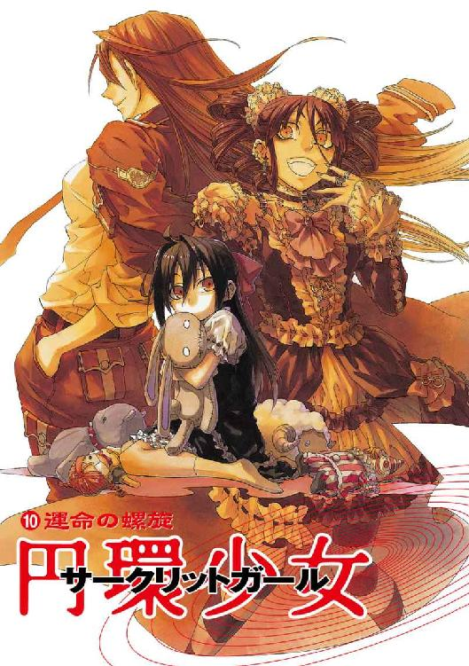
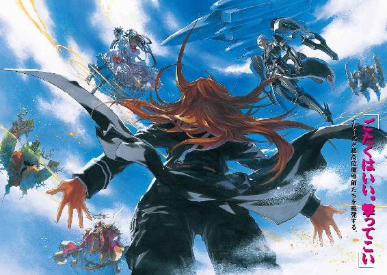
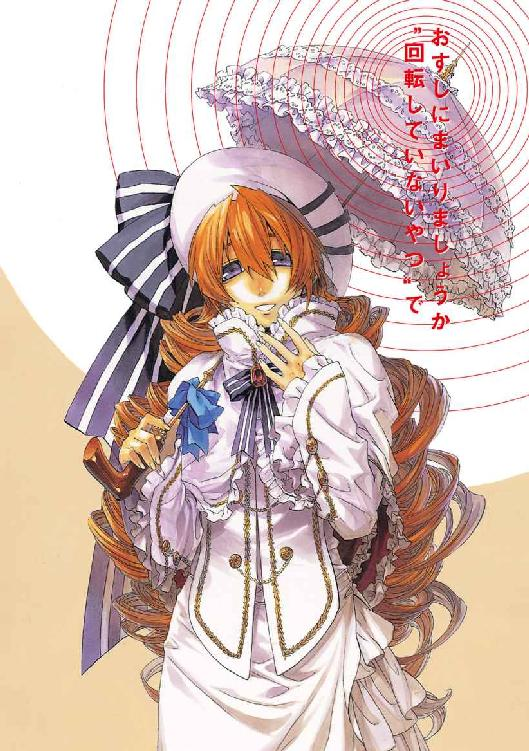
円環少女
⑩運命の螺旋
長谷敏司

角川スニーカー文庫
本作品の全部または一部を無断で複製、転載、配信、送信したり、ホームページ上に転載することを禁止します。また、本作品の内容を無断で改変、改ざん等を行うことも禁止します。
本作品購入時にご承諾いただいた規約により、有償・無償にかかわらず本作品を第三者に譲渡することはできません。
本作品を示すサムネイルなどのイメージ画像は、再ダウンロード時に予告なく変更される場合があります。
本作品は縦書きでレイアウトされています。
また、ご覧になるリーディングシステムにより、表示の差が認められることがあります。
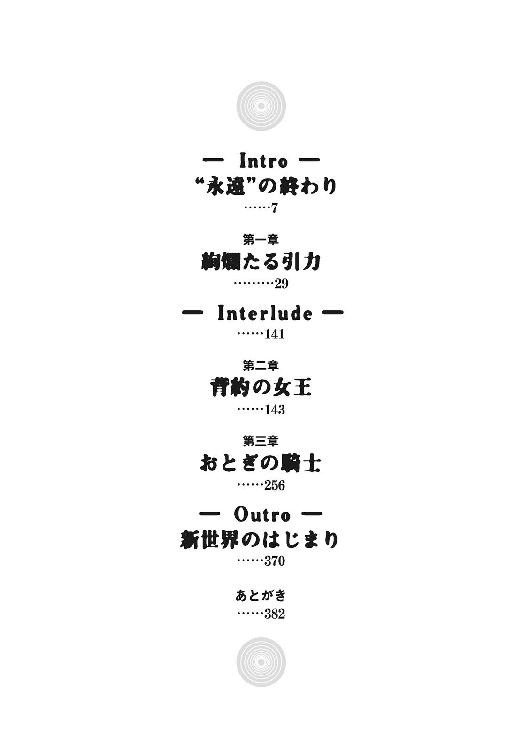
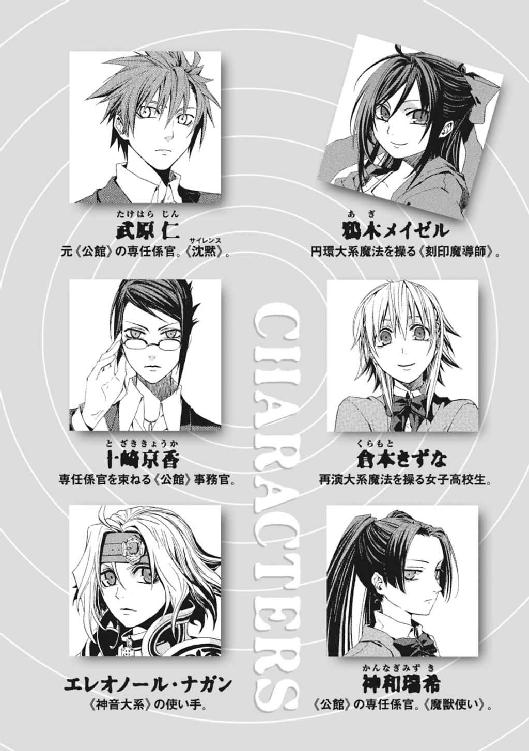
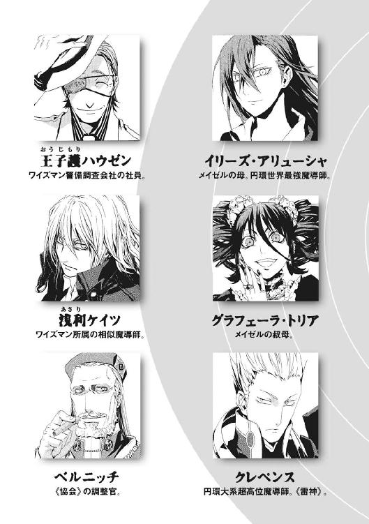
魔法世界の戦争は、一般的に短い。中でも、既知魔法世界中で最大級の出力を誇る円環大系世界では特にそうだ。戦闘がたいてい一度の接触で終わるためだ。
スカアハ市は、広大な中央大洋の東の端に位置する弓状列島にあって、五番目におおきな魔法陣都市だ。それは、中心街の街路が人口に比してせますぎ、どこもかしこも密集しているということでもある。
円環世界の魔法陣都市は、おかげで中心街区が高層建築の林だ。スカアハは、半年の間に人口が三十万から八十万人に増えた。三倍になった人口を、縦にのばすことでしか支えられないのだ。
魔法陣都市のほとんどと同じく、スカアハ市も急ごしらえの改修を繰り返していた。だから、道路から見上げると、都市の景観は、密林で頭上の枝振りをあおいださまを思わせた。ビルの一階へ下りずに済むように、十階以上の高い階に、隣や向かいの建物へ行けるわたり廊下を大量に造っているのだ。
警報が都市じゅうに響いていた。
巨大都市では、高位魔導師の浮遊城が近づくと警報が発令される。都市に人が集まるのは、気ままに移動する浮遊城が、地上の生活に致命的な影響をおよぼすほどの魔力圏を展開しているためなのだ。
すべてを魔法でおぎなう技倆のない〝普通の魔法使い〟たちが、街路を、ビルの廊下を、一斉に移動しはじめた。いや、八十万の市民は、逃げるアリの集団ではなく巣を攻撃された蜂だった。
〈スカアハ市に接近する浮遊城、三基です。それぞれ方角は四時、十時、十一時──。持ち場に着き、制御役の指揮にしたがってください。くり返します──〉
魔法陣都市での放送には、《協会》圏世界では侮蔑語である英語がよく用いられる。日常生活に使われない語句で、警戒せよというメッセージを強く打ち出すためだ。そして同時に、強敵を吞んでかかれという景気づけでもある。
スカアハ西部第八魔法陣区、第六階層の制御役である魔導師フラック・アンティは、持ち場に着く魔導師たちを確認していた。
「野郎ども！ おまえらの仕事はわかっているな」
発音のむちゃくちゃな英語で、フラックは怒鳴った。彼自身も意味はよくわかっていない。フラックは、エリートコースに乗れなかった中途半端な優等生なのだ。
「おお!!」
彼の周囲で、五十名の市民魔導師が、それぞれ声をあげた。地上十五階のビルの屋上に集まった者には、男も女も、若い者も年寄りもいる。このようなことでもなければ、戦いなど一生経験をすることがなかった人々だ。
市民たちを、戦闘で過度に緊張させないため、放送の声は落ち着いていて軽い。
〈スカアハ市に接近中の浮遊城を、四時方向のものをＡ１、十時方向をＡ２、十一時方向をＡ３と呼びます。まずはＡ１への魔法砲撃を行うため、市民の皆さんは制御役の指示にしたがってください〉
フラックは、練習どおり、大きく手を挙げた。
「スカアハ西部第八魔法陣区、起動！」
都市魔法陣とは、巨大魔術を、普通の魔法使いでも使えるようにしたものだ。複雑な魔法も、実際には多くの単純な操作の連動で成り立っている。巨大で精密なものを、多人数の普通の魔法使いに単純な魔法を使わせ、それをフラックたち制御役が他の魔法陣と連動させることで作りあげるのだ。
複雑な電子機器が、単純な部品を組み込んだ回路の集積体であるのと同じだった。
市のゴミ処理場近くにもうけられたフラックたちの魔法舞台に、五十個のちいさな魔法陣が現れた。普通の魔法使いの認識の魔法陣は、本人の肩幅くらいしか直径がない。
五十人ぶんの魔法陣のつくる〝歪み〟を、フラックは教本どおりの手順で一個の中規模の魔法陣にまとめた。
「スカアハ西部第八魔法陣区、第六階層、Connect!」
フラックたちの魔法陣が、下からあがってきた魔法を増幅してさらに上層へ送った。彼らの分担は、これだけだ。だが、この魔法回路の連動は、階層をあがるにつれて巨大魔術へと成長してゆく。
都市魔法陣から魔法砲撃が放たれた。それがどんな弾道を描きどう着弾したか、彼らからは見えない。だが、結果だけは空中に映像が投映されてわかった。
〈魔法砲撃、命中しました。Ａ１、撃墜を確認しました〉
スカアハ市の南東の山地を越えようとしていた浮遊城が、空中でぐらりと傾いた。そして、低い雲と同じ高度五百メートルくらいの高度から、そのまま失速して墜落をはじめた。
浮遊城は、長さ二百メートル、幅五百メートル、高さ百メートルほどの巨大な岩塊だった。フラックたちには想像もつかないほど高度な魔法の産物だ。だが、動力の要である高位魔導師が死ねば、それは墜落する。
〈各魔力回路、再装塡、急げ！〉
制御役であるフラックだけに、通信機経由で情報が送られていた。
「みんな、もう一発行くぞ」
高い青空へ向かって黒煙をのぼらせてゆく浮遊城を、フラックはにらんでいた。
かつて、市民たちは、高位魔導師の前に無力だった。空中の城砦の、地上のことなど無視した勢力争いの流れ弾で、焼き払われるばかりだった。
解放者イリーズ・アリューシャが都市魔法陣を完成させるまで、彼らは虫けらだった。イリーズが希望をくれたのだ。
「行ける！ 俺たちは行けるぞ」
血気盛んな、フラックと同年代の若い男が、調子に乗って歌をうたいはじめた。歪みきった世界を壊すために立ったイリーズへの賛歌、彼ら市民の勝利をよろこぶ凱歌だ。
都市魔法陣に魔力が満ちた。
そのときだった。
大地が爆発するように波打った。方向感覚も上下の感覚も消え失せた。都市を、すさまじい地震が襲ったのだ。
フラックが、転倒して頭を打ち、なんとか立ち上がった。ビルの屋上で同じ魔法陣を作った全員が転んでいた。さっき歌をはじめた若い男の姿がなかった。地上へ落ちたのだ。
緊迫した声が、耳につけた通信機から彼の鼓膜を打った。
〈スカアハ東区、第一から第十五までの街区が、消滅した。今後、都市魔法陣は東区を除外した三区で構成する〉
フラックの顔から血の気が引いた。
ただの一撃で、八十万都市スカアハの、六分の一が消失したということだった。
大陸から流れてきた市民のひとりが、全身を震わせ空をあおいだ。
「《氷爪王》ヘンデリクだ......」
フラックは見た。魔法機械の優美な白い機体が、飛行機雲を曳いて青空を飛んでいた。
その周囲を、流星のような光が、黄色い尾を引いて舞い踊っていた。フラックは、それが流星にしては現れる高度が低すぎることに気づいた。
彼の体から、極限の恐怖が力を奪った。立っているのもやっとだった。彼は、ここに真なる奇蹟の王者、超高位魔導師が現れたことを知った。市の中枢はとっくに承知だろうとわかっていながら、通信機で報告せずにいられなかった。
「《氷爪王》ヘンデリクと《不壊の宝珠》カレリアを発見した。ぼくたちはどうしたらいい」
答えはわかっていた。超高位魔導師の前では、魔法陣都市すらもが、せいぜい元気な虫けらでしかない。だが、やらなければ叩き潰されるしかない。相手は、彼らを大量殺戮することに痛痒を感じない〝怪物〟なのだ。
フラックは指示を待って、通信機を抱きかかえるように耳を澄ませた。だが、一刻を争っているはずの中枢が、沈黙していた。周囲の市民たちも、フラックから指示があると信じて、様子をうかがっていた。
映像は途切れ、放送を流していたスピーカーも、今は雑音を漏らすのみだった。
「通信攪乱だ......」
事態が飲み込めてきた。都市魔法陣は、精密に連動のタイミングを合わせるために、通信機での連絡が不可欠だ。だから、膨大な魔力を無圧縮で砲撃することでこれを攪乱する戦術が確立していた。あらゆるものが静《魔力》に汚染され、通信機がまともに使えなくなっているのだ。
先勝気分だった市民たちが、虫けらの惨苦を思い出させられて蒼白になっていた。高位魔導師には障害にもならない通信妨害が、〝普通の魔法使い〟には致命的だ。現実が、彼らを屈辱と無力感のどん底に叩き落とした。
フラックのこころの底から、汚いことばが出た。
「糞！」
だが、スカアハ市民たちには八つ当たりする時間も与えられなかった。
第二射の標的は、西部街区だったのだ。
光球が、太陽さながら地上で爆発した。
街区が閃光に吞まれ、爆風が砂の城のようにビルを吹き飛ばした。
建物間を結んだわたり廊下が、構造の弱さのため、すべて崩落した。
それが、《不壊の宝珠》カレリアが、超音速で地面をえぐるように突進した被害だと、このときは想像もできなかった。
はっきりわかったのは、彼らのいたビルが斜めに傾き、いっしょに魔法陣を訓練した仲間がもう周りに誰も生き残っていないことだけだ。エリート崩れだったフラックのみが、余波にすぎない超音速の熱風を、不十分ながら防御できた。
周囲に人間の残骸が転がっていた。そして、魔法陣都市のより上層から、人間が雨のように地上へ落下していた。
八十万人の力を合わせても、たったふたりの超高位魔導師に手もなくひねり潰される。それが魔法世界の現実だった。
空が広くなっていた。視界をふさいでいた高層建築が、地震と衝撃波で倒壊したせいだ。
ほんの一分前のスカアハ市の風景をまったく思い出せなかった。
ただ、彼は、幼少のころから今日までの人生を掘り返していた。円環世界の子どもならば、空の王者である浮遊城にあこがれない者はない。〝古いおとぎ話〟の魔法使いたちのようになってみたい野心を抱かない者はない。
だが、高度な魔法知識は、家伝の秘術として秘匿されている。フラックも、自分が高位魔導師の子ならと恨んだひとりだ。彼ら〝普通の魔法使い〟では、その知識や教育には決して届かない。
目の前がにじんだ。大の男である彼が、泣いていた。
「ちくしょう......ちくしょう......」
憧憬したような天才ではない、天上人に踏みにじられる彼らでも、魔法陣都市でなら誇りを持って生きられた。〝普通の魔法使い〟でも、人数の力で、古い秩序から自由になった。力を持てた。魔法以外で、彼らにも一流になれる分野をさがせた。
なのに、すべてが結局は簡単に打ち砕かれる。
だが、絶望したフラックの耳に、まだ賛歌が聞こえたのだ。
「イリーズ！ イリーズ!!」
彼らに誇りと希望をもたらした魔女の名を、人々が呼んでいた。廃墟の都市を前に、恐怖で錯乱したのだと思った。だが、スカアハ市の生き残りは叫び続けていた。
「イリーズ！ イリーズ！」
歓呼がやまなかった。
そして、空を巨大なものが覆った。影になった屋上から、今度はいったいどんな〝怪物〟が頭上に現れたかと振り仰いだ。
フラックは、目に焼き付いたこの光景を生涯忘れないと思った。
巨大な四角錐をひっくり返した形状の浮遊城が、天を覆っていた。巨大な、球体の廃墟を曳航していた。城の底面には、真紅の光で紋が描かれていた。形は、アリューシャ家の、トネリコの枝と鴉の紋章、《円環を引き裂く鴉》──。
「イリーズ・アリューシャ。《魔法使いの中の魔法使い》......」
この紋章を背負って、ただひとり、円環世界そのものに挑んだ超高位魔導師がいた。
イリーズ・アリューシャが、彼らのもとに来てくれたのだ。
周囲の残留魔力が、光の粒となって天にのぼっていった。
《氷爪王》と《不壊の宝珠》がバラ撒いた攪乱用の魔力を、イリーズが回収しているのだ。圧倒的な魔力制御が、遥か天空から支配力をおよぼしていた。
絶望の淵にあったフラックをして、彼女と同じ魔法使いである境遇を感激させるほどの力だった。
光の胞子を吸い込みながら、イリーズの浮遊城が征く。その先で、巨大な魔法陣がまた空中で展開された。スカアハ周辺に現れた超高位魔導師は、《氷爪王》と《不壊の宝珠》だけではないのだ。イリーズを迎え撃つ超高位魔導師は、合計七名。これが、イリーズ戦争の決戦になると誰もが知った。
「イリーズ！ イリーズ！」
歓呼の大合唱が、噴き上げるように響いた。崩れ落ちたビルから、瓦礫だらけの街路から、スカアハ市の全生存者が、彼女の名を呼んでいた。
「イリーズ！ お願いだ、イリーズ!!」
フラックも叫んでいた。子どものように、瓦礫だらけの屋上を走って、アリューシャ家の浮遊城を追いかけた。
「この世界をぶっ潰してくれ！」
まだ、市民たちは、イリーズが「叩き潰す」と言った真意を知らなかったのだ。
円環世界の識者たちは、《憎悪の女王》イリーズによる〝背約〟をもって、黄金の時代は終わったとした。
それ以前、高位魔導師たちは世界の永遠の王者だった。秩序の深奥と高みを無邪気に目指し、力こそ無制限な自由への切符だと認めた。
だが、もっとも純粋に〝魔法使い〟を貫いたイリーズの死で、すべては崩壊する。
そして、かつては虫けら同然にあつかわれた、才なき魔法使いたちの時代が訪れる。質ではなく数が世界を征する、都市魔法陣と魔法機械の時代が幕を開ける。
浮遊城や巨大な城砦を築いた大魔法使いたちは、隠れ住みはじめる。多くの高位魔導師が、他の魔法世界や《地獄》へ散逸した。精妙をきわめた上古の秘術は失伝し、手の届かないものになった。
《永遠の円環》の時代は、一夜の夢のように朽ちて崩落した。
《憎悪の女王》イリーズが、世界を破壊したからだ。
仮面の女王《九位》は、最後の《三十六宮》となった。
永遠の龍たる《雷神》は、記憶の星霜へと沈んでいった。
そして、イリーズの娘、メイゼルは《地獄》に墜とされ、新しい神話が口にのぼるようになった。それは円環世界から《神》を永遠に奪う、ちいさな魔女の物語。世界の終わりの神話だ。
旧時代を捨て去ろうとしている円環世界に最後に残った、世界の終わりの神話だ。
†
十崎京香は、子どものころは、世界にもっと色彩があふれていた気がしていた。国家という制度の中に精密に組み込まれた今は、色合い自体が意味を失ったように思えた。
彼女は、遥か昔からこの地球を訪れ続けている異世界人、魔法使いを取り締まる魔導師公館という役所で働いている。現在の魔導師公館は、警察庁が入っている中央合同庁舎第２号館に、分室を構えている。都心の中心部のここは、かつての多摩川沿いの洋館とちがう。空調は完璧で、設備も完璧に整っている。京香は、幹部並みに十畳ほどの執務室を与えられてすらいた。
だが、京香の背には、変化がどうでもよくなるほどの重荷があった。
数週間前、魔導師公館の本拠だった洋館が燃えた。歴史的に関係が深い魔法使い集団、《協会》との関係が崩れた隙をつかれたのだ。この陥落の日、彼女は《協会》が秘密裏に建造していた地下核施設を発見した。
そして彼女は、ひとつの決断をした。独断で、核施設を破壊させたのだ。
「まいったわ。今週に入って、四時間しか寝られてないと、さすがにマズイわー」
人間は疲れればやつれる。抜けない疲労は積み重なる。
彼女の選択は、人類全体のことを考えてのものではない。米軍と協力関係にある魔法使い集団、神聖騎士団に施設を発見させないための証拠隠滅だった。この日本を守らねばならない中央官僚としての判断だった。
京香は、今も、その判断を悔いていない。だが、ため息は漏れる。こころは抑えられても、体の反応を制御する特殊な訓練など、彼女は積んでいない。
「さて、私は、盗聴器のついた執務室を与えられて、《地域写真通報システム》の準備と公館業務で二週間も家に帰れていないわけですが。よく考えなくても、体のいい軟禁ですね」
京香は、盗聴器で聞いている相手に語りかけた。
彼女が核兵器開発の証拠を明らかにしていれば、人類は手を取って異世界人たちと戦えたかもしれなかった。だが、そうなれば決戦の舞台は、施設が発見された首都東京だ。人類は魔法使いから守られ、結果、首都が焼け野原では、この国は転覆しかねない。
国家に真の友人はいない。異世界人相手の聖戦だろうが、軍を動かすには膨大な戦費が必要であり、だから見返りが要求される。魔法使いと人類みんなが一緒に戦えて、よかったねでは終わらないのだ。よかったついでに日本国内に基地を欲しい、貿易上の不均衡はしかたない、軍事同盟を見直せ、被害賠償を負担すべきだ。最悪、警戒の名目で他国の軍隊が勝手に駐留して、国土を実効支配されることすらあり得た。そして、無体な要求を、戦争を見越した明確な戦争教義がないこの国では、実力行使ではねつけられない。
だが、この判断は、事務官にすぎない彼女の権限を明らかに超えていた。
彼女の執務室をノックする音がした。
「どうぞ」
ドアが開いた。京香が核施設の件を口頭で報告したひとりが入ってきた。警察庁警備局の副局長である清水健太郎は、キャリアも終点近い五十代半ばの警察幹部だ。
「盗聴している事務官を挑発するのはやめてくれないか。びくついて、こちらに報告に来て困る」
制服に身を包んだ清水が、応接用のソファに遠慮無く腰掛けた。彼は、白髪になってもいまだ武闘派だ。体格はよく、武道でもたしなんでいたか手には拳だこができていた。
「この程度で慌てていては、本当に核戦争へ状況が動きはじめたとき困りますね」
「龍堂次長が防衛省に足を運んでいる最中だ。要するに、ぴりぴりしてんだ。《公館》みたいな、毎日がケンカな所帯じゃねえんだな」
清水も、最近は地が出ているのか、彼女とふたりのときは伝法な口をきく。
この清水副局長と、警察庁のナンバーツーである龍堂巌次長へ、彼女は秘事を伝えた。清水と龍堂が中心になって、内密に政府内でも動きがはじまった。情報がどこまでの範囲に共有されたかまでは知らないが、内閣官房長官の名前が入った書類を彼女は見ていた。
全員が共犯者である事実が、彼女たちを結束させていた。ことが大きすぎて、役職の差をとやかく言う余裕すらなかった。京香と清水たちは、もはや運命共同体だった。
「清水さんは、最近、白髪が増えましたね」
京香も、まだ二十五歳だというのに最近はストレスで髪が抜ける。彼女をそこまで追い込むほど、核施設の発見を隠蔽した事実は重い。
「龍堂は、抜け毛がひどいそうだ。そろそろ完全にはげてきやがったな」
東京地下の迷宮で、《協会》の魔法使いたちが核爆弾を生産していたことは、明らかだ。だから、彼女たちによる隠蔽は、露見すれば世界中から非難を受ける。この陰謀団を裏切ろうとなどすれば、味方に殺されかねなかった。
「そちらさんは、腹の具合はどうだ。日本刀で刺されたってな」
約一ヶ月前、東郷永光が公館本館を焼いた。十九年間、魔導師公館の対魔導師戦の実働部隊を支え続けた重鎮が、過激な手段で京香たち職員を護り、道を貫いたのだ。
「きれいに刺していただいたので、ほとんど傷も残っていません。ことばで気遣いいただくより、家に帰ってゆっくり休ませていただきたいですが」
「私も龍堂も同じだ。だが、今は、まだ我々の身柄を押さえてでも情報が欲しいってぇ連中が多い。ぶっ倒れるなら、警察病院に病室が手配してある」
京香は、冗談になっていないからこそ笑った。ひとたび問題が起これば、まっ先に切り捨てられるのは京香だ。だが、選択間違いやただの不運で理不尽に死ぬことが、魔導師公館の日常だった。死のすぐ隣でなごやかに会話することに、彼女は慣れすぎていた。
「一ヶ月間、魔導師公館を守っていただいたことには、感謝しています。《協会》に目立った動きがなく、公館本館を包囲した神聖騎士団も、霞が関の官庁街には手を出せていません。戦力再編の時間が与えられたことは、水面下での事態の進行はあるでしょうが、まずは幸運と言ってよいと思います」
すくなくとも、魔導師公館と警察の職務提携は、スムーズに運んでいた。
「体制を整理する時間が与えられたことが何よりだったな。十崎事務官は、来年四月には、新設のポストの課長補佐に昇進だ。数年のうちには十崎課長になってるだろう」
魔法使いがからむ治安問題を管掌する魔導師公館と、治安一般を担当する警察が提携することは、戦後はじめてだった。担当部署自体が新しいため、その長のイスは空いていたのだ。二十代での課長就任は、昇進が派手な警察官僚の基準ですら速い。京香には出世の道が開けたということだ。これは、老練な清水たちからの、警察と歩調を合わせている限り彼女の将来は安泰だというメッセージでもあった。
だが、昂揚はなかった。
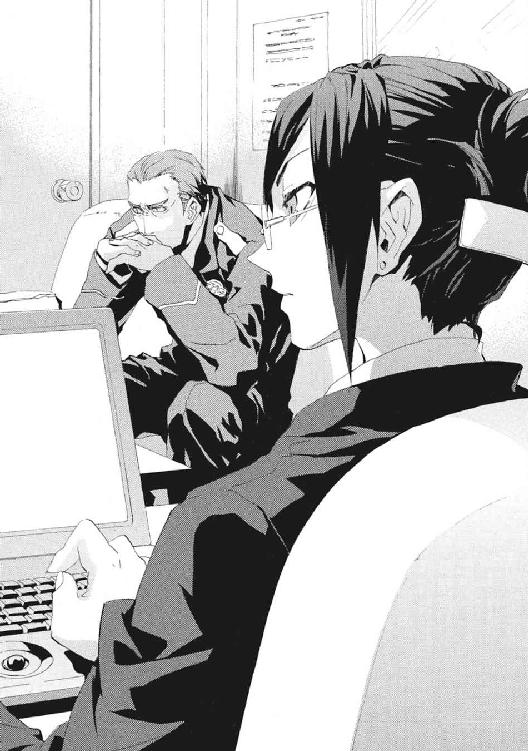
「まずは、その数年間、この国が残っているかどうかですね」
「魔法使いだって、そう簡単にコトは起こせねえだろうよ。人間が見たり聞いたりしただけで、魔法は壊れるんだろう」
清水が同じことを尋ねてくるのは、もう十度目だ。警察幹部でも怖いのだ。
「消去があるからこその核爆弾ですよ。魔法で一度作られてしまった核爆弾は、もう魔法消去の影響を受けません」
京香にとっては日々なじんだ常識だ。この世界の住人の魔法消去能力ゆえに、魔法使いたちは、この世界を奇蹟がない《地獄》と呼ぶ。人間を《悪鬼》と蔑み、普通は姿も現さない。だからこそ今の状況がある。
彼女は、もっとはっきりと言い直した。
「〝恐怖〟が、《協会》に核爆弾を作らせたのです。交渉ではなく実力で〝恐怖〟から解放されるための核ですから、かならず使いますよ」
「魔法使いは、核爆弾を何発持ってると思う。頭目の《九位》という魔法使いの性質から、〝魔法使い問題の専門家〟としての予想だと、どうなんだ」
「資料では年間二十発以上の生産とありました。地下で核実験が行われたのは五年前。百発以上は在庫があると考えるべきでしょう」
この事件で、警察上層部は、魔法使いと付き合うための基本を学んだ。魔法使いが相手では、常識がまったく通じず、最後には実力だけが物を言うということだ。
そして京香は、予想屋ではなく、劣勢を食いちぎるために現状認識をかためる戦闘指揮者だった。
「百発という数が重要です。脅しのためには多すぎます。《九位》は、ワイズマン警備調査会社のように『核兵器を売る』か、でなければ『全面核戦争をやる』と考えるべきでしょう。我々人間の紛争やテロを核戦争に発展させてもいいですし、大都市を消滅させて覇権に目がくらんだ我々に戦争を起こさせてもいい。世界を変え得る数です」
せいぜい半年前、状況はこうではなかった。魔法使いの民間警備会社であるワイズマンのこともそうだ。変化は、あまりに大きく、そして早すぎた。すべてが、円環大系の最高位魔導師《九位》が現れてから、噴出したのだ。
「《協会》主流派──かつてこの国と関係を結んでいた勢力は、明確に敵です。米軍と結んでいる神聖騎士団は、我々の本拠を陥落まで追い込んだ敵です。ワイズマン警備調査会社は、独自の論理で動く潜在的な敵です。そして、我々のほうですが、今年の夏、四ヶ月前の時点と比べて、魔導師公館は本拠を失い、戦力は半壊しています」
若いころからの癖らしく、清水は興奮をまぎらすように両の拳を打ち合わせた。
「そんな状況じゃ、神聖騎士団とズブズブの米軍を、核爆弾が都心にあるってのに、頼れない、と。魔法使いの存在を公開しない以上、魔法使い組織も〝公式には存在しない〟。......ってことはだ......。存在しないはずの核爆弾が発見されりゃ、最悪、日本が濡れ衣を着せられる」
つまり、警察は、魔導師公館と結ぶことで、日米同盟が基本の自衛隊と別の論理で動くことになる。
「魔導師公館は、どんな状況でも結果を出すために、倫理的な歪みを吞みました。魔法使いにかかわる以上、不実と秘密に慣れなければ、土壇場で指示を出せなくなりますよ」
清水が彼女へ向けた目に、一瞬、嫌悪の色が走った。京香たちの地獄へ引きずり込まれようとしていることへの、正当な非難だった。
魔導師公館もまた怪物だ。異世界人たちの狂気を、殺すことで真っ向から破砕するのが、京香たちの仕事だからだ。環境が変わっても、彼女が、専任係官という実行力のまとめ役であることは変わらない。
合同庁舎の十五階に陣取った魔導師公館分室には、古くからの伝統どおり出席退席を示す札が掛けられている。常勤している専任係官の木札は、今や《魔獣使い》神和瑞希、《破壊》八咬誠志郎、《茨姫》オルガ・ゼーマン──たった三人分しか掛かっていなかった。
ここにはもう、魔導師公館を支え続けた剣鬼、《鬼火》東郷永光はいない。
彼女には、過大な思い入れはない。だから、東郷が逝ったことが苦しいわけではない。管理者として、状況の厳しさを認めるだけだ。
「悪化している状況を、整理し直すための手だても講じました。頭を切り替えましょう」
「ああ、あれか。信用できるのか。《協会》主流派でも神聖騎士団でもない魔法使いたちというのは」
「ヨーロッパの魔法使い集団である《連合》は、二大勢力に次ぐ巨大魔法勢力です。他の小勢力というのも、《協会》から弾き出された魔法使いたちが、現地に根付いた子孫です。遺恨はありますから、日和見を決め込まれる前に取り込むべきでしょう。この核兵器問題に対処するための枠組みを構築できれば、日本の利害が無視される可能性は減ります。今月末に彼らを集めて開く、例の対策会議が、今後を占うことになるでしょう」
《協会》主流派を包囲する枠組み作りは、核戦争に突入したときの布石でもあった。駐留する神聖騎士団や米軍という〝よそ者〟に東京の命運をコントロールされない切札が必要だった。そのとき日本という国がただの被害者では、最悪見捨てられてしまう。逆に、神聖騎士団では管掌できないアプローチがあれば、日本は、《協会》との核戦争で、戦略的なパートナーとして発言権を持てる。
そのためにも、魔導師公館が、《協会》包囲網を、《連合》や独立魔法使い集団と作りたかった。この〝魔法使いたちとの連携〟は、《地獄》の全魔法勢力と戦争状態にある聖騎士たちには、絶対にできないからだ。
彼女は、生きているから、昼も夜もなく働き続けている。窓の外はもう十一月もなかばに入り、町並みの落葉樹は色づき道路に葉を散らしていた。庁舎から出ることもまれな今の彼女には、季節感もない。
子どものころは、世界はもっと色彩にあふれていた気がした。
だから、数日ぶりに、組織を抜けて自由になってしまった幼なじみのことを思い出した。十崎家の団らんが記憶によみがえってきた。二度と戻ってこないと知っているからこそ、ひどくなつかしかった。
武原仁は、二度と戻ってこない季節の中にいる。このところ、そう感じることが多くなった。彼は、ちいさな魔女と出会った五月から、半年の間に、あまりに多くのものが変わったことを振り返る。
アパートの様子までもが一変した。五年以上もひとりで暮らした六畳の居間に今は十人もの男たちが集まっているせいで、夜の七時を回っているのにうるさくてしかたない。
「親分、この女、今、『マイク』とか言いましたぜ」
十一月になって、外気はめっきり冷たくなった。だが、仁は、日も暮れて暗くなった今も窓を開けていた。八人も筋肉質の巨漢がいるせいで暑いのだ。男たちが、テレビを見て盛り上がっていた。
「ひゃっはー！ この世界の女は、どいつもこいつも澄ました顔して変態ぞろいだぜ」
巨漢たちは、刻印魔導師という魔法世界の罪人だ。魔法世界最大の政治勢力である《協会》には、罪人をこの《地獄》に追放する極刑がある。この罪を受けた者たちは、《公館》と呼ばれる魔導師公館に下げ渡され、仁たちの国を魔法使いから守るための道具として使い潰される。
このテレビにかぶりつきの男たちが、専任係官《鬼火》東郷永光の下で、《鬼火衆》と呼ばれた刻印魔導師の精鋭の、なれの果てなのだ。
仁は、師である東郷から彼らを託された。東郷は、剣客として生き抜いて、笑って逝った。残された者は、それでも生き抜くのみだ。
「親分、やっぱガマンできねえ。この番組、録画しますぜ」
はげた頭のてっぺんから、身体を切り下ろすようにファスナーを表皮に移植した魔法使いが、少年のように目を輝かせていた。極刑の罪人たちが、フリルをたくさんつけたアイドル歌手を血走った目で見ていた。親分と呼ばれている仁は、もう苦笑するよりない。
「好きにしろ」
男たちが、歌に合わせて、至福の表情で両手をあげる。《協会》圏魔法世界では、神聖騎士団という宿敵が米軍と協力関係にあるため、英語は最悪の侮蔑語で卑語あつかいなのだ。
英語だらけのテレビ番組は、一本突き抜けた魔法使いには、かわいい女の子が卑語を全開にする男の夢だ。武原家のチャンネルは、まじめな女子アナウンサーの英語がたまらない派と、アイドルの英語まじりの歌で萌え死ねる派の間で、日々争われていた。全身に入れ墨を施した魔法使いが、アイドルのダンスに合わせて踊っていた。
どっと疲れるのは何故だろうと思った。頭の悪さで言えば、部屋に男子中学生が八人増えたに等しい。つまり、最悪だ。
「おい。こいつら黙らせろ。《鬼火衆》筆頭だったんだろ」
《鬼火衆》をまとめる少年魔導師、《笑い顔》虎坂井レイが、輝くような微笑みで返した。
「あはは、ぼくじゃ無理ですよ」
「親分、おれたちのことは気にしないでくだせえ」
仁は、恥ずかしくなって、居間の窓を閉じた。
「おまえらのせいで、アパートにまともな住人残ってないんだよ。大家の目が厳しいんだよ」
仁の説教は、金属の鳴る音に遮られた。虎坂井の手に、魔法で作り出された剣が握られていた。虎坂井レイは、高校生だが当代最強の刻印魔導師だ。つかの間の平和を楽しんではいても、彼らは危険人物なのだ。
「大将。こいつらに芸を覚えさせるなら、血ぃ見せないとダメですよ。ケガが治るころには忘れるんですが」
「俺は、元々、刻印魔導師を処断したりするほうじゃない。東郷先生の下とは、暮らし方も戦い方もさすがに変えてくれ」
仁の住むアパートに《鬼火衆》の生き残りが住み着きだして、一ヶ月だ。彼らと連携して戦闘できるように訓練はしているが、嚙み合いかたは今ひとつだった。
だが、それでも仁たちは、生きることを望んだ共犯者だ。大切な者の屍を越えても、夢を見ることを選んだ。虎坂井の、笑顔の奥の目は、暗くまっすぐで笑ってなどいない。
「ちゃんと、夢、見せてもらいますよ」
「ジャーンプ（気持ちよすぎてトンじゃうよぉ）！」
明日をも知れぬ罪人たちが、頰を上気させて唄っていた。
「「ジャーンプ！」」
「これを放置しとくのは犯罪じゃないか」
仁は、激変する世界の中で、それでも生きろと言った。刻印魔導師たちに、魔法使いらしい居場所を作ってやると約束した。虎坂井が、仁にかわって指導力を発揮した。
「てめえら、大将が、あんまり騒がしくしてると、冷蔵庫に残ってるおかずを片付ける当番だって言ってますよ」
刻印魔導師は、現在、非常に微妙な立場だ。《協会》と《公館》の関係が実質的に崩壊したためだ。《公館》の新しい協力者である警察は、まっとうな政府機関だから殉職自体を嫌う。そのうえ、警察側は、《協会》からの誘いでスパイになる可能性があるとして、「刻印魔導師というよそ者」を使いたがらないのだ。
ちゃぶ台の前の、男臭い肉塊が八つそろって沈黙した。居間が静まると、台所から鼻歌と、ぐつぐつ鍋が泡を立てる音が聞こえてきた。
仁がニセ教師をしている小学校の生徒でもある鴉木メイゼルが、晩ごはんを作っているのだ。今夜は、カレーだから大丈夫なはずだった。
「せんせ、どうかした？」
かわいらしいエプロンをつけて、女の子が台所からやってきた。メイゼルは、最近、料理のときは長い黒髪をポニーテールにまとめてからリボンを縛るようになった。《鬼火衆》は、元の世界で神判の極刑を受けるほどの罪を犯した、言い方を変えれば猛者ばかりだ。その中にあって、身長百四十センチメートルにも満たないメイゼルは際だってちいさい。
だが、その存在感は、仁たちのささやかな食卓でもっとも大きい。史上最年少の刻印魔導師であるこの少女が、仁の人生をたぶん変えた。
ちいさなメイゼルにとっても、この時間は特別だった。
「またそんなくだらないもの見てるの？ ごはんのときは、消しなさい」
セリフはままごとのお母さんだが、確かな威圧感があった。電気の制御を得意とする円環大系の魔法使いは、電子機器を簡単に焼き切る。少女は、男の夢を強制終了させられるのだ。
「「はーい」」
工事現場の飯場の雰囲気で、刻印魔導師たちがメイゼルを迎える。メイゼルは、冬が近づいても小学六年生らしい健康的な薄着だ。最近、愛用している黒いタイツでぬくぬくしているのか、頰が上気していた。
「あんたたちがカレーがいいって毎日言うから、カレーにしたげたわ。感謝するのよ」
おおと、匂いでわかっているのに男たちが盛り上がる。スプーンや皿を取りに、言われる前に精鋭たちが立ち上がった。共同生活の最初は寝ころんで待っていた男たちが、怒ったメイゼルに躾けられたのだ。《鬼火衆》たちの撮り溜めた秘蔵ＤＶＤがメイゼルの魔法による磁気で消されてゆく、雷の七日間の地獄絵図を経ての、壮絶な屈服だった。
「カレーは食えるよな」
「カレーすごいよな」
「カレーは魔法だよな」
「カレーハスベテヲ浄化スル《地獄》ノ神ダ」
口々に歴戦の勇士たちがカレーのすばらしさを褒め称えていた。《鬼火衆》が来て、メイゼルはちいさなお母さんよろしく家事をはじめた。料理の腕は上がっていない。それでも、「同じこと続けたら飽きるわ」と、同じ調理法を二度と試さないメイゼルの暴虐を、カレールーだけは慈悲深く包み込んでくれるのだ。
あっという間に、九人の《鬼火衆》の生き残りと仁とメイゼル、十一人が座れるちゃぶ台と補助テーブルが用意された。
「それじゃ、みんな、子豚さんみたいにお皿に顔を突っ込んで食べてもいいのよ」
短めのワンピースをふくらませるほど勢いよく、得意顔の少女が座布団に座った。黒いタイツの生地が、元気よく動く足に引っ張られて膝小僧に伸ばされ、電灯の明かりを繊細に照り返す。
順番に男たちの手に皿が回されてゆき、ご飯をよそい、ちゃぶ台の中心に置かれた大鍋からカレーがかけられてゆく。
一個目の炊飯器が空になり、二個目の炊飯器が半分ほど空いたころ、ようやく十一人ぶんのカレーライスが行き渡った。三個目はおかわり用に炊かれている。生活費は仁の小学校の給料のみで、《鬼火衆》には仕事がない。もう二ヶ月も今の状態が続けば武原家は干上がる。
メイゼルがリボンをほどき、ポニーテールをまとめていたゴムを外した。つややかな黒髪が、背中まで滝のようにさらりと音を立てて落ちた。
「せんせ、おねがい」
ちいさな魔女が、青いリボンを手渡してきた。カレーを盛り終わった《鬼火衆》たちが、不自然なほど近くに席をとったメイゼルと彼を見ていた。満座の注視の中で、仁にリボンを結べと要求しているのだ。
メイゼルは、仁が困るのが何より大スキな嗜虐趣味者だ。かわいらしく体をひねって、彼女がうなじを向けてきた。そして、長い髪をあつかいやすくするため、両手の手ぐしで梳きながら魔法で静電気を取り除いてくれた。
仁は、いつこれが自然になったのか不思議ながら、黒髪にサテンのリボンを結んでやる。
「そういうのは、食事の前にしなくていいだろ」
だが、少女の、おたまじゃくしを使っていた右手に、ちいさな火傷の痕があった。メイゼルは、新陳代謝を速める魔法で、たいていのケガを簡単に治す。だから、火傷が残っているなら、今日の料理の最中のものなのだ。今晩は、炊飯器の米もメイゼルが研いだ。彼女は、一生懸命やってくれていた。
「ありがとうな」
だから、感謝を込めて、仁は、汗で背中に張り付いていた髪を、指で、そっと剝がしてやった。体温が伝わる距離にいると、少女の髪と汗の気配を感じた。
「でもせんせ、カレーって、一口食べたときのハラハラ感がなくてつまらなくない？」
食卓の空気がかたまった。《鬼火衆》の皿には、カレー色で塗りつぶされてはいるが、溶けかけたおかしや、切っただけで鍋に投げ込まれた魚や鶏がてんこ盛りだ。虎坂井の大皿には、あめ玉にしか見えないものまで転がっていた。
「そんなにがんばって変なことしなくてもいいんだよ」
ちいさな小悪魔は、よくも悪くも周囲の空気を彼女の色に染めてしまう。だからこそ、仁は、屈することを知らない誇り高い少女が心配だ。彼女は、危ない目に遭ってもひどい傷を負っても、刻印魔導師の責務に立ち向かい続けた。
魔女の微笑は、年相応にあどけないが、同時に将来の艶を予感させて華やかだ。
「せんせは、あたしがほしかったら、がんばって屈服させるしかないのよ。いっしょの時間がどんなに増えたって、あたしがしなきゃいけないことは変わらないもの」
仁は、締め付けられるように苦しくなった。本当の、人生をかけた重さと純粋さを感じるからだ。
《鬼火衆》のむくつけき男たちが、居心地悪そうにしていた。男として、彼らにどう思われているか多少はわかるから、仁は話をはっきりと打ち切った。
「だから、何度も言っているけど、そういうのじゃないからな」
メイゼルと仁の関係は、同じ刻印魔導師である《鬼火衆》にも微妙に他人事ではない。少女は異性愛を、仁は庇護欲をお互いに託して、ズレたまま彼らは関係を育ててきた。
「せんせは、きっと、カラダにわからせてあげないとダメな人だと思うの」
「もうおまえら全員、さっさとカレー食え」
カレーは、魔法使いも仁たち《悪鬼》も等しく童心に返らせる。騒がしく、がつがつとスプーンでカレーライスを搔き込みはじめた。
「せんせは、文化祭はどうするの？ 学校に来られるの？」
メイゼルが、服を汚さないようにすこしずつカレーをすくいながら言った。彼女が通い、仁がそのクラスの副担任をしている御陵甲小学校は、もうすぐ文化祭なのだ。
「姐さんはナニやるんですか？」
「オレらも行っていいスかね」
「おまえらが食いつくな。うちの小学校の文化祭は、生徒と保護者しか入れないようになってる。おまえら、おとな同士みたいな距離感でメイゼルに接しちゃダメだって、わかってるか？」
《鬼火衆》が仁へ、無言のまま視線を浴びせてきた。嗜虐的な小悪魔だけが、顔をほてらせていた。仁は、授業中こういう空気になることが多いから、もうたじろがなかった。
「だいたい、小学校の文化祭だから本当にナニもないぞ。祭り本番よりも、演し物を作るためにみんなで協力することのほうが大事なんだよ」
メイゼルたちの六年一組は、体育館で劇をする。いかにも小学生らしく、おとぎ話をひねって、アクションやらをつけたごった煮劇だ。ウケをとろうと、内輪受けのセリフや展開が盛り込まれている。つまり、生徒会長選挙で顔が売れているメイゼルの有効利用だ。
「あたし、演技とかけっこうできるほうだと思うの」
少女が、根拠を疑いたいほどの自信をこめて言い切った。
食事中、返答に困る話題が出ると、歴戦の男たちは飯を口に詰める。仁にも、痛いほどわかった。彼らのいた東郷家では粗相をすると文字どおり首が飛ぶことがあるので、弟子たちは、危ない風向きを察知したら口を満杯にして時間を稼ぐのだ。
人数が増えても、仁たちの食卓はどこかちぐはぐだ。ふとした沈黙の気配の中に、何かが欠けているような隙間風が吹くのだ。
こんなとき、仁は、食事の席にあたたかい空気を運んでくれたやさしい少女を思い出す。倉本きずなとは、公館が炎上したあの日以来、結局、一度も会えていなかった。
そのとき、玄関で呼び鈴が鳴った。
仁は、考えるより早く立ち上がっていた。
都合よく、きずなが戻って来てくれたはずがなかった。ただ、メイゼルがはじめてカレーを作ったときもきずながこの部屋にいたことを思い出すと、体が自然に動いた。
玄関を開けた。
白いスーツに白い帽子の、長身の男がいた。右目に銀の眼帯をはめたその中年男をよく知っていた。王子護ハウゼンという、かつての仁の先生にそっくりだった。
「今はごはん中でシタか」
薄っぺらすぎてうさん臭い王子護の笑顔に、蓋をするように、ドアを閉めた。
「誰だったの？」
居間からメイゼルがかわいらしく声を投げた。
「知らないやつだ。一瞬、知り合いに似ている気がしたけど人違いだった」
ドアの外から気の抜けた恨み言が投げかけられた。
「うらめしいデース。よくもぼくを殺したデスネ。うらめしいデース」
脱力しつつも、ドアを開けて一蹴り入れてやりたい矛盾に、頰が引きつった。《魔術師》王子護ハウゼンは、夏の核テロ事件の糸を引いた張本人だ。東京地下の見捨てられた都市での決戦で、この男に引導を渡したはずだった。
「うらめしデース。化けて出てきたんだから開けなサーイ」
「うぜえ。幽霊の季節じゃないんだよ。次の夏まで出てくんな！」
「こっちにも事情ってもんがアルんですヨ。薄っ情な男デスネ」
「ほんとに死んだとちょっとは思ってたやつが、普通に帰ってくるなよ。もっとなんか、こう、ほら......あるだろ？」
「さっさと開けないと、寝静まったコロに忍びこんで、枕元に立ちますヨ」
王子護は核テロ事件で《公館》に手配されている身だ。通報しようとポケットから携帯電話を出していた。コンコンと、明らかにドアノブより低い位置が叩かれはじめた。まるで子どもがそこにいるようだった。
「お兄ちゃん」
仁はその声を知っていた。
だから、まさかという思いでドアを開けた。
仁は、見上げてきた女の子の顔を知っていた。だから、彼の心臓はずっと前に止まっていた気がした。今までの食卓が幻で、本当は、仁は死んでいたのではと疑ったのだ。
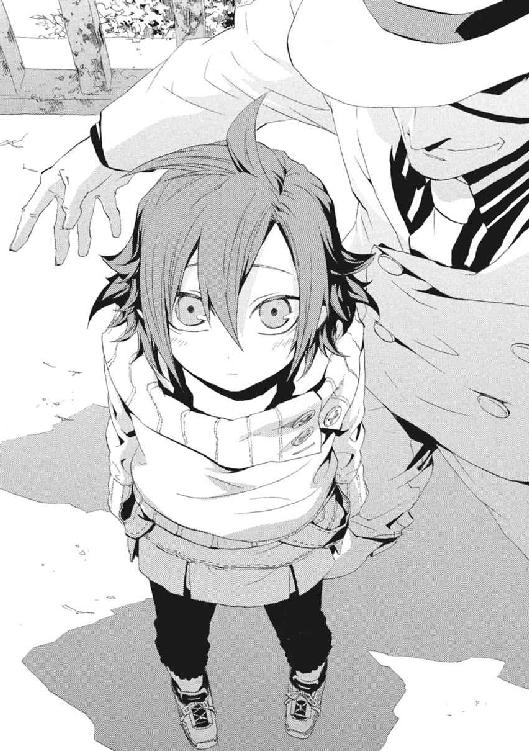
六年前に殉職したはずの、妹の舞花が、ここにいた。目は仁に似て強情そうなのに、細い眉は気弱そうに下がっている。ふくふくしたほっぺが、夜風が冷たいのか赤くなっていた。小学生のころの妹に生き写しの女の子が、仁をじっと見ていた。
妹がちいさかったころ、兄妹は両親が失踪するとなど想像もせず日々を暮らしていた。妹は、まだ自分の肉体を魔法化してしまう暴発にさいなまれていなかった。
「あ、カレーだ。わたし、カレーすきー」
舞花そっくりの女の子が、仁の脇をするりと通り過ぎてあがりこんだ。ちいさな靴を乱雑に脱ぎ捨てたこの玄関の様子を、泣きたくなるほどよく覚えていた。まだ仁がしあわせだったころ、活発だった舞花は、靴を脱ぎ散らかしては母に怒られていた。
「王子護、一体これは何の冗談だ？」
「ぼくじゃなくて、〝彼女〟に言ってくだサイ。〝彼女〟の希望デスヨ」
王子護は、魔法使いの経済的自立を求めて、魔法使い企業であるワイズマン警備調査会社の社員として戦った。仁は、狭い玄関を通り過ぎようとした隻眼の魔人の肩をつかまえた。
「舞花のカッコしてるあれは何だ？ ワイズマンの魔法使いが化けてんのか？」
夏の敗戦などなかったように、王子護が白い帽子を優雅にとった。
「現実がそんな甘っちょろいとデモ思ってルンですカ？ ジンも、そろそろ、ちゃんと情報集めて世界の動きを追いかけなサイ。ちいさい勢力が、大物が行動を起こしてから慌てて対処ナンテ、アホもいいところデス」
紫色の瞳に、《鬼火衆》の残党を率いる身になった仁は見透かされていた。ワイズマンは、一度は《公館》の敵に回った。だが、主義や国のメンツではなく、カネ次第でどこにでも転ぶ企業だからこそ、利害が合えば取引もできる。
「タダメシを食わす義理はないぞ。食うなら、何か置いていけ」
かつての先生が、ひどく人の悪い笑みを浮かべた。
「わかりまシタ。商談成立デス」
舞花そっくりの女の子は、とことこ入ってくると、仁の座布団の隣に座り込んでいた。
そして、居間に入ってきた仁を、刻印魔導師たちの冷たい視線が迎えた。
「せんせ、この子、だぁれ？」
仁の座布団をはさんだひとつ隣にいるメイゼルが、何この女はと目で問うていた。元気いっぱいに、小学二年生くらいに見える女の子が答えた。
「舞花！ わたし、武原舞花です！」
行儀よく膝の上に手を置いていた。そんなささいな仕草までが、仁の古い記憶に現れるそのままだった。
「どういうことだ」
「本人が舞花だって言うんだからしかたないでショウ？」
あたりまえのように王子護が、入れ墨の男たちを押しのけて座った。仁にも、聞きたいことが山ほどあった。
「この子にカレーをあげてくれ」
「カレー、大すき！」
仁が中学三年生でこの部屋に引っ越してきたころ、同い年の妹はことばすくなだった。突然両親が姿を消したショックと、そのストレスからかもしれない魔法の暴走のせいで、未来をあきらめていたからだ。
つらい顔ばかり覚えていたから、仁にはまぶしかった。ちいさいころの妹は、こんなふうに元気だった気がした。
舞花だと名乗った女の子が、ごく自然に、食器棚の引き出しからスプーンを二本取った。そして、適当な大皿を背伸びして引っ張り出した。薄手の白いセーターにピンクの吊りスカートの子どもっぽい格好の少女が、ご飯の仕度をしていた。だが、小学校低学年の時期の舞花なら、まだ引っ越してくる前のこの部屋の食器の配置を知っているはずがなかった。
カレーを忘れて後ろ姿に見入っていた仁を、メイゼルが責めた。
「せんせは、若い子がスキなの？」
自分も小学生であることを完全に棚に上げていた。
「ちいさいとかじゃない。妹の舞花のこと、前に話しただろ」
「六年も前に亡くなった人が、今さら、子どもの姿で出てくるわけないでしょ。せんせ、疲れてるのよ」
鬼火衆が、学校の学級会のように動揺していた。
「親分は、姐さんの立場も考えないといけないと思うス」
「おまえらわかってないのに中途半端な反応するな」
皿をもってきた舞花に、ご飯を盛ってやった。メイゼルがしかたないとばかりにため息をつき、膝立ちになって白いご飯に鍋のカレーをかけた。
ちいさい舞花が、両手で「ハイ」と王子護にカレーライスを手渡した。すっかりなついている様子だった。
「ジン、いいことを教えてあげまショウ。神聖騎士団と《協会》主流派は、近いうちに動きマスヨ」
食卓の気配がかわった。《鬼火衆》もメイゼルも、これが刃の上を歩くような危うい平穏だと知っていた。
「どういうことだ。いつ起こる」
「情報は集めて分析しナイと、意味ないデスヨ。魔導師公館が準備を進めてる《Ｍシステム》を知ってマスカ？」
それは、最近、警察の新しい試みとしてよく報道されているものだった。
「《地域写真通報システム》って、不審なものを発見したら、市民がそれをデジタルカメラで撮影して、メールで通報するとか言うやつだろ。《Ｍシステム》って、内部では呼ばれてるのか」
仁も、魔法使いには卑語だとわかって、技術の話題では英語を使わざるを得なかった。
「何なの、せんせ。もっといやらしく説明して」
「いや、......まあいい。気づいた人が誰でも写真をネットワーク上の地域の生活安全地図に貼り付けるようになって、携帯とかパソコンから不審者情報がすぐわかるようになるんだよ。暗がりとか物陰の写真をみんなが撮影したら、写真に撮られたくない犯罪者は、犯罪現場になりやすい場所に寄ってこないだろ。やっぱり、魔導師公館がらみなのか」
住民の生活が覗かれてプライバシーが侵害されると、ニュースで活発に議論されていた。
だが、魔法使いには、多数の市民に暗がりの写真を撮られることは、身の破滅だ。《悪鬼》の魔法消去は、写真やビデオの映像や音を通した観測でも間接的にはたらく。地域のあらゆる場所を観測できれば、魔法使いに安心して魔法を使える場所はなくなる。日本には、携帯電話を含めればデジタルカメラが一千万台以上あるのだ。
「こんなモノが本格稼働したラ、《協会》や神聖騎士団だっテ地上で魔法を使えまセン。だから、《協会》の大規模作戦は、かならずその前に決行されマス」
「稼働は来年の四月からだろ。まだ十一月だから、四ヶ月も余裕があるぞ」
「試験稼働はもっと早いんデスヨ。旧《公館》周辺地域が、その試験地域に選ばれるから、政府が米軍と折衝にはいってマス」
その意味を理解して、仁の背筋に戦慄が走った。
「《協会》魔導師の封じ込めか。そんな露骨に包囲にかかられて、《協会》が黙ってるはずがない」
「《協会》にとっテモ、今核爆弾のカードを切れば、逆にＭシステムの配備が進んデしまいマス。《九位》モ、決戦のつもりでなきゃ仕掛けられまセン。十崎サンの娘さんは、ジンとちがって優秀ですヨ。今回は《協会》の先手を取りマシたネ」
彼が知っていた旧時代の《公館》では、Ｍシステムなど夢のまた夢だった。だが、「警察と協力する新しい魔導師公館」には、古い仕事しかできない東郷や刻印魔導師の居場所がない。
「そういえば、あのヤロウ、おっ死んだそうデスね」
軽薄な笑みのまま、王子護が視線をかすかに下げた。東郷永光との付き合いは、王子護のほうがずっと長い。
「あの人は、やり切って死んだよ。俺たちが今さらどうこう考えることじゃない」
わかっているのに、《鬼火衆》も黙ってしまっていた。抜き身の剣のような、見事だが恐ろしい人だったからこそ、正しい姿を思い出せなかった。記憶の中では、よいことばかり浮かぶが、そんな人でないことはよくわかっていた。
「ジンも、皆サンも、今、都合のいいコトばっかり思い出してるでショウ」
王子護のことばが、生ぬるい沈黙を裂いた。
「虎は、死ねば毛皮を便利に使えマス。けれど、生きているウチは猛獣デス。死んだ人間は便利ダネ」
だが、核心を突かれても、仁は〝悪人〟だから、恥知らずに返せた。
「虎だって、毛皮で、生き残った連中が暖をとれるなら、本望だろうさ」
彼も、今では独り身ではない。魔法使いを支援するＮＰＯ法人の代表だ。刻印魔導師を拾い上げてともに生きる道を探すのが、仁が見た夢だ。いつか、メイゼルたちが、光の当たる場所で魔法を活かして仕事ができる日を、仁は夢想する。
──そのとき、きっとこの世界はもはや《地獄》ではない。
王子護と仁は、もはや悪人と偽善者ではない。おのが才覚と意志を世界に投げかけた、ふたりの悪人だった。
「言わんこっちゃねーデスよ。だから、君は『ぼくらと同じ側だ』と言ったでショウ」
仁は、答えたくないときの東郷家の習いどおり、カレーを口に搔き込んだ。メイゼルが一生懸命作ってくれたものなのに、不味く感じた。
変わってしまった仁の中で、高校生だったころの彼自身が、今も叫び続けている。カレーになぜか入っていた酸っぱいあめ玉を、奥歯で嚙み潰した。思いどおりのものが口の中に入ってくることなど、ない。結局、逃げずに、戦って嚙み潰すしかない。
ゴリゴリと鈍い音がした。王子護の口にもあめ玉が入ってしまったのだ。
「そっちは何味だ？」
「のど飴だってコトしかわかりまセンヨ」
噓まみれの王子護は、感情を顔に出したりはしなかった。
食卓のそこかしこであめ玉を嚙み砕く音が響きはじめた。《鬼火衆》も根性を見せはじめたのだ。
「大将、カレーって男の意地を語る料理でしたか」
虎坂井レイが、素朴な感想を述べつつも今さら引けない仲間に従った。
「......おねえちゃん、これ、おいしくない」
舞花が、からんと皿にちいさなあめ玉を吐き出した。口の中であめを砕くおとなたちが、みんな道化になった。
メイゼルは、カレー鍋にあめ玉を大量投入したことを棚に上げて、困った様子で頰に手を当てた。
「そうよね。ちょっと失敗だったわ」
真実は、子どもの目だけに映る気がした。
そして、食べ終わると、手配中の身である王子護は立った。
「では、よろしく頼みマシたヨ」
当たり前のように、白いスーツを払って玄関へと向かった。
「おまえ、なに当たり前に子ども置いてこうとしてんだ？」
「ジン、ぼくに食わせるタダメシはないって言ったデショウ？」
詰め寄る彼に、明るすぎてうさん臭い笑顔で、王子護は言ったのだ。
「だから、この子を置いてゆきマス」
頭に血がのぼった。仁がメイゼルを守ってきたからであり、この子が舞花の名前と姿を持っていたからだ。
「バカだろおまえ！ どこの世界にカレー代に子ども置いてくヤツがいるんだ？」
「せんせ、カレーこぼれたわ」
「スプーン振りながらしゃべるのもやめなサイ。服にカレーが飛びマス」
白いスーツに、カレーのはねが飛んでいた。
「おまえらカレーのほうが大事か？ 人間ひとりの人生だぞ」
「せんせ、もう、この子の人生引き受けたげるつもりなのね。妹さんに似てるから？」
ちいさな魔女の指摘が、的確に肺腑に突き刺さって、絶句した。
「わたし、パジャマももってきた」
じっと舞花が、仁を見ていた。高校生だったころ舞花と別れた記憶が、逆流していた。こわかった。せっかく道を見つけて歩き出したのに、その足下が揺らぐようだったからだ。
「いい加減にしろ。冗談ごとじゃないんだぞ。子ども連れてるんなら責任くらい持て」
「ぼくに子どもなんか、育てられると思ってるンですカ？」
「だいたいこの子、何なんだ。本物の舞花だったら、子どもに戻ってるのはおかしいだろ」
さわやかに、王子護が断言した。
「この子は舞花デスヨ。ぼくが、目の中に入れて育てたんデスから間違いありまセン」
仁の戦いは、妹を守ろうとしてはじまり、それがかなわなかったことで決定づけられた。その戦いのスタートラインである舞花だと、王子護は言う。
「冗談にしても笑えないんだよ！」
今さら何だと、腹の底から突き上げた。だが、仁は、立ち上がって拳を握りしめても、王子護を殴り飛ばせなかった。王子護がまた噓をついていても、舞花の前だったからだ。
「ここの部屋に、夏のころに一度《泡》が迷い込んできたでショウ。あれ、いつの間にか消えてたの覚えてマスか？」
仁も、夏のしあわせな日々を忘れていなかった。まだ倉本きずなもいたこの部屋に、白金色の蛍のような《泡》が、突然飛び込んできたのだ。
「あれが、舞花の断片だったってこと、ジンももう知ってるでショ。うかつデスヨ、ジン。魔法化した体の断片が残ってルんだかラ、魔法を維持できてるじゃネーですカ。魔法を使ってる《泡》を捕獲して《万有なる化身》で目の中に入れて育てタラ、頭に入れてられない大きさに成長したから、外に出したのが、ハイ、この子デス」
「あそこまでちいさい断片だぞ。人間ひとりまるごと再生なんて、できるわけないだろ」
「ジン、魔法をナメてますネ？ 君が見てきたモノなんて、ほんのちょっとでしかねーんデスヨ」
仁は、どうしてよいのかわからなかった。魔法使いと付き合ってきたから、こんなうまい話はないことくらいわかる。しかも相手はワイズマンと王子護だった。
ただ、それ以上におそろしかった。
仁の動揺を見透かしたように、帽子のつばの奥で古いおとぎ話の〝悪い魔法使い〟が笑った。
「信じちゃいマシたカ？」
一瞬、仁はほっとしてしまった。
「噓なのか」
「本当デス。《蛇の女王》は、自分の体を、奇蹟すら作り出す宇宙卵に変える魔法デスヨ。人間が生まれるときだって、受精卵の細胞たった一個から赤ん坊に成長スルんデス。宇宙卵から人間作り直せナイわけネーでショ」
もしも王子護のことばが本当なら、いきなり妹が帰ってきたということだった。ちいさな舞花が、じっと仁を見上げた。
「でも、わたし、もう《蛇の女王》の魔法を使えなくなっちゃったけどね。魔法が使えなくなって、かえってほっとしてるけど。魔法なんてなかったらよかったのにって、中学のときから言ってたしね」
仁には、妹だというこの女の子をどうしたらよいか、さっぱりわからなかった。
「王子護──」
仁の体は、考えるより早く動いていた。やり場のない激情をどうしようもないまま、距離を詰め、王子護の胸ぐらをつかんでいた。
「いいかげんにしろよ、おまえ。こんなマネまでしてくれて、また俺をだましていやがったら、絶対に、おまえを殺してやる」
何か大きなものが動いていた。舞花と仁自身も巻き込まれていた。裏がまったく見えないことが、恐ろしかった。
それでも、ちいさかったころの妹の姿で、同じ記憶を持った子どもが、ここにいた。だから、毒だとしても見捨てない腹は決まった。ただ、仁は、今では多くの人間を背負っていた。
彼が決断を伝えるより前に、ちいさな舞花が座り直して、メイゼルへ向き直った。
そして、かわいらしくも礼儀正しく、深々と頭を下げた。
「メイゼルさん。お兄ちゃんをよろしくお願いします。意地っ張りですが、本当は甘えたがりだから、甘えさせてあげてください」
頼みかたも、頼る相手も間違えていた。
微妙な沈黙を、メイゼルが満面の笑みで破った。
「お義姉ちゃんって呼んでいいのよ」
「置いていいのか？」
仁との付き合いも長くなったメイゼルは、どっしりと安定感すら見せつつあった。
「せんせは、どうせ面倒見るんでしょ？ だから、あとはあたしたちが認めるかどうかだけでしょ」
「ちょっと待て。電話をかけてくる。王子護をそこから逃がすなよ」
仁には、小規模でも組織の長として、果たしておくべき責任があった。状況を、仁たちと社会の窓口である、《公館》の十崎京香に知らせるべきだった。
電話はつながらなかった。ここ一週間以上、よほど忙しいのか京香への連絡はほとんどとれていない。
苛立ちつつも、台所から戻った。王子護はすでにいなかった。
「王子護はどうした？」
「せんせ、しっかりして。本気で逃げるつもりのあいつを、魔法消去以外の方法で止められるわけないでしょ」
《鬼火衆》も、自分たちに出来ないことをわきまえていた。
王子護は、本当に、夜中になっても引き取りにこなかった。舞花は、元々彼女の部屋だった四畳半で、メイゼルと眠ることになった。
仁は、翌朝まで、結局一睡もできなかった。なくしたものが、想像もしていなかった形で戻ってきた奇蹟を、受け容れられなかったのだ。
取り戻せるものなら、そうしたかったはずだった。なのに、逆に、実現してしまったことがどうしようもなく不安だった。人間は、過去が戻らないからこそ、足場を固めて歩みを進められる気がした。
夜が明けた。
どんなふうに新しい朝を迎えたらよいか迷っている間に、ふすまが開いた。ピンク色の水玉のパジャマもわんぱくに寝乱れたまま、舞花がどたどた居間に飛び込んできた。
「待ちなさい、マイカ！ 下着が見えてるでしょ」
絹のナイトウェアを足にまとわりつかせて、メイゼルがそれを追いかけてきた。身長百四十センチメートルに満たないメイゼルより、さらに舞花は二十センチメートルほど背が低い。茶色がかったくせっ毛を舞花がかわいらしい両手で押さえて、かばっていた。
「かみの毛、ひとりでできるー」
仁は、ほほえましい追いかけっこを眺めながら考えた。魔法使いが生きられる場所を作ろうと決めた。そんな彼が、舞花を見捨てることのほうが不自然に思えた。もしも連れてこられたのが知らない女の子だったなら、迷いもしなかったはずだからだ。
舞花が盛大にすっ転んだ。
「男の人の前に、そんなカッコで出るなんて、はしたない子ね」
そのパジャマのめくれた背中に、メイゼルが馬乗りになった。それでもあきらめずに体をよじって暴れるものだから、仰向けになった舞花をメイゼルが組み敷くかたちになった。
「あら、あんた、よく見たら、兄妹だからせんせに似てるのね。そのくやしそうな顔、せんせにそっくりだわ」
髪をとかしてやるためだったろうブラシを放り出して、ちいさな魔女が舞花の両手を押さえつけた。
「せっかくだから、くやしいよりももっと体が熱くなる、『はずかしい』を教えたげるわ」
「ひっ、......たすけてお兄ちゃん！」
あどけない嗜虐趣味者が、舞花の顔へ上体ごと頰を寄せた。濡れたような艶のある長い黒髪が、ちいさな子どもを捕食するように覆い隠した。
「マイカの『お兄ちゃん』は、あたしたちのコト見て、興奮してるわ。だって、せんせは、痛い目にあう天才だもの」
仁も、さすがに我に返った。
「誤解されるだろ。俺を変態みたいに言うな」
メイゼルの体を、後ろから両脇をつかんで持ち上げた。よほどこわかったのか、舞花が自由になった両脚でメイゼルを蹴ろうとした。涙目になって、鼻水を垂らしていた。
子ども同士は、すぐに仲がよくなるかわりに、決裂するのも早い。
寝起きの悪ふざけがすぎたせいで、メイゼルはすっかり舞花の信用を失っていた。
元気があり余っているせいか体温の高い舞花が、仁の隣にぺっとりとへばりついていた。朝食に集まってきた《鬼火衆》たちが、ちびっこふたりの緊張状態に驚いていた。彼らを代表して、学生服姿の虎坂井がたずねてきた。
「大将のまわりの女性たちは、どうしてみんな険悪になるんですか」
「これは俺のせいじゃない」
仁は、オーブントースターに食パンを入れて、パンを焼く係だ。メイゼルが、台所でおかずを作っていた。
十個以上の卵をぶちこんだスクランブルエッグが、大きな中華鍋に入ったままちゃぶ台にドンと置かれた。途中でめんどくさくなったのか、皿に盛られてすらいなかった。
仁は、ため息をついて、直に置かれた鍋の下に新聞紙を敷いた。
舞花が、あぐらをかいた仁の膝によちよちとあがってきた。そして、まだ熱い卵をつまみ食いした。
「メイゼルお姉ちゃん、おりょうりヘタだよね」
《鬼火衆》たちの悲鳴があがった。居間に、不機嫌な目つきのメイゼルが、大股で戻ってきたのだ。
「あたしの料理にケチつけるの？」
「玉子やきにおかし入れるなんて、おかしいよ。それに、やけてないし」
罪のない目で、童女に戻った舞花が、仁を見上げてきた。曇りのない大きな瞳を向けられると、噓をつけなかった。
居間の罪人たちも、一様に口をつぐんだ。全員が同意見だったのだ。
「......あんたたち、なんとか言いなさいよ」
最後の決定は仁が出した。
「なあ、メイゼル。やっぱり食事は当番制に戻そうと思うんだが」
メイゼルが、胸に手を当てて言い切った。
「おかしいのは、せんせたちの舌よ。あたしの作るものが、おいしくないわけないでしょ」
だが、あめ色の瞳が、いつも味見をしないことを自覚しているのか、微妙に視線をそらしていた。子どもに戻った妹が剛速球をぶつけた。
「おいしくないよ。お母さんのおりょうり、こんなじゃなかったもん」
「せんせに聞く」
ちいさな魔女が、炎があがりそうな激情をこめて、仁を見おろしていた。
強い刺激が大スキな彼女が、責めるときは強気に押さえつけて欲しいと常々言っていたのを思い出した。
「俺の好きな味を教えるから、そのとおりに作ってみろ」
言った後で、仁の顔から血の気が引いた。取り返しのつかない道に踏み込んだ気がした。
いつも強気な彼女が、はっと息を吞み頰を真っ赤に染めたからだ。そして、ちいさな両の手を、熱さを確かめるように頰に当て、生唾を吞み込んだ。
「わかったわ。......そこまで言うなら、せ、せんせが、武原家の味ってのを、あたしに教えてちょうだい」
結局、スクランブルエッグは、仁が作り直した。メイゼルは、充実した笑顔でそばにいて、何度も「せんせは、こういうのがスキ？」と聞いてきた。
皿を並べ終わると、テレビでは朝のニュースをやっていた。英語が流れるのが嫌いなメイゼルも、ニュース番組だけは食事中に見るのを許してくれる。報道されていたのは、殺人事件だった。若い夫婦と、夫の妹の間でトラブルが起こり、それが刃傷沙汰に発展したのだ。
仁の隣に座ると、ひどく重いため息を小学六年生のメイゼルがついた。
「わかるわ──」
舞花は、理解できているのかはともかく、妹の味方だった。
「いもうとさんが、かわいそうだよ」
メイゼルは、なぜか嫁を応援していた。
「兄妹だろうが、お兄ちゃんを一回お婿にあげたら、もうお嫁さんのモノなのよ？ コジュウトが余計な口なんて出し続けたら、最後にはどっちかが死ぬのよ」
「おまえら、そういう話を、イヤな実感をこめてメシどきにするなよ」
バターのきいた卵は、《鬼火衆》にもさいわい好評だった。
最初に朝ご飯を終えたのは、もりもりつまみ食いをしていた舞花だった。何も言わずに、ほとんど食事を終えていた仁の膝の上によじのぼってきた。昔の妹よりも、甘えん坊になったようだった。
「お兄ちゃん、本当におっきくなったよね。なんか、お父さんみたいだよ」
小学生のころの舞花が、こんなふうに父親に甘えていた記憶があった。すぐそばで気配を感じるごとに、これが本物の妹だと実感できてきた。これが本当だと思うと、足下が揺れた。こんな奇蹟が仁に訪れてよいのかと不安でたまらなかった。
舞花が戻ってきたとしても、仁が《公館》の任務で何百という人間の命を奪った事実は、なかったことにはならない。大切なものを守りたい欲でそうしてきた、彼が〝悪人〟である現実は、取り消せない。
ちいさな舞花はどうだろうと思った。かつての舞花は、犯罪魔導師を殺したことで、還れない道を歩み出した。子どもに戻った妹は、血をぬぐえたのだろうかと思った。
純真な瞳がじっと見上げてきていた。仁のことを、かつてメイゼルは「舞花に再び向き合うために戦っている」のだと評した。今、どんなに愚かでも、帰ってきた妹に何かしてやりたかった。
「お父さんか......そうだな。なんか、ずいぶん年上になっちゃったな」
疑問をぶつけられなかった。時間を巻き戻せるものならそうしたいと思っていた未練のせいで、この幸運を否定しようとすると吐きそうになった。
「うれしいのに、なんで、なんか泣きそうなんだろうな。俺は、高校のときよりずっと強くなったからさ、ちゃんと守ってやりたいんだ。今度こそ、しあわせになってほしいんだよ」
受けるべき相手がいなかった愛情が、今、暴れるようだった。高校生だった舞花になら、こんな気安く触れられなかった。無力に見える子どもの姿だから、やさしくなれた。失踪した両親のことを考えた。生きているかも定かではなかった。仁の父は《公館》職員だったのだ。
「わたしが、お兄ちゃんをたすけてあげる」
彼の膝にちょこんと乗った舞花が、仁の顔へと、握ったら折れそうな腕を伸ばしていた。
「苦しいんだよね。お兄ちゃんは、がんばったよ。だから、お兄ちゃんがしあわせになれないような、ここは《地獄》じゃないんだよ」
仁がメイゼルにするように、舞花が彼をなぐさめた。それが、高校生のときに別れた仁と彼女の、すれ違わなければありえた未来に思えた。
隣で、メイゼルが立ち上がった。そして、思い切りよく舞花が乗っていない左側の膝に腰を下ろした。小学六年生の、舞花より十キログラム近く重そうなその体に潰されて、仁の股関節がゴキリと音を立てた。
「おまえが舞花のマネすることはないだろ」
重さよりも、メイゼルとの近さや生々しい女の子の匂いが、仁をうろたえさせた。
「せんせは、あたしと新しい関係をつくるって言ったでしょ。せんせを助けたげるのは、あたしなのよ」
刻印魔導師と専任係官の間柄ではなくなっても、メイゼルは仁のそばにいてくれた。
仁は、この世界で、魔法使いが生き方と能力を正当に活かせる日が来ると、信じた。
《鬼火衆》も、彼との人間関係にすべてを託した。
虎坂井をはじめとする一蓮托生の罪人たちが、微妙に仲間に入りたそうにしていた。
「大将。ぼくらも膝の上に乗ったほうがいいですか」
仁のアパートは、子どもたちがたてる元気な音でいっぱいになった。
ニセ教師として勤める御陵甲小学校から帰ってくると、舞花といっしょにメイゼルが料理をしていた。台所でばちばちと油が爆ぜていた。晩ごはんは、ちくわやら肉や野菜やいろんなものに衣をからませた揚げ物だった。
はじめてメイゼルが作ったカレー以外のまともな料理だった。だから、ちゃぶ台にそれが供されたとき、《鬼火衆》から喝采があがった。
仁は、夕食の風景を、複雑な思いで眺めていた。ようやく京香に、小学校の昼休みの時間、連絡が繫がったのだ。舞花のことを話すと、幼なじみも、仁と同じ疑いを抱いた。専任係官時代の記憶を持っている舞花が、魔法や魔法使いのことを話題にしないのは、不自然だった。彼女は、《協会》の核爆弾の爆発を止めようとして殉職したからだ。
この夏、《泡》となった舞花の断片がここに戻ってきたときと、仁たちは変わった。多くを失い、メリーゴーラウンドが回るようにまた摑んだ。そして、かつて妹と転がり込んだこのアパートは、もう、仁が還る家だ。
だからこそ食卓に倉本きずながいない空白が、身にしみた。
食後、子どもたちはお風呂に入っていた。その間に、仁には、連絡するべき相手がもうひとりいた。妹が戻ってきた奇蹟が楽しいほど、寂しさが深まってつらかったのだ。
ひとりアパートの外に出て、携帯電話をポケットから出した。携帯電話は、公館本館が陥落して十日後、十崎京香経由で戻ってきた。陥落の数日前、神聖騎士団に追われた倉本きずなを助けたとき、なくしたはずのものだった。
番号を見ずに、彼女の携帯電話へかけられた。
月夜の下に、窓に面した風呂場から、メイゼルと舞花の声が漏れだしていた。
「あいつら、うるさいなあ」
仁からの電話を、倉本きずながよろこんでくれると、甘い期待はしていなかった。
彼らが別れたのは、きずなの義理の父を、仁が斃していたせいだ。そして、事実を彼女に隠していたことで決定的に信用を失った。
悪人でも、きずなには父親だった。だから、仁は彼女にとって親のカタキだ。
〈......なんですか〉
心臓が止まりそうな呼び出し音を五回ほど待つと、きずなが電話をとった。何週間かぶりで、きずなの声を聞いた。
「ひさしぶり。今、電話だいじょうぶかな」
何かあいさつしようと思ったけれど、それ以上はことばにならなかった。
〈いいですけど〉
きずなの声は、事務的で硬かった。やさしい彼女に、こんな突き放した話し方をさせているのは仁だった。
奇蹟が、きずなにも及ぶと思ってはいなかった。ただ、〝家族〟のようになじみだした妹のことを、きずなにも聞いてもらいたかった。そして、こんなことをきっかけにしているようで、羞恥でことばを継ぎ損なった。
沈黙が、夜の寒さとともに胸へと刺さった。けれど、ことばのない静かさの向こう側に、確かにきずなを感じた。苦しいけれど、不快ではなかった。
〈食事はどうしてるんですか〉
彼女から水を向けてくれた。
「きずなちゃんがやってくれてた家事って、本当に大変なことだったんだな。メイゼルがやったり、うちに来た刻印魔導師のみんながやったり、俺がやったりだけど、食事どきは戦争だよ。本当に、きずなちゃんには感謝してる」
きずながいたころ、仁は何回感謝を伝えたろうかと思った。逃げられた嫁に元旦那が電話で泣きついているようで、いっそう恥ずかしくなった。
〈栄養をかたよらせちゃダメですよ〉
声を聞いていると安心した。仁ときずなは、先生と生徒でも、元専任係官と刻印魔導師でもない。だから、きずなへ向けている感情を、彼は整理しきれなかった。彼女のカタキであることを思えば、あまりに恥知らずだった。
「ご飯と野菜だけはテーブルにのせるようにしてるから、しばらくはだいじょうぶだよ」
また作ってほしいと言えなくて、黙った。きずなも何も返さず、ことばを待つような、ことばを発しようとしてためらっているような、生暖かい間が横たわった。男である仁のほうから、勇気をもって言った。
「今度、うちのアパートに来てくれないか」
電話から返ってきた。
〈わたし、この一ヶ月、武原さんと離れてみて、おたがいのことよく知りあうより前に近づきすぎた気がしたんです。お父さんのこと、頭ではわかってるんです。武原さんにひどいこと言いました。お父さんが何をしたかも、こないだ十崎さんに全部聞きました。本当に、頭ではもうわかってるんです〉
真実と向き合って、きずなは本当につらい思いをしたはずだった。なのに、仁は、心配しながらも、彼女が帰って来てくれる奇蹟を一瞬期待してしまった。男の甘さをたしなめるように、別れたときの硬さに戻って、きずなが付け加えた。
〈いろいろ、武原さんとはお話をしないといけないと思ってたんです。実は、今日、十崎さんから頼まれてたこともありまして〉
きずなの頼まれごととは、舞花のことにちがいなかった。京香は、仁より手を回すのが早かった。
「あのな、よかったら、きずなちゃんに、妹に会ってみてもらいたいんだ」
結局、アパートに翌日きずなが来てくれることになった。
彼女の都合と、仁の希望が重なったからだ。仁は、メイゼルが小学校の文化祭の準備で帰りが遅れる日を選んだ。きずなに、大衝突したメイゼルと顔を合わさせないためだ。
部屋に戻ると、舞花がひとりで絵本を読んでいた。
「絵本か、だれに買ってもらったんだ？」
「わかんない。おいてあったよ」
まだ戸籍もない舞花は、学校に通っていない。小学校に行くか、見た目が子どものまま高校にするかも話がついていない。
オレンジ色の光が、窓ガラスを透かして差し込んでいた。何年経っても、つらいときも悲しいときも、不思議な郷愁を誘うこの色は変わらない。
柱にもたれて絵本を読む舞花は、きずなのことをどう思うだろうと、ふと考えた。
「覚えてるか。昔、おまえ、しっかりした女の子と付き合って、戦うのなんかやめろって俺に言ってたよな」
「わすれるわけないじゃん。お兄ちゃんが二十四歳なら、京香お姉ちゃん二十五歳だね。もうお兄ちゃんをフッて、けっこんしちゃった？」
「京香姉ちゃんは、ものすごいはたらいてるよ」
「同じ大学に行くやくそくとか、お兄ちゃんダメだったんだね」
妹はさすがによく覚えていた。きずなを待つ間、舞花が死んでからのことをすこし話した。そして、十崎理五郎夫婦が殺された事件のことを話すべきか迷って会話が途切れた。ふたりきりだと、兄妹は昔の行き詰まりに戻ってしまうようだった。
呼び鈴が鳴った。
「倉本ですけどー」
人の良さそうなおっとりした声が、玄関からあがった。倉本きずなだった。
「買い物帰りだから、いっぱい買い物袋持っててすみません」
高校の制服姿のきずなは、スーパーのビニルバッグを三つさげていた。
セミロングにした栗色の髪が、荷物の重さでブレザーの肩が動くたび空気をくすぐった。目尻が垂れ気味なせいか、彼女の表情はどんなときでもやさしく見える。仁の胸にあたたかい気分がにじんだ。
「荷物なら、そこの台所のところに遠慮無く置いてくれ」
「すみません。ちょっと置かせてもらいます」
きずなが上体をかがめた。豊かな胸が押し上げたブラウスと、上着の間に、生地の硬さの差が微妙な隙間を生んだ。
「あの、外にエレオノールさんがいるんですけど」
きずなが遠慮がちに言った。ドアの外から返事があった。
「部屋が包囲された場合、ふたりとも室内にいては対処が後手に回ります。わたしのことは気にせず、中で話を」
破門された元騎士エレオノール・ナガンの声だった。追われたきずなを助けた騎士が、今も彼女を守ってくれていた。
「まだ危ないんだから、最低限気をつけておかなきゃですよね。ずっと教えてもらってるのに、すみません」
きずなは、機械化聖騎士師団と《幻影城》で決戦になった日から、エレオノールといっしょだといった。
靴を脱いでそろえた彼女が、居間へ来てくれた。夜空の濃紺の色をした瞳が、なつかしむように部屋のそこかしこへ向いた。一ヶ月前に別れたときより、表情がおとなびていた。
「今は、エレオノールさんと、神和さんと、前に神和さんと戦った《無双剣》のセラさんがいっしょです。女の子四人ですけど、さわがしくて、さびしいのも忘れちゃうくらいです」
「そっか、それだけいたら安心だな」
仁は、用意していた道具で、お茶を人数分いれた。エレオノールたちは、生活力はみじめだが、護衛としては仁より優秀だ。
そして、座布団に座ったきずなと、壁にもたれて絵本を読んでいた舞花の目が合った。
「はじめまして、倉本きずなです。ちょっと前まで、武原さんにお世話になってました」
《鬼火衆》がスーパーで買った子ども服を着た舞花は、やって来た日より幼く見えた。
「......わたし、マイカ」
それきり舞花が絵本に目を落とした。妹を紹介するつもりだったから、仁は仏頂面の舞花に困り果てた。
「舞花。おまえ、本当にちっさい子なわけじゃないんだから、ちゃんとあいさつしないとダメだろ」
「あのっ、いいんです武原さん！ 人には好き嫌いがありますしっ」
人のよいきずなが、逆に恐縮していた。
「俺から紹介するよ。俺もいろいろわからないけど、たぶん本物の妹の舞花......だと思う。今は愛想が悪いけど、朝まではけっこう機嫌もよかったんだ」
あの夜に居なかったきずなの前でことばにすると、異常さが身にしみた。仁は、多くの魔法使いを目にしてきたが、人をよみがえらせる奇蹟には出会ったことがなかった。なのに舞花が本物だと今では理解している。それが血縁のせいかはわからなかった。
「お兄ちゃんとわたしだけだと、話がつづかないよね」
「そんなことないだろ。いろいろ話さないきゃいけないこともあるしな」
仁は、自分自身の中で区切りをつけるためにも、はっきりことばにした。
「きずなちゃん、ちっさい子どもあつかいしないでやってくれ。こんなだけど、高校生のときの記憶があるみたいだ」
舞花は、〝覚えている〟ことを否定しなかった。
「お兄ちゃん、おせっきょうおおくなった。前は、ほったらかしだったのに」
舞花と仁の様子に、まぶしそうにきずなが目を向けていた。
「なんか、わたしが知ってた雰囲気とだいぶ変わりましたね」
きずなとの間に、温度差を感じた。一ヶ月間、きずななしで回っていた生活が、彼女が容易に混ざれない壁を作っていた。
なにもかもがちぐはぐだった。
舞花が来てから、仁たちは救いのある奇蹟をかいま見てきた。だが、仁たちの現状は本当は何も変わっていない。仁ときずなが別れたのは、公館本館が陥落した日だ。神聖騎士団の機械化聖騎士師団に、五千騎という大戦力で彼らは追い回されたのだ。
「一ヶ月くらいで、《公館》も警察庁に間借りしてるし、いろいろ変わったよな」
「でも、武原さんは変わってないですね。あんな目に遭っても、まだ戦ってますし」
仁に戦いをやめてほしがっていたきずなが、スカートをぎゅっと握った。戦いをやめさせるため八年前に仁の右腕をへし折った舞花がつぶやいた。
「きずなさんは、自分はたたかわないで、そんなこと言うんだ。たたかわなきゃ、どうしようもないことだってあるよ。自分は守られてるのに、むせきにんだね」
きずなは半年前までは、魔法にも魔法使いにも関係ない〝普通の女子高生〟だった。
「マイカちゃん、わたしのこと、あんまりスキじゃないのかな」
「うん」
「どうしてか聞いていい？」
「むかしのわたしと同じだから」
仁は、きずなと子どもの姿に戻った舞花を見比べた。共通点を発見できなかった。
きずなが、目をそらして肩をちぢめていた。絵本を閉じて、舞花がじっと仁を見上げていた。
「お兄ちゃん。にてるとこは、おっぱいちがう」
そして、子どもの姿に戻った舞花が、きずなへはっきり聞かせるように宣言した。
「こんなダメなお兄ちゃんだけど、わたしは、守るよ」
妹は、生前、仁より二年も早く《公館》の専任係官になった。彼女の殉職さえなければ、《公館》は仁を必要としなかったかもしれない。
「いや、今度こそ、俺が、おまえに何かしてやりたいんだ。一回、俺たちのために命を使ってくれたのに、二回もしてもらうのは絶対ダメだ。もう魔法だって使えないんだろ」
仁は、兄だ。何度も妹によりかかることなどできなかった。
「こんなこと言いたくないですけど──」
だが、よろこびにどこか浮ついていた彼に、きずなが冷や水をぶっかけたのだ。
「武原さん、また流されてませんか？」
熱に浮かされていた雰囲気が、現実の温度まで一気に下がった。きずなは怒っていた。
「そんな簡単に、命をかけるとか決めていいんですか。また、できもしないことをしようとしてませんか」
仁は、決意をこめてことばを押し出した。
「できるかどうかじゃない。やるんだ」
きずなににらみつけられた。彼女が、仁が罪を告白したときのように、やさしい顔を怒りに歪めた。
「できないことは、やっぱりできないんですよ。自分はおとなだって言いながら、武原さんはいつも夢しか見てないじゃないですか。アンゼロッタに負けて、勝てないって自分で認めたのに、まだこれまでみたいにやっていけるなんて夢みたいなことにしがみついて」
それでも、仁は、現実を諦めるより、実力不足でも手を伸ばしたかった。
「俺がしがみついたのは、夢に流されてたんじゃなかった。もっと悪いことだ。俺が意地を手放せない男だから守るだけの、ただそれだけのことなんだ。俺は、そういう欲を満たしたくて生きてきた、〝悪人〟なんだ」
きずなは、ことばで返さなかった。目に涙を浮かべたきずなに、仁は、思い切り平手打ちされたのだ。
「〝悪人〟だからって何ですか！ お父さんのことずっと隠して！ わたしと暮らしてたのも、ぜんぶ〝悪人〟だからですませるつもりなんですか!!」
仁が〝悪人〟であることは、メイゼルや《鬼火衆》には、一定の納得を得られる答えだ。だが、きずなには、恥知らずな最低の開き直りだ。
「そうだ。俺は、昨日や今日、最低な男になったわけじゃない」
中学生のとき、舞花と身を寄せ合うように暮らしながら、彼は〝いつか〟救われる日を待っていた。高校生で人殺しになった妹に去られて、仁は、〝いつか〟を待つことをやめた。「向いていなくてもやる」と決めたときから、この悪人の道はずっと続いていた。
「俺は、今のきずなちゃんと同い年のとき、はじめて人を撃った。妹に戦わせたくない〝欲〟を満たしたくて、そうした。負けたのだって、これが最初じゃない。それでも、俺の意志で魔導師公館に居続けて、解雇になっても人を撃ち続けた」
きずなが、きしむほど奥歯を嚙みしめた。そして、舞花に目をやり、うつむいた。
「............最低」
彼には弁明などなかった。
仁は、人間として見事なまでに、木っ端みじんだった。東京地下に東郷を追い、見定めた道は、〝普通の感覚〟を持つきずなには問題外のものでしかない。
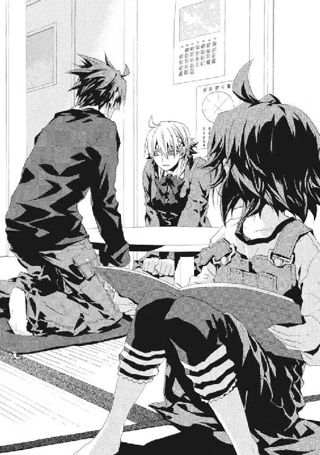
そして激情をこらえるきずなと、仁と、先に血塗られた道に入った舞花が、全員、ことばを失っていた。
「ごめん、舞花。ちょっとだけ、部屋の外に出ててもらっていいか。きずなちゃんと、ふたりで話をしたいんだ」
煮えたように空気が痛い修羅場から、妹が席を外してくれた。アパートの玄関ドアが閉じる音が、うつろだった仁たちの呼吸に生命力を吹き込んだ。
「ごめん、きずなちゃん」
きずなが、うつむいたまま泣いていた。
「〝悪人〟だなんて、そんなことばで納得すると思ってたんですか！」
感情が剝き出しになっていた。だが、それは、ふたりきりでないと言えないことばだった。
きずなが本気で怒っていた。仁と彼女は、秘密を抱えながらも、お互いに長い時間を共有してしまった。その間に行き交ったあたたかいものが、彼らを癒着させていたからこそ、引き剝がした傷口が血を流している。
「それでも、俺は、現実にそう決めた。俺があのとき道を決めなきゃ、取り返せないものが確かにあったんだ。だから、後悔はしてない」
「わたしに黙ってそんな大事なことを決めて、今さらそんなこと言われて、わたしにどうしろって言うんですか」
激情を丸裸にしたきずなが、予想外なことを言った。仁は、その資格などないのに、わかってほしいと思ってしまった。
「地下にいたんだ。相談できる状態じゃなかった」
「もっと早く言えたはずです。マンションにいたときだって、《幻影城》で別れるときだって、武原さんは、いつもかっこよく聞こえることばっかり」
「ごめん。そこにいなかったきずなちゃんが、ついてこられるはずがない」
きずなが仁を切り捨てたのではない。彼が、彼女と向き合う努力を放棄していたのだ。
きずなが、ひどくはかなげに見えた。
仁は、確かに彼が悪かったのだと、情けなくなった。理屈でも道理でもなく、わけのわからない衝動が抱きしめたいと突き動かした。
仁の答えにあったはずの一分の理さえ、もはや原形を留めていなかった。
「お父さんのこと隠してたときと同じですね。反省してないんじゃないですか」
きずなの非難はもっともだった。だから、本当は、もっと早く、こういう時間を取らねばならなかったのだ。きずなの気持ちを聞く態度をはっきり見せて、ふたりで話し合うべきだった。
「ごめん、悪いのは俺だ。俺が薄情だった」
仁は〝悪人〟だとみずからを見定め、彼自身の道を定めた。だが、きずなの前では、彼は絶対に正しくなれない。
「それでも俺は、この世界で魔法使いが〝らしく〟生きられるようにしてやりたい。俺が間違ってても、今、やらなくちゃ、時間は待ってくれない」
恥知らずでもことばにせずにいられなかった。
「こんな俺でも、もう一回やり直してくれないか」
自然と、頭が下がっていた。きずなの前で、きちんと謝罪をするのははじめてだった。
「ひどいことだと思う。でも、俺は、きずなちゃんに、全部終わってからでもいいから、いつかまた、ここに来てほしい」
仁は、最初、小学校のニセ教師と小学生としてメイゼルに出会った。だから、いつか立派に成長したメイゼルが仁を卒業するのだと思える。だが、きずなとは、どう別れたらいいか、わからなかった。離ればなれになったのに、これで終わりだとあきらめられなかった。
顔を上げられない、畳ときずなの黒いニーソックスしか見えない仁に、声がかけられた。
「武原さんは、いい加減なことを言いすぎだと思います。魔法使いが魔法使いらしく生きることと、わたしが許すかどうかは、何も関係ないじゃないですか。武原さんがやりたいことは、わたしと関係ないのに、いっぺんにできるわけないですよね」
「優先順位が一番で、二十四時間ずっと時間を空けている相手じゃなきゃ、助けにならないわけじゃない。俺は、きずなちゃんを裏切らないし、何があってもきずなちゃんの味方だ」
仁ときずながお互いを見る目は、彼とメイゼルの間のようにはすれ違っていない。
だからこそ、彼らは手を取り合えない。仁ときずなにとっては、手は、ただつなぐだけのものではなく、異性として生々しいものだからだ。だからこそ倉本慈雄の死が重かった。
「わたしに特別なことをしてくれなくても、ぜんぜんいいんです。甘えてくれたっていいんです。お父さんのことだって、もう武原さんが憎いだけじゃないんです。ただ、ちゃんと納得させてほしいんです」
ここに幼なじみの京香がいれば、「甲斐性なし」と呆れられるのは明白だった。顔を上げた仁へ、泣きながら、彼女は精一杯に笑って返した。
「セラさんに言われたんです。『おまえは、武原仁に、育ての父を殺した手で、そのデカい乳をもみしだかれるのだと想像して、嫌悪したのだ。だから、頭では理不尽だと理解できても、肉体が拒絶するのだ』って。......ごめんなさい、変な話しちゃって。でも、わたしの中では、セラさんの言ったこと、たぶんけっこう当たってるんです。だから、いっしょに暮らすみたいな、近い距離にいるのが、気持ち悪かったんです」
結婚できる年の女の子たちは、話題がひどく生々しかった。そしてきずなは、仁にことばを発する時間をくれなかった。
「でも、いつか、わたし、ここに帰って来てもいいですか。それで、武原さんと、けじめをつけさせてください」
「俺は、今が、別れ道の途中じゃないって信じてる。わがままなんだけどな、そう信じてるんだ」
そして、笑っていることもできなくなって、きずなが涙ぐんだ。
動物的で、瑞々しくも無防備な彼女を、とても愛おしく感じた。
「俺は、きずなちゃんがしあわせになることを願ってるよ。きずなちゃんをしあわせにする、他の誰かが現れても、どうしようもなくなったとき頼れる男でありたいんだ」
仁の口からも、さらけ出してくれた彼女の前で、偽りがないことばが出た。
言えなかったことは、ひとつだけだ。仁は、バベルで、きずなのことを、使い捨てようとした義父よりもしあわせにしてやれると、どこかで思った。あのときも仁は傲慢だったのだ。これだけは、伝えては決裂すると恐かった。だから、彼は、きずなの前で卑怯者であることを脱却できない。
「俺は、〝悪人〟だから、最後まで立っているよ。どんな戦いに巻き込まれても、きずなちゃんの味方がひとりもいなくなることがないように、しぶとく立ち続けるよ」
その傲慢こそ、仁は、墓場まで持ってゆくべきあやまちだと信じていた。もしも伝えられるなら、それは、きずなが聖騎士から追われなくなる、何もかもが終わるときだけだ。そのとき、こころの底から軽蔑して去っていっても、もはやきずなに仁は必要ない。
ひどく後ろ向きで甲斐性なしに思えた。
「メイゼルちゃんは、前に進む武原さんがスキだって言ったけど、わたしはこわいです。傷だらけで前に進もうとするときの武原さんが、こわくてしかたないです」
「俺は死なないよ」
「こわいっていうのは、いつか武原さんが死んじゃうとかだけじゃないんです。すごい敵よりも、すごい敵に、勝てないのに向かってゆく武原さんがこわいんです」
彼女は、戦っている仁という人間を、外から見てくれていた。
「いっつも、わたしが人間の話をすると、戦いの話に〝逃げ〟ますよね。最後にはみんなその話になるのは、本当は、戦いしか信じてないからじゃないんですか」
きずながさっき言った〝けじめ〟ということばが、ひどく重かった。血みどろの旅路をゆく仁とは、きずなの生きる道ははっきりとちがうからだ。
「武原さんは、口では言うけど、本当にこころの底からこの世界を《地獄》じゃないって思ってますか？」
この問いだけは、自信をもって肯定できねばならなかった。なのに、奈落の底を覗いたように、意志と理性を無視して、仁の全身が震えた。
「思ってる」と、息を詰まらせながらも言えた。魔法使い相手なら断言できたのに、きずなの前では、動悸が止まらなくなった。
「だったら、もう武原さんは、危ないことをやめてしあわせになれるんですか。帰ってきた舞花さんと、静かに暮らせるんですか」
「無理だ。メイゼルたちとした約束がある。はじめた以上は、巻き込んだ人たちに責任を果たさなきゃならない」
「戦い続けることは、即答なんですね」
きずなのこぼれる涙に、悔しさと失望を見た。仁自身が、数え切れないほどの屍を積み上げてまだ前に進む、ねじくれた〝怪物〟のようだった。
「わたし、やっぱり、もうちょっと離れて考えないとダメですね。だって、わたし、さっきから話しても、戦いが全部終わった後、武原さんがどんなふうに生きてくのか、全然想像できないんです」
考えもしなかった真実を、指し示された気がした。
仁は、道を定めた。それは、いつか東郷のように進退窮まるということだ。《公館》時代よりも味方も戦力もすくないのに、立ち向かう障害は大きすぎるままだからだ。だが、生き残り続けることができても、やはりそれは永遠に戦い続けるということではない。
気づけば、浮ついた夢から完全に醒めて、彼はどうしようもない現実に引き戻されていた。
──それでも、仁の、屍を積んで歩み続ける旅も、いつかは終わるのだ。
きずなは、ビニル袋に大量に買い込んだ食材を、半分置いて帰った。明らかに大人数で食べるための分量だった。
メイゼルが帰ってきたのは、日が落ちてあたりが暗くなってからだった。
そして、戻ってきた舞花と、また昨日のように晩ごはんを食べた。きずなが置いていった挽肉で、ハンバーグを作った。切り刻むのが嫌な感じに得意な《鬼火衆》たちがタマネギを切り、仁も肉をこねるのを手伝った。
このまま楽しいだけで終わらないことはわかっていた。
「あー、いそがしいわ」
夜の食事を終えると、メイゼルがいそいそと洗い物をはじめた。少女が、水仕事を率先してやるのはめずらしい。かいがいしく家事をすることで、舞花との差を見せつけているのだ。
仁に甘える舞花に対抗意識を燃やしたメイゼルが、ちいさなお母さんと化していた。
かわいらしいエプロンで手をふき、ちいさな魔女が言った。
「ほんとに手がかかるわ。だって、子どもがひとり増えたみたいなものだもの」
ちゃぶ台で待っていた仁にも、だんだんわかってきた。
「家に前からいた〝子ども〟って、俺のことか？」
どうして女の子は、身近になりすぎた男を、子どもあつかいしだすのだろうと戦慄した。
「一体俺はどこへ流されようとしてるんだ」
「そうめん並みの流され体質ですからね。大将は」
参考書を開いた虎坂井に、仁は是非とも聞いてみたかった。
「東郷先生はおまえをどうやって黙らせてたんだ」
「あそこでは、調子に乗りすぎたら、運が悪いと死ぬ程度に斬られますから」
東郷邸はそういうところだった。
「お兄ちゃん、ほんとダメだよね」
食後や空いた時間に、舞花はよく絵本を読んでいた。
これが、一時の夢であることくらいわかっていた。だからこそ、仁の胸には、きずなが落としていった問いが根を張ってどうしようもなかった。
「舞花。おまえは、戦いがもしも全部終わったら、どんな人間になってると思う？」
「んー、どうしてそんなこと聞くのー」
仁は、舞花を助けるために《公館》に関わり、彼女を守ってやりたくて戦いはじめた。妹が、仁のはじまりだった。
「魔導師公館も解雇されたしな。やっぱり、いつかは考えなきゃいけないことだろ」
妹が踵を畳につけたまま、足を揺らしていた。その視線は、絵本に向けてぴたりと凍り付いていた。
「そうだよね。この世界は《地獄》じゃないもんね。いつかおわるよ」
子どもの姿で、舞花が口元をほころばせた。これが奇蹟的なハッピーエンドだと錯覚しそうだった。
ふきんで皿をふいていたメイゼルが、台所から戻ってきた。そして、エサの時間を待つ子犬の兄妹でも観察しているように、うきうきと頰を輝かせて舞花のそばにしゃがんだ。
「『いつか』なんて言ってたら、いつまで待ってるだけよ。明日死ぬかも知れないのよ。今しあわせにならなくてどうするの」
『いつか』を追って死んだ妹が、メイゼルに頭をなでられて、とげとげしく返した。
「たたかいはじめたばっかりのメイゼルお姉ちゃんに、言われるのイヤだな。たった半年死なずにすんだくらいで、明日死ぬとか、えらそうに。バカみたい」
兄妹は、お互いを救うため、他の誰かが願いを果たしてくれると信じず修羅道に入った。そして、「この世界は《地獄》ではない」と死地の底で吠え続けている。
舞花の〝寂しい物語〟とメイゼルの〝激しい物語〟が、刹那、鈍い火花を散らした。
「先のことなんてわかるはずないでしょ。だって明日は、おしまいの日かもしれないけど、うまれて一番いい日かもしれないのよ」
最年少の刻印魔導師の、あめ色の瞳は、無明の未来を畏れていなかった。そして、少女が、世界の真理を告げるように言い切った。
「とりあえず、せんせが明日を最高の一日にするには、あたしに甘えさせるのよ」
仁は、話が根本的におかしいと気づくのに数秒かかった。バカみたいとつぶやいて、妹が幼いむちむちした足で立ち上がった。
青い影が、遠く広がっていた。
家々の電灯が窓から漏れても、照らし尽くせない夜の闇だ。新月の晩の雲は濃い灰色で、空一面がひどく暗かった。肌寒い夜風を頰に感じながら、仁はアパートの鉄製の階段に腰掛けていた。高校一年生のとき、仁は専任係官になった舞花にここで腕を折られた。
ただ、くわえた煙草からあがる細い煙を見ていた。
「せんせ、こんなところでなにしてるの？」
振り向くと、上品な白い絹のナイトウェアに、羊毛のカーディガンを引っかけたメイゼルが玄関から出てきていた。
「煙草だ」
薄明かりの下、階段の下から見上げると彼女との年の差がすこし縮んだように感じた。
「それ、マイカがたばこスキじゃないから？」
ちいさな魔女がくすくす笑うと、長い髪が揺れた。帰ってきた妹は、仁が煙草を吸うと嫌そうに顔をしかめるのだ。
「まあな」
「『お兄ちゃん』が知らない人になったみたいで、イヤなのかしら」
メイゼルが、二階から階段を下りてきた。そして、仁の腰掛けた段にちょこんとしゃがみこんだ。
「そんなカッコで外に出たら、寒いだろ」
同じ高さに腰掛けると、少女の体のちいささが際だった。やわらかいワンピースの夜着からのびる手足は細く、肌は青白くかすかに光を照り返していた。
「それじゃ、せんせにひっついていい？」
無邪気にメイゼルが仁の顔を覗き込んだ。そして、慌てた彼の反応を確かめて、うれしそうに華奢な肩で仁の体を押してきた。
困惑した彼の目を、澄んだ瞳がじっととらえていた。獲物をとらえた猫のように、嗜虐的なよろこびに背筋をぞわりと震わせていた。
「せんせとマイカって、にてるのね。近くに人をカンタンに入れちゃうのに、その後で強く出られたら、あわてだすの」
肌寒い晩秋の夜に、体温ぶんのあたたかみが、ぽっと点った。
「そんなことないだろ」
言われたとおりあわてた彼に、可憐な小悪魔が体重をあずけてきた。
「あるわ。あたしたちが会ってから、一番かわったのは、きっとせんせなのよ。だから、毎日、明日がたのしみなの」
「そうだとしたら、たぶん、おまえに引っ張られたんだよ。おまえが来てくれたから、俺は、魔法使いとこの世界の人間の間に、夢を見られるようになった」
『いつか』お互い人間らしく付き合えればという、その『いつか』が現れたからだ。メイゼルと出会わなければ、仁は今でも魔導師公館にいた。そして、自分をすり切れさせながら、淡々と魔法使いを殺し続けていたはずだった。
くすぐったそうにメイゼルが細い体を揺らすたび、ゆったりしたナイトウェアの裾が揺れた。
夜の闇の底が、もう寒くなかった。
「あたし、マイカがやってきてよかったと思ってるわ」
「あいつと仲良くしてくれて、ありがとうな。いや、俺だって、裏があるってことはわかってるんだけど、それでもな......」
「せんせ、あたし、あの子がどんな子でも、来てくれて感謝してるの。だって、あたしよりちっちゃい子のマイカがいても、せんせとのカンケイは元のままだもの。それって、ただちいさい子だから守ってるんじゃなくて、あたしが特別だって証拠でしょ」
彼女は今も仁と対等の関係になろうと背伸びしていた。
きっと、メイゼルはいい女に成長するのだろうと思った。
〝悪人〟として、彼女のいろいろなことを背負ってやりたいという想いが、胸に押し寄せた。メイゼルは百人の敵を斃さねばならない刻印魔導師だ。少女ひとりではどうにもならない重荷だ。弱くても向いていなくても、仁は結局は見捨てられなかった。だから、どんなことがあってもメイゼルを受け止めてやりたかった。
「おまえは、自分を信じて前に進め。俺が、ちゃんと前に進んでゆける支えになってやるから」
危ないときだけ救い出して、ただ成長することを待つ以上のことを、刻印魔導師を救ってやる道を歩みはじめたからこそ、仁はしてもよいように思えた。彼女が伸びてゆく過程に、かかわってやりたかった。仁も、東郷先生や、認めたくもないが王子護にも見守ってもらったのだ。
メイゼルが、突然、意志の強い目を、きりりとつり上げた。
「でも、あたしがいない間に、こっそりきずなと会ってたのは、おこっていいところよね？」
だが、仁がきずなと話した内容は具体的には聞かれなかった。少女は、別れたきずなの話題を一度も転がそうとはしない。仁は、鈍感にもこのとき気づいた。きずなもメイゼルの近況を尋ねなかったのだ。少女から女性になりつつある彼女たちの間に、もう曖昧さはなかった。
焼き餅を焼いた魔女が、薄桃色の唇を真剣に引き結んだ。
「せんせには、罰が必要ね。せんせ、右手を出して。......そう、右手の親指と人差し指で、輪っかをつくって、すこしだけ間をあけてみて」
「こんなのでいいのか」
大きくて傷だらけの仁の指が作った欠けた輪に、ちいさくてすべすべしたメイゼルの指が触れた。ふたりの指が、身悶えするほど甘い、いびつなハート形の指文字を作った。
「大スキ」
「うぁ、うわあああああああああっ!!」
何か大事なものの危機を全身で感じて、飛びすさってしまった。階段から足を踏み外して、歴戦の戦士である仁が転落した。ほとんど受け身もとれず、階段を五、六段も転がってコンクリートの床に落っこちた。
仁は、階段に腰掛けたままのメイゼルの、サンダル履きの無垢なつま先を見上げていた。
「せんせ、かっこ悪い」
あどけない小悪魔が、嗜虐心と愛情に溺れそうな至福を、満面に浮かべていた。
そして、真っ赤な顔のまま、少女が今度は自分の指だけでハートの指文字を作った。
「でも、大スキ」
眼球の下から生ぬるい潮がわいてきた。高校生の少年に戻ったように、鈍く熱く、いっそ泣いてしまえと衝動が襲った。理由がわからないから、尻餅をついたまま空を見上げた。
新月の闇夜に、いくつもの星が白く輝いていた。闇が深いからこそ、遠いからこそ、向こうから誘うように注ぐ光がこころに滲みた。いつか来る彼の旅の終わりは、どんなものになるだろうと思った。
仁自身も呆れるほど情けないのに、夜空が、世界がひどくきれいに思えた。
†
闇の中だった。
魔法使いは、この世界では人目の届かない場所に潜む。そして、どういう性質の暗闇を選ぶかは各勢力で異なる。
《協会》は地底に施設を作る。神聖騎士団は、米軍基地や関連施設を借りる。そして、ヨーロッパ圏に根を張る魔法使い集団、《連合》は文化施設を好む。閉館後の美術館や博物館が、《連合》の〝場所〟だ。
その夜の集会は、民具を集めた古い博物館で行われた。ガラスケースが並ぶ展示室のソファに、白いローブを着た少女が座っていた。
暗闇に青白く咲く百合のように、ことばも発さず彼女はそこで待っていた。楚々として、だが得体の知れないものが、揺り椅子を揺らしていた。
無人の博物館で、時を待つのは、愛らしい〝少女〟だ。だが、じっと観察する者があっても、それが少女であるという以上のことをとらえられない。混沌大系は、関連するものの間に《魔力》圏を無限に広げてゆく魔法だ。その超高位魔導師である彼女は、見るというかたちでおのれにかかわった者すら、容易にとらえる。
だから、漆黒の大気の底で、彼女は欠けることなく〝少女〟である。観測者の感覚を、混沌大系の《魔力》が自然に埋めるからだ。
この少女のかたちをした夜の女王は、《導師》アリーセ・バンシュタインと呼ばれている。《連合》の最高議会の議長にして、《混沌大系》の最高位魔導師である。
アリーセが、電灯の消えた影へ向かって問いかけた。
「間違いはないのですね」
暗がりにまぎれた薄っぺらい影たちが、ささやき返した。
〈アトランチスが消えたよ。アトランチスが消えたよ。海の底から、消えたよ〉
混沌大系の《魔力》は様々な形をとり、術者本人の制御を離れて勝手に生命を持つ。アリーセの影から千切れて動き出す走狗は、枯れ葉が吹き寄せられるように世界中から彼女へ情報を集めてくる。
窓も扉も閉め切られた展示室に強い風が吹き、しゃべる影たちが粉々に砕け散った。
広い室内に、もうひとつ人の気配が増えた。
影横たわる博物館は、孤独から解放された。
カツリ、カツリと踵を鳴らし、リズムをとるように指を弾く。現れた魔法使いは、劇から抜け出たように、古いフランス軍服を着て腰にサーベルを差していた。
そして、妙に通る声でアリーセに報告した。
「アトランチスは消えた。わたし自身も確認した」
ミュージカルのような発声へ、アリーセが淡々と答えを返した。
「あの大きさのものを、痕跡なく運び出せる魔法使いは、そう多くありません」
彼女の声は、滲みるように闇に溶ける。
《連合》は、十六世紀に《協会》から独立を果たした魔法使い集団だ。
十四世紀なかば、ヨーロッパでは、《協会》が黒死病を大蔓延させて《悪鬼》を滅ぼそうとしていた。この動きに対して、この世界の世俗勢力と結託して二百十五個の魔法世界が、《協会》に反旗を翻した。これが《連合》の原型だ。アリーセたちは、《悪鬼》と無駄に衝突して犠牲を増やす《協会》を、見限ったのだ。
そして、フランス百年戦争、スペイン王国成立や宗教改革の嵐と、ヨーロッパ史の影を駆け抜けた《連合》独立戦争は、アリーセたちの勝利で終結する。
金モールをつけた豪華な軍装の魔法使いが、たっぷり時間を費やして歌いあげる。
「何者だい？ あのヒゲの伍長が斃れてから、われらが暗き森は安眠を守ってきたというのに。古き伝説をよみがえらせようとしたのは、ああ、何者なんだい？」
影の女王は、その道化たやりとりが楽しくて仕方ない様子で、微笑していた。
「アトランチスは、《連合》独立戦争で《雷神》クレペンスに撃墜されて以来、飛行能力を失っています。〝使う〟つもりなら、修理できる者がやったのです」
アトランチスは、この世界の神話では、大西洋上にあった高度な文明を持った島だと伝わっている。ギリシア神話の天地を支える神「アトラス」の名がついたのは、〝これ〟がはじめて《地獄》で運用されたときのできごとに由来する。現地住民たちは、長さと幅がともに二キロメートルを超える巨大な飛翔体を理解できず、天と地を繫ぐものと考えたのだ。
軍服を着崩した、野性味を漂わせる男が、さらに空中から現れた。そして即席のミュージカルに加わる。
「何と愚かな！ それでは、あれを！」
また、指が音高く鳴らされた。新たな伊達男が、一分の隙もないポーズを決めて現れる。
「あれを！」
「あれを！」
深夜の博物館が、無意味に豪華になってゆく。
「あれを！」
「「「もう一度、空へ解き放とうというのか」」」
十人近くまで増えた流し目ミュージカルの役者が、群舞を踊るように床をなぜか滑った。そのスライディングの先に、チェス盤をはさんだ神話の壮麗な騎士たちが、現出していた。
「だが、この《地獄》に、魔法使いの空はない。《悪鬼》たちは、デジタルカメラで写真をとり、ネットワークに登録する。アトランチスとて、魔炎に焼き尽くされる」
彼ら深夜の博物館の客は、いずれも名高き高位魔導師ばかりだ。
象牙の駒をつまんだアヴァロンの騎士王が、王の駒の前に歩兵を進めた。《連合》に、超高位魔導師はアリーセひとりではない。
「もはや世界に、《悪鬼》の目が届かぬ場所は失せた。日本では《公館》がＭシステムという監視網を構築したという。効果があがれば、世界中に広がるであろう」
彼らの現状認識は、会話がミュージカル形式なこと以外は正しい。この全員が、世界各地で神話に名を残す高位魔導師なのだ。
「「ああ、アトランチスは引き金となるだろう。古き神話は、今度こそ本当に終わるのか」」
《連合》の仲間たちの悪ふざけに、アリーセが笑いながら揺り椅子を揺らしていた。敵対者たちは言う。《連合》の最高議長たるアリーセ・バンシュタインは、すでに狂っている。永い戦いと喪失で正気を失った彼女の、肉体と精神を〝人間〟の枠内に止めているのは、仲間との関わり合いだけだ。だから、アリーセを動かす動機も人のつながりしかない。
「その《公館》から、招待状が届いています。《協会》主流派と、核事件の首謀者である《九位》への対策のための、〝会議〟が東京で開かれることになりました」
《連合》の魔法使いたちの団結は強い。彼女たちは、お互いの立場や意志を尊重する魔法使い文化を築いた。これがため、仲間の安全を優先して、この世界で政治への干渉すらやめたのだ。歴史の因縁と民族が複雑にからみ合うヨーロッパ圏で、このため、二度の世界大戦を《連合》のみが生き延びた。
「招待状はわたしあてなので、日本へおじゃましようと思います」
最初に現れた軍服の魔法使いが、蜂蜜色の巻き毛の奥から鋭い視線を送った。アリーセが仲間を愛するように、《連合》の魔導師たちも彼女を敬慕していた。
「《導師》みずから立たれることではありますまい」
《連合》の歴史は、血で綴られている。
十五世紀、《連合》独立戦争の最中、《悪鬼》の恨みを買いすぎた魔法使いたちは、魔女狩りと時期を同じくして大迫害にさらされた。
十七世紀末まで、《協会》が長い歴史で根付かせた足がかりをほぼ失うほどの猛威を、アリーセたちは堪え忍ぶ。
十九世紀初頭まで、《連合》はフランスの英雄ナポレオン・ボナパルトに賭けた全面支援を行う。《協会》はヨーロッパから完全に駆逐された。
そして、わずか数十年後、フランスに義理立てた一派と、新興のプロイセンを押した一派が内部分裂を起こし、普仏戦争に巻き込まれる。《連合》に政治への不干渉を選ばせた教訓である、歴史の節目に流れる大量の血を、彼らは忘れていない。
神話宮廷の勇士を代表して、軍装の魔導師が提案した。
「《導師》が投げたバラをつかんだ者が、代理に立つのはどうだろうか。なあ、みんな！」
──伊達男、花盛り。
「ウィ、ムシュウ」
すでに、展示室は、高位魔導師たちで百花繚乱だった。
アリーセは、一秒ごとに豪壮になってゆく仲間たちを視線で圧して、宣言した。
「わたしがひとりで行きます。勝手についてきたりしたら、承知しませんよ」
彼女が笑えば場はなごみ、彼女が怒れば場は震え上がる。アリーセは、夜の底の完全無欠な支配者だ。逆らえる者などない。
「みんなが大好きですよ」
†
アリーセ・バンシュタイン来るの報は、東京の動きを一気に加速させた。
仁とメイゼルは、警察庁に間借りした《公館》にいた。十崎京香から電話がかかってきて、舞花とメイゼルと三人で呼ばれたのだ。
「舞花ちゃんは来てくれなかったんだ」
京香の明るく染めた髪は、根本から黒髪に戻り始めていた。公館本館の火災から事務を立て直すので、美容院へ行く余裕もなかったという。だが、化粧っけが抜けたぶん、仁の思い出の〝幼なじみの京香姉ちゃん〟に戻っていた。
「来てくれなかったっていうか、逃げた。今、《鬼火衆》に探してもらってるけど、あいつ、あのあたりでかくれんぼとかよくしてたから、簡単には見つからないかもな」
「あー、舞花ちゃん、かくれんぼ強かったね」
京香が目を細めた。刹那、仁たちに食卓を囲んでいたときの空気が戻った。
旧《公館》の洋館とちがって、今の合同庁舎のビルは、密閉されて外気の空気を感じることはない。オフィスビルにすらろくに入らないメイゼルは、居心地が悪そうだった。
「もう夜の七時よ。今からお話をして家に帰ったら、夕ごはんの時間を過ぎちゃうわ」
「所帯くさいこと言うな。あれだ、終わったら、どこか探して今晩は外食にしよう」
「せんせ、あたし、〝ちゃんとしたおすし〟ってのを食べてみたいわ。回転じゃないやつよ」
ズレはじめた話を、京香が何事もなかったように強引に引き戻した。
「ごめんねー。お客さんが、どうしてもメイゼルちゃんに会いたいって」
事務員たちが、久しぶりに会うメイゼルに、寄って来つつあった。だが、《公館》職員たちは、本館陥落のとき《鬼火衆》に殴られている。魔法使いへのおびえが、態度の節々にうかがえた。
「それで、どこにいるんだ。客っていうのは────」
習慣で周囲の人間の顔を確認した仁は、絶句していた。
メイゼル目当ての事務職員たちの後ろから、蜂蜜色の髪をした少女が顔を出していた。白いローブは袖が長めで、お姉ちゃんの服を借りてきたかのようだった。
《導師》アリーセの顔写真は、《公館》の資料にあった。五百年以上も《連合》の議長として活動している大物中の大物だからだ。三大魔法勢力の一角の首脳が、《悪鬼》の人垣の中に紛れていた。魔法を消去され、無力になって殺されるかもしれないのに、この世界の住人の間に平気で入ってきた。
そして、底の知れない微笑みを、仁たちへと向けたのだ。
「場所を変えて、おすしにまいりましょうか。〝回転していないやつ〟で」
魔法使いに親切にされることになれていない仁には、彼女が後光を放って見えた。かわりに、お寿司につられたメイゼルが歓声をあげた。
「せんせ、まぶしいわ！ この人」
官庁街から銀座は、自動車に乗ればちょっと行ってくる程度の距離でしかない。
ミシュランのガイドブックにも掲載された寿司の名店へ、アリーセは迷わず入った。風情のある清潔な店の奥座敷に通され、緊張気味の仁と京香と比べて、メイゼルは気楽だった。
「あたし、大トロ」
一発目から全速力で飛ばしていた。テレビでしか見たことのない高級料理にありつける機会だと、理解している様子だった。
アリーセは和風の座敷に慣れない様子で足を折りたたんでいた。この世界のことも住民のことも、まったく恐れている様子はなかった。
「わたしは、こちらの料理人におまかせします」
座敷は、六畳ほどの密室だ。ＳＰがふたり座敷入り口に陣取っていた。京香は、本来、庁舎から出られない身らしかった。よほど窮屈だったか、幼なじみの顔もすこしゆるんでいた。
「メイゼルちゃん。タダだからって、いきなり全力すぎる」
「いや、......俺も大トロで」
あきれる京香をよそに、仁も欲望に従った。
魔法世界の最重要人物のひとりが単身で乗り込んでくるなど、常識の範疇外だ。あの《神に近き者》グレンですら、《悪鬼》のメシ屋で食事をするような暴挙は犯していない。アリーセはすでに正気を失っているという噂が、真実に聞こえた。
「どうせ、ろくな用事じゃないに決まってる。《協会》が東京の地下でこんなに必死なのだって、《連合》がヨーロッパから追い出したせいだろ。《連合》と日本は、何十年もほとんど交流だってなかった。それが、突然メイゼルを呼べだとか、ずいぶん勝手な話だ」
歴史的には、聖騎士がアメリカと強く結びついたのも、英仏海峡と大西洋を《連合》に封鎖されたせいだ。だが、バベル事件やグレン事件や東京核テロ事件にも、アリーセたちは干渉していない。
「だいたい、メイゼルに用事があるなら、この世界に来て半年は遅すぎるだろう。刻印魔導師の半年生存率がどのくらい低いか知らないのか」
あえて今である以上、アリーセの用は《九位》と核爆弾に関わっているはずだった。《九位》とメイゼルには面識があった。下手につつけば、メイゼルは《協会》から明確に標的にされるおそれもあった。
五百年以上を生きた怪物が、微笑した。
「死んでいないんだから、よいじゃありませんか」
京香は寿司に手をつけず、よそ行きの顔のままだ。
「会議を、今週末の土曜日に開くのよ。《協会》の例のアレは、魔法世界全体とこの世界の問題までふくらんでるでしょ。だから、《協会》と神聖騎士団を抜いた、他の勢力で意見をまとめたいのよ。魔法使いとこの世界の住人で核戦争にでもなったら、みんなで破滅だしね」
そして、アリーセが本題を告げたとき、仁の口の中で、最高級の大トロの味が消えた。
「この会議で、彼女に、イリーズ・アリューシャの娘として、円環世界で起こったことを、話してほしいのです」
寿司を平らげたメイゼルが、真っ向から相手を見返した。
「どうして、あんたに話さなきゃいけないの？」
「知りたいですもの。どうして今の最高位魔導師は、《九位》を名乗っているのですか？ 二十年くらい前の、わたしが知っていたときは、《三十六宮》の中で、円環大系は紅宮の〝六位〟でしたけれど」
《協会》の中枢、《三十六宮》は三十六の魔法世界の代表者の集まりだ。この三十六世界は、白・黒・蒼・紅の四宮にわかれ、それぞれ一位から九位までの序列がついている。円環大系は、このうち紅宮にあって序列は六位だ。
メイゼルが、返答がわりに、手近にあった仁の大トロをひっつかんで投げつけた。
だが、脂っこい寿司ネタが、アリーセの金髪や白い肌に貼り付くことはなかった。空中に、微かに、魔炎が散った。そして、ぶん投げられたはずの大トロが、きれいなカタチでメイゼルのゲタに乗せられていた。
「......あ、俺の寿司」
仁が取り戻すより早く、憤然としたメイゼルがむんずとそれを摑んで口に入れた。そして、わさびが利き過ぎていたか、慌てて茶を口に含んだ。
《悪鬼》である京香の前で、アリーセは魔法を用いて寿司を捕獲したのだ。
「六位の魔法世界で、最高位魔導師が《九位》を名乗るのは、ちょっと変ですね。円環世界が《三十六宮》で九位に落ちたということなら、納得できますが」
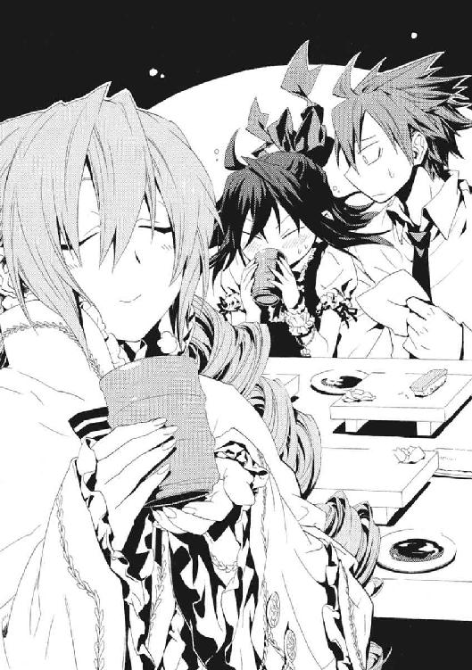
アリーセの混沌大系は、《協会》序列では、黒宮の二位に位置する。この世界で活動している世界では、神聖騎士団の神音大系が白宮二位であることに並ぶ、最上位世界だ。眼前の魔人は、自身の目的のために動いているだけで、味方ではない。
仁は、〝これ〟が気味悪くなってきて、乾いてきた口を潤そうと茶を飲んだ。
「各宮の最下位の九位より下に落ちたら、その魔法世界は《三十六宮》から外れるんだろ。それだけの事件なら、魔法世界じゅうに情報は響き渡ってるはずだ」
三十六宮の座が危ういなら、円環大系世界の必死さは納得できた。長い歴史では、三十六宮を構成する魔法世界は実際に入れ替わっているのだ。かつて十崎家に来た捨て巫女マチルダ・クリストリッツァの《天盟大系》も、三十六宮から滑り落ちた世界だ。
だが、アパートにいる舞花の殉職を、仁は忘れることができない。
「《九位》って魔法使いは、五年前の核実験のときは《公館》に知られてた。そのころから円環世界がヤバかったなら、俺たちにも伝わってたはずだ。この夏に関係がおかしくなるまでは、《協会》と交流もあったんだぞ」
アリーセが、上品に茶を飲んでいた。彼女の寿司は、魔法消去者が認識していない死角からわき出た黒い〝何か〟に食い散らかされていた。
「名前なら、変えられますよ。五年前は他の名前で核実験をしていた〝誰か〟が、最近、《九位》を名乗りはじめたとも考えられます」
魔法世界の権力闘争はすさまじい。《三十六宮》から転落しかかっている円環世界が、権力を狙う他の世界から攻撃されていないはずがない。窮地から抜け出すために、円環世界は、絶対に負けられない。だから、超高位魔導師である《九位》が陣頭指揮をとっているのだ。
魔導師公館と仁たちをここまで追い込んだ元凶が、はっきりした気がした。
「......そうか、それで、《九位》は、核爆弾なんて賭けに出たのか」
嫌な汗が額に浮かんだ。
「澄ましてるってことは、京香姉ちゃんも同じ意見なのか」
「十崎理五郎事務官は、すくなくとも、《九位》という名前を書類に残していない。ずいぶん調べたけど、彼は、地下の魔法使いの正体を知らないまま、偵察を命令しているわ」
仁と京香の間に、冷たすぎる空気の壁があった。
彼は、京香が舞花の死について調べていたことすら、はじめて聞いた。
赤の他人のアリーセのほうが、妹の殉職を深く承知しているようだった。
「彼は《大崩落》のことも知らないようですね。《公館》が情報を規制しているなら、お話ししないほうがよいでしょうか」
メイゼルが、おしぼりで口を押さえながら言った。
「わかったわ。三日後の会議のときでいいのね。全部話すわ」
仁は、彼女が自分から話してくれるのを待つつもりだった。だが、状況ははっきりとメイゼルの説明を要求していた。
「......平気な顔なんだな。十崎事務官は知ってたのか」
現実は、いつも彼の甘い予想を遥かに超えて厳しい。仁の幼なじみの京香姉ちゃんは、彼を救ってくれた十崎家の食卓ですら〝氷の事務官〟だったのだ。
「私が絶対に知っておく必要があることだけ、最初に聴取したわ。私が、メイゼルちゃんを家に引き取ったのは、《学校》の刻印魔導師に情報が漏れないようにする予防と、聞いた内容に噓がないか確かめるためでもあるのよ」
道を定めようとスーパーマンになれるわけではない。仁は、能力が足りないただの若僧だ。
仁へ、おとなになってしまった京香が尋ねた。
「自分だけ何も知らなかったのが、くやしい？」
「それは、一番大事なことじゃない。俺は、もう魔導師公館の人間じゃないんだ。俺が守らなきゃいけないのは、まずメイゼルなんだよ」
これだけは、彼が曲げることのないものだ。舞花が現れた今も、これを変えてはならないと思えた。
あたたかな感触が、仁の手の甲にそっとのせられた。ちいさな魔女の頰は、人外の怪物を前にして、こころの強さを感じさせるほどおだやかだ。
「ありがとう、せんせ。これまで信じて待ってくれて」
そのひとことで、救われた気がした。
アリーセという神話の怪物が、目を閉じた。〝それ〟が、一瞬だけ、人間らしく目を細めた。
「けっこうな〝お気持ち〟をいただきました。ごちそうさまです」
そして、仁とメイゼルがアパートに戻ると、舞花が戻ってきていた。逃げた理由を聞こうにも、さっさと布団に潜り込んで起きようともしなかった。
だから、まずは《鬼火衆》の生き残りたちを集めて、今日のことを話した。アリーセに、会議の警備を依頼されたからだ。《連合》の私兵になるのではなく、《公館》と警察の指揮下に入る、仁たちが逮捕される事態にはならない条件だった。仁が立ち上げた、この世界で生きる魔法使いを支援するＮＰＯ法人は、「魔法を活かしてまっとうに生きる」ことを目標にしていた。警備は汚れ仕事ではなかったし、荒事しかしたことがない彼らの最初の仕事として妥当だった。仕事を増やして自活の道をつくるためにも、実績は不可欠だったのだ。
そして会議前日の放課後、仁は御陵甲小学校の教室にいた。文化祭を来週に控えて、児童たちは劇の練習の真っ最中だ。
「あたしを、人をいじめてれば楽しいヘンタイだとでも思っているの？」
「首だけはしめないでっ！ 手ならいくらでもしばらせてあげるから」
ヒロイン役の寒川紀子が、眼鏡を振り落とさんばかりに首を振っていた。
学級委員の寒川の熱演に、脚本を書いた天瑞岬がぎゅっと拳を握った。
「すごい。寒川さん......今の、全部アドリブです」
英語を罵倒語として聞いてしまうメイゼルの耳に、幸運にもそのつぶやきは入っていなかった。悪い女王役のちいさな魔女も、興奮しきっていたのだ。
「手だけじゃ足りないわ。今日からは、足もぐるぐるまきにして、イモムシみたいに地べたをはって生活させたげる。......魔法の鏡が言ったとおりだわ」
「靴下を脱がさないでください！ なんで、......こんなこと......毒リンゴを食べさせたいなら、口にでもつっこんだらいいじゃないですか！」
芝居が、かなりおかしなことになっていた。
「......なあ、白雪姫ってこんな話だったか」
普段クールな天瑞岬が、妄想が止まらないといった様子でメモ帳に新たなセリフを書き留めてゆく。
「観客はそんなことは気にしないと思います」
「......うん。たぶん、保護者からは抗議の嵐だよな」
寒川紀子に馬乗りになって、嗜虐趣味者の興奮に我を失ったメイゼルが、自分のリボンを解いて彼女の細い首にするりと回した。
「あんたが世界一きれいなチョウチョになるまで、なめるみたいに磨きあげたげる。それが、魔法の鏡にあんたの〝輝き〟ってモノを見せつけられた女の子の、ギムだと思うの」
「変態！ いやっ、もういやっ！ 変態っ、変態！」
うわずった叫び声があがった瞬間、仁たちは彼女に目を吸い寄せられていた。おとなも子どもも、男子も女子も、きらめきに圧倒されてことばを失っていた。寒川紀子、開花の瞬間だった。
そして、何かを〝つかんで〟しまった学級委員長が教室の隅で座り込んでしまったため、稽古は中断になった。
メイゼルは、廊下に出された。
今は近づけないほうがよいというクラスメイトの判断だった。
日々、日没は早くなり、夕闇はただ深くなる。夕刻の赤に沈んだ街が、小学校の廊下の窓からどこまでも広がっていた。幾本もの電柱と電線が暗く、柵のように風景を切り分けている。
にぎやかさをすこし離れただけで、建物や地形が作る無数の影が、風景ににじみ出すようだった。
澄んだ赤光に照らされたメイゼルが、手早くリボンを結びながら見上げてきた。
「せんせは、あたしの昔の話を聞きたい？」
すぐ後ろの教室では、六年一組の児童たちが劇の相談をしていた。だから仁も、廊下に人がいないことを確認して、短く返した。
「この前の、アリーセの話か」
ずっと、メイゼルが刻印魔導師になった理由を話す気になってくれるのを、待っていた。だからこそ、仁は、最近、おそれのような緊張にさいなまれて眠れない。
「今までも、あたしのお母さんのこと、いろんな魔法使いが言ってきたでしょ。《憎悪の女王》だとか、《大崩落》だとか。《背約》だとか」
仁の胸までしか背丈がない少女が、すこし疲れた目元を隠すように大きくのびをした。
「いろいろバレちゃうって思って、あれからよく眠れないの。試されるって思ったときは、いつも体が熱かったのに、今度だけは重たいの。こんなの、はじめてだわ」
ちいさな魔女の腕から脇、肋骨へかけて、花弁のようなしなやかな曲線ができた。引っ張られた毛織物が、微妙なやさしいひだを作る。
少女のあめ色の瞳と、目が合った。こんなにも信頼しきった目を向けてもらえるのは、いつ以来だろうと思った。仁の選択は、間違っていないと信じられた。
「苦しいだろうけどな。でも、そうやって不安に思ってもらえるのも、不謹慎だけど、ちょっとうれしいよ」
「うれしいの？ せんせ、痛くされるだけじゃなくって、痛くするのもスキなのね。あたしとせんせ、シュミもぴったり合うって、ずっと思ってたわ」
頰を染めて、幼い嗜虐趣味者が横から体をぶつけてきた。無邪気な、体当たりの愛情表現だった。
「そうじゃなくてな......ほら、苦しいのは、おまえにとって、なくしたくないものがたくさん今はあるってことだろ」
出会ったばかりの春ごろは、メイゼルはまわりと衝突ばかりしていた。今では、すっかり六年一組にとけこんでいる。小学校にいて、空気を肌に感じていると確かに思った。
「おまえは成長したよ。だから、教えて欲しいんだ。たぶん、俺たちは、もう一歩前に進むときが来ているんだ」
「せんせは、あたしがいたから夢を見られたって言ったわ。でも、本当にあたしが夢でいいの？」
彼女は不安に耐えて、だがまっすぐに仁に向き合っていた。あるいは視線の先にあるのは、ただ赤く遠い夕焼けと、高みに広がりつつある闇夜かもしれなかった。
仁が、メイゼルとともに旅を終えるのかはわからなかった。ただ、おおきな仕組みの隙間であがいていた彼が、地に足をつけて走り出していた。彼女がたぶん彼の人生の節目だった。
ちいさな刻印魔導師は、ときどき、運命を試すように、言わなくてもよいことを口にする。
「せんせの、大事なものが奪われたのが、あたしのせいでも？」
「おまえにとって、過去を話すのは、戦いなんだな」
バベルのことを隠して、きずなとの関係を壊してしまった仁には、真実を明かす怖さがわかった。メイゼルもこれから大切なものを失うかもしれない。
だが、だからこそ、変わらないものがあるのだと伝えたくて、少女のちいさな背中を押した。
「俺を、信じろ」
これまで仁たちが積み重ねてきた時間が、全部ここに繫がっていたように思えた。彼が見た夢は、真実を知っても壊れないと胸に誓った。
少女は表情のかたさを早くもほぐしつつあった。
「戦いが全部終わったら、何になってると思うかって、前にせんせは聞いてきたわよね」
いたずらっぽい笑顔が、輝くようにまばゆかった。
「あたし、せんせの家族になってると思うわ。......離れてるかも、どっちかがいなくなってるかもしれない。けど、それでも、そのとき、こころはつながってるって思うの」
翌日、魔導師公館と警察庁が手配した会場が、日本の命運を占う会議の場となった。東京湾岸の東京国際展示場の、広大な東展示場が借り切られた。
理由は、警察庁の影響力が及ぼしやすいこと。そばにテレビ局があり、超高位魔導師が暴発しても圧倒的な魔法消去の力を借りられること。そして、核爆発以外の打撃なら、首都機能が残る程度に東京中心部から離れていることだ。
東京国際展示場は、巨大な倉庫状の展示ホールがふたつ向かい合う東展示棟と、構造のいくぶん複雑な西展示棟にわかれている。ふたつの展示棟の間を結ぶのは、ガラス張りの長い連絡ブリッジと、広大なエントランス、そして展示場のシンボルである黄金色をした花の萼が四つ寄り集まったような会議棟だ。
会議場のある東展示の外側は、警察庁が設置した警備本部の指揮で、機動隊が監視した。
機動隊は、建物内にも配置されていた。東展示場の出口ドアすべてに隊員が最低ひとりついていた。ただし、人数的に十分ではない。出席者である魔法使いたちが、過度に《悪鬼》が会場にいることを嫌ったためだ。
参加者のひとりであるアリーセに雇われた仁たちは、会場警備の中で浮いていた。彼らが制服を着ていないからだ。
〈本部より定時連絡。現状、各所から、異状の報告なし──〉
仁たちのつけた通信機から、警察無線で指揮情報が飛んできた。仁は、京香たちと協議して、警察側の警備本部の指揮下に入っていた。
会場警備の指揮系統は単純だ。警察本部と魔導師公館が合同で指揮を執り、その下で「機動隊」「魔導師公館の実働部隊」と「仁たち」が対等の位置づけではたらく。参加者である各魔法勢力は、個別の護衛を連れていた。だが、魔法使いの護衛は、警察を信用せず、魔法勢力同士での協力もなくバラバラだ。
雇い主であるアリーセに相談しても、「わたしに護衛は不要です」の一言で済まされてしまった。警備方針や緊急時の、指示や要望すらない。彼らは、試されていた。
仁たちを値踏みしているのはアリーセだけではない。独立系の魔法使いたちもそうだ。彼らには、どこにいても容赦のない視線が注がれていた。
《笑い顔》虎坂井レイが、東四ホールと五ホールをぶち抜いた広大な会議場から、回廊に出てきた。
「大将。配置につきました」
強化ガラスを天井に張った開放感ある回廊は、広々として快適だ。自然光がよく入る吹き抜けの空間には、魔法が破壊されて《魔炎》がそこかしこに散っていた。来場者数万人規模のイベントも余裕をもってこなす展示場の回廊は、大型トラックがすれ違えるほど広かった。
仁は、完全装備の機動隊が詰めている回廊の向かい側、東一─二─三ホール側を眺めた。
「この世界の住人が、魔法使いと日の当たる場所で付き合うには、ここまで大がかりにやらないとダメってことか」
国際展示場は、全館、ガラス張りの部分がきわめて多い。昼間の青空が、燦々と仁たちのいる回廊に降り落ちていた。
虎坂井が、仁を見つけて近寄ってきた。初仕事に臨む《鬼火衆》たちの士気は高い。
「こんな真っ昼間に、こんな人間の多い場所をわざわざ借りるのか、ぼくにはわからないですね。人がすくない工場跡とかで、夜にやれば、参加者も警備もラクだったでしょうに」
仁は、展示場は禁煙だから煙草を出せず、頭を搔いた。
「隠れてちゃ、これまでと同じだからな。真っ昼間に堂々とやるのが、新しい《公館》と警察のやりかたってことだ」
《公館》を政府のまっとうな仕事に組み込むなら、魔法使いとの交渉も光の下でやるのが筋だった。
「そんなもんですかね」
「暗いところで生きるのに、慣れすぎてんだよ。だけど、そんなだから魔法使いと《悪鬼》との関係はよくならない。まっとうにやる態度を、見せなきゃダメだってことだろ」
自動車が通れそうなほど広いホール入り口には、幾重にもカーテンが掛かっている。内部の音や光景を観測できないよう、魔法使いが用意したものだった。
カーテンを抜けると、そこはただ広大で豪華な空間だった。演壇と、それに向かい合う階段型の座席をもった会議場が組み立てられていた。《協会》非主流派の魔法使いたちが、コンクリート床の殺風景なホールを、変貌させたのだ。
階段には精緻な飾りが彫り込まれ、赤絨毯も上質だ。椅子や演壇にも、細工に一切の手抜きがない。仁も、一晩でこれを設営した異世界人たちに呆れるよりなかった。
「とはいえ、ここまで立派なモノでなきゃイヤなら、会議棟のほうでやりゃいいのにな」
風格ある作りの会場には、千人ぶんを超える席が用意されていた。だが、埋まった席は二百に満たない。
映画館のような段状座席の上段から様子を確認するため、仁はスロープを上って会場に入った。
横幅九十メートル、長さ百八十メート、天井までの高さも二十メートルを超える。壮大な見栄の産物に見入った。仁の隣に、人の気配が近付いてきた。
「《沈黙》といえど、所詮は《悪鬼》だな。このかたちを選んだ理由がわかっていないとは、円環大系の出力をなめすぎだ」
声をかけてきた女は、全裸だった。
見事なプロポーションを誇らしげにさらす彼女は、痴女ではない。《無双剣》セラ・バラードは、かつて倉本きずなの命を狙った高位魔導師だ。セラたち《錬金大系》の世界では、肌そのものを魔法の鎧にするため、服を着ないのだ。
会場の警備についているらしいセラが、白金色の髪を搔き上げて得意げに裸の胸を張る。
「《九位》なら、消去環境でも、建造物くらいたやすく破壊できる。会議棟のように構造が複雑では、内側に空間を広くとることができん。《悪鬼》に観測されて防御魔術が破壊される環境は、死地だ」
仁は、あがった彼女の腕に引っ張られて微かに揺れた白い乳房に、目を引きつけられた。そして、いろんな方面に申し訳なくて視線をそらした。
「先日は、あいさつもせず、失礼をしました」
いかにもいい人そうな少女が、疑いのない足取りで駆け寄ってきた。肩まである亜麻色の髪を揺らす彼女は、エレオノール・ナガン。かつてバベル事件で彼とやり合った元聖騎士だ。
「おまえがいるってことは、そうか......きずなちゃんも来てるのか」
見回すと、後ろのほうの席にきずなが座っていた。隣に、神和瑞希がぴったりと引っ付いていた。魔導師公館の、三人しかいない活動中の専任係官の一角が、堂々と会場警備をサボっていた。
「あいつ、《公館》の仕事ちゃんとしてるんだろうな」
エレオノールが、祈りのかたちに手を組んでいた。
「......神和瑞希は、毎日、呼んでもいないのに、家にあがりこんで、食っちゃ寝してゆきます。本当にどうしたらよいのでしょうか」
「あいつ、《公館》の命令できずなちゃんの家を守ってたんじゃなかったのか」
仁は、かつて瑞希が、十崎家に泊まろうとしては京香に追い返されていたのを思い出した。
全裸が制服のセラが、割って入った。
「私も、ひとりでは生活できないゆえ邪魔をしている」
「みんなやっぱりきずなちゃんと持ちつ持たれつなんだな......」
仁は思わずエレオノールの顔を見た。敬虔な信仰者の、こめかみが痙攣していた。
「あなたがそれを言いますか」
理解して、彼の頭から血が引いた。「おまえのせいだ」と、エレオノールの目が言っていた。
かつて機械化聖騎士師団に追われて、エレオノールのささやかな平穏のアパートへと転がり込み、結果、全壊させてしまった疫病神がいた。仁ときずなだ。
「なんか、本当、すまんかった」
仁に、会議席のきずなも気づいた。仁がここにいると思っていなかったのか、彼女が、気まずそうに目をそらした。次に会うのは〝けじめ〟をつけるときのつもりだったから、仁も話しかけに行きたい足がすくんだ。隣では、神和瑞希が周囲の魔法使いを威嚇中だ。当然ながら、こちらには無視された。
だが、ひとりだけ彼と目が合って、遠くの席にいるのにわざわざ立ち上がった魔法使いがいた。場違いなほど薄汚れた黒いコートを着た、目つきだけが鋭い、三十なかばの男だ。浅利ケイツは、かつて東京を大津波で沈めようとした《神に近き者》グレンの双子の弟だ。
仁は、思わず「来るな」と両手でバツじるしを作っていた。ケイツが嫌いだというだけではない。大勢の人間の目の前で、ケイツと相似弦で繫がるのが恥ずかしかったのだ。
勘違いしたか、「臆病者め」とグレンの不肖の弟が嘲笑に唇をゆがめた。名声を得てもやさぐれたままのケイツを、ショートカットのメイドが慌てて追ってきた。
「ケイツさま！ ワイズマンのお仕事がっ」
仁の背中にぞわりと寒気が走った。世界各地から集まった魔導師たちの視線が彼らを圧していた。このケイツが、表向きは天才グレンを斃したことになっているからだ。会議の列席者たちの、力で人間の価値をはかる傲慢な目が、彼らを値踏みしていた。
ケイツの薄汚れたコートの下で、カチカチと剣が音を鳴らした。ちいさな子どもが毛布を握るように、この負け犬は貧窮を脱しても古い上着を着続けている。
「よくも、この前は私を見捨てたな。盗んだバイクも返してもらうぞ」
〝似ているもの〟の間を結ぶ相似大系の銀弦が、仁とすり切れた男の間に走った。
「どうせワイズマンの支給品だろ。そもそも、狙われてた俺に助けてもらおうと、最初から期待するな」
野良犬同然の暮らしからワイズマン警備調査会社に就職して、ケイツは虚勢を張ることにすら失敗するようになった。
「俺を見下すな、《悪鬼》風情が」
「今日はワイズマンの代表として来てるんじゃないのか。警備の俺に声なんかかけてると、〝軽く〟見えるぞ」
ケイツでは、兄に力を与えられようと、逃げ続けてきた歴史に見合ったことばしか発することはできない。
「そうして訳知り面をしているがいい。せいぜい今のうちだけな」
そして、行き先を見失った男が、似たものの証の銀弦を切ると、捨て台詞を残して席に戻った。
外見は十代のようなかわいらしいメイド服の魔法使いが、仁に軽く頭を下げてからまたケイツの後を追った。
仁は、この会議で何かが起こる予感がした。野犬のように臆病な男が、利害の読めない人間が集まった中でも怯えていないのは、奇妙だった。
歴戦の騎士であるエレオノールは、仁と同じ結論に達した様子だった。静かに瞑目し、仁に尋ねてきた。
「《沈黙》よ、議席についた魔法使いのうち、知っている顔はいくつくらいですか」
「招待客のうち、会議の参加者は百五十八人だ。俺が《公館》の資料で見たことがある顔が、四十三人もいる」
「それほど有力者がいるなら、《協会》にとっては素晴らしい狩り場ですね」
エレオノールを破門した神聖騎士団にとっても、それは同じだった。
参加者たちは、襲撃を警戒して、自前の護衛を連れてきていた。甲冑姿の者あり、イヌイット風やアラビアの民族衣装あり、普通の洋服ありと、格好もまちまちだ。
この世界と魔法世界との行き来には神人遺物である《門》が必要だ。《協会》からわかれた勢力は、これを使えないから故郷の世界へ帰れない。自分たちを帰還させてくれそうな政権を待っている間に、《地獄》に根付いてしまったのが、非《協会》系の魔法使い集団だ。だから、何百年を生きた古豪もいれば、こちらで生まれた二世や三世、何十代と代を重ねた者も多い。
仁も呆れるほど、有名人が多かった。専任係官の暗殺リスト、《黒帳》に名を連ねる旧敵が、山ほどいるということだ。
「しっかし、大物がけっこういるな。神聖騎士団のリストに載ってたヤツは何人いる？」
「私が知っているのは、犯罪者が中心なので、十二名だけです。神聖騎士団では、騎士は犯罪に手を染めた魔導師を追い、政治的な敵は特別の処理チームが狙うという、分担がありました」
犯罪者も多いからこそ、会議の参加者たちは、警官が議場内に入ることを拒絶した。会議を取り仕切る京香たちも、身辺を自分で守らせる方針をとった。招待リストにない護衛が、きずなについてきたエレオノールとセラも含めて二百五人いた。参加者を含めると三百六十三人の魔法使いを、仁たちは監視することになる。
逆に、警備本部の指揮を受けているのは、議場内に、仁たちと神和瑞希と彼女の刻印魔導師だけだ。神和瑞希と支配下の刻印魔導師は、有事には、十崎京香と清水副局長の安全圏までの誘導を担当する。この会議場に襲撃が来れば、迎撃は仁たちの役目だ。真新しい木材の匂いがする議場を、仁は見回した。
「せっかくの初仕事だ。全員欠けずに仕事を終わらせたいもんだ」
仁は、報酬を寿司屋で現金で手渡されたとき、驚いただけだった。だが、アパートに戻って、はたらく手応えに感激した《鬼火衆》を見て、カネの重さが身にしみた。
「はたらいて得たお金でたべるごはんは、おいしいものですからね」
そう言うエレオノールも、自給六百円でコロッケを揚げていた。
「《悪鬼》どものしみったれた世界と同じにしないでもらいたいものだ。食うためにはたらくなど、魔法使いの恥だ」
入場してきたのは、調整官ベルニッチだった。《協会》側のこの世界との、かつての交渉役だ。《協会》非主流派の陣頭に立つこの中年男は、政治的には窮地にある。だが、黒いローブにつけた飾りをじゃらじゃら鳴らし、顎鬚をいじる仕草も尊大なままだった。
「どうだ。この会議場は。貴様らに、これほどのものを一晩では作れまい」
彼を護る純白の鎧の魔法騎士、《逆天》ユリア・シュバールが後ろに従っていた。
「議場の内装は、内部の音を漏らしにくいようにしてあります。あなたたちが手出しをしなくても、参加者たちは、魔法で逃げるなり身を守るなりするでしょう」
会議場には、天井から何十メートルもの凝ったカーテンや緞帳が垂れ、壁にはタペストリが何枚もかかっていた。火が付いたら大火事になりそうだった。
「おまえの発案か。絹じゃないだろうな。思いっきり燃えるぞ」
ユリアが、呆れたように肩をすくめた。視界を遮り影を作れば、消去環境でも防御魔術を分厚く張れる。火災も魔法で防ぐとでも言いたげだった。
ベルニッチが立ち去って数分後、議場にオレンジ色の魔炎が噴き上がった。この世界の住人の代表者として、十崎京香と、清水健太郎がやってきた。ただの人間──《悪鬼》であるふたりの姿は、魔法に満ちた環境では、肌から炎をあげる魔神だ。あがる火の粉をかぶった魔法使いたちも、議席へ向かう京香たちに突っかかるほど愚かではなかった。
最後に、《連合》の《導師》アリーセ・バンシュタインが現れた。少女のかたちをとった超越者の歩いた後ろには、恐怖で心臓が止まりそうな魔法使いたちが残された。警備本部が、個人護衛を許したのは彼女がいるためでもある。アリーセ単身で、会議場の護衛二百五名を戦力的に上回るのだ。
「一日、がんばってください」
雇い主である金髪の少女が、すれ違いざま、軽く会釈した。彼女の白い指と、仁の手の間を、黒い触腕が結んだ。〝関わり〟の間に見いだされる混沌大系の《魔力》だった。
「今さら、死にそうな顔で驚かないように。わたしたち、雇い主と労働者っていう〝関連〟の仲でしょう」
立ち去る〝怪物〟の後ろ姿を、彼は、全身に脂汗をかいて見守った。
魑魅魍魎うごめくここで、魔法史の一ページが綴られるのだと、身震いした。
仁は、アパートに舞花を置いてきた。戦闘の可能性を考えると、魔法使いでなくなった妹を連れてこられなかったのだ。王子護はここにいない。舞花が抱えた秘密も、いつか仁にとって試練となって立ち上がってくる。
今日を試練だと言ったメイゼルが、最前列の席から、仁へと手を振ってきた。誇り高い少女は、「思いっきりさらけ出してくるから、あたしを見ていて」と、ひとり離れたのだ。
少女の気丈な笑顔を目にして、会場の空気に圧されていたことが滑稽になった。
「俺は何をひとりで焦ってるんだ」
思惑が交錯し、欲と計算が渦巻いていた。それぞれ〝歴史〟を背負った異文化は、かならず激突する。だが、それは、ここが《悪鬼》と魔法使いの真剣な議論の場ということだ。遠い日に見た、お互いを人間らしくあつかえる世界という夢が、すぐ近くにあるように思えた。だから、この会議を守りたかった。
緊張が、ぱたんと〝裏返った〟気がした。戦いを控えた少女を、恥ずかしくても力づけてやりたかった。手でメガホンを作って、広い会場に響き渡れと大声をあげた。
「がんばれよ、メイゼル！」
彼自身が、将来、授業参観や文化祭で、一番迷惑なタイプの保護者になりそうだった。ともすれば下品な口笛が、ピィィッと空気を軽薄にかき回した。
「ガンバレ、姐さん!!」
会場ではたらいていた《鬼火衆》たちも、集まってきた。元の世界では犯罪者だった刻印魔導師たちが、野放図な夢に乗ってくれた。
短い日々で養ってきた一体感が、彼らをささやかなチームにしていた。
スピーカーから、議長役をつとめる清水健太郎の声が、間延びした口調で響いた。
「会議を開始します」
会場内の警備役である仁の耳には、イヤでもその内容が入ってきた。
現実は仁の「夢」とはちがう。京香たち新しい《公館》の挑戦は、厳しい船出になる。わかっていたことを、改めて思い知った。会議は、《公館》への非難からはじまったのだ。
非《協会》系の魔法使いたちが、日本で来春から稼働する写真投稿システム網、Ｍシステムの計画破棄を求めたのだ。これを会議の大前提にせねば、議論自体を進めないと圧力をかけてきた。あらゆる暗がりや夜の闇を撮影されたら、間接魔法消去で世界は塗りつぶされ、魔法使いの居場所はなくなる。Ｍシステムが世界に広がれば、異世界人全員の首が絞まる。
だが、日本政府にとっては、足下の《協会》への重要な牽制だった。
十崎京香は、冷淡なほどきっぱりと言い切った。
「Ｍシステムは、技術的には非常に単純なものです。我々が取りやめても、近い将来にどこかで同じことが行われるでしょう。高度な情報化自体は、魔法使いのことがなくても、この世界の住人にとって歴史の必然です」
《導師》アリーセは、京香と同じくらい冷酷だった。
「《九位》が核配備した路線自体も、魔法使いとしては、歴史の必然でしょう。《悪鬼》の科学技術と生活基盤は、世界中を監視できる魔法消去の網を構築する寸前でした。たとえば五十年後なら、核爆弾をもっても優位をとれなかったかもしれませんね」
議場の空気は、ひどく冷たかった。
核爆弾が爆発することを自明としたアリーセに、京香が尋ねた。
「《導師》アリーセの膝元であるヨーロッパでも、Ｍシステムが自然発生する可能性があったと思いますが。政治的に不干渉の立場をとる《連合》は、そうなったらどうされましたか」
「知りません。わたしたち、今は当事者ではありませんもの」
このふたりが、数日前に寿司屋で比較的なごやかに食事をしていたと、仁には信じられなかった。
アラブの白い民族衣装で肌を隠した非《協会》系魔導師がつぶやいた。
「人材は限られている。こちらは、今さら、面倒ごとはごめんだ」
「Ｍシステム自体は、魔法使いの皆さんの脅威にはならないと考えています。Ｍシステムの特徴は、〝デジタルカメラの写真の投稿が集まっても、それをネットワーク上に掲載するのは政府機関である〟ということです。国民の人権の問題として、プライバシーを守るため、写真は無制限掲載はされません。皆さんが、《悪鬼》の国家との関係を維持していれば、監視に穴を空けることが容易です」
京香が、感情をまじえず提案した。だが、役所仕事的な管理の枠に、《悪鬼》を侮りきっている異世界人が反発しないはずがない。
「《悪鬼》ごときに、ヒモをつけられて生きろと」
議事進行役である警察官僚、清水健太郎が、手をあげて立ち上がって発言した。
「私は、魔法使い問題の専門家ではなかった、皆さんの言う《悪鬼》の国家の人間です。その上で、この問題にかかわってきて持った、率直な要望をお伝えしたいのであります。魔法使いの皆さんには、それぞれの地盤になる国家で国籍をとって、国政に参加していただきたい」
原稿の紙をめくるパリパリいう音が、スピーカーに乗っていた。まるで国会答弁のような間延びした語り口調だった。
「これは、政府組織とは、《悪鬼》の味方でも魔法使いの味方でもないからであります。組織とは、我々《悪鬼》にとっても、人間らしい生き方を抑圧する暴力なのであります。この暴力からみずからを守る手綱として、選挙に参加するのであります。これは国民であれば、人種、思想、宗教、信条の区別なく与えられる権利であります。魔法使いの皆さんにも、国政に参加することで、大いに政府組織の新しいかたちを模索していただきたい」
魔法使いも各国の国民として〝体制〟に組み入れられろということだ。《悪鬼》側の政治論理にのった上でなら、《悪鬼》と同じ権利が認められる。つまりは、この世界のルールを無視する異世界人の権利を無視して返す《公館》の論理を、裏返したのだ。
「移民をいかにして受け容れるのかということは、我々《悪鬼》諸国家にとっても大きな課題であります。皆さんとどう共存するかも、遠い問題ではないのであります」
国家権力にかかわる議論も《地獄》で過剰に発達したものだ。人間ひとりの力が限られていて、群れ集わねばならないからこそ、権力の性質が検証され、国家が問われたのだ。
十崎京香だけなら、交渉ではなく恫喝になった。官僚らしい清水がいてこその議論の方向性だった。
だが、〝ヨーロッパ人〟として近代に立ち会ったアリーセは、欺瞞に手厳しい。
「《悪鬼》の国家の理論自体が地位を保証するという意味なら、わたし、失望してよいのですよね。結局、日本は、協力を求めながら、自分のふところからは何も出さないということでしょう」
高圧的に出る憎まれ役は、京香が担当する様子だ。
「日本がふところから出すと言っても、たいていのものは、あなたがたのほうが必要としていないでしょう。あるとすれば、安全な居住環境と魔法実験場の提供、あとは魔法世界への帰還でしょうか。環境のほうは、国有地の使用許可を出せますので、必要ならまず申請して日本国民になってください。我々は、共存の意志を見せていただけるかたに環境を提供します。日本政府により積極的に協力いただけるなら、《門》を使って故郷の魔法世界へ帰るための交渉を、《公館》が後押しいたします」
魔法世界への帰還を、京香は鼻先にぶら下げた。《協会》非主流派であるベルニッチとの協議の上でのことだ。《九位》たちからも同じ謀略の手を伸ばせた。ただ、この《地獄》で生きることを余儀なくされた魔法使いたちには、古巣を信じられないほどの恨みがあった。
《協会》内の勢力争いで弾き出された勢力のひとつが、腹に一物ある様子で聞き返した。
「それは、《公館》に協力するならばということか。たとえば、《鬼火》が死んで欠員の出た専任係官を、ここにいる魔法使いの誰かがおぎなえと」
旧魔導師公館で、高位魔導師たちにすら畏れられた京香は、揺らがない。
「ごく短期の目標として、《九位》を打倒するまで貢献いただければ充分です」
仁の口元にも、京香の意志につられて、自然とどう猛な笑みが浮かんでいた。京香が、それが《九位》の首級の値段だと言っていた。議席の魔法使いたちが、毒蛇を前にしたように動きを止めていた。老木のような古老のひとりが、京香をたしなめた。
「若く現実を知らんとは、罪であるな。《三十六宮》たる最高位魔導師、《九位》の打倒が、〝短期〟で終わるつもりか」
「あなたがたが《地獄》と呼ぶこの世界は、住人の仲が良くはないちいさな家のようなものです。《九位》は、ここに押し入った強盗です。この強盗は、銃を撃ってその威力を教えた後、家人を煽って『これをやるから殺し合え』とささやいています」
仁たちにとっては、冷たい会議室で何度も聞いた、淡々とした口調だった。
「我々が、不信に支配され互いを撃ち合えば、強盗は利益を独占できます。強盗は、我々を皆殺しにして《地獄》という家そのものを欲しいのです。《九位》との共存など不可能です。我々が平穏を手に入れ、最大限の利益を得るためには、まず強盗に死んでもらうよりありません。それも、可及的速やかに」
魔導師公館の狂気が、会議にも漏れ出していた。京香が《九位》の抹殺を明言したのは、短期決戦のため迅速に敵味方を塗り分けるためのように思えた。これに明確に敵対する態度を取る勢力も、敵の枠に入れるということだ。この腹の据わり方は、間違いなく仁の知っている古い《公館》のものだ。
京香が強硬論、清水が魔法使いの地位安堵と融和策を語るという硬軟の分担が、会議を主導していた。アリーセがまぜ返した。
「もういっそ、《協会》のある深層まで、武蔵野迷宮を掘ってしまえばよいのではなくて？」
「バカを言わないでもらおうか」
調整官ベルニッチは、国際展示場の会場規則を無視して葉巻に火をつけていた。
「それでは、《九位》が失脚しても、《協会》はのどもとに刃物を突きつけられ続ける。この地の《門》の安全は、確保されねばならない」
仁たちが地面を掘りきって、地下四千メートルにあるという《協会》中枢部を探り当ててしまえば、《九位》はおしまいだ。魔法消去であらゆる魔法防壁が無効化され、《門》が陥落すれば、《九位》の権力は崩れる。だが、問題が多すぎた。
「日本政府には、大深度地下の掘削と侵攻を行う意志はありません。皆さんもご存じの、第二次大戦後に《武蔵野迷宮》で神聖騎士団を防いだときと同じく、大規模な抵抗運動が行われることが予想されるためです。それに、現状、我々には地下四千メートルまでの掘削能力はありません」
めいめいが好き勝手に発言する会議で、京香が律儀に手をあげてから発言していた。
会議の席は、重い空気に支配されていた。
仁の肌にも、核武装を進める《九位》が《協会》主流派を占めていられる理由が、しみてきた。
会議場の魔法使いたちは〝恐怖〟していた。《九位》たちを暴走させたのも、この切迫感に思えてきた。現状では、《Ｍシステム》は安定稼働していない。《門》まで掘り進める掘削技術もない。だが、人類がそれらを手に入れるには、五十年、いや十年で充分かもしれない。
奇蹟の王者たちは、〝恐怖〟という病に感染していた。無限の寿命を持つからこそ、いつかこころの闇に敗北するのだと考えると、仁は問題の根深さに戦慄した。
そして、とっくに狂っているとの噂もある大魔女が、思わぬことを言い出した。
「ところで、そもそも《九位》の勢力の急拡大は、不自然です。何もかもが《九位》にとって都合がよすぎることを、我々は疑うべきだと考えます」
急に、これまでの話題の流れが打ち切られた。議事進行役の清水が、発言者を確かめた。
議席の机に両肘をついたアリーセは、疲れ切った老人のようだった。
「ヨーロッパでは、六十年ほど前に、魔法使いたちの間で、今年と同じようなことがありました。ある魔法を使う魔法使いたちが、ひとつの国家に荷担したのです。それから、わずか十年ほどで、当時の《連合》の魔法使いたちは、操られ、まとめあげられてしまいました。そして、世界中から《神人遺物》を集めさせられました。わたしたちが《悪鬼》の戦争の手伝いをさせられすらしたのです」
ヨタ話だと、専任係官を五年以上つとめた仁も思った。聞いたこともない話だったからだ。だが、口にしているのは《連合》のアリーセ・バンシュタインだった。
「その魔法大系が《地獄》で使っていた印をもとにした、鉤十字の旗がヨーロッパに翻りました。《悪鬼》には太陽をあらわすと考えられているこの印ですが、わたしたちは、まったく別の意味を知っています。その印は〝彼女〟が観測する、世界という《本》の、時間を象徴する緯糸と、広がりを象徴する経糸のまじわる場所に人間がいるという世界像の象徴です。膨大な時間と空間の広がりから、注意するべき場所を示す〝彼女たちのしおり〟です」
ホラ話のような陰謀を、アリーセが語っていた。仁は、目先の核爆弾への対処が、得体の知れない上部構造にのしかかられたようで、焦った。この話の、最悪な着地点が見えたのだ。
「核爆弾は、事態の氷山の一角です。今回の一連の事件の、より本質的な原因こそ、除かれるべきだと思いませんか」
高校を休んでここに出席したきずなの唇から、血の気が引いていた。だが、明らかにアリーセが彼女のほうを向いているから、お人好しにも口を開いた。
「あの......。わたし、わたしが使ってる魔法も、そういう感じです。六十年前に、〝歴史から消えてしまった〟って」
「《連合》の精鋭が、おおきな犠牲を払って、呪われた魔法を〝歴史から消した〟のです」
〝怪物〟の秘めた激情に反応したように、魔法消去のあらゆる死角で、影のような《魔力》が沸き立った。《導師》アリーセは、人間の〝関わり〟に触れたとき、本当に怒る。
「話が伝わっていないのは、再演大系の魔法がきわめて目立ちにくかったためです。あなたの魔法を完全に根絶した自信が、わたしたちも持てなかったのです。かわりに、魔法使いを支配する道具として、再び《悪鬼》に再演大系を掘り返されないよう、丹念に、徹底的に、痕跡を消したのですよ」
きずなが、助けを求めるように周囲を見回した。だが、魔法使いたちは、この急展開でかたちを与えられた〝恐怖〟に縛られていた。
会場警備であって参加者ではない仁に、発言権はなかった。専任係官《魔獣使い》神和瑞希も、親友を助けられなかった。京香に視線をやった。逆に、にらみ返された。
場の空気が再演大系に向いた今、下手に動きを見せれば、《公館》もつるんでいると思われるからだ。この会議場で、魔法消去者である京香たち以外は、全員が再演大系に操られる危険のただ中にある。再演大系は、魔法使いそのものを索引とし、魔法使いを操る魔法だ。
アリーセは秘密を明かした。それも、こんな大勢の前でだ。アリーセをそうさせた何かがあるのだということが、仁の足を止めさせた。
きずなの弁明は、かすれるようにちいさく、震えていた。
「外国のことなんてしりません。わたしをここに呼んだのもあなたなのに」
だが、少女のかたちをした〝怪物〟は、悪魔憑きへ聖水をかける悪魔払いさながら、真剣だった。
「あなたは、かつて現れた《鉤十字の娘》には似ていません。ですが、再演魔導師です。魔法使いにとっては、核爆弾よりずっと危険な、破滅そのものです」
バベル事件できずなを狙ったエレオノールが、剣を身に引き寄せた。異様な緊張感が会議場に満ちていた。
仁も気持ちが悪くて、吐きそうだった。これよりもっとひどい重圧に、魔法使いたちは囚われているはずだった。アリーセの話が本当なら、彼らには再演魔術で操られる危険がある。それも、永遠に生きる強力な魔法使いほど、今でなくともいつかはやられるのだ。
魔炎が散った。魔法使いが攻撃か逃走のためか魔法を使い、それが京香たちに観測されて破壊されたのだ。恐慌をきたした護衛魔導師のひとりが、剣に手をかけた。
仁は、警備スタッフの立場から、広い会場で、必死で大声をあげていた。
「落ち着け！ 誰も、この会議場で、魔法を使う必要はない。再演大系は、魔法消去に弱い魔法だ！ 魔法消去者が二人もいるこの会場では、魔法で操られる心配はない」
だが、場の〝恐怖〟を、アリーセはつかみ続ける。
「事態は、我々と《悪鬼》の間で、核戦争が起こりかねないほど悪化しています。そして、そのすぐそばに〝魔法使いを操ることに特化した〟魔法の継承者がいます。あなたが関わっていないと言われても信じられません、《招かれざるカルキ》」
疑うことは、ざわつく魔法使いたちには簡単だった。
きずなは、解決力を超えた難問をぶつけられて立ちつくしていた。隣の席にいた瑞希が、きずなの手を包んでやっていた。だが言いがかりに反論もしていない。仁には、神和瑞希がアリーセを否定していないように思えた。
覚醒以来、大事件の中心にかならず巻き込まれ、いつもひとり無傷で戻ってきた。きずなの状況を知る者ほど、アリーセの話を、頭からは否定できないのだ。
だが、仁は、たまらなく腹立たしかった。アリーセは、寿司屋できずなのことに触れなかった。あのとき話題を伏せた理由は、頭ではわかった。仁からきずなに情報が漏れて、会議を欠席されることを危惧したのだ。
「待ってくれないか、《導師》アリーセ」
仁は、それでも声をあげた。
「きずなちゃんが、《九位》を操らなきゃならない理由は何だ？ 再演大系にそういうことができるっていう可能性だけで、実際にそうした証拠も動機も、出せてないだろ。可能性だけなら、超高位魔導師なら、再演大系でなくてもあり得ないことだってできる」
参加者ではない仁を、魔法使いたちが野犬でも見るように見下した。
アリーセが、困ったように微笑んだ。
「わたし、一応、雇い主なんですが」
「口答えするなって契約条項はない。悪いが、空気を読めるヤツなら、《公館》から抜けたりするか。嫌なら、契約は、次からもっと詳細に作ってくれ」
おとなの仕事ぶりではない開き直りだった。それでも、きずなを助けてやりたかった。この会議をうつむいて耐えしのいでも、きずなの状況はよくならない。魔法使いは、自分の魔法から、死ぬまで逃れられないからだ。
厳粛であるべき議場に、命知らずが高く口笛を鳴らした。やりすぎて《地獄》へ落とされた刻印魔導師たちが、拳を突き上げていた。《笑い顔》虎坂井レイが、仁の背後でつぶやいた。
「そのくらい言える人でなきゃ、ぼくらも、大将のために死ぬ気はしません」
振り返ると、虎坂井の〝笑い顔〟が、口が裂けたような鋭いものに転じた。
ちいさな魔女が立った。
「あたしも、おかしいと思うわ。だって、再演大系って、体を勝手に操れても、気持ちまで自由にはできないんでしょ？ どうして《九位》に核爆弾を作らせられるの」
「こころに直接影響させられないから、なんて、魔法使いの言うことじゃありませんね。動作からでも、間接的にやれるでしょう」
狂気渦巻く魔界と化しつつある議場で、彼女が、話に一息入れた。
「大昔にね、朝の紅茶がおいしかったせいで、魔法使いがひとり生き残ったことがあります」
「なにそれ、ぶち上げたくせに、ショボい話ね」
「正真正銘、〝こわいお話〟ですよ。──その日は、ひとりの罪人を処刑する日で、紅茶で機嫌がよかった魔法使いは首切り役人でした。けれど、刑場の掃除はすんでいない、許可を出す役人は三十分ほど散歩に行ってしまった、それを急かすはずの獄吏も何も言ってこない。おかげで処刑は次の日になりました。ですが、その夜のうちに牢が襲撃されて、罪人に逃げられてしまいました」
「あんまり次元の低い失敗が重なったから、原因を《連合》が調べたら、奇妙なことがわかりました。直接間接にかかわる何百人もの魔法使いが、全員、いい時間に火を止められて、朝の紅茶をうまく淹れられてたんです」
「それくらい、たまにあってもいいでしょ」
「イリーズの娘。世界の不安定な秩序に干渉して、術者の意志を押しつける行為は魔法ですよ。紅茶をうまく淹れた結果、人のこころが動いて、それが何百人ぶんも重なって、命運がひとつ変わった。それでも、難しくて効率が悪い上に偶然に左右されるから、〝たまたま〟ですか。そうやって、戦争に荷担させられて何千人も仲間を失ったわたしが言っても、〝魔法ではありません〟か」
会議場にいたのは過去に政争に負けてこの世界から逃げられない魔法使いたちだ。彼らの恐怖と怒りが、きずなに集まりつつあった。中には、おのれの不幸の理由を彼女に押しつけたか、赤黒く顔を紅潮させた者すらいた。
魔法消去をかいくぐろうとした魔法の断片が、いくつも破壊されて魔炎に散った。
きずなに責任を押しつけて、魔女を吊せと叫ぶだけで、彼らは、目前に迫った核戦争から当面は楽になれる。
最初から恐怖を煽るつもりで、それでも仁を巻き込んだアリーセが、〝怖かった〟。
きっかけひとつ起こって魔法使いたちが暴徒になれば、外にいる機動隊に取り押さえられる。それは会議の目的を考えれば最悪の結果だった。〝これ〟を突き動かしているのは、京香のような理性ではなく、制御不能の激情である気がした。
赤黒い闇の女王が、冷酷さとは温度差が大きすぎる、気持ちのよい微笑を浮かべていた。そして、表情を間違えたと気づいたか、仁のほうへ首をめぐらせた。子どもが親の物まねをするように、アリーセが眉を寄せた。
「再演魔術が〝過去〟を操作するとは、間に合わないことがないということです。未来の結果を知っている者たちが、無限に準備時間をかけられるのだから、何百人もに標的を散らすくらい簡単です。〝彼女〟たちはそうやって歴史に干渉してきました」
仁には、アリーセが、はっきりと敵に見えてきた。これが彼女から課された試練かと、仁は、判断を急がせようとする感情を抑えた。この場でアリーセがきずなを殺していないことが、他の仲間を探り出すためかとすら疑った。
もはや、彼女が計算ずくか狂気に支配されているかもわからなかった。だが、超高位魔導師であるアリーセから、一切魔炎は出ていなかった。《導師》は、この阿鼻叫喚を、魔法もいらないと判断していた。
「再演魔術は、滅ぼされなければいけません。この魔法がある限り、魔法使いは自分の体が操られている恐怖にさいなまれ続けます。今朝の紅茶がおいしい理由すら疑いながら生きなきゃなんて、魔法使いらしくないでしょう」
だが、この異常事態を不敵に眺める人物が、ここにはもうひとりいた。はげしい刺激をよろこぶメイゼルが、胸に手を当て、《導師》を見返したのだ。
「あんた、いくらなんでも《九位》のこと、なめすぎだわ。《九位》の憎しみは、〝気分〟の話じゃない、本物よ。あたしが知ってるわ」
会議場には、疑念が渦巻き、混乱していた。
会議ははじまったばかりだというのに、誰もが、何が真実かわからなくなっていた。
狂気にも似た熱を、理性ある参加者は別の方向へ向けたいと願っていた。
清水のマイクを通すと間延びして聞こえる声が、新しい発言者を指名した。
「それでは鴉木メイゼル君、《九位》の人となりについて、発言してください──」

会議場はいまだ混乱の中にあった。
十崎京香と清水健太郎が持ってきた《九位》対策の話も、アリーセがぶちまけた再演大系の話も、容易に答えを出しがたいものだ。
世界各地から来た魔法使いたちが交わすことばもまちまちだった。この世界で身につけた現地のことばも、暗号代わりに使われた。
仁たちのこれまでの戦いは、魔法世界とこの世界を巡る情勢と歴史の一部でもある。
全容をつかみようもなかったおおきな世界の、一端がここに開かれていた。
会議場の通路から、これまで語らなかった真実を明かそうとするメイゼルが見下ろせた。
今日の晴れ舞台のために、少女は上品なハイウエストのドレスを選んでいた。フリルや細かいレースが、鎖骨の下の襟と裾まわりで、かわいらしく白い肌との境界線を飾っていた。文化祭の劇では悪い女王だが、今日はちいさいけれど立派な淑女だ。
メイゼルは、今朝、アパートを出るとき、「仁に見てもらう」ために話すのだと言った。アリーセが来たからではなくて、特別な関係だと思うから、今、自分のすべてを知って欲しいのだと言った。
今、ちいさな魔女は、ざわつく会場で、最前列の席から振り返って議席全体を視界にとらえていた。あどけなくも自信に満ちたその顔が、会議場のどこからでも見えた。
仁は、拳を握り、思わず声に出してしまっていた。
「がんばれ」
メイゼルの、わきわきとよく動く手が、仁へ向かって中指と薬指と親指をくっつけて人差し指と小指を立てた。少女が、バベル事件のころ作った【だいじょうぶ】の合図だ。
「それじゃ、......あんたたちが《憎悪の女王》って呼ぶイリーズ・アリューシャの第一子であるあたしが、円環世界と《九位》って女のことを、教えたげるわ」
あめ色の瞳が、他の誰でもない、仁へと視線を注いでいた。
信頼が、彼の身を引き締めた。仁たちは、いっしょに戦い、学び、生きる中で、かけがえのないものを手に入れた。メイゼルとの間にある、確かなつながりだ。
ここが、仁たちのこれまでの戦いの総決算である気がした。そして、ここから新しい一歩がはじまる。
「順番を立てて話すと、......そうね。十三年か四年くらい、前のことなんだわ」
引き波が音を沖へ流すかのように、ざわめきは消え、静けさが訪れていた。
魔法世界において、魔法の技倆は人間の価値そのものだ。
だから、彼女たちは、自然にひとりの世界へ還ってゆく。
すくなくとも十歳のメイゼル・アリューシャはそう聞いていた。
彼女の家は、地上から平均すると五百メートルの高さに浮かんでいる。長さも幅も五キロメートルほどある巨大な空中城砦だ。その世界、円環大系世界では、回転や振動といった周期性をもつ運動が不安定だ。だから、観測者である円環魔導師たちは自然秩序を観測することで自分の意志に沿わせる。メイゼルの家は、その《魔力》で浮遊していた。
アリューシャ家の浮城は、地上の都市から遠い僻地を選んで移動する。弱い魔法使いたちの生活を破壊してしまうためだ。巨大な城を浮かせる膨大すぎる《魔力》に、生活すべてを魔法でまかなえない市民たちの使う電子機器が耐えきれないのだ。
だからちいさなメイゼルには、同年代の友だちもなく、ひとりだった。母であるイリーズ・アリューシャも、魔法の訓練のとき以外は相手をしてくれなかったからだ。
本を読み、もの言わぬぬいぐるみや人形と遊ぶことしか気晴らしがなかった。お気に入りは、円環世界の守護者であることを自らに課した、不滅の《雷神》のおとぎ話だった。戦いで円環に変化をもたらすおそろしい《雷神》は、力を示した者に助力するのだ。
「わたしね、いつか《雷神》をしたがえて、世界で一番の魔法つかいになるの」
男の子のような夢を語ると、背の高い母が彼女を見下ろしていつも言うのだ。
「世界最高の魔法使いなのに、ほかのだれかの力に頼るのかい？」
最高位魔導師《太陽女帝》ロザリンドが支配する円環大系世界は、弱い魔法使いには過酷だ。《魔力》型魔法最大出力を誇る円環大系は、あつかう力が大きすぎる。高位魔導師の魔法実験が暴走でもすれば、ちいさな街が消し飛ぶくらいの事故は簡単に起こる。
それに、魔法世界は豊かだが、誰もが物質的に満ち足りているわけではない。メイゼルは、魔法の練習ばかりしている寂しさのほか、不自由はなかった。だが、一般の魔導師たちは、事故に巻き込まれて消し飛ばされる恐怖に日々おびえている。暮らしも、浮城の魔力で簡単に焼き切れる電子機器頼りだった。
円環世界では、周期性をもつ運動が不安定だから、一日の長さや一年の長さも高位魔導師たちが安定させている。なにも出来ない魔法使いなど、世界にいてもいなくてもよかったのだ。
母から教わった魔法を、彼女は、毎日ぬいぐるみだらけの部屋で練習する。城を浮かせる膨大な《魔力》の余波そのものが、彼女の一番身近なおもちゃだった。
魔法の練習部屋のスピーカーが雑音を発する。それは、母が彼女を呼ぶ合図だった。
〈メイゼル。客だよ。仕度をして、あがっておいで〉
アリューシャ家は、いくつもの魔法世界を荒らし回った大空賊が貴族に列せられた家だ。だから、めずらしいものが好きで、母は《地獄》の物品をとりわけ好んだ。
仕事をまだ手伝えない彼女は、親戚が来たときくらいしか母に呼ばれない。
「ホント、この娘、いつ見てもお姉様に似てないわ～」
ぬいぐるみを引きずって応接室へ行くと、フリルだらけのドレスを着たお姫様が紅茶を飲んでいた。黒髪を豪華に結い上げて、派手な顔立ちを化粧で人形のようにかわいらしく飾っている。叔母のグラフェーラ・トリアは五十歳を超えているが、老化は二十代で止まっている。
「似てないかもな。メイゼルは、父親似だ」
彼女の母は、男物の軍服を颯爽と着こなしている。時代がかった空賊の戦利品と、浮遊城の制御用の電子機器が絡み合う調度が、匂い立つほどに激しく自己主張をぶつけ合うこの広い部屋で、もっとも目立つのはやはり母だった。
「けれど、アタシの子どもだ、そのうち強くなる」
イリーズ・アリューシャは強い女だと、人は言う。胸元まで大きく開けた軍服から覗く肌も傲然とただ白く、琥珀色の双眸は覇気に満ちて輝くようだ。巨大な宝石から刀身を削りだした剣のように、娘の彼女から見ても、めまいがするほど豪奢だ。
「エ～。せっかく、見た目だけはお姉様に似て、かわいらしいのに～」
グラフェーラは、あっさりと前言を翻した。甘えるようにことばを伸ばして話す。歯切れのよい母とは好対照だった。メイゼルには、グラフェーラという人は、母へ屈折した愛情を抱いているのだと、ときどき思えた。
「髪の色も、トリア家の黒だ。メイゼルは、いろんなものを父親からもらったんだろうな」
「お兄様には、こんなの絶対似てない～。トリア家の城にいたころのお兄様は、やさしくて、カッコ良くて、私を一番に想ってくれて～」
グラフェーラの声は、血のつながりかメイゼルに似ていた。グラフェーラは、彼女にとって父の妹にあたる。トリア家は古くからの名門で、死んだメイゼルの父はその長男だった。
イリーズは、少女に静かに訊いた。
「言い返さないのか」
母はいつも前を見て戦い続け、そして娘にも同じことを要求した。だから、厳しすぎる母が苦手だった。
失望をこめて見下ろされ、メイゼルは泣きそうになった。だが、グラフェーラは、円環世界で魔術の実力では十指に入るのだ。
おもしろそうに、ふくらんだスカートをつまんでわざわざメイゼルのそばにやってきた。グラフェーラにとって彼女は、せいぜいイリーズのペットなのだ。
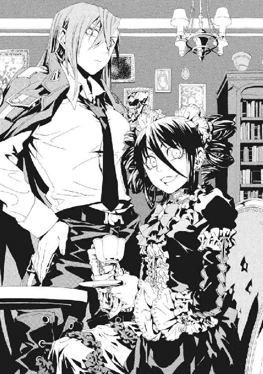
「メイゼルちゃんは、ぬいぐるみが相手だと英雄になれるのにね～」
まだまだ修行中のちいさな魔女は、かなわないのがくやしくて思い切り足踏みした。
「わたしが強くなったら、泣かせてあげるんだから」
「メイゼルちゃん～、強い魔法使いは、『なったら』なんて恥ずかしいことを言わないんでちゅよ」
叔母に、意地の悪い薄笑いで返された。混じりっけなく悪意に満ちた憎々しい面が、かわいらしいからこそ堂に入っていた。
そんなグラフェーラの、少女趣味な髪飾りに彩られた黒髪が、黄色い明かりにまばゆく照らし出された。大客室の木枠の窓の向こう、高度五百メートルの広大な浮遊城から見下ろす地平線を、巨大な光が横切ろうとしていたのだ。
そのもうひとつの太陽は、地上三千メートルの位置に浮かぶ巨大なプラズマ塊だ。あの輝きが、《太陽女帝》ロザリンドその人だった。超高位魔導師は、脳を、プラズマ壁で守られた機械化要塞に組み込んだのだ。窓から見える光球の正体は、球形の、体内工場をそなえた円環世界最悪の兵器庫だ。強大な《魔力》をプラズマのかたちで蓄えているロザリンドの主砲は、山一つを容易に撃ち抜く。
グラフェーラが、地平線の向こうへ消えてゆく《太陽女帝》をにらんで、下唇を嚙んだ。
「......忌々しい」
そんなグラフェーラの懊悩を、イリーズがくすりと笑った。
「アンタは、あの女を泣かせてやるとは言わないのかい？」
メイゼルは、これからどうなるか悟ってぬいぐるみを握った。グラフェーラのきれいな衣装は好きだったけれど、来てほしくはなかった。メイゼルが生まれる前に死んだ父の話を持ち出し、わざと悪いことばを使って母の機嫌を悪くさせるからだ。
「rabbit（臆病者のウサギちゃん）は、お姉様のほうですわ。次の最高位魔導師はお姉様だとみんな言っているのに、いつ《太陽女帝》に挑戦なさるの？」
憎まれ口をたたくけれど、グラフェーラは完璧に化粧しておしゃれをしてやってくる。いつもきちんと会見の約束をとって、完璧に礼儀にのっとって、嫌われないよう細心の注意を払っているようにも見えた。だからか、母も、困り顔ながら邪険にはしない。
「そのときになったらカタはつける。まだ仕事があるからね」
「仕事って、才能がないかわいそうな魔法使いたちに、余計な希望を見せること？」
「そうだ」
「お姉様は、世界中の賢者に侮られるシュミでもおありですか？ そうですか？ 一体だれを味方にすればいいか、まだわからないほど頭がおかわいそうなんですか？」
メイゼルにとって母は、こわいけれど、人々に慕われているすごい人だった。《雷神》を超えると言われるほどの、幾多の改革と成果を収めたのだ。高位魔導師たちが独占していた魔法技術を、イリーズがいくつも統合して体系化した。そして、下手な魔法使いたちにも使えるように、補助具を作り、手順をマニュアル化して、それを編集し直したのだ。
「トリア家の今の人望は、アンタのお兄様が、その下々の連中と汗水たらして築き上げたんだがね。せめて、家族のアンタくらい、わかってやんな」
安い挑発をいなされて、グラフェーラが応接机に稲妻を打ち込んだ。十発以上の人工稲妻を瞬時に生成した魔法の技倆より、メイゼルには、叔母の形相と怒声が恐ろしかった。
「お兄様の一番いけなかったことだけを引き継いで！ 役立たずにおべっかを使えば、空賊あがりが、やさしかったお兄様に近づけるつもり」
「そりゃ近いだろうよ、嫁なんだから」
ことばに詰まったグラフェーラが、ちいさなメイゼルを見つけてにんまりと唇を歪めた。
「メイゼルちゃ～ん。メイゼルちゃんなら、なぁんにもできないwisemanを大事にはしないよね～。お友だちは、一族やちゃんとした魔法使いから選ぶもんね～。だって、ちょっとの差だって、たしかに〝ちがう〟んだもの～」
グラフェーラは、メイゼルに嫌われていることなど承知なはずだった。それでも、都合のよいときは盾にしたり、彼女を子猫あつかいしたりした。
「自分が最高位魔導師になったら、《三十六宮》として、もっと円環世界をよくできるはずなのにね～。メイゼルちゃんのお母さんは、何があっても生き残るくせに、腰抜けですよ～」
それでも、メイゼルは、グラフェーラがしがみついてくるとき、腕にこもっている力を感じていた。憎まれ口をたたき嫉妬をぶつけるとき、彼女はおおきな目でイリーズの表情をうかがっている。ただ、母は、いつも心底めんどくさそうに返すのだ。
「欲しいなら、魔法使いなんだから自分で奪うんだね」
母が、手近にあったノートパソコンを開いた。イリーズは、当時、《地獄》の電子機器を大量に取り寄せていた。複雑な魔法制御を、部分的に、コンピュータに肩代わりさせようとしていたのだ。
イリーズは、一部の高位魔導師が知恵と力を独占している状況に疑問を覚えていた。長寿の魔法使いも、思考パターンが固定されるため、技術開発者として力を発揮できる期間は限られている。だから、秘匿せず技術を解放して、人的資源を有効に使おうとしたのだ。それが、知識が権力に直結する、古い高位魔導師たちの激怒を買っていた。
「メイゼルちゃんのお母さんがやっていることはbusinessですよ～」
「叔母さま、......お母さまのこと、悪く言わないで」
彼女には、それだけ言うのが限界だった。母は、魔法の下手な魔法使いも、機械装置に補助させることで才覚を発揮させられると考えていた。そんな母のことが、誇りだったのだ。
グラフェーラが、魔法で椅子を引き寄せて乱暴に腰掛けた。そして、メイゼルを強引に持ち上げてだっこした。
「私が、お姉様くらい強ければ、明日にでも《太陽女帝》に挑戦しますわ。でも、お姉様は、私みたいな最高の円環魔導師にギリギリ数えられた程度の凡人とちがいますもの～。円環大系の歴史に残るgeniusですもの～」
母は、力の信奉者であるグラフェーラの理想そのものだ。好きだった兄と結婚し、魔法史に残る業績を挙げ、最高の魔導師でもある。だが、グラフェーラは、その〝お姉様〟に愛されるどころか、振り向かせることもできない。
口から喉まで鉄棒を突っ込まれたような不快感と恐怖に、メイゼルは鳥肌が立った。嫉妬に紅潮する叔母の頰の下に、冷たく暗いものが透けていた。
引っ込み思案な子どもではどうしようもない、おとなの、本物の悪意だった。
メイゼルは、たぶん寂しかった。だから、不愉快でも、グラフェーラがやって来たお茶の席に楽しいことがある振りをしていた。
グラフェーラも寂しくてアリューシャ家の浮遊城に来ているのだと思っていた。
だから、母と叔母が魔法のことで議論していたある日、勇気を出して口に出してみた。
母たちの口元に浮かんだのは、失笑だった。
「アンタ、さびしくてうちに来ているのかい？」
「まさか、お姉様」
いたたまれなくて、紅茶の匂いがする大客室から逃げ出してしまいたかった。メイゼルも、母が求めているのが強さだと承知しているつもりだった。それでも、母の呆れた顔に、胸を貫かれた気分になった。
「まだ甘ったれの子どもか。いつになったら、おまえは〝魔法使い〟になるんだ？」
グラフェーラが、藤の枝を編んだちいさなかごを、メイゼルの手に押しつけた。
「メイゼルちゃんに、人形を持ってきてあげたのよ～。私はもういらないから、たいせつにしてね」
かごには無造作に高価な人形が詰めこまれていた。本当にいらないものを捨てるかわりに持ってくるから、彼女の部屋は微妙にかわいくない人形だらけだ。
「ありがとう」
礼を言ったメイゼルを一顧だにせず、叔母は話に戻ってしまった。
「あの《太陽女帝》に報いを受けさせるには、《無尽の光壁》よりも、自己円環の防御の突破が最大のヤマ場だと思いますの」
母は、また新しい《地獄》製の機械をいじっていた。
「《雷神》の魔法も、息が長いな。二千年経っても、まだあの二段構えが有効とはね」
「あのwitch、《雷神》の末裔だから、きっと家伝の秘術に決まってるわ。中立なんて言って、《雷神》も一族だけに自分の魔法を伝えているくせに」
「自己円環は、一度張った後、攻撃でできた〝たわみ〟や解れを修正し続けなきゃならない、未完成の魔術だ。その作業にさく余地を作ってる神経強化のほうが高度な魔術なんだがな」
「神経強化だって、生身の肉体より、機械化した体の人工神経に使うほうが効率的ですわ。《太陽女帝》が要塞の体を大きくしたのは、打撃を自己円環で防ぎきれなかったときのため、装甲を厚くしたせいでしょう。付け入る隙は、もう見えているのに」
メイゼルは、高度魔術の話にあまり興味を持てず、ソファに座って人形をかごから取った。
「お姉様は、《太陽女帝》の何を評価していますの？」
「ロザリンドの《破滅の化身》は、分身を作ると、体内工場で生産した戦闘機がいっしょに増える。技術的には、あれが一番いい。百体以上の多数の分身を作る長所が生きる。無人戦闘機が、二万機、三万機と、太陽の光を覆って空中を埋め尽くすからな。あれは心躍る光景だ」
《化身》とは、各魔法世界の自然秩序で記述した〝術者自身が存在すること〟を、魔法として行使することだ。円環大系では、自分自身が存在するという円環をねじって無数の自分自身を作り出す、《破滅の化身》という魔法になる。だから、要塞施設と同化した魔法使いが使えば、それはもはや一人にして一個の軍団だ。
弱点は、《化身》展開中に傷つくと、自身の存在という円環自体が千切れて即死してしまうことだ。だが、母に言わせると、その対策も万全な様子だった。
「ロザリンドにとって、要塞は、剣や鎧をつけた騎士が《破滅の化身》の分身を作ったとき、そっちも武装しているのと、同じなんだな。《化身》展開中でも、鎧に傷がついたくらいでは、自己円環は千切れない。だから、ロザリンドも、あの厚さ三十メートル以上の装甲を貫徹されなきゃ、《化身》中でも死なない」
「やっかいね～」
考えることを放り投げたように、グラフェーラがお茶のカップをつかんだ。強いからこそ最高位魔導師、《三十六宮》だった。
「私が、お姉様みたいな体を持っていたら、すぐにでも挑戦しますのに」
円環世界でもっとも進んだ身体機械化の技術を持っていたのは、イリーズだった。外見は生身と変わらない体は、高度に機械化されているのだ。
「アタシみたいな体なんて、本当に欲しいのかい」
「それはそうよ。そうだ～、メイゼルちゃんにあげた人形のお礼に、機械の体を作って」
メイゼルは、叔母が本気だと思った。彼女は、あらゆるものが自分の思いどおりになるべきだと思っている人だった。
「あ、でも～。私、お姉様より声が高くってかわいらしい感じだから、そういうところは残してほしいけど～」
わざとらしく唇に指をそえて、グラフェーラが首をかしげた。
「あと、ごついのはイヤだけれど、せっかくだからもうすこし指が長くなりたいかな～」
もう話が決まったかのように注文をつけていた。
「派手な火力をつけるのってシュミじゃないから。最低限度、性能としてほしいのは、牽制をいちいち防御しなくてもいい装甲と、機動力と、あと反射能力と神経系の強化と、汎用性を持てるように腕は取り外しがきくようにして～。やっぱり、武装に《神人遺物》を組み込んでおくべきだと思うんですよ～」
あるもの全部よこせとばかりの、強盗のような物言いだ。だが、母は、逆に感心していた。
「お世辞を言ってモノをねだれる性格の超高位魔導師なんて、他にいないだろうさ」
大客室の窓の向こうに広がる森の上空を、《太陽女帝》ロザリンドの太陽のような輝きが横切っていった。
グラフェーラの柔和な仮面がはがれる。
「oldhagが、これみよがしに......」
《太陽女帝》は、加齢を止める魔術を習得するのが遅かった魔法使いだ。だから、体を機械化するまで頭も白髪交じりだったことを、叔母は揶揄しているのだ。
「けど、私たちには、あんなふうにまわりをうろつくだけで、手を出せないくせに」
「私たちじゃない。魔法使いが、気安くつるもうとするな。アタシはアタシ、アンタはアンタだ」
また、母と叔母が険悪になりそうだったから、メイゼルは間の空気を取り持とうとした。
「どうして、わたしたちは年をとるの？ この世界は〝周期運動が不安定〟だから、魔法でそれを支配してるんでしょう。だったら、一年ごとに年をとるのを魔法で止めるのは、本当はけっこう簡単なんじゃないの？」
書物で読んだ疑問を、捨て身で大魔法使いである母たちにたずねた。
「そんなこともわからないんだ～。人間が年をとるのは、生きている間ずっとまわり続けてる〝生命の円環〟も不安定になるからでしょ？ 生命の円環が安定しないと、病気になったりするでしょ。でも、自然秩序を安定させる円環世界の《神》があるから、弱い魔法使いでも赤ちゃんでも生きられます。さて、メイゼルちゃん、《神》が自然秩序に干渉するとき、安定させるものをすこしずつ変質させてしまうことは、何て言うんだった？」
グラフェーラは自分の優位を確認するのが好きだ。まわりに気むずかしい年長者しかいないメイゼルには、相手がよろこぶことや痛がることを、読み取る知恵がついていた。
「......《神》の取り分でいいのよね？ 叔母さま」
理屈で説明のつかない現象は、〝《神》の取り分〟だとして深く突っ込み過ぎないようにされる。同じことは、様々な魔法大系の理論で行われている。
通信機を組み立てていた母が、顔を上げていた。
「《神》の取り分なんざ〝ない〟さ。そんな思考停止を入れなきゃ論理が成り立たないなら、円環大系という知識体系は、土台から間違えてる」
「お姉様は、天才だけど教育に向いてないから、メイゼルちゃんにはまだ早いですね～。完璧でなくても、肝心の完璧な理論が見つからないんだから、円環大系の常識を教えるのが当たり前ですのにね～」
「理論か。......たとえば、世界の円環自体が、〝変化を織り込んで〟いればどうだ？ 一回転するたびに上昇下降する《螺旋》みたいに、変動することが前提なんだ。それなら、人間が自然に年をとってゆくことも、加齢を魔法で止めるのが難しいことも、両方説明がつく」
「そんなこと、証明する方法がないでしょう。魔法使いは《神》と一対なんだから、《神》の取り分は、魔法にかならず発生するのに」
「それを実験することが第一歩なんだ。アタシたちは、世界の本当の姿なんか見ちゃいない。世界と《神》と魔法使い、三つがそろった総体を見て、世界の真相を類推してるだけだ」
母は、たった一言で、高度魔術を学びだしていたメイゼルの背筋を凍らせた。
「だが、想像してみろ。《神》が死んだ状況を」
グラフェーラも、声を揺らした。
「そんなこと、ムリに決まってるでしょう」
「自然法則を〝従わせる〟のが魔法使いなら、法則の集積体としての《神》を〝変質〟つまり破壊する技術も、その延長上にあるはずだ」
「そんな理屈の話ではありませんわ！」
「世界には、円環世界の常識どおり、〝円環〟をなして元の状態に戻る秩序があるとする。人間がいて《神》がいない状態ではどうだ？ 〝取り分〟を要求する《神》がいない場合、人間の老化が《神》の取り分なら、《神》なき世界で人間は永遠に生きることになる」
グラフェーラは、必死に冷静さを装っていた。だが、甘ったるいことば遣いでかためた仮面は、剝がれていた。
「《神》がいなくなったら、円環世界の人間は生きられないでしょう。老化を止められるくらい《生命の円環》を制御できる人間以外は、みんな死ぬわ」
「もしも世界が本当に〝円環〟なら、取り分を要求する《神》が死んだとき、世界は〝変化〟のきっかけを失う。変化は、《神》の取り分だからな。神が死んだら、円環は完全に閉じて、周期運動の変動に耐えられないものが砕けるだけ砕けた後、もはや変化はなくなる。永遠に同心円を回り続けるみたいに、円環世界は封印されることになる。時間はどうなる？ 見かけ上、止まるか......」
うん、そうだと、母は、何度もその考えを繰り返すようにうなずいた。
グラフェーラの目に、じわりと涙が浮かんだ。
「やめて。もうやめてお姉様」
叔母は、本当に嫌なことがあると泣き真似をする。高位魔導師は人格を問われない。トリア家で一番強い魔法使いは叔母だから、女王様のように振る舞える。だが、アリューシャ家の浮城ではそうではない。
「グラフェーラ、アンタが否定した〝螺旋〟のほうを考えようか。円環世界の自然秩序が、変化することを実は織り込んでいたとする。これだと、死んだ《神》は早い段階で回復するな。自然秩序は、渦巻きが一回転ごとに半径を大きくするみたいに、常に世界を変化させてるんだからね。だから、《神》が死んだら一時的に自然秩序は安定を失うが、変化の果てに《神》がふたたび発生して、秩序を取り戻す。うん、こっちのほうが自然の振る舞いに近い」
メイゼルにも、母が何を言っているのかようやく理解できてきた。呆然とする彼女をよそに、叔母が金切り声をあげて、またテーブルを人工稲妻で叩いた。
「もうやめて！」
イリーズは止まらなかった。それは、天に唾吐くような決定的な疑いだった。
「この世界は、本当は《円環大系》じゃないとは思わないか？」
グラフェーラの顔が真っ青になっていた。
「《神》と世界に仇なすのは背約者だわ。《神》が死んだらなんて、お姉様は、円環大系をご自分と心中させるつもり」
母が、めずらしく義理の妹の目を見つめた。そして、子どものような開けっぴろげな笑みを浮かべた。
「アンタは、アタシのことをよくわかってくれる。そういうとこだけは、スキだよ」
それは純粋にイリーズ自身でありすぎるため、彼女以外と相容れない思考だった。イリーズほど高位の魔導師が人間としては狂っていても、魔法世界では何の不思議もない。
「アタシが《神》を殺れるってコトは、信じてくれてるんだろ」
メイゼルにも、危うい関係が壊れた音が聞こえた気がした。
超高位魔導師ふたりが激突すれば、浮遊城の甲板など簡単に吹き飛ぶ。大客室も地上施設ごと瞬時に蒸発し、メイゼルは死体どころか灰も残らない。
部屋中にものの焦げる臭いが充満していた。《魔力》が、ほんのわずかなきっかけで出口を求めて荒れ狂うほど、集められているのだ。
「お姉様みたいな空賊あがりに期待したのが間違いだったわ。イリーズ・アリューシャが言ったこと、すべて《協会》に伝えるわ。魔法のために何でも割り切れるcrazywitchだって」
「一体何がほしいんだい」
見透かされて、グラフェーラが開きなおった。
「私──私、......私、機械の体がほしいな～」
世界の中心が自分だと信じる人間だけが持てる、不可解なほどの前向きさだった。一瞬後には周囲の大気を煉獄に変えられるほどの《魔力》の渦の中、叔母が唇に人差し指を当てておねだりしていた。グラフェーラもまた、常識の外にある。
「《太陽女帝》の要塞の体にひけをとらない、高性能の体があったらいいなあ。そしたら、トリア家の魔術でも勝てるし。それに～、お姉様みたいな魔法のことにしか興味がない人が最高位魔導師になっても、みんながイヤな思いをするだけし」
イリーズは、背もたれに体を預けたまま、そっくり返って笑った。
「今日のアンタは、いつにも増して〝魔法使い〟らしいよ。気に入った、受けてやろう」
母の眼光はひどく暗かった。グラフェーラは気づかなかった。
「アンタに、最強の体をくれてやるよ」
イリーズは《神》を殺すと言った。それは、円環世界の秩序自体と戦ってもかまわないということだ。《三十六宮》に立ち向かうより、ずっと危険な決意だった。グラフェーラは、見え見えの落とし穴を、自己愛に目をくらませて見落としていた。
メイゼルは、それから二日後の真夜中、浮遊城の地面に近い階層からすさまじい絶叫を聞いた。
眠っていられず、パジャマにスリッパ履きのまま見に行った。母の実験室のひとつの、巨大な金属扉の向こうから、人間のものにしては抑揚が単調すぎる悲鳴が響いてきた。
彼女が、ドアの前で、開けてよいものか迷っていると、母が魔法で転移してきた。
「開けるな。本当に出たくなったら、勝手に出るさ」
叔母は、歌手のようなきれいな声を自慢にしていたはずだった。理解できないメイゼルを、漏れてきた平板な機械音声がさらなる混乱に陥れた。
「何、コレ、コレハ、私ノ顔モ、手モ、体中ガ......」
だが、母は、体を張った冗談でも見たように笑っていた。
「注文どおり重装甲にしてやっただろう。その装甲を外した素体の状態でも、十分な防御力を持たせてある。外見が気に入らなきゃ、自分で人工皮膚を貼り付けろ」
「私ハ、コンナ化ケ物ニ改造シテナンテ、頼ンデナイデショウ」
「アンタの好みはややこしい、そこから先は自分でやれ」
「ナゼ？ オ姉様、ナゼコンナ意地悪ヲスルノ」
「半端に満足いくものより、潔いじゃないか。このほうが、アンタの一番の武器だって生かせるだろ？」
「ナゼ？ イヤヨ、......ナゼ？」
母は、グラフェーラの絶望を笑っていた。メイゼルはその酷薄な唇を見上げて、怖いと思った。天才である母には、人の嫉妬がわからないのだ。だから、無邪気に親戚でも踏める。
「アンタの一番の武器は、〝俗物だ〟ってことだよ。アンタみたいに、好きでもない相手にすり寄ったり厚かましいおねだりしたりできる超高位魔導師を、他に知らないからね」
「ウ、ウ、ウ......」
乾いたうなりを、母は聞いていない様子だった。
「でも、そういうの、めんどくさいんだよ。もっと単純に生きていいじゃないか」
「............ウアアアア」
メイゼルには、平板な人工音声が、グラフェーラの嗚咽にしか聞こえなかった。イリーズは、心底めんどくさそうに首を傾けた。生身の体なら、首を鳴らしている仕草だ。
「私ノ......〝魔法〟ハ......」
必要なかったのかと、認めていなかったのかと、グラフェーラが懇願するようだった。
「やっぱり、魔法使いは群れるもんじゃないよ。アタシとアンタは、一組じゃない。アタシはアタシ、アンタはアンタだ」
無言になったグラフェーラを、義理でも姉であるイリーズがなぐさめた。
「アタシにやられたって言って、有力一門や他の超高位魔導師に再改造を頼めばいいさ。本当に、人工皮膚や声帯あたりは、アタシよりずっとうまく作ってくれる。よそでダメなら、改めてこっちに来るんだね」
超高位魔導師は、物的な損害をいくら出しても、それを取り戻してあまりある力を持つ。だから多くのことを許される。だが、人の心はちがう。イリーズはそこを見誤っていた。
「失敗するかもしれないが、写真にとってあるのと同じくらい美人には作ってやるよ」
ドアの内側から、機械音声の咆哮が轟いた。かつての永遠の少女が、肉体を憎むように拳を壁に叩きつけた。何度も固い拳を叩きつける音が響いた。強化された腕力と、傷一つつかない装甲のため、ハンマーで壁を殴っているようだった。
「お母さま......叔母さまをゆるしてあげて」
言ったと同時に、メイゼルは冷たい床に倒れていた。頰が熱くなってズキズキ痛んだ。母にはり倒されたのだ。
「自惚れるんじゃない。人形あつかいの子どもに情けをかけられて、よろこぶ魔法使いなんていやしない」
彼女は、まだ十歳の子どもだった。けれど、どうしようもなく悔しかった。そして、口答えしてもこの母は揺るぎもしないとよく知っていたから、歯を食いしばるしかなかった。
「好キニナロウトシテヤッタノニ......」
母を見上げているメイゼルの胸が、ひどく締め付けられた。陰湿ではあっても、グラフェーラのイリーズへの憧れは本物だった。
「オマエハ、ズット、私ヲ嘲笑ッテタンダ。〝天才〟ダカラ、自分以外ノ魔法使イヲ全員見下シテイルンダ......ワカッタ、私ヲオモチャニシタンダナ......私ハ......」
聞いている間に、彼女の話し方が変わりだしていた。
イリーズが、つまらなそうにため息をついた。
「アタシは作業に戻る。時間のムダだ。言いたいことがまとまったら作業場に来るんだね。話は聞いてやる」
そして、現れたときと同じように、魔法的転移で瞬時にこの場を去ってしまった。
取り残されたメイゼルは、本当に叔母が心配になっていた。深窓の箱入り娘だった彼女は、肉親である自分が手を差し伸べるべきだと、義俠心に突き動かされたのだ。
ドアを軽くノックした。
「......叔母さま、聞こえる？」
打ち返されたのは、泥のように濃密な悪意だった。
「見ルナ」
ドアの金属板をはさんだ向こう側に、剝き出しの絶望に震える〝もの〟があった。金属音声の平板さの後ろに、こころの奥底から暗いものが引きずり出された闇を見た。
「オマエヲ殺サナイノハ、オ姉様ニハ、オマエナド八ツ裂キニシテモ、痛クモナイカラダ。オ姉様ニハ、本当ハ誰モ必要ナイ。オマエモダ......」
親愛も愛着も感じられない、憎悪と剝き出しの劣等感にあふれていた。ひとりの人間が、メイゼルの目の前で〝怪物〟になった。
足が震えた。息が苦しかった。
「オモチャノ仲間ガ増エテウレシイカ。消エヨ......」
メイゼルの勇気はまだ眠っていた。まだ〝魔法使い〟のこころを持ちきれない彼女は、寝室に逃げ帰った。そして、震えながら布団をかぶった。
叔母は、夜のうちに魔法で壁を破って姿を消した。そして、もう浮遊城に現れなかった。
そして、それから三ヶ月ほどして、《太陽》が消えた。
グラフェーラの来訪がなくなって、寂しくなった大客室から、ふらりと母が出て行った。それから十分ほど経ち、メイゼルが母はどこへ行ったのだろうと考えだしたころだった。いつもどおり窓の外を横切ろうとしていた《太陽女帝》の輝きが、突如、三十個ほどに増えたのだ。そして轟音が響き、森の木々がなぎ倒された。
黒雲に覆われたように、無数の飛翔体に西の空が埋め尽くされていた。昼下がりの地平線に、夜空から落下したように星座が現れた。
大地が鼓動するように波打った。その方角から、衝撃波が浮遊城まで押し寄せてきた。すさまじい《魔力》の奔流が、浮遊城を浮かせている磁力に弾かれ、窓の外にちいさな極光を作った。
そして、巨大な純白の浄光が、音もなく炸裂した。黒雲は吹き払われた。偽の太陽はひとつに戻った。そして次の瞬間、大爆発が大地を波打たせ、青空に太陽はひとつになった。
そのときが、《三十六宮》、《太陽女帝》ロザリンドが、イリーズ・アリューシャに斃された瞬間だった。
母が浮遊城に帰ってきたのは、二つ目の太陽が墜ちて一晩明けた朝だった。
それから一週間、まるでお祭りのように、見たこともない数の人々が城を訪れた。メイゼルもイリーズの娘として、幾人もの高位魔導師にあいさつを受けた。
おとぎ話の中の存在だった《雷神》クレペンスを、彼女はこの日はじめて見た。三千年以上生存し、円環大系という魔法世界を守り続けるためだけに戦う英雄が、母に恭しく頭を下げていた。《雷神》に認められるとは、円環大系の魔法騎士団である電磁騎士団を手に入れるということだ。
絢爛たる騎士たちが、幾千人も彼女たちの城にやってきた。
多くの魔術の名門が、地上ふうの質素な調度で飾られた城を訪れた。
グラフェーラは、そのときにも来なかった。
勝利を祝う祝賀の宴は、夜まで続いた。彼女が疲れて先に自室に戻ってベッドに入ったころ、ドアがノックされた。
「入るよ」
母だった。魔法使いらしく世界に単身で対峙し、ついに最高位魔導師を斃してしまったその人が、決まり悪そうな顔をしていた。
「今日は疲れたかい。悪いね。アタシは社交界にもアンタを出してやらなかったから、こんなにたくさんの人にあいさつされるのは初めてだろ」
メイゼルは、体を起こした。突然忙しくなって、心身ともにくたびれきっていたが、母が彼女のために時間を作ってくれたことがうれしかったのだ。
「だいじょうぶよ。わたし、魔法の練習もいっぱいしてるし、きたえてるもの」
すると、いつもは魔法を教えてもらう合間にしか話をしてくれない母が、ベッドサイドまでやって来てくれたのだ。そして、リボンを解いた彼女の長い髪を、やさしく手ぐしで梳いてくれた。
「魔法は、常に上達するように研鑽するんだよ。魔法使いなんだから、アタシを超えてもっと上を目指せ。魔法世界では、人は、最後には人間を魔法の腕でしか見ないぞ」
母の目は真剣だった。オレンジ色の薄暗い室内灯に照らされたイリーズは、まるで戦いに向かうかのように、体を緊張させていた。だから、メイゼルの身は、自然に不安で震えた。
「お母さまは、最高位魔導師になるの？」
「いいや、ならない」
「それじゃ、どうするの？」
ベッドに半身を突っ込んだままの彼女を、体を機械化した母が抱きしめた。
「アンタのお父さんはね、やさしい人だったよ。それに、おもしろい男だった。魔法の腕はせいぜい一流半だったけどね」
「お母さま？」
メイゼルの心臓は、驚きのあまり破裂しそうだった。訊くたびに「一人前になってからだ」とはねつけられてきたからだ。
「いいんだよ。これからのアンタが、何を選んでゆくかを決めるには、もう知っといたほうがいい。本当は、もうちょっとシャンとしてくれるまで待ってもよかったんだが、先に戦いがはじまったほうが、アンタの目も覚めるかもしれない」
「お母さま、何を言ってるかわからないわ」
「わからなくても、今は、聞くんだ。アンタのお父さんは、実践はダメだけど理論を考える頭はよくてね。トリア家をグラフェーラに継がせて、地上に降りたんだ。持論でさ。『優秀な魔法使いでも、新しいことができる開発者寿命は百年だ。なのに、永遠に生きて、知識を独占して、新しく出る芽を摘む既得権益になってる』ってな。......ただ長生きして政治ごっこしてる長老たちは、バリバリはたらける後進に実権を譲れって話なんだけどさ」
そのとき、イリーズは、彼女が見たことのない柔和な微笑を浮かべていた。
「当然、長生きしすぎた長老ににらまれてね。そのおかげで、トリア家にいられなくなって、アリューシャ家に勝手に婿に来た。......まあ、つまりアタシと結婚したんだ。アタシもいっしょに、トリア家にえらく恨まれてたな」
「どうしてお母さまは、お父さまを好きになったの？」
たぶんメイゼルの「どうして」には、「他人がいらなそうな人なのに」という気持ちが混じっていた。けれど、イリーズは怒らなかった。
「必要だから好きになるんじゃなかったのさ」
「それじゃ、どんなふうに好きになったの？」
「ことばで言ってもわからないさ。アンタも、自分の体で、体当たりでぶつかってみるんだね」
母の冷たい美貌が、内側からの熱であたたかくほどけるようだった。これは、しあわせな女の顔なのだと思った。だが、その母の表情に痛みがよぎった。
「アンタの父親が降りた地上の魔法使いってのは、本当に畑の雑草くらいに片付けられててね。それでも、アンタの父親は目をキラキラさせてね、『これだけ魔法使いがいれば、きちんと教育すれば芽の出る者がきっと山ほどいるぞ』ってさ。しまいには、この連中に魔法にかかわる仕事を与えようだの、経済力を持たせようだの、技術を仕事の中で磨かせようだの、好き勝手言い出してさ。......付き合うこっちが大変だったよ。アレがやりたいコレができるの言うばっかりで、魔法技術を集めるのも、複雑な魔法を下手くそでも使えるように構成し直すのも全部アタシに押しつけやがった」
「お母さまは、楽しかったのね」
「あー、そうともさ。楽しくなかったら、絞め殺してやってたよ。しまいには、トリア家が《破滅の化身》の分身を使って大魔術を構成するときの魔法陣を引っ張り出して、街ひとつ使って超高位魔術を撃たせるようなのまで設計してさ。《地獄》の《悪鬼》が使う電子機器を山ほど輸入してきてさ。その回路をパクって、下手な魔法使いでも一万人も集まって自分の仕事さえしてりゃ、集積回路を構成できるようにしてな」
母が、黄金のときを記憶から掘り返すように、こころの底から笑っていた。熱が入るほど、忍び寄っている影の気配も濃くなった。
「でもな、トリア家の一門は、秘伝の魔法を公開されて怒った。知識が簡単に流出しないように有力家系が結んでた技術協定も破ったしな。地上の魔法使いが、どんどん力と自信をつけはじめて、世界が変わりだしてさ。それで、責任とれって圧力がトリア家に押し寄せた」
「叔母さまは、どうしたの？」
「お兄ちゃん大好きだから、グラフェーラはいつものあの調子で逃げ倒した。だから、一門が勝手に手を回した。そのころ、《太陽女帝》ロザリンドが、失敗したら生き残れないような大規模実験をやってて、研究助手を探してた。で、これさいわいと、ゴマすりついでに、トリア家の連中が、アンタの父親を拉致して差し出した」
抱かれた胸のうちから見上げると、母は顔をそらして表情をうかがわせてくれなかった。メイゼルは、その実験が失敗して、父が死んだのだと知った。
「お母さまは、お父さまのカタキをとったの」
「まだ、はじまったばかりだよ。ロザリンドの命なんか、ただの人目を寄せるための花火さ」
メイゼルは、父の顔を記録された画像でしか知らない。けれど、母のことばは何かがちがう気がした。娘は、母と悲しみを共有したかったのだ。
「お父さまはよろこんでくれているの？」
「さあね。アンタのお父さんは、教育とか気の長い話をしてたんだけどさ。アタシは、こういうハッキリ勝負がつくのが性に合ってるんだ」
母の話で、ひとつ腑に落ちた。グラフェーラが浮遊城に来ていたのは、メイゼルの父に未練を残していたからだった。だから、憧れと嫉妬を同時に抱きながら、母に引っ付くしかなかった。憎い仇より確実に強いイリーズが動かないことに苛立ち、だが、あまりにも魔法使いらしいこの人のようになりたかったのだ。
今、メイゼルの体も、震えが止まらなかった。物語の英雄のような、母みたいな〝魔法使い〟になりたかった。人の心を顧みない、ひどい人だとわかっているのに止まらなかった。
「もうこれはアタシの戦いだ。ロザリンドなんか通過点さ。これから、古い知識をまるごとへし折ってやる。権力に永遠にしがみつく寄生虫どもを、〝円環大系〟って知識ごと、全員過去の遺物にしてやるのさ」
そして母が、彼女のちいさな肩をつかまえた。琥珀色の瞳が、まっすぐにメイゼルの目を見ていた。
「腹を据えな。戦争をはじめるよ」
はじまるのではない。この母が、世界の横っ面を渾身の力で殴るのだ。
だが、世界を敵に回しても生き方を貫く母が、壮絶なまでに孤独に思えた。家族だから、いっしょにいたかった。彼女も寂しかったから、せめてともに歩きたかった。
「わたしも、戦うわ」
声は震えていたが、ちゃんと言えた。胸にちいさな手を当てて、心臓の鼓動を確かめた。立つと決めたら、母が、ただ厳しくてこわい人でなくなった。魔法使いならこんなふうに生ききってやりたい、目標に思えた。
母は彼女のことばを反芻するように、沈黙した。そして誇らしげに微笑んだ。
「そうか。それじゃ、今日からアンタも〝魔法使い〟だ」
その戦いは、イリーズ戦争と呼ばれた。
最高位魔導師《太陽女帝》ロザリンドを打ち倒したイリーズは、新しい円環大系世界の未来を示した。
彼女は、集まった高位魔導師たちに、おのおのが持つ魔法技術を、円環大系の全魔導師に公開することを命じたのだ。
魔法世界では、一般に、人間の価値とは魔法の技倆だ。円環大系でもそう考えられており、他の世界でもそうであるように、高度な技術は秘匿された。
だから彼女の命令は、円環大系の高位魔導師たちのすさまじい反発を招いた。
メイゼルは、戦争に、本拠である浮遊城というもっとも安全な場所から立ち会った。
魔法世界での戦争は、主導者である高位魔導師が死ねば終わる。だから、個人が隠れて防御を固めれば長引き、正面から迎え撃てば早期に終わる。
円環世界での戦争は、短い。ひとたび戦いがはじまれば全土が文字どおり炎に包まれる。超機動力の魔法使いが音速を超える速度で飛び回り、あるいは魔法的転移で一瞬で移動して、極大出力で焼き払うためだ。そして、燃えるものすら早々になくなってしまう。
だが、わずか一年で終結したイリーズ戦争は、世界を変えた。
円環大系のあつかう《魔力》は、ただ純粋な力だ。だから、地上に生きる力の弱い魔法使いたちは、流れ弾や、浮遊城を浮かせるための《魔力》に蹂躙された。容赦のない力から、生きるため身を守らねばならなかった。かくして、都市に、イリーズたちが流出させた高度魔術のうち、身を守るための防御魔術が広がった。
そして、記憶媒体の進歩と、張り巡らされた放送網の基盤が、情報の共有をもたらした。元よりの生活の技術に、イリーズと夫がバラ撒いた技術と補助具が合わさって、爆発的進歩のタネは蒔かれていた。
開戦から二ヶ月後、地上の都市に集まった住民たちは、千人で共同した砲撃魔術により、浮遊城の一基を撃墜する。円環大系の高位魔導師は、高度な儀式魔術を使うとき、《破滅の化身》で増やした自分自身に分業させる。アリューシャ家は、これを流用して、多数の〝弱い魔法使い〟たちが分業で高度魔術をあつかう技術を広めたのだ。
メイゼルは、浮遊城から、夜の大地に巨大な光の輪が広がるのを見たこともあった。彼女が学んだ超高温プラズマ流制御、《天使の輪》を、人工稲妻すら満足に撃てない〝才能のない魔導師〟たちが放った光景だった。分業による都市魔法陣は、千人の共同作業ならば高位魔導師と同等、一万人ならかなり名のある高位魔導師と同等の大規模魔術を発動させた。
揺るぎない力の差を象徴した浮遊城がいくつも撃墜された。都市に集まった〝弱い者〟たちは、膨大な人力と知恵で、みずからの魔法を洗練させはじめた。
そして百万人がかりの超巨大都市魔法陣が、ついに超高位魔導師の一角を墜とす。不用意に接近した奇蹟の王を罠にかけ、無限に自己を展開して内側の空間を広げる《無限回牢》に封印したのだ。完全に外部から隔絶された黒い立方体が、超高位魔導師の墓標として広大な森林地帯の中心に立った。
人々が都市に集まる流れは決定づけられた。才能のない魔法使いですら、連携して仕事を果たせば最強の魔導師たちに勝る可能性があると知ったのだ。そして、人が集まれば各種の産業が生まれる。都市と住民は豊かになった。技術が発展するにつれて、都市魔法陣であらゆる高度魔術を再現できるとまで言われるようになった。
技術だけではない。〝思想〟が、全世界を巻き込んで市民たちの間に広がった。人を動かすために、イリーズは〝大義〟を唱え、〝誇りと自信〟を煽り立てた。イリーズは、古い円環世界を粉砕する弾丸として、民衆自身の自主性を引き出したのだ。
それは高度魔術のように複雑に計算され尽くした、革命だった。
メイゼル自身も、一年間、流されまいと必死だった。彼女は舞台に立ててすらいないと、よくわかっていた。だから、無力感をぬぐい去るためにひたすら学んだ。
イリーズに味方する高位魔導師と会うことが増えた。同じような年の子どもと自分を比べる機会ができた。
深窓の引っ込み思案な少女だったメイゼルは、すこしずつ自信をつけていった。グラフェーラや母よりこわい魔法使いは、ひとりもいなかったからだ。
寂しさにとらわれている間もないほど、厳しく激しい時代だった。
イリーズと同盟者たちを、高位魔導師たちは追い詰めた。都市に集まる人間の思惑もひとつではなく、団結は容易に崩れた。円環世界には、《地獄》のような政治の経験も技術もなかったのだ。機械化されたグラフェーラが《雷神》を下し、電磁騎士団が完全に敵に回ったことで、戦況は決した。
開戦から三百九十日、ついにイリーズの居城は、七人の超高位魔導師に包囲される。八十万人の人口を抱える大都市、スカアハ市の郊外でのことだった。
「お母さま。あれ、グラフェーラよ」
メイゼルは、大客室の窓から絢爛たる貴人たちの騎行を目にして、総身の震えを止められなかった。
黒煙が周囲を包んでいた。眼下に広がる大都市スカアハは、東側街区の半分、西側街区のほぼ全域を失い、猛火に包まれていた。
アリューシャ家の浮遊城の甲板を取り囲むように、天空を円環大系最強の魔導師たちが飛んでいた。城の自動防御網はすべて焼き払われていた。中央施設を守る最後の盾である三重の流体磁石壁が、《魔力》爆撃に耐えきれず自壊した。
真昼の青空に、飛ぶものは浮遊城と敵だけだ。七名の超高位魔導師の中に、《雷神》の姿があることを知った。〝おとぎ話〟が、彼女たちを殺そうとしていた。
「あの装甲はグラフェーラだ。研鑽しているようだな。うれしいよ」
母は、優雅にソファで紅茶を飲んでいた。こうして日常生活を残していること自体が、生身の肉体の者が少ない超高位魔導師では珍しいこだわりだと、今はメイゼルも知っていた。今日が最後になるかもしれなかったから、十一歳になった彼女は、一番気に入っているドレスを選んで着ていた。〝魔法使い〟としてどう最期を遂げるのが立派か、わからなかったのだ。
戦況は絶望的だというのに、母からたしなめられた。
「死ぬ程度のことでオタつくな。魔法使いだろう」
母は、運命をみずから切り開く人だから、いつもどおり泰然としていた。メイゼルは、これから起こることが、奥歯が嚙み合わないほどこわかった。だが、避けられないなら、イリーズのように死にたかった。
「さて、蹴散らしてくるか」
立ち上がった母の前に、メイゼルは駆け寄った。役に立たなくても、殺意すら向けてもらえず、流れ弾で死ぬのはイヤだった。
「わたしも一緒に戦うわ」
勇気を振り絞って、声をあげた。戦争がはじまるとき、ほめてもらえた記憶が彼女の頭にちらついていた。
返事は、頭がもげたかと錯覚するほどの、左頰への衝撃だった。
揺れる頭で、メイゼルは自分が床に四つんばいになっていることを、なんとか理解した。また母に張り倒されたのだ。
「じゃれつくな」
声を投げかけられた。顔を上げると、母が彼女を見下ろしていた。
「これはアタシの大一番だ。勝利も、敗北も、死も、絶望も、アタシのものさ。アンタ、ただ娘ってだけで、舞台にあがる資格があるつもりかい」
「でも」
母が、悔しさをどうしようもない彼女を抱きしめた。
「今回は間に合わなかっただけさ。だから、もっと強くなって、まっすぐに歩いておゆき。アンタの舞台が、いつかきっと来る」
激情のまますがる彼女を、母の腕が抱いた。頰を当てていると、機械化された体の内側から、確かな〝生命の円環〟を感じた。母の大きな生命の輪がひとつあり、それに内接して、ちいさな〝生命の輪〟が循環していた。
イリーズのおなかの中で、人間が余分にひとり息づいていた。
「......お母さま、これ、赤ちゃん？」
「成長したね。体の中のこいつが読み取れるようになったか。......でも、赤ちゃんじゃない」
母がやさしく目を伏せた。
「これは〝アンタ〟だよ。メイゼル」
「わたしは、ここにいるわ」
「そういう意味じゃない。前に、お父さんが死んだときの話をしてやっただろ。悲しくて、悔しくてね。本当は、気が晴れるまで、気に入らないヤツらを叩きつぶすつもりだった。でも、そのとき、体の中にアンタを感じたんだ。ほんのちっさい〝生命の輪〟さ」
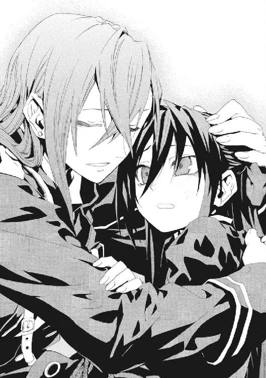
母が、メイゼルの手を、ちいさな輪に触れさせるようにおなかへ導いた。
「こうやってね、母親は、赤ちゃんができると、自然に、おなかの中で生命の円環を〝ねじる〟んだ。そうして、一個の円環を二個の円環にして、新しい命として子どもを産むんだ。不思議だろう。こんな〝変化〟が、《神様の取り分》だなんて、おかしいだろう」
だが、メイゼルの胸にわいたのは嫉妬だった。彼女はひとりだった。なのに、母だけが〝生命の輪〟を抱えて、戦いに邁進した。それをずるいと思ったのだ。
「......でも、わたしは、ここにいるわ」
「この、アンタが感じてるのはね、アンタが赤ん坊だったころの〝輪〟の複製さ。アンタを生んでから、また生命の円環を〝ねじり〟直したんだ。ひとりじゃ子どもはできないから、生んではやれないんだけどね。魔法のためだけど、アタシはいつもアンタと一緒にいるよ」
メイゼルの声は、イリーズには届いていなかった。胎内の〝まがいもの〟ではなく、彼女を見て欲しかった。
だが、母に眉を寄せさせるのは、メイゼルにはわからない苦悩だった。
「魔法で《神》を殺すなら、当たり前の人間の枠は超えろってことなんだろうな。けど、〝ひとりだけどひとりじゃない〟ことが必要な魔法ってのは、理屈とぴったり合わなくて気に入らないんだがね」
イリーズという人は、結局ひとりで生きて死ぬのだと思った。この人は、ただ純粋に〝魔法使い〟だからだ。もう母の軍服をつかむこともできなかった。
「ひとりじゃダメなのに、ひとりで戦わなきゃいけないの？」
「アンタはいつまでも甘えん坊だね。でも、いいさ。アンタが疑問を持ったなら、答えも自分で見つけるんだ。それが、魔法使いの本当の戦いなのさ」
円環大系の既存の知識体系を打ち破らんと挑んだ母が、笑った。毅い目をしていた。
「アタシの教えてきた魔法が、メイゼル・アリューシャって〝魔法使い〟を導いてくれるさ。だから、立ち塞がるものがあるなら、戦って叩き潰すんだよ。アンタには、相手が《神》でもそうできる魔法を教えてある」
そして、彼女の頭をくしゃりとかき回した。「またやっちゃったね」と、解けかけてしまったリボンを結び直してくれた。
母が、「待たせるのも悪いね」と、大客間を出た。大ホールへ抜け、超高位魔導師七名に包囲された絶望的な戦場へと、大股で歩いてゆく。
その背中に、メイゼルは、まだちいさい歩幅で、遅れないよう小走りに追った。舞台にあがれない無力感と、もぎ離される喪失感に、どうしようもなく涙がこぼれた。
「わたしは、お母さまがやられたら、あいつらを絶対に倒すわ。このあたしが、憎くてしかたないんだもの」
玄関の大扉を押し開けるイリーズ・アリューシャが、最後に一度だけ振り返った。
「いい子だ。そのくらいの大口をたたけなきゃ、アリューシャの家名は背負わせられないねぇ」
ドアの外は、地上五百メートル近くに浮かぶ烈風吹きすさぶ上甲板だ。どこまでも高い青空を背負って、母が、とびっきり明るく、底抜けに不敵な笑みを浮かべた。
「じゃあね、アタシたちのメイゼル」
†
アリューシャ家の浮遊城は、限られた武装しか持たない。あるじであるイリーズが、火砲による砲撃戦を好まなかったからだ。むしろ単体で大気圏を離脱可能なほど、堅固で移動能力にすぐれた城だった。
その城が、推力を磁気の反発からプラズマ流に切り替え、急速に上昇をはじめた。火力を補うため曳航していた、《太陽女帝》ロザリンドの死体を切り離すと、その速度は飛躍的にあがった。
スカアハ市の火災の黒煙を振り切って、雲を足下に置き去りにした。地上五千メートルを超える高度まで一分とかけず到達した。アリューシャ家の紋が入った上甲板を吹きすさぶ風が、イリーズの軍服をはためかせるほど強くなった。
戦場は、地上に被害が出やすい低空から高々度に切り替えられた。膨大な魔力を集めた超高位魔導師たちは、甲板を焼き尽くさんと照りつける七つの太陽のようだった。
円環大系の魔力は、大気や水、大地、ありとあらゆるものから分離できる。だが、無限にではないため、身近にたくわえておいたほうが有利だ。イリーズがメイゼルと別れをかわしている間、奇蹟の王者たちはただ待っていたわけではなかった。
イリーズは、ひとり魔力の天衣をまとわず、悠然と立っていた。高々度の寒風が栗色の髪をもてあそぶにまかせ、すさまじいエネルギーの塊七つを格下と見下ろしていた。
「豪勢だね。十五億人からいる円環魔導師の、上位十名のうち八名がここにいるわけだ」
魔法世界の戦争において、戦術の基本は、最強の魔導師が陣頭で敵を蹴散らし、それを他の者が脇から支えることだ。高位魔導師たちの戦闘の駆け引きなど、そもそも低位の魔法使いにはわからないためだ。
だから、戦争を決着するのは個人の剛勇だ。魔法史の最初期から、この方向性は変わっていない。これは、イリーズが魔法陣都市に力を持たせて以後も同じだった。眼下のスカアハ市が壊滅したように、超高位魔導師の機動力に対応できないためだ。
だから、イリーズ戦争の決戦もまた、ごく少人数による殺し合いになった。
金属質の銀の髪をした堂々たる若武者《雷神》クレペンスが、誰もが嫌がる先鋒に立っていた。三千年間戦い続けてきた男が、すさまじい密度のプラズマ流をまとっていた。
「《神》と単身で対峙するはずの〝魔法使い〟が、かような大勢で押しかけたこと、遺憾に思いまする」
イリーズは、個人の実力差を認めて多勢で挑んできた《雷神》を、嗤った。
「アンタの闘争の大義は、《神》が縛り付ける平安に、人が変化を忘れぬように破壊をもたらすことじゃないのか。この変化の真っ最中に、何をしにきた？」
超高位魔導師たちは、自然秩序で可能なあらゆる奇蹟を達成する超越者だ。そのため、社会のかたちやルールを決める政治権力の、更に上に鎮座する。
鋼鉄の鎧のような体に、フリルやレースで飾られたドレスを着た魔女が、《雷神》に寄り添った。
「イリーズ・アリューシャハ、《神》ヲ殺ソウトシテイルノダ。背約者デアル」
「変わり果てたな、グラフェーラ！ あの甘ったるい話し方も変えたのかい」
こころから楽しそうに、両手を広げてイリーズは七人の刺客の顔を順番に眺めた。
グラフェーラが、《雷神》を従えていた。
「どこまでも傲慢な女よ。吾が母の亡骸をもてあそんだのみならず」
その隣に滞空する、流線型の戦闘機の機首に少年の上半身がついた異形の魔法使いが告げた。少年戦闘機の周囲には、半透明の琥珀に封じられた少女が衛星のように周回している。《氷爪王》ヘンデリクと《不壊の宝珠》カレリアの双子の兄妹だった。
「やっちゃおうよ、お兄ちゃん──」
スカアハ市を蹂躙したのは、《太陽女帝》ロザリンドの最高傑作である、この双子の人工魔導師だった。
苔むした緑の体の老人が、座したまま浮遊していた。
「世界は円環──。そちが揺らそうが、すべて元の凪へと回帰する」
楠の大樹の下で一万年の瞑想を続ける《永劫の車輪王》は、最古の円環魔導師だ。
体より十倍も大きい豪奢な衣装をまとった魔女がいた。その認識の影たる魔法陣も精緻な飾りのように美しい彼女は、概念魔術の権威《皇統の薔薇》ベルアリスン。
「君は、〝魔法使い〟の秩序の敵。秩序の破壊者を見逃すことはできない」
そして、恒常魔力炉の開発者である《破砕の主》ベルバグが、地上のスカアハ市を憎々しげににらんだ。
「どいつもこいつも都市へ行って、招集をかけてもまともな魔法使いが集まらん。世界の歯車を止めるつもりか」
いずれも円環大系では名の通った超高位魔導師だった。そして、これだけの魔法使いを集めた包囲網が成ったのは、イリーズ排除を訴えて尽力したグラフェーラあってこそだ。
「このような惰弱な物言いを並べるとは、耄碌したな、長老がた」
齢いまだ百歳に満たないイリーズが、重鎮たちを遠慮無く嘲笑した。
「正直になりな。アンタたちは、ただの雑魚魔法使いが、集まって大魔術を使うようになったのが〝こわい〟だけさ」
このイリーズ戦争は、踏まれるだけだった者に力をつけさせ豊かにした。そして、独自の技術体系を築かせた。弱い魔法使いの大規模集団があれば、高位魔導師なしでも社会は回る。これまでの安穏が崩れてしまう〝恐怖〟が、王者たちを動かしたのだ。
《雷神》が最強の魔導師へ向けることばは、敬意に満ちていた。
「それでも、〝歴史〟を喪うことは見過ごせませぬ」
「永遠に生きる者ですら、〝恐怖〟に追われれば己を変える。アンタたちも変革が恐くて、ひとりで神と世界に対峙する魔法使いの誇りを捨てて団結した。これだけの進歩を体験して、まだ世界を変える最高の〝恐怖〟を止めようとするのか」
彼女が機械の体に改造してやったグラフェーラが、割って入った。
「コノ女ハ、我等ヲ、イヤ、アラユル者ヲ愚弄シテイルノダ」
「泣きごとを言うんじゃないよ。魔法使いは《神》と世界に対峙する。《協会》圏ではそう称している。アンタたちもそう言っているだろう──」
イリーズは嘲笑い、こともなげに言い放った。
「対峙しているなら、《神》も世界も殴り倒して何が悪いのだ？」
《神》が死んだ世界がどうなるかなど、誰にもわからない。だが、すくなくともイリーズの論理は、彼女たち自身が傲慢を押し通す〝魔法使いの論理〟そのものだった。
《雷神》は恥を知る勇者だ。だからこそ、苦悩を捨てない。
「イリーズ・アリューシャよ。あなたこそが、誰よりも正しく〝魔法使い〟だ。だが、円環世界の民は、あなたと共には生きられぬ」
その勝手を、イリーズが悪意をこめて嘲弄した。
「アンタたち、地上の者を好きなだけ踏みにじってきただろう？ 『円環世界の民』とは片腹痛いよ。死にたくないなら、素直に這いつくばって命乞いするもんさ」
「魔王......ッ！」
七名のうち、最初の魔力弾を放ったのはイリーズの背後にいた《氷爪王》ヘンデリクだ。スカアハ市の東街区を半壊させた超高熱の光の弾丸が、半径数十メートルの爆炎を炸裂させた。だが、イリーズは超高出力の魔弾を片手で握り潰していた。まったくの無傷だった。
「《魔法の王》とは、よい名だ」
吹き流される黄金の炎が、開戦の合図だった。
七名が、お互いの大魔術に巻き込まれないよう散開して互いの距離を離した。円環大系の位置移動魔術は、術者のよく知る場所か視界内へなら一瞬で移動を完了する。
このレベルの円環魔導師の戦いでは、《破滅の化身》は基本中の基本だ。グラフェーラが百二十八人に分裂し、光条を放つべく百二十八輪の魔法陣を花開かせた。
「《サジタリスの矢》か。攻撃用魔術を、人間の〝生命の円環〟だけに反応させるようにして防御魔術を無効化する、トリア家秘伝の照準魔術だな。......ずっと前、アンタ、《太陽女帝》に勝てる目があるとか言ってたが、確かにこれなら装甲は意味がない」
グラフェーラが、避けようがない光速の光の矢を雨のごとく放った。だが、人体にしか反応しないはずの秘術を、イリーズは、取り巻く無数の光の盾を身代わりに、軽々と受け止めていた。
「疑似生命ヲ盾ニシテ、減衰サセタカ......」
「対象がこれだけ限られているなら、もう一ひねり必要だな。この魔法は、本来、こう使うのさ」
犠牲者を指さした。
最初は《氷爪王》ヘンデリクだった。音速を超える速度で飛翔していた少年戦闘機を、機械化で強化したイリーズの視覚はたやすく捕らえた。そして、レーザーの前に、音速の数倍程度の戦闘機動では、止まっているに等しかった。
その瞬間、琥珀色の球体に封じられた《不壊の宝珠》カレリアが、その身を盾に双子の兄を護っていた。破壊不能のカレリアが防御に回り、その間にヘンデリクが大魔術を練り上げる。それが超音速の双子の必勝の戦術だった。
だが、超高出力の魔法レーザーに裂かれて、ヘンデリクの機体が内側から炎をあげた。
「お兄ちゃん、どうして!?」
イリーズの魔術は、盾になったカレリアを透過して、ヘンデリクのみを大破させたのだ。身代わりになって受けることすら許さない、《サジタリスの矢》の完成形だった。
「乱戦の中で使うなら、標的の魔法使いだけに反応するところまで、完璧に調整しろ」
「お兄ちゃんに、何してんのよォ！」
《不壊の宝珠》カレリアの最大の武器は、速度と耐久力を生かした戦い方の単純さだ。だが、イリーズは人体の反応速度では知覚すら不可能な体当たりを、機械化された超反応で弾き返した。
「工夫がない。まだまだだな」
イリーズが指を鳴らした。彼女の周囲には、すでに魔力の輝く霧が集まっていた。それが、数十発の光の剣へと凝集した。そのまま剣が、瀕死の生物を鮫が襲うように、大破したヘンデリクへと殺到した。双子の兄を守ろうと必死な《不壊の宝珠》カレリアを透過して、全弾がヘンデリクのみを貫いた。
「カレリア、......どけ！」
無数の光弾に貫通されてなお大魔術を完成させようとしていた少年戦闘機を、イリーズが一瞥した。
「消えろ」
容赦なく、光の剣が爆散した。戦闘機に組み込まれた少年の体も、爆炎に吞み込まれた。青空の下、動体視力のよさで破片のひとつひとつを追ってしまったカレリアが、絶叫した。
だが、兄を喪った妹以外の五名は、まったく別のことに驚愕していた。太陽が現れたような熱量が、完璧にヘンデリクの肉体だけを破壊し、外部には爆風も起こさなかったのだ。
「他の自然現象に干渉しないこの光を、興味深く思わないか。《地獄》の魔法消去による《魔炎》が、力を他に干渉させないことに、よく似ている」
実験をひとつ終えたような気軽さだった。奇蹟の王者たちは、疑問を解くため世界を殺しかねない女に、何も答えられなかった。緒戦で、超高位魔導師がひとり墜とされたのだ。イリーズがどう猛に唇を歪めた。
「家伝の奥義を尽くせ。最高位の魔術同士をぶつけ合ったとき、どういう反応が起こるか、昔から興味があった」
イリーズを取り囲んだ超高位魔導師たちが、おのおの《破滅の化身》を展開した。数千人に増えた超高位魔導師の足下に、空を埋めるように巨大な魔法陣が展開する。グラフェーラが、集中砲火の口火を切った。
「焼キ払ワレヨ」
もとより集められていた膨大な魔力が、並の高位魔導師なら一条すら耐えきれないレーザーの五月雨となってイリーズに注いだ。
超高位魔導師の戦いでは、円環魔導師が一般的によく使う人工稲妻は用いられない。空気抵抗を破壊しながら雷が奔る速度は、この水準の円環魔導師の戦いでは遅いからだ。
流れ箭が地表を貫き、膨張し爆発した大地が、キノコ雲を噴き上げた。巻き上がった気流が、成層圏にまで到達し巨大な土柱を作った。服や、食器や、建材、様々な生活の跡がこの高度まで舞いあげられていた。このときの数発の着弾で、地表のスカアハ市は完全に崩壊した。あらゆるものが超高熱でガス化し、あるいは突風に吹き散らされた。
だが、大気が超高熱で爆発した爆風が、波紋のようにグラフェーラたちへ寄せ返した後、戦闘は即座に次の局面に移っていた。
爆心地にイリーズの姿がなかったからだ。高度一万メートルを超えて成層圏まで転移して、ただ青い空に、独り、彼女はいた。
「マダ見下スカ......、イリーズ！」
グラフェーラたちが、更なる上空へと、転移して追った。雲すらなかった。
あっという間に、その高度も溶鉱炉のような灼熱に包まれた。魔力を搾取され尽くした地表に、何百本もの稲妻のかたちで魔力が環流した。
半径何十キロメートルにもわたって雲は押しのけられ、気圧の分布は大きく乱れた。
プラズマ制御にすぐれる《雷神》クレペンスが、巨大な魔法陣を展開して魔力を引き寄せていた。
「あなたは、魔法使いとして純粋すぎる。それゆえ、決して頂点に立ってはならない」
そう叫ぶ《雷神》とイリーズの間は、五キロメートル以上離れている。稲妻と爆風の轟音の中、声が届くのは、発音しながら電波に乗せているためだ。
奇蹟の王者たちの距離感覚は、一般的な魔法使い戦闘とは隔絶する。一キロメートル程度なら、ほぼ至近距離だ。円環大系の超高位魔導師の出力と速度は、人間の肉体のスケールを完全に超越する。高々度から眺望するイリーズの魔法陣が、地表に広がった。
「ごたくはいい。撃ってこい」
イリーズの認識の影である魔法陣の圧倒的な巨大さが、包囲側を追い詰めていた。《化身》を発動もせず、それは直径百キロメートルを超えていた。
奇蹟の王者たちが、イリーズを斃すために、魔法陣都市で行われるような分業をはじめた。概念魔術の達人である《皇統の薔薇》ベルアリスンが、熱で気圧の上がった戦闘空域に入ってこられないはずの雲を、魔法で引き込んだ。《雷神》が、空気より密度の高いその雲から膨大な魔力を搾り取る。
「お兄様を、お兄様を、お兄様を」
《不壊の宝珠》カレリアが、太陽に包まれたようなプラズマ塊となって突撃した。カレリアは、〝生命の円環〟を魔力に流し込むことにより、みずからを破壊不能の神槌に変える。傷つかなければ《破滅の化身》に何の危険もない。悲しみに理性を失ったこの少女は、唯一、おのが抱えた魔力ごと分身できる円環魔導師なのだ。
「お「お「お「お「お「お「お「お「お「お「お「お「お「お「お兄ちゃんを！」を！」を！」を！」を！」を！」を！」を！」を！」を！」を！」を！」を！」を！」
思考が単純であるがゆえ、カレリアは何十人に増えても意志を揺らすことがない。爆発的に増えた光の塊が、炎に飛び込む虫のようにイリーズへ突進した。
単純な力では、最高位魔導師《太陽女帝》ロザリンドすら斃した〝最強〟は墜とせない。だが、イリーズを牽制する役には充分だった。
イリーズを魔法で撃つ役は、全身を機械化したグラフェーラと、両脚のみを機械化した《破砕の主》ベルバグだ。
ふたりで一千人以上に分身していた。そして、イリーズのそれを上書きする、直径一千キロメートルを超える超巨大魔法陣が構成された。広大な弓状列島の過半を、魔法陣が覆い尽くしていた。その範囲内すべてから、集められるだけの魔力がかき集められて、レーザーのかたちでイリーズへと叩きつけられた。
戦闘距離はもはや一千キロメートル以上になっていた。だが、エネルギーの伝達速度が光速ならば、かわしようがない。自己円環の絶対防御すら、彼女たちの戦いでは、維持する手間が必要なため手が止まってジリ貧になる最終手段でしかない。
だが、大気すらプラズマ化し光を放つ、集中砲火の中心で、絶体絶命なはずのイリーズが嘲笑った。
「揃いも揃って、まだ《破滅の化身》しか、火力を増やす方法を思いつかないのかい」
「負ケ惜シミトハ、情ケナイコトダナ......」
そして、グラフェーラはことばを失った。イリーズを取り囲んで、魔法使いの〝認識〟をあらわす魔法陣が回転していた。胎児が、生まれ出る外の世界を識ろうと感覚の柔らかい枝をのばすように、魔法陣の影が、彼女の腹部を中心に開きだした。一枚、二枚、五枚、七枚。
イリーズは、自身の存在すべてを〝ねじって〟分身を作りはしなかった。認識自体という円環のみを〝ねじって〟、魔法の基盤だけを増加させたのだ。
「ひとりの魔導師から、〝魔法陣〟が......八枚だと？」
「簡単ながら、これで七名で来てもらった有利は消えたわけだ。......ああ、今はもう減っていたな」
八葉の魔法陣を背負ったイリーズが、どう猛に口角をつり上げた。
「そして、この状態で《破滅の化身》を使えば、こうなる」
──空間を埋め尽くして、光の嵐が吹き荒れた。
圧倒していた。
魔力を集めるふたり、牽制するひとり、実際に射撃するふたり。五人の超高位魔導師が開始した組織的な射撃を、イリーズがたったひとりで、単純火力で上回っていた。レーザーは超高熱の大気の揺らめきの中で直進できず、プラズマも相互干渉して互いを弾き合った。
爆発の轟音の中、細かなプラズマの流れ弾を受けた《破砕の主》ベルバグが絶叫した。
「化け物め！」
火の粉の雨が降る地表は、運のよいものが生き残り悪いものが死ぬ、選別の場となっていた。海に落ちれば水柱が噴き上げ、大地に落ちれば周囲をガス化して巻き上げた。
イリーズたちの水準の戦闘では、円環魔術の強みは、射撃ではない。自分に有利な環境を設置して罠をつくりやすいことだ。超高出力の魔法攻撃は、膨大な魔力を残滓として戦場に留めるからだ。だから、ひとり最初の低空の戦場に居残った《永劫の車輪王》が、びっしりと苔に覆われた右手で天を指さしていた。
「この人数の超高位魔導師を相手にしていること、イリーズ嬢ちゃんは甘く見すぎじゃ」
ついさっきまで戦闘が行われていた空間には、あふれるほどに魔力が残っていた。雷雲の底など軽く凌駕する極限環境自体が、不均衡な魔力を雷のかたちで逃がしたがっていた。《永劫の車輪王》の節くれだった右手に千本もの雷が落ちた。
その雷光が、絡め取られてしなやかな円弧をもつ巨大な弓を形成した。
「征くぞ。雷帝の矢よ」
イリーズたちの新しい戦場である成層圏へと、弓が引き絞られた。概念魔術が、きらめく矢を生み出してゆく。超々高出力の魔法レールガンで弾き出されるプラズマ弾の速度は、稲妻のそれすら凌駕する。老練な賢者は、乱戦状態のイリーズを遠距離から狙撃しようとしているのだ。
《永劫の車輪王》のしわびた腕に力がこもる。
──その光景を、だが、当のイリーズは、衛星軌道上の人工衛星から監視していた。
「長生きしすぎたジジイは、最前線から距離を置きたがるね」
イリーズは、監視衛星や地上のレーダー基地をはじめ、様々な先端機器からデータを受けている。そして、彼女は外部機器の〝目〟越しに魔法をかけられる。
太陽をぶつけ合うような激突の中、イリーズの視線は冷め切っていた。
「大魔術の発動中にしろ、防御が自己円環だけなんてな、時代遅れを超えて、自殺行為だ」
彼女は、動きを止めた。《永劫の車輪王》は、狙撃を誘われたことに気づかなかった。必殺の《インドラの矢》が放たれる直前、苔むした老賢者の頭は爆散した。攻撃を受けるたび歪む自己円環が、一瞬で五百発近く放たれた超高速の魔弾で崩壊したのだ。
二人目の犠牲が、《不壊の宝珠》カレリアの理性を完全に押しつぶした。
「もう接近戦のほうが上でしょう！ ねえ、お兄ちゃん？ お兄ちゃん！」
七十七人の分身とともに、複雑に飛翔機動を変化させながら、生きた魔弾である少女がイリーズに肉薄する。流星が瞬きする間に夜空を駆けるように、早すぎて目で追いきれない。
「イリーズ殿、お覚悟！」
《雷神》が、光の壁、《無尽の光壁》にまとめていた膨大な魔力を、鎧を中心に高速回転させた。それは、突進する《雷神》を護る、摂氏十万度を超える超高温超高密度のプラズマ流となる。メイゼルも学んだこの魔法、《天使の輪》は、本来、体を自己円環で守りながら自分のまわりに展開する防御魔術だ。
迫り来る、触れたものを溶解させ削ってゆく光の帯の突進に、イリーズは魔力を集めてプラズマ流で応じた。
イリーズは円環魔導師の完成形だ。それは、苦手分野がないということだ。軍服姿のイリーズが腕を振り払うと、一瞬、太陽のような輝きに包まれた。その球形の防御殻は、《雷神》とまったく同じ《天使の輪》だった。ただ、彼女は《天使の輪》が回転する地平線自体をすこしずつ傾けてゆくことで球体を作り、多方向からの攻撃を封殺したのだ。
「《天使の輪》には、アンタの〝太い輪っか〟以外の使い方もある。まあ、《太陽女帝》からパクった業だが」
イリーズが、なつかしむように目を細めた。その右手で、《不壊の宝珠》カレリアを鷲づかみにしながらだ。
「離せ！ 離せ！ 離せ！」
「大きい花火をあげたいんだ。魔力よこしな」
魔力の宝珠の中でカレリアが暴れる。だが、人体ではなく〝生命の円環〟を直接つかんでいるイリーズの手はもぎ離せない。
恐怖でカレリアの魔法の制御がゆるみ、漏れ出した魔力が何十条もの落雷となってイリーズを打った。だが、そのプラズマすら凍ったように固定されていた。《不壊の宝珠》カレリアのありとあらゆる魔力が吸収されていた。
イリーズが魔力を手元にたくわえないのは、基礎的な干渉力が桁ちがいなためだ。彼女はカレリアからすら、たくわえた魔力を引っぺがして奪う。八枚の魔法陣を展開したイリーズの魔力への制御力は、それほど飛び抜けていた。
宝石を戴く指輪の台座のごとくカレリアの膨大な魔力を固定していた拘束具が、落下した。遥か地上へ、引力に引かれてまっすぐに。
魔力を奪われて、生まれたままの姿に戻ったカレリアが、赤ん坊のように泣き出した。超高密度の魔力自体が、カレリアの無敵の鎧だった。それを喪った彼女は、無力な少女だった。
「お兄ちゃぁん！」
強固な妹を撃ち出し振り回し、無敵の神槌としていたのは、兄の《氷爪王》ヘンデリクだ。だが、彼女のやさしい理解者は、すでに木っ端みじんになって蒼穹に消えた。
魔法を極めた王者たちも、人間だった。そして、人間を殺すのも人間だった。
「お兄ちゃぁん!!」
泣き叫ぶカレリアの頭を摑んだまま、イリーズの金属の手が赤熱した。頭蓋骨の中の水分が熱で膨張して、少女の頭が内側から破裂した。
「ようやく三人か」
イリーズが、血まみれの右手を振った。耳から上が消失したカレリアの肉体が、ゴミのように落ちていった。
この戦いではじめて、イリーズが膨大な魔力を手元に集めた。それは、彼女が大魔術を放つということだった。
「何をしている。この程度でアタシを殺せるつもりか」
彼女の足下に、直径百キロメートルの巨大な魔法陣が展開した。それに外接して、衛星のように七枚の魔法陣が花開き、公転をはじめた。
だが、奇蹟の王者たちもやられっぱなしではなかった。
「舐めるな！」
《破砕の主》ベルバグが突き上げた拳から、大系を超えた疑似魔力の鎖が空の彼方へ伸びていた。
ベルバグの秘術がとらえたものの正体に、天文台を持って宇宙空間の観測もしているイリーズは即座に気づいた。
「はははっはははははっはははは！ それはいい。攻め手がぬるいと思ってたら、こんなものを準備していたか」
イリーズが、笑いながら遥かな天を見上げた。軌道上で稼働させている通信衛星から、彼女へ警報が伝わっていたのだ。地球の遥か遠くをすれ違うはずだった彗星が、軌道をねじ曲げていた。
太陽の周りを公転する巨大な彗星を、ベルバグは魔力として操作していた。
そして、《皇統の薔薇》ベルアリスンが両腕を広げて、歌うように声なき声を張り上げた。ベルアリスンの魔法陣は、イリーズのように巨大なわけではない。だが、足下に横たわるだけではなく硬貨を空中に弾いたような立体的な縦回転をする。
「助力しようぞ」
世界を護るためという名目で、集まったはずのベルバグが地球に巨大な彗星を落とそうとしていた。その星の槌を、ベルアリスンが、殺される前に勝負をつけるために、概念魔術で加速したのだ。
「それでこそ超高位魔導師だよ、エゴイストども。アンタたちこそ、世界を滅ぼす気マンマンだったじゃないか。アンタ、こいつで地上の都市の市民を皆殺しにするつもりだったね」
イリーズは哄笑していた。笑いながら、まなじりを激怒につり上げていた。魔法に集中して動けないベルバグを串刺しにせんと、集めた魔力を光の剣と転じて、超高速で投じた。だが、ある意味世界を救おうとした魔王の一撃を、グラフェーラが叩き落とした。
彼女だけが狂っているわけではなかった。
もはやここに正義はなかった。
あったのはただ、力と、敗北を許さないエゴと、狂気だけだ。
天文台の計測では、彗星の直径は約五キロメートル。地表に落下するコースだった。異常に加速されたそれが、どれほどの被害を世界中にもたらすかわからなかった。それは地殻をめくりあげ、地殻の津波を起こして地表の都市をことごとく破壊する。膨大な破片がまきあがり、岩石蒸気が重力に留められて広がり、百年、地表に太陽が差す日はないかもしれなかった。
それでも、イリーズを取り巻く魔法陣が、更に三つ増えた。
頭を砕かれた《永劫の車輪王》が、生命の円環を維持してまだ生きていたのだ。苔むした頭部のない《破滅の化身》が、ふたつの肉塊を抱えていた。変わり果てた《氷爪王》ヘンデリクと《不壊の宝珠》カレリアの双子の兄妹だ。一万年生き延びたこの老賢者は、円環大系の生命維持魔術の祖なのだ。
肉体的には死んでいる三人には頭がないため、《皇統の薔薇》が代弁した。
「あざけろうと、イリーズよ、君も魔法の歴史で積み重ねられた円環魔術を使っているのだ。〝歴史〟に泥をかける魔王よ、〝歴史〟にほろぼされよ」
「アンタたち、こんなもん、よけるのは簡単なのに、アタシが逃げたらどうするつもりだったんだい」
イリーズは、舌打ちすると、早くも明るく輝きだした空へと向き直った。光速近くまで加速された彗星が、摩擦熱で燃え上がり太陽よりも激しく輝いていた。
今、空を飛ぶイリーズの足下には何もなかった。彼女が力尽きれば、どこまでも落ちて砕けるだけだ。いや、何もないかのようなイリーズの足下に、大地があった。星のように、ちいさな光が輝いていた。都市住民が、遥か天空で戦う彼女へ、ライトを向けていた。滅び去ったかのようなスカアハ市の住民たちが、まだ生きていると教えるように、そこかしこで明かりを瞬かせていた。
イリーズは笑った。風が、吹き荒んでいた。
「けど、はじめた以上は、途中で投げ出すのは性に合わないねぇ」
解放者である彼女にとって、地上の市民たちは戦う理由だった。彼女の夫が見いだした、円環世界の未来がそこにあった。革命は、民衆が生き残っていてこそ成る。
「......ちっと痛いけど、待ってな。こんな世界、アタシがぶちこわしてやるさ」
大気が鳴動していた。もはや天体の落下を止めることは不可能だった。
──そして、音が消えた。
イリーズの手元で、彼女が集めた全魔力が収縮した。彼女は、真っ向からそれを墜ちてくる星へと叩きつけた。
そして、世界は、遥か衛星軌道に近い高々度で発生した白い光に包まれた。《サジタリスの矢》の応用で彼女にのみ影響がないよう照準した、核融合反応が起こったのだ。
空域に太陽が生じた。これが《太陽女帝》ロザリンドを打ち倒した、白色の爆発だった。それは、直径五キロメートルの氷と塵の塊を蒸発させるのに十分なエネルギーを持つはずだった。
だが、この瞬間、さすがのイリーズが目を剝いた。
核融合反応の圧倒的なエネルギーを、巨大な彗星は透過したのだ。音が消えた瞬間に奇蹟は行使された。そのとき、彗星は、〝生命の円環〟にしか反応しないように《サジタリスの矢》で照準されたのだ。だから、地球大気への影響の結果だった音は消え、核爆発に正面衝突しても影響されなかった。
そして、〝生命〟は、イリーズたちしかいなかった。
もはや迎撃などという段階ではなかった。イリーズが、《サジタリスの矢》を受け止められる疑似生命の盾を展開できたこと自体、奇蹟だった。直径五キロだった天体は、《矢》で照準される前に、割れ砕け、摩擦ですり減って直径五百メートルまでちいさくなっていた。それでも、猛進する数億トンの質量は、〝生命〟に当たりさえすれば砕け散る可能性すらあった。超高速のそれがまき散らす莫大なエネルギーがどう伝わるか、誰にもわからなかった。
ほぼ同時に、グラフェーラの左目が、鬼気迫るほのかな明かりを灯した。それに合わせて、生き残った奇蹟の王たちがイリーズを撃った。
世界が光に包まれた。イリーズの盾に当たって、彗星はエネルギーへと転化された。
それは、奇蹟の王者たちにも捨て身の攻撃だった。彗星は、衝撃で核爆発を起こして周囲のものを焼き払った。《皇統の薔薇》ベルアリスンは、全身を焼かれた。《破砕の主》ベルバグが、全滅を防ぐため盾になった。許されざる魔法を放ったふたりは、みずからの魔法に殉じた。ベルバグの自己犠牲があっても、グラフェーラと《雷神》も無傷とはいかなかった。
彼女は原初の地球に戻ったような水蒸気の中にいた。世界は嵐の中にあった。だが、イリーズの背後には、人間のかろうじて生きられる環境が維持された。
「ひどいざまだね、アタシも」
結果的に地表への爆発の影響を防ぐ傘となったイリーズは、人工皮膚の大半を焼かれて金属の装甲が剝き出しになっていた。地表のスカアハ市周辺は、イリーズの影になった範囲だけが焼け残っていた。《サジタリスの矢》の照準が完璧ではなく、天体がイリーズに激突した瞬間、相当量の熱が自然秩序の中に解放されてしまったのだ。
だが、差し引きではイリーズの敗北だった。彼女の機械化された体が、十二ヶ所で内側から爆発を起こしていた。黒煙をあげ、冷却水を漏らしたイリーズの体からは、右腕と左足が喪失していた。
「なるほど、見事だ。グラフェーラ」
奇蹟の王者たちは、彗星衝突を防ぎ止めることに全力を振り絞ったイリーズを、激突の余波で焼かれることを覚悟で横から撃ったのだ。瞬間的に発生した極限環境も、イリーズの機械化した体の装甲も、障壁にならなかった。この決定的な機会に放たれた魔術は、人体以外に反応しないよう、《サジタリスの矢》で照準されていたからだ。
「《サジタリスの矢》......トリア家の技術を、老人たちに提供していたか。いや、この包囲自体、家伝の秘術を惜しみなくくれてやって、為し得たか」
グラフェーラひとりでは、彼女に蹴散らされるだけだった。ベルバグやベルアリスンの秘術と、策が成るまでの間彼らを守れる魔法使いが必要だった。奇蹟の王者たちは、三人の同行者を見殺しにしてまで、この勝算を摑んだ。勝ったのは、グラフェーラの政治力だった。
「吾ノ最大ノ武器ヲ、厚カマシサト俗気ダト評シタハ、汝デアロウ」
「確かに魔法の有効な使い道だ。あはは、参ったね。魔法をただの取引の賭け札にするのは思いつかなかった。アタシの頭も案外古い」
円環大系の防御は貧弱だ。だから、円環魔導師同士で戦えば、一撃で勝負が決まることが珍しくない。防御力が、自己円環やプラズマ盾や機械化で飛躍的に向上する水準では、逆にそれすら、円環大系の魔法世界有数の攻撃力の前では薄紙同然だ。
「カカレ。......コノ勝負、我等ノ勝チダ」
イリーズの周囲に開いたちいさな魔法陣が揺らめいていた。イリーズが、たしなめるように自身の下腹をやさしくなでた。
「きかん坊だね。もうちょっと、言うことを聞いておくれよ」
グラフェーラたちは、イリーズへの止めに危険の大きい方法を選ばなかった。
超高出力の魔術に使われた魔力は、応酬で一度散った後、膨大な残滓を残す。電磁気力が集まりすぎたこの空域は、竜巻の内部すら軽く凌駕する極限環境だった。
膨大な魔力でイリーズを押しつぶすだけで充分だった。瀕死の魔導師は、生命を維持するだけでも魔法を必要とする。《破滅の化身》で現れる分身も瀕死状態だ。円環魔導師は、一発でも攻撃をもらって大ケガを負えば、あとはジリ貧なのだ。
《雷神》が、穴だらけの彼女を敬うように声をかけた。
「お覚悟を、イリーズ殿」
魔法陣都市の技術を伝えたイリーズ自身が、集団戦術に敗れた。一見すれば、外交力で準備を整え、戦術で上回った《九位》の勝利だ。だが、集団がイリーズを破ったことは、個人の能力がすべてを凌駕した時代の終わりをも意味していた。
「アンタも、裏方で手堅い仕事をやったよ。もっと高慢な男かと思ったら、存外、地味な仕事をしてくれるんだね」
生き残った二人の魔法使いと、肉体は死んでいる《永劫の車輪王》たちが、足下にそれぞれ巨大な魔法陣を展開した。イリーズは体を機械化し、生命の円環自体も強化している。だから、肉体の損傷は壮絶だが生命に別状はなかった。バラバラに切り刻んでも死なないイリーズを殺しきるには、熱で蒸発させるくらいしかない。
高すぎるエネルギーを光として放射する檻から、イリーズは脱出できない。転移魔術を封じる《再帰迷宮》の開発者は、《雷神》なのだ。
「イリーズ殿、今ある〝秩序〟は、勇者や賢人が命を賭して積み重ねたもの。それを守ることは、長く生きた者の大義にございます」
だが、彼女は嘲笑う。守ろうとした時代を終わらせてしまった《雷神》たちの皮肉を。
「力ある者がすべてを手に入れてきたのが〝魔法使い〟だろう？ やりたいようにやっておいて、今さら、余計なまぜもので純度を下げるんじゃないよ」
「モウイイ。コノ女ニ、人ノココロハワカラヌ」
彼女の返答は、腹の底から熱く煮えたぎったものをぶちまけるような、爆笑だった。
「際限なく奪ってきた強盗が、弱いものを顧みなかった高慢な者が、今さら泣き言を口にするか！ アンタたちがカッコ悪いから、〝歴史〟とやらは、見捨てられ、滅びるのさ」
「滅ビルノハ、汝ノミダ」
グラフェーラたちに制御された魔力は、輝くプラズマの弾丸となり、イリーズを牽制する壁にもなった。イリーズの右腕を肩から吹き飛ばした高速プラズマ弾は、その散った破片が背後に流れて、そのまま背中を狙うレールガンの銃身に変わった。灼熱の高温環境の中、温度を伝達する電磁波すら魔力として捕獲され、彼女の体にたたき込まれた。
五名の魔法使いの秘術が、容赦なく完全に動きの止まったイリーズに撃ち込まれる。装甲や機械部品の破片が跳ね散った。身体各所から火花が散り、下半身を完全に打ち砕かれた彼女は、まるで壊れた人形のようだった。
だが、それでもなおイリーズの口元には、傲然たる笑みがたたえられていた。
「アンタたちは、よくやってくれた。かつて試しはしたが、ひとりでは、ここまで到達しなかった」
「見苦シイ。今サラ、命乞イカ」
そのとき、奇蹟の王者たちは脳を直接押しつぶされるような圧迫感にとらえられた。そして、人智の外にある〝何者か〟の気配を覚えて、硬直した。
明らかな質量を持った魔力の波だった。円環魔導師ならば、誰もが感じられる魔力でありながら、魔法でとらえきれない〝魔法秩序そのもの〟がここに現れていた。
高い感覚力を持つ彼女たちだからこそ、これを揺らめく霧のように感じた。自然法則を支配する魔法使いたちも、本来、魔法を直接人体に影響させることはできない。だが、その〝揺らぎ〟は、まるで神の手のように、戦う彼女たちを捕獲していた。
グラフェーラが、彼女たちに浸透する〝波〟から逃れようと、魔法的転移で距離を離そうとした。だが、一瞬で完了するはずの位置移動が起こらなかった。
「あはははは、そうだろうよ、グラフェーラ。もう環境は変わったのさ」
「何ダ、コレハ──」
ただ、半壊したイリーズだけが、眼光を炯々と輝かせていた。
イリーズは周囲の魔法使いたちをもはや見ていなかった。
「旦那から《サジタリスの矢》の魔法を教わったときにね、《地獄》の《魔炎》に似てるって思ったのさ。そのとき、アタシたちは、世界に直接干渉しているんじゃないって可能性に気づいたんだ。観測することで、みんなで共有する幹から、ひとりっきりのちいさい世界の枝をのばしてるんだ。アタシたちは、みんな、魔法を使うことでちいさな世界を創ってる。──だとしたら」
一直線に、彼女は天空をにらんでいた。
「《神》ってのは、大きな幹に影響をおよぼすちいさな〝枝世界〟が、円環世界全体の性質を変えすぎることを防ぐ、調整者なんじゃないか」
下半身を喪ったイリーズの、胴の断面に、肩幅くらいしかない魔法陣が広がった。それが彼女が練り上げた、《神》をつかむ手だった。
「《神》を殺すには、魔法の対象にできる大きさと密度で引きずり出さなきゃならない。だったら、《神》ですら世界秩序の修復に、指先のほんの一かけじゃなくて手を伸ばさなきゃならない大きさで、枝世界を創り出せばいい」
歪みが巨大なら、それを修復する調整者も巨大になる。〝調整力〟としての《神》は、焦点をイリーズのそばに結ぶ。《神》が〝魔法で捕獲できる〟大きさで現れるということだ。
生き残った誰もが、魔法使いの歴史の終焉を見た。
「これが、神と対峙する〝魔法使い〟の......行き着く果てだというのか......」
《神》を引きずり出し、狙い撃つためだけに、この戦争は起こされた。極限の魔法使いには、他人など必要ないのだ。
円環大系世界のあらゆる魔法使いが、〝それ〟の降臨を感覚した。イリーズたちを包んだものが手だとすれば、頭頂は星空まで届くような、巨大な影だった。
それは、まさしく《神》だ。すべての魔法使いが対峙せんと願う、到達点だ。
超高位魔導師たちすら、恐怖に縛られて動けなかった。
「オ姉様ハ、世界ガ円環デハナイト証明スルタメダケニ、世界ヲ滅ボソウトイウノカ？」
《神》と対峙する反逆者だけが、嘲笑を至福の笑みに変えた。
「──会いたかったよ、愛しく憎いものよ」
†
そのとき、メイゼルは、水蒸気で発生した雲と青空の、二色に塗り分けられた世界にいた。
母たちが戦っている間、浮遊城には絶えず巨大な雷が落ちていた。空そのものが爆発したような衝撃が、何度も大客室を縦揺れさせた。屋根の下にいて潰されるよりも、明るい場所にいたかったのだ。
戦場はすでに遠く離れていたが、地平線を圧する《神》は見間違いようもなくただ巨大だった。
そして、人間を超えた〝それ〟が、のたうっていた。
「──お母さま！」
発動しているのは、メイゼルが母に教わった最後の魔法だった。円環秩序の調整者たる《神》を、円環魔術で破壊する、矛盾の極点。とらえたものの秩序自体を変質させるため、何ものも、自然秩序そのものであろうと元のかたちを取り戻せない絶対破壊魔術。
その魔法、《螺旋の化身》の魔法陣が、大地と海を覆い尽くして広がっていた。地上五千メートル以上に浮遊した城から見える、地平線の彼方まですべてが魔法陣だった。もはやそれは、人間の認識力で覆い尽くせる範囲を軽く超えていた。《神》を捕獲しているからこその範囲だった。
メイゼルが行ってどうなるものでもなかった。それでも、立ち止まっていられなかった。
「《螺旋の化身》......。でも、これじゃ......」
上空に、ひとつ、星のように〝生命の円環〟が輝いていた。認識のみを七重にねじった円環など、母以外に作れるとは思えなかった。
魔力ではない、だが魔法でしかあり得ない〝波〟が、ありとあらゆるものを覆っていた。落雷でところどころ白く焼け焦げた上甲板から、空を飛ぶことを考えると震えた。この異常な気配の中、魔法が正常に作動しなければ、真っ逆さまに墜落することになるからだ。
それでも、メイゼルは魔法を信じた。
《螺旋の化身》の魔法陣は、地表から《神》を捕獲しながら持ち上がりつつあった。螺旋が上昇するように立体展開するこの魔法特有の魔法陣とイリーズを見比べ、何かが「ちがう」気がした。一秒ごとに、母は遠くで砕けつつあった。今、手を伸ばさねば間に合わなかった。
思うまま我が儘に、傲慢に生きた母の、孤独で大きな背中が、幼い彼女の脳裏に焼き付いていた。
「お母さま......、お母さま！」
三度の魔法的転移で、肉眼で母を目視できるところまで近づいた。一度超高熱で温められ再び氷点下の気温で氷結した雲が、烈風に白く流れていた。真昼の光を反射した雲海が、白金のように祈りのように清らかに輝いていた。
その中心に、母がいた。軍服は焼け焦げてズタズタで、手足がなかった。メイゼルに気づいたように、誇り高き魔女の唇が動いた。
遠すぎて、母の声が聞こえなかった。だから、もっと近く、懐まで飛び込みたかった。
「お母さま！」
一直線に、魔法で体を弾いて、弾丸のように空を飛んだ。
イリーズは、認識の円環だけをねじってひとりで複数の認識をあつかうことで、限界を突破した魔術の土台とした。だが、ねじっても、それは先に進むことのない元の場所に戻る円環だった。
「間違えてるわ！ 《螺旋》の魔法は、自然秩序が変化を織り込んでいることが前提なのに、変化がない円環を基盤にするのは矛盾してる」
魔法を補助する足場は、術者本人でありながら本人ではないものでなければならない。
──《螺旋の化身》は、真実、《神》を殺す破壊力を有する。自然秩序の調整者である《神》は、機能し続ける限り、自らを破壊する魔法を補助しなければならないからだ。円環の《神》にとって、その魔法は死へ至る矛盾そのものなのだ。
そして、《神》の破壊によって、イリーズの正しさは試された。
世界の秩序は、元の位置へ戻る円環か、それとも変化を織り込んだ螺旋だったのか。
メイゼルは、そして円環世界のすべての魔導師は、世界のきしむ悲鳴を聞いた。
──世界の慟哭が鳴り響いた瞬間より約十分間の、正確な記憶を誰ひとり持たない。
時間の不安定化が、イリーズの正しさを証明した。世界が変化を織り込んだ《螺旋》ならば、時間の移ろいによる変化自体も《神》の監視下にあるはずだからだ。《神》を破壊すれば、もはや時間の正常な流動を安定させるものもない。
円環大系の秩序下にある森羅万象が、時間の連続性を狂わせた。その中で、認識を、円環大系世界の十五億の魔法使いの誰もまとめられなかった。
だから、イリーズ・アリューシャが《神》を殺したとき、何が起こったのか正確に知る者はない。
切れ切れの断片の中でメイゼルが覚えていたのは、ただ哄笑だった。それが、母の最期だった。
《神》は砕けた。
すべての変化するものは、秩序の安定を失い暴走した。
もはや、矛盾があらゆる自然法則に及んで世界が自壊することを、防ぐ手だてはなかった。
だから、円環世界は、《神》が機能を回復するまで、変化そのものを止めた。
かくして、十三年間もの長きにわたって、円環世界の〝時間〟は停止した────────────────────
†
《神》が変化の調整力を回復するまで、五千自転周期かかった。時間凍結で円環世界と外部の交通は途絶した。それが解除されたとき、他の世界では五千日、十三年間経過していた。
だが、真の悲劇は、時間が解凍した後に訪れた。
グラフェーラは、かつてイリーズに、《神》が死んだ後の世界が人間の住める状態であるかわからないと言った。彼女は正しかった。再降臨した調整者の性質は、ごく微妙に変化して安定しなかったのだ。だが、その微妙な変化と不安定さが、魔法にとっては致命的変化だった。
完全に魔法が制御を失ったそのとき、円環世界という魔法文明は一度崩壊した。
魔力炉は暴走して核爆発を起こし、浮遊城はすべて墜落し、魔法で維持されていた構造物はことごとく崩落した。ありとあらゆるエネルギーが暴発したのだ。
イリーズ戦争を終わらせたのは、イリーズの死ではなく、この災厄だった。正確な死傷者数は算出不能だ。ただ、全滅した都市の住民数、戦場での魔法暴発で消失した軍団の兵数などから、最低でも死者四億人とされた。《協会》魔法世界の支援すら間に合わず、円環世界は全人口の三割をわずか一週間で喪失したのだ。
魔法世界の人々には、災厄の規模のみが伝えられた。《大崩落》と呼ばれたこの出来事は、《協会》の理論の限界と、魔法文明の滅亡のかたちを示した。だから、《協会》は、円環世界からこの災厄の詳細な情報を漏らすことを禁じた。
魔法なしで生き残れない致命傷を負っていた者は、全滅した。
イリーズ・アリューシャ、そして《氷爪王》ヘンデリクと《不壊の宝珠》カレリアの双子の兄妹、《永劫の車輪王》、《皇統の薔薇》ベルアリスン、《破砕の主》ベルバグの、全員の死亡が確認された。
イリーズ戦争の決戦の生存者は、グラフェーラ・トリアと、《雷神》クレペンスの二名だけだった。
†
そしてメイゼルは、地底深くの牢獄に幽閉された。
《神》の喪失に伴う魔法の不安定化からなんとか回復し、荒れ野となった地表をさまよっているうちに、電磁騎士たちに捕らえられたのだ。
彼女は、何日経ったか数えることをやめていた。
「お母さまは、どうなっているの？」
暗い牢内に明かりを灯す気力もなく、鉄格子越しに看守にたずねた。円環魔導師から魔法を奪う方法はない。逃走を止める魔術的処置すら、転移を止める再帰迷宮くらいしかない。それでも彼女は石の床に座り続けた。
「イリーズなら、とっくにおっ死んだよ。ガラスに封じられて、記念碑として飾られているよ」
何度もたずねた質問だから、看守の返事もぞんざいだった。
メイゼルは、ひとりきりになってしまった寂しさを抱えて、どうしようもなかった。今も、母の最期の哄笑が耳に残っていた。あのとき、母のこころの中に彼女はいたのか、彼女には今でもわからなかった。
鉄格子の向こうに人の気配を感じて、メイゼルは顔を上げた。機械の体の上にドレスを着た、グラフェーラだった。
「イリーズノ娘ヨ。ソナタニ仕事ヲクレテヤロウ」
叔母が、彼女をイリーズの娘と呼んだ。
「仕事ってどういうこと」
「魔法使イニモナリキラヌ汝ニ、アリューシャ家ノ末裔ラシイ、輝カシイ死ヲ授ケル」
浮遊城で物心ついたときから母に魔法を学ぶばかりだった彼女は、この先、どう生きてよいかを知らなかった。
だから、生の意味もよくわからないまま、力なくうなずいていた。
「イリーズ・アリューシャガ死亡シタタメ、汝ヲ神前裁判ニカケル。汝ノ母ガ壊シタ〝世界〟ヲ、汝ガ贖ウノダ」
魔法世界には、《神》にはかる神前裁判が存在する。人間が判決の責を負いたくない事件を、人間以上の存在である《神》にあずけるものだ。神は、人を罰せず、ただ試すのみだ。だが、神判も、極刑の試練では、百人の敵を斃すまで奇蹟なき《地獄》に追放される、刻印魔導師と呼ばれる実質上の死刑だ。
母のかわりに、彼女が死刑になるのだ。
「いつなの？」
「今日、コレカラ、スグダ」
叔母が、アリューシャ家の大客室での日々などなかったように、話し方を〝作って〟いた。だからメイゼルも、悔しくて、彼女が知る世界一傲慢な魔法使いをまねた。
「あたしを、お母さまのかわりにひざまずかせたいのね」
冷え切った空気が、ちいさなメイゼルと叔母の間にはあった。もう、この人を二度と叔母と呼ぶことはないと心に決めた。
忠実な飼い犬が吠えている程度に、グラフェーラは彼女を侮っていた。
「汝ニハモッタイナイ舞台ヲ、用意シテオイタ。イリーズノシタコトヲ、ソノ目デ確カメテ、懺悔セヨ。ソシテ、アリューシャ家ノ傲慢ト間違イヲ、世界ノ民ニ謝罪セヨ」
母の影響力は、今も、よくもわるくも円環世界に残っているはずだった。力の弱い〝普通の魔法使い〟たちに多くの技術を伝えた解放者であることも事実だからだ。だから、『イリーズの娘』が無様に命乞いをするさまを民衆に見せるために、メイゼルは生かされた。
そう思うと、座りっぱなしだったメイゼルの細い手足に、力がこもった。これは、怒りだと思った。
「ワズカデモ希望ガ欲シクバ、力アル者ノ顔色ヲ見テ生キヨ。イリーズハ、死ンダ。〝力〟トハ、高位魔導師ノコトダ。世界ハ、元ノカタチニ戻ル」
ちいさな魔女が立ち上がるまで待ちもせず、グラフェーラが消えた。メイゼルに興味を持ちもせず、立ち去ったのだ。
思い出したのは、戦場に出る母の背中だった。メイゼルは、舞台にあがることも許されなかった。あのときの彼女はまだ子どもだった。円環世界では三ヶ月と経っていない今も、子どものままだ。無力なままだと思うと、どうしようもなく目がうるんできた。
彼女の孤独な手をつかむ者など、誰もいなかった。
「あ、......あぁ、ぅ、あ......」
冷たい牢獄の鉄格子をつかんだ。彼女は世界にひとりきりだった。だが、望みなどなくとも、立たねばならなかった。
これが魔法使いとして生きることなのだと、諦めに似た固い理解が訪れた。
メイゼルは、しばらくして荒々しく牢から引っ張り出された。
あの最後の日から着たままの豪奢な正装のドレスは、明るいところに出ると、垢でよごれていた。みすぼらしいその格好を、大勢の人に見られるのだと思うと、羞恥に体が熱くなった。
神判は、円環世界でもっとも古い施設のひとつである大神殿で行われる。そこへ至る回廊は細い。遥か昔は、彼女が歩かされている道を、見せ物として死ぬまで戦わされる奴隷魔法使いが、牢から引き出されて通った。
神判の神殿は、生け贄の儀式殿なのだ。だから、舞台は豪華で、客席は何十万人も観客が入れるほど大規模だ。そして、裏方は饐えた臭いがして暗く狭い。
舞台に近くなると、回廊も儀式の祭司が使う華やかなものに変わる。魔法の明かりが黄金色に落ちて、宮殿の夜会のようだ。そして、輝く銀と黒の鎧に身を包んだ騎士装束の男性が、彼女を待っていた。
金属質の白銀の髪をしたその人は、麗々しい鎧に固めていると、人ではなくおとぎ話の龍のようだった。《雷神》クレペンス、円環大系の守護者が、彼女を待っていた。
「ここからは、私がつく」
彼女は、かつて彼を従えて、世界を征することを夢想した。すべて遠い思い出だった。
「イリーズ・アリューシャのことは残念だった。彼女は、偉大な魔法使いだった」
「一番強い魔法使いを助けて、この世界を安定させるのが《雷神》じゃなかったの？」
メイゼルが、背の高いその人を見上げてたずねた。だが、おとなは答えたくない問いに取り合わないものだと、彼女は知っていた。
「神判が終わるまで、あなたの安全をお守りする。罪人ひとり満足に裁けぬとあっては、円環大系は、魔法世界中の物笑いとなろう」
《雷神》が、ひよっこの彼女を、そうせねば義理が通らぬとばかりに丁重にあつかった。彼は、誇りを自ら傷つけた龍だ。
彼だけではなく、母には、他の魔法使いたちは誰もついてゆけなかった。だから、母はひとりだった。だが、グラフェーラですら、あんな仕打ちを受けなければ、敵にはならなかったかもしれなかったのだ。
だからこそ彼女は、《雷神》が母に悔いを残していることに腹が立った。どうしようもなく寂しかったのだ。
「堂々とするのよ。おとぎ話の英雄なんでしょ。それとも、あんたの誇りは、あたしに許してもらえたら立ち直れるくらい安いの？」
《雷神》が、ちいさく、だが長々と頭を下げた。母の挑戦が、この世界にどれほど深い傷跡を刻んだか、まだ十一歳の彼女にも迫ってきた。
神判の舞台にあがって、今日が晴れだったことを知った。
空はあの日のように高く、雲すらも清らかだった。《神》たるものがその果てにいそうなほど、輝いて蒼かった。
風が吹いていた。
陽光のまぶしさに目が慣れないでいる間に、怒声と罵声が浴びせられた。真っ白な世界に、足を踏みならす音が地面を揺らし、悲鳴があがり、金物が打ち鳴らされた。
自分でもちいさいと思う手を目にかざして、周りを見回した。巨大な壁に囲まれているように思えた。光に目が慣れてきて、やっとすべてが人なのだと知った。目を血走らせ、拳を振り上げ、石を投げつける何十万という〝普通の魔法使い〟たちが、神判の観客だった。
メイゼルの隣に立つ《雷神》が、苦悩に額にしわを刻んでいた。
「イリーズの養わせた力で、市民たちは、《神》殺しに続いた《大崩落》を生き延びた。だが、もはやイリーズへの尊敬はないのだ。与えられた力を使いこなして生き延びたことで、彼らは自信を決定づけ、古い時代を捨てはじめている。我々、高位魔導師は、《神》殺しも、時間凍結も、《大崩落》も止められなかった。世界に見捨てられて当然だな」
雨のように投げ込まれる石や刃物を、クレペンスの魔力（プラズマ）壁が弾いた。
「イリーズの娘。これが、今の円環大系世界だ」
四億の同胞を喪った階段座席の市民たちの、呪いと敵意が、大気をうねらせていた。彼女に吸い込める空気はすべて罵声だった。直径一キロメートル近い大舞台が、憎悪で沸き立っていた。だから、メイゼルは、まだ幼い胸に彼女をののしる声をいっぱいに吸い込んだ。
「結局、お母さまは、何もかもをこわしてしまったのね」
メイゼルは、闘技場としても使われた大舞台へ、奴隷魔導師と同じ門から入場した。舞台中央にしつらえられた祭壇へと、慣れない高いかかとの靴で歩む。
会場警備の任についていた甲冑姿の騎士が数人、通り過ぎたメイゼルの背中を狙って斬りつけてきた。《雷神》が、振り返りもせず狼藉者を焼き払った。
「私の名も地に墜ち、電磁騎士団も今やごろつきの集まりだ。イリーズ擁護派をはじめ、多くの高位魔導師が略奪に遭い殺された」
電磁騎士団の紋章がついた鎧の騎士が、肉の焦げる異臭を放って斃れた。
メイゼルは、恐怖で、頭を殴りつけられたように足取りもおぼつかなくなった。ぼんやりと、こんなきなくさい臭いを何度嗅いだか数えていた。
「あたし、人間の死体を見るのは、何度目だったかしら」
おとぎ話の英雄が、メイゼルが母を目の前で殺された子どもだと思い出した様子だった。
「すまぬ」と、彼が目を閉じた。戦争の中で何度か死を見た気もした。《神》が死んで、魔法が狂って不時着し、荒れ野をさまよっている間にも、ずいぶん見た気もした。
舞台は大きすぎて、子どもの脚では生け贄の祭壇につくまで十分以上かかった。祭壇は、高さ五メートルの台座の上に、直径三メートルほどのせまい円形の板が置かれたシンプルなものだ。
そこへ至る細い階段を、長いスカートをつまみながらのぼる間も、空はどこまでも青く高いのに、観客の激情は雨のごとく注いでいた。
メイゼルは、味方もない断罪の席へと向かいながら、奥歯を強く嚙みしめた。母は、果たして勝ったのだろうかと疑った。イリーズを憎む声ばかりで、その苦労や功績をたたえるものはなかったからだ。
《雷神》が、押し殺した小声で彼女に囁いた。
「イリーズの娘、身に覚えのない罪を受けるのは、つらいであろう。だが、イリーズ本人がいない以上、誰かが罪を受けねば、この世界の民はおさまらぬ」
恐ろしくてたまらなかった。弱々しい令嬢だった部分は、ここから逃げられるなら跪いてしまえと泣き叫んできた。だが、彼女の誇りは、グラフェーラに報いを受けさせねばおさまらなかった。
「あたしは〝魔法使い〟よ。わかりきったことを言わないで。お母さまのやり残した戦いを、引き継ぐのはあたしの役目でしょ」
足を踏み外せば墜死できる祭壇から、高い祭司席に座す、豪華なダマスク織りの神官衣を羽織った魔法使いをにらんだ。
グラフェーラの金属の仮面が、彼女を見下ろしていた。神判を司る進行役が、仇敵だった。メイゼルの極刑は決まったも同然だった。
「〝魔法使い〟だもの。最初の戦いがどんな条件だって、今さら泣きごとなんて言わないわ」
そして、神判が、飾り立てられた厳かさではじまった。
メイゼルの責任を問う、様々な罪が並べ立てられた。戦争に負けた母が、一方的に多くの悲劇の責任を押しつけられた。イリーズに荷担した高位魔導師は多くが粛清されたことを知らされた。その家族全員が原始的な弓矢で射殺されたような陰惨な事件すら起こっていた。《大崩落》後の混乱期に為された〝悪〟すら、イリーズが抗戦を命じていたせいだとされた。
煽られて、大観衆がメイゼルに声をあげた。
「witch！」
「下品な面をあげろ」
浮遊城に来ていたころ、かわいらしい格好のグラフェーラは、下品なことばを使うのが好きだった。だから、なつかしさが、ドレスに隠した瘦せてあばらの浮いた胸にこみあげた。
メイゼルは、人数を意識するだけで心が折れそうになる満員の客席へ、声を張りあげた。
「あたしが、何をしたの？ 言ってごらんなさい」
彼女の泣き声が聞こえるように、生け贄の祭壇には集音器が設置されていた。声が、拾われて、スピーカーを通して神殿じゅうに流れた。
返事は、津波のような怒号と足踏みだった。地面が揺れて、メイゼルたちが立つ台座も微かに震えた。
神殿に設置された巨大な投映板に、円環世界各地の様子が映し出された。イリーズのもたらした技術を浸透させるのに貢献した、放送技術だった。メイゼルの神判は、円環世界中で放送されていた。
神殿の投映板に、インタビュアーにマイクを向けられて、興奮した証言者が映っていた。
〈イリーズの撃った魔法に巻きこまれて、俺たち義勇兵団は全滅したんだ〉
〈あの娘は、それを見て笑ってたんだよ！〉
メイゼルが会ったこともない女の人が、彼女を見たと言っていた。メイゼルの細い体は震えた。だが、祭壇の上の彼女には、噓をついた相手をどうすることもできなかった。
突然、爆発音が、神殿を圧して聞こえてきた。すぐに投映板の映像が切り替わった。音が発生した現場らしい大通りは、爆風で建物や屋台が吹き飛び群衆が泣き叫ぶ地獄絵図と化していた。過激派による爆破の疑いがあると、叫んでいる警備の騎士が映っていた。そして、その報道映像の背景に、メイゼルが神判を受けている神殿が映し出された。観衆は、神殿にいるだけですべてではなかった。神殿の外にも詰めかけていたのだ。
「ゴキブリ女、ママがいないと何もできないのか！」
「あばずれ、俺たちの死んでくのをネタに、自慰でもしてたんだろう」
客席から、おとなしいメイゼルに野次が飛んだ。聞くに堪えない下品なことばが飛び、何も言い返せない彼女を甘く見た罵声が浴びせられた。彼女は、靴を脱いで投げつけていた。
「卑怯者！ あたしに言いたいことがあるなら、ひとりずつ前に出てきなさい」
返答は、あたりじゅうで起こった嘲笑だった。それでも、感情を爆発させると、頭の中で火花でも散ったように気持ちがよかった。体がかあっと熱くなって、彼女は本当の彼女自身になった気がした。
「おまえこそ、こっちにこい、ケツをたたいてやろうか」
「何億人死んだと思ってやがる！ 死んでわびろ」
世界中が、メイゼルを引き裂こうとしているかのようだった。やわらかな肌の下で、確かになにかがうごめきはじめていた。彼女は、司祭席に背を向けて、暴徒と化しつつある大観衆を眺めていた。のしかかってくる憎悪にあてられて、血の気が引いた。だが、息をすることすら重くてつらいのに、どこか誇らしかったのだ。
この何万という顔のために、イリーズ・アリューシャは戦った。彼らの怒りが、母の抱えていた世界への嘲笑と繫がっている気がしたのだ。ここに、母が確かにいた。
「......お母さま」
口に出してみて、愛情が彼女自身の中で消えていないことをよろこんだ。微笑んだちいさな魔女に、群衆が激怒していた。
ひどく不思議だった。先ほどまでとちがって、客席に息づくひんやりした恐怖を感じた。
超越者に罪人の罪をあずける神前裁判が、下品な野次の飛ぶショウと化していた。尊敬と秩序を失った民が飛ばす無数の石やゴミを、《雷神》が魔法で防いだ。
「これではまるで、《地獄》だ」
彼女の、世事を知らないこころは、光壁に焼かれるゴミを見ていると浮き立った。
「きっと、《地獄》って、すごくいきいきしてたのしいトコなのね」
一瞬後には死んでいてもおかしくはなかった。円形の祭壇に立ったメイゼルは、かたわらの《雷神》が防御魔術を解けば、客席の暴徒にたちまち打ち殺される。実際、ここが〝生け贄の祭壇〟なのは、そうやって罪人が裁判の最中に死ぬことも神判の一部だからだ。
「なぜ笑う」
憐れむように彼女を見下ろす《雷神》への、答えも鼻歌まじりになっていた。
「うれしいのよ！ だって、この人たち、みんな、あたしを見て、あたしにこんなに怒ってるのよ」
息をするだけで内臓が内側から引き裂かれそうなほど、こわかった。けれど、寂しくはなかった。彼女は、舞台にあがって戦える興奮に震えていた。
「イリーズの娘じゃないわ。あたしの名前は、メイゼルよ！ あんたたちは、このあたしを恨んで、憎みなさい」
反響は、幾十万の金切り声や悲鳴だった。
「殺してやるメイゼル・アリューシャ！ こっちに来い！」
「殺せ！ 殺せ！ メイゼルを殺せ」
誰も、彼女が、ただの子猫あつかいされた未熟者だと知らなかった。目を血走らせ、暴徒として仕上がりつつある群衆を前に、全身の毛穴が開いた。
だが、神判は終わったわけではない。司祭席のグラフェーラが、客席と舞台へ向けて光弾を放った。爆炎と血と人体の破片が、観客席であがった。潮が引くように、群衆が沈黙した。
「釈明セヨ。汝ノ母ハ、世界ノ秩序ヲ破壊シ、《神》ヲ殺シタ。コノ世界ニ生キ延ビタ者スベテハ、汝ニ、命デモ贖イキレヌホドノ〝貸シ〟ガアルノダ」
極刑がくだることは、メイゼルにもわかっていた。だから、グラフェーラはこうして時間を空けた。メイゼルが命乞いをするための時間だった。
法衣を着たグラフェーラは、彼女を通して母の面影を見ていた。
「《神》ヲ害セシ《背約ノ御業》ヲ、ソナタハ知ルカ」
母が最後に使った《螺旋の化身》を、メイゼルが受け継いだか聞かれたのだ。少女は、怒りと激情に流されきらない人間関係のセンスが告げるまま、噓をついた。
「あんたの知ったコトじゃないでしょ？」
グラフェーラも、ペット程度としかあつかわなかった娘に、そんな器量があるとは思っていなかった。
「......ナラバ、汝ノ役目ハ一ツデアル。世界ヲ慰メルタメニヒザマズケ。無様ニ泣キワメケ。慈悲ヲ請エ。ココニイル者スベテノタメニ、ソノ誇リノ一片マデモ、ミズカラサラケ出シ、砕キ、塵溜メニ投ゲ捨テヨ」
それが、メイゼルがまだ生きている理由だ。グラフェーラの機嫌を損なえば、すぐに殺されてもおかしくなかった。
彼女は、観客席を眺め回した。ひとりひとりの顔が見えてきた。豊かになった市民たちが、浮遊城で母がいじっていたような、様々な機械を使っていた。携帯電話の画面をにらんでいる者がいた。報道用のカメラを彼女に向ける者がいた。技術が、人々の暮らしに根付いていた。だが、超高位魔導師、この場の中心であるべきグラフェーラへと尊敬の視線を注ぐ者は、ほとんどなかった。母は、世界を破壊し尽くし、革命を成し遂げたのだ。
メイゼルの頰に、自然に笑みがこぼれた。今、したいことがわかったからだ。
「釈明なんて、あるわけがないわ。だって、秩序なんてないじゃない。お母さまがこわしたんじゃないでしょ。お母さまは、元々、秩序なんてなかったって、はっきりさせただけだもの」
会場が、大事故でも起こったかのようにことばをなくした。四億人の犠牲者が出たというのに、イリーズの娘が開きなおるとは、誰も思っていなかったのだ。
彼女自身の口から出たことばが気持ち悪かった。大きすぎる被害の意味を理解はできなかった。だが、笑い飛ばすのは人間としてあり得ないと彼女も思った。
それでも、メイゼルには、死んだ母にしてやれることが他になにもなかった。
そのとき世界はひとつになった。生け贄の祭壇へ、すさまじい数の人工稲妻が魔法の飛礫が灼熱の光弾が、雪崩のごとく押し寄せた。
「死ね！」「殺せ！」「報いだ！」「潰せ！」「こいつも殺せ！」「引き裂け！」「こいつに生きている価値はない！」「始末しろ！」「踏みつぶせ！」「仇を取れ！」「こいつはクズだ！」「死刑だ！」「撃ち殺せ！」「やっちまえ！」
《雷神》すら、イリーズにも結局は軽んじられた市民たちの激情に、ひるんだ。
「正気か、イリーズの娘。命はいらぬか」
魔法をすり抜けたか、《雷神》が防御をゆるめたか、石がひとつ彼女の額を打った。メイゼルは、口の中に血の臭いを感じながら、大きく息を吸った。この世界がひどく愛おしくて、すべてを抱きしめたくて両手を広げていた。
「言ったでしょう。お母さまの戦いを引き継ぐのは、このあたしよ」
細い足の震えが、止まらなかった。立っていることすら、つらくてたまらなかった。
「コノ慟哭ヲ聞ケ」
「ええ、聞こえているわ。とってもたのしい！」
こころの底から微笑が芽吹いた。
〝魔法使い〟という古い生き方は求心力をなくした。だが、《神》を殺した母への恐怖は、人々の中で際限なくふくらんでいた。だから、観客たちがきっと内心で期待しているような、〝背約の大魔女の娘〟になってやろうと誓った。
「あたしは、かならず《地獄》から還ってくるわ！ 《地獄》に引きずりこんだげる。せいぜい、魔法陣都市にこもって、みんなで力をたくわえなさい！ もう一度、今度こそ永遠に《神》を殺したげる。あたしは《地獄》の底で、永遠にあんたたちを呪って、屈服させようと狙いつづけるわ」
激情にかられて石を投げる群衆の形相は、浅はかで薄っぺらだった。奇蹟の力を操る魔法使いたる矜持も何もなかった。だが、彼女には、さらけ出して浅はかなものが愛おしかった。そこには人間がいると思った。寂しいメイゼル自身に似ていた。
投映板に、メイゼルが見たこともない人のインタビューがいくつも流れた。あしざまに「地獄のごとき淫蕩、惨劇がくり広げられた」とののしられた。「全部、そのとおりよ」と答えた。誰にも愛されることのない悪役として、自分を盛大に飾り立てた。
泣き叫ぶ母親が、腐った果物を投げた。
「witch！ あんな戦争なんかで、......わたしの子どもを返しておくれ」
律儀に、《雷神》が、飛んできたものを焼いた。
メイゼルは、戦争の間に見た地上の光景を思い出した。母の名を歓呼する人々の、その声を覚えていた。だからこそ、イリーズの戦いは終わっていないと、奇蹟の王者など二度と頼るなと、傷ついた人々の怒りを煽った。
「返せるわけないわ。だって......あたし、この戦争で死んだ男の子と女の子の血を、いっぱいなめたのよ。いっぱい拷問したわ！ いっぱい痛くして、いっぱい屈服させたの」
メイゼルはくつくつと肩を揺らした。笑いながら、あふれる涙を止められなかった。体中の穴という穴から、彼女自身が液体になってしたたり落ちているように、全身が濡れていた。ぐしょぐしょになった長手袋を脱ぎ捨てた。それが、極度の緊張で絞られた冷や汗か、疲れて出た汗かもわからなかった。
祭壇に汗のしずくを落としながら、彼女は、睦言のようにささやきかけていた。
「......もっと、もっとあたしを見て。......そういう目よ、あたしだけ見なさい。そうよ、あたしの髪をあげる、あたしの肌をあげる、あたしの肉をあげる、あたしの骨をあげる......」
動物のようにあえいで止まらない自分の顔が、たまらなく下品だとわかった。恥ずかしくて両手で顔を隠した。
歯の根がかみ合わなかった。いや、全身の関節がガタガタになったようにかみ合わなかった。
「神前である。座らず立つことが決まりだ」
《雷神》に捕らえられた少女の手首は、彼の指の関節ひとつを余すほど細かった。そして、畏れに震えているべき魔女が、体を熱く火照らせている背徳を前に、英雄が身をこわばらせた。
「あたしの顔が見たいの？ あんた、こんなはしたないあたしの顔が見たいの？ 見たいなら、見たいって言いなさい！ もっと大きな声で！ もっと大きな声で!!」
少女は、体を荒々しく押しあげる衝動を振り絞って叫んでいた。鋭く響き渡った。まるで、乙女のドレスを引き裂くような、やわらかく鋭く甘い声だった。下卑た踊り子を焚きつけるように、奇蹟の才能に愛されなかった群衆が、拳を突き上げた。
「見せろ！」
「さらけ出せ！」
「お高く止まってるんじゃねえぞ」
「もったいぶるな！」
彼女は、唇をわななかせながら、上気した体をさらけだして、こわばった腕をさげてゆく。ドレスを剝がれた初夜の花嫁のように。何十万という視線が、彼女の肌の奥を貫いていた。
「そうよ。これが、あたしよ！ あたしなんだわ！ あたしを見なさい!!」
何かが壊れたように、華奢なのどをつく笑いが止まらなかった。本当はむしろ被害者である少女が、死んだ母から加害者の座をかすめとろうとしていた。
「ねえ、戦争って、お花畑みたいに美しいと思わない？」
「メス豚魔女」
男たちに卑語を浴びせられ、女たちに剝き出しの憎悪をぶつけられた。
メイゼルの体は、聴衆を挑発して怒りをかきたてるごとに、憎悪を吸って力を絞り出すようだった。満場の拍手を浴びた役者のように、万能になった心持ちがした。
「魔女が正体をあらわしやがった」
侮蔑が投げかけられた。メイゼルは、憎しみが、彼女の中の暗く激しいものと同調している気がした。怒りがあれば、立っていられた。
「アリューシャの魔女め！」
「よくも俺たちをだましてやがったな」
怒りに歪んだ顔の群衆へと、メイゼルは祭壇から両手を振った。
「痛くてつらくてしかたないあんたたちだから、大スキよ!! 同情なんかじゃないわ」
心の底から、人々の前に笑いかけた。
「あたしが憎いのね？ お母さまにだまされたことが、悔しくてたまらないんでしょう」
知識と技術を与えられ、イリーズを解放者と呼んだ観衆が、ざわつきはじめた。罪悪感を思い出させられたような、ノリの悪い顔を、少女は叱咤した。
「そうなんでしょ？ はっきり言いなさい！ あんたたちは、あたしが憎くて憎くて、あたしが詫びながら泣き叫ぶところが見たくて、ここに来たのね」
数十万の群衆から、「これは怒りをぶつけてよい相手だ」と頭を切り換えたように、理性が消えはじめた。
「そうだ」「土下座しろ」「いや、もう死ね」と、彼女に屈服することを要求した。
メイゼルは、それ自体が生きているように波打つ空気に、酔いしれていた。頰は上気し、重いドレスなんか脱ぎ捨ててしまいたいほど体は熱かった。
「本当は、あたしを引きずり倒して......ムチャクチャにしたいんでしょ。......何も残らないくらい、踏みにじってしまいたいのね。けれど、残念だわ。あたしに指一本触れられないなんて、ホントに残念だわ！」
数十万の熱い視線に貫かれる痛みに、目を剝き、よろけた。どこへ顔を向けても、何万という血走った目と視線が合った。何を言っても津波のような怒鳴り声に押し返された。
「ねえ、あたし、すごくいい顔で笑えてるでしょ？ 美しいものや、あんたたちみたいにガンバった人が、苦しみに声をあげるところ、あたし大スキ！」
怒声が、嘲笑が、何千何万人の大合唱になった。ことばはなく、もはや個別の意味を持たないただの〝うねり〟になっていた。
そのうねりの前には、人間ひとりの意志も存在も、意味を持たなかった。ただ押し流され、砕かれるだけの悪意の奔流にメイゼルはもみくちゃにされて、そのリズムに心臓の鼓動すら支配された。
「大スキよ!!」
瞬間、満場の聴衆が同時に息を止めた──メイゼルの小さな心臓はその瞬間止まった。
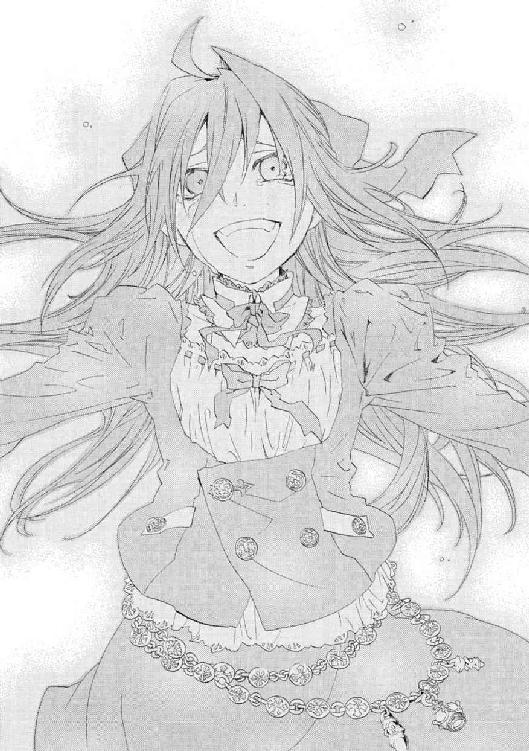
胸の激痛に倒れかけた彼女は、だが、崩れ落ちることも許されなかった。驟雨のように浴びせられた罵声が、また群衆の呼吸と同じリズムで、催眠状態のメイゼルに鼓動を打たせはじめたからだ。
極限の憎しみにあえがされていると、この聴衆なしで生きてゆけないと錯覚した。強すぎる憎悪は愛情に似ていた。
彼女は、生かされていた。メイゼルの震える唇が、小さな理性を吹き飛ばしてことばをつむいでいた。
「......もっと言いなさい」
スピーカーから漏れた熱っぽいささやきに、処刑の議場は耳を傾けた。静けさが、心臓を縮ませるようだった。彼女は、また彼女を生かす声が欲しくて、哀願をほとばしらせていた。
「心臓が気持ちいいの！ 血管が、しびれるみたいでたまらないの！ あんたたちに罵倒されて憎まれて、髪の毛の先まで全部気持ちいいの！ こんなはしたないこと、このあたしがおねがいしてるのよ」
洗われたように涙が目からあふれた。こんなにも気持ちのよい涙を流したのは、うまれてはじめてだった。
メイゼル・アリューシャは確かにそのとき、世界の中心にいた。
人々の、視線に貫かれて、全身の甘いしびれにのけぞってしまいそうな体を、わしづかみにしておさえた。
「だから、あんたたちは、心の底からあたしを憎みなさい！ 憎んだだけ、このあたしが愛したげるわ!!」
生け贄の祭壇は、何十万、いや外にいる人間も合わせれば何百万、一千万にとどくかもしれない人間の怒号に揺れていた。
空気が震えていた。まるで、巨獣の腹の中に飲み込まれて、彼女の汗に蒸れた体が消化されてなくなってしまうような、圧倒的な感覚だった。立つ床がなくなったようだった。ただ人間がたくさんいるということが、全感覚を狂わせる麻薬だということを、彼女は知らなかった。
彼女は、わななく膝を押さえて、立っているのがやっとだった。力が入らないのに、体の奥から、後から後から熱がわき出して止まらなかった。息が出来なくて咳き込むと、つばが唇を覆った手に散った。
どうやったらこの暑さを鎮められるのか、メイゼルは知らなかった。
これ以上責められたら頭がおかしくなってしまいそうで、だからいろんなことを試したかった。怒れる群衆の一番敏感なところを、小悪魔はまさぐっていた。
「みんなの怒った顔、すっごくかわいいわ......。ごほうびに、あたしが愛したげる......」
死ねと十万人が叫び、この売女を殺せと二十万人が石を投げた。何百という報道用の閃光が光った。三十万人がもはや意味を成す言葉ですらない怒号をあげた。
それは、理性も何もはぎとられた慟哭と怒りだ。もはや、会堂を取り巻く者は暴徒だった。
嵐よりはげしい投石の雪崩をはじく《雷神》の防御魔術が、悲鳴をあげていた。
「観客席から舞台に入るな！ 神前裁判である!! 動いてはならん！」
神前での暴挙をいさめる電磁騎士団たちの声も、大舞台になだれ込もうとする聴衆の耳に入らない。
「もっと、よく、見て。ここにいるあたしを呪うの！ あたしが生きてる限り、お母さまの戦いは終わらないのよ。あたしの心臓を止めるくらい、憎みなさい！ まだ......はぁ......こんなじゃ、まだ足りないの」
切なくこいねがうように、少女は、観客席という人の津波を挑発する。足踏みが神判の会堂を揺らし、しぶきが飛ぶように稲妻や魔術が飛びはじめた。
「......もっとあたしを憎むのよ！ でないと、あたし、......あんたたちのこと、一番しあわせなときにつかまえて、監禁して、生きているのも嫌になるくらい責めぬくわ！ あんたたちの子どもを、あたしみたいに堕落させるの。あんたが一番大事にしてるものをムチャクチャに壊したげる。心にぽっかり穴をあけて、そこにあたしの姿を、声を、匂いを、足で踏んでぎゅうぎゅう詰めこむの！ イヤだって言っても、泣いても頼んでも止めたげないわ!! あんたたちは、寝ているときも、覚めているときも、あたしを思いだして毎日すすり泣くようになるの。ステキでしょう？」
淫蕩にとろけた瞳は、注ぎ込まれる激情に洗われて、焦点を定められなかった。体の裏側からわきあがるものに耐える。下唇を嚙み、潤んだ目を彼女を押さえつけ翻弄する悪意のうねりに向ける。
地響きだった。
押し寄せる、空気の震動だった。
人間が集まっただけで、何十万人のそろった息は風になる。息が止まれば風が止まる。メイゼルなど、その前の砂埃も当然だ。だが、それは、背徳の快楽に震える砂埃だった。
「......そうよ。あたしを憎みなさい！ もっとはげしく！ あたしほど、しあわせな女はいないって思い知らせるくらい!! あたしを見て！ もっとしっかりあたしを焼きつけて!! あたし、あたし！ 愛してるわ」
体の支えをさがして彼女自身の肩を抱き、なんどもやわらかい爪で肌を引っ搔いた。
世界中から声を浴びていた。激しい刺激が、脳から汁を搾り出すようだった。歯を食いしばって、刺激の強さを誤認した快楽に耐えた。激情をたたきつけられる渦の中心でもみくちゃにされて、あどけない少女は、世界一しあわせだと錯覚した。随喜の涙を止められなかった。
「......ごめんなさい。お母さん。......今だけ、......今だけだから。............もういい、......もう、今だけ......あたし──────もうどうなってもいい」
メイゼルは、まるで赤ん坊に戻ったように、泣いていた。
純粋な涙だった。
人間を、世界を、全身で愛していた。
生まれ落ちたばかりの赤ん坊のように、全身を体液まみれにして、彼女が祭壇にへたり込んだ。
《雷神》に無理やり身を引き起こされるまでもなかった。魔女が、震える足を踏ん張って立ち上がっていた。
そして、ちいさな拳で目元をぬぐったとき、彼女はもう生まれ直したように、堂々と誇り高き〝魔法使い〟だった。
「あたしは必ず《地獄》から這いあがるわ。《悪鬼》の軍勢を連れてきたげる......。すべての奇蹟を焼き尽くす《地獄》の炎で、この世界を焼き払ったげる。五年か十年か、そのときまで、せいぜいお母さまに与えられた力を磨いておくことね！」
呪いながら、彼女の声は高く大きく張り上がり、勢いを増していった。
「ドキドキするでしょう？ あんたたちは、奇蹟も誇りも失って、永遠にあたしに踏まれつづけるのよ！」
メイゼルの絶叫が、生け贄の祭壇から、女王の命のごとく神殿中に響き渡った。
もはや罪状認否も必要なかった。世界のあらゆる悪を押しつけられ、その全容疑をメイゼルは認めたのだ。
型どおりの、典礼に合ったかたくるしい判決の読み上げで、神判は終わった。
くだされたのは、この場の全員が確信したとおり、極刑だった。
彼女の最期を祝福するように、いつの間にか空をよぎっていた雲の間から陽光が差した。あどけない魔女は、長い夢から覚めたように、呆然と空を見上げた。そして、この世の至福の余韻に、一瞬、酔いしれた。天空の何者かとくちづけをかわしていたかのように、唇の端からひとすじよだれが垂れた。
そして、なかば惚けたまま、メイゼルは祭壇から観客席を見回した。
数十万の観客が、疲れ切って下を見、空を見あげ、お互いの顔を見合わせていた。そして、彼ら自身が、今、怒りに歪み、目には涙を流し、口は疲れて半開きの、とてつもなく下品な面をしていることを知った。
堕落の底の傍聴席と少女を見比べ、《雷神》が呆けたようにつぶやいた。
「......なんだこれは。これが、神聖たるべき神判の光景か」
神殿を埋め尽くす大観衆は、精力をはなちつくし、息も絶え絶えだった。あまりの惨状に、いと高き座の判事たちすら、慄然としていた。
憎悪の渦の中ですべてがとろけたような、熱気の余韻がまだ体に残っていた。どろどろした澱を吐き出しきった、まるで祝祭のような人間の熱のうねりが、彼女たちを結びつけていた。
「あたしは、かならず、試練を乗り越えてみせるわ」
毅然と背を伸ばして、グラフェーラをにらんだ。黒い仮面が、まっすぐに彼女に向けられていた。グラフェーラには、彼女の狂態は、円環世界でイリーズの正当性を奪うために利用できるものだった。メイゼルと叔母は、イリーズをまったく別の角度から見ていた。
神判の極刑の罪人は、刻印魔導師と称される。
「刻印魔導師メイゼル・アリューシャを引き立てよ！」
晴れ晴れとした気分で、アリューシャ家の最後の姫君として、メイゼルは客席へと汗まみれのスカートをさばいて優雅に一礼した。
観客席からは、踊り子に向けるような下品な口笛がいくつも鳴った。
ちいさな魔女は、魔法すら使わず、世界に呪いをかけたのだ。もはや、客席の普通の魔法使いたちは、怠けることができない。イリーズは死んだが、メイゼルがいつか《地獄》から戻ってくると予告したからだ。そして、従来の〝魔法使い〟の論理では、行き着く果てはイリーズの《神》殺しだ。彼ら市民魔導師は、これから《地獄》より這いあがるメイゼルを迎え撃つため、新しい魔法技術を築き、力をつけ続けねばならない。民を謀り、世界を嘲笑い、《神》を殺した魔王イリーズの神話が、今日、人々の中で完成したのだ。
引き替えに、故郷にメイゼルの帰還を望むものはいなくなった。彼女は、新しい〝普通の魔法使いの世界〟にとって、いつか災厄をもたらす魔王の後継者になったからだ。
メイゼルは、生き残った奴隷魔導師のためのささやかな凱旋門から、舞台をおりた。
彼女の輝かしい時間はここまでだった。
細く薄暗い通廊に入ると、黒いフードをかぶった魔法使いたちが通路をふさいでいた。彼らが、《協会》から来た、刻印魔導師の刑の執行官だと知った。これから背中に刻印を刻まれ、奇蹟なき《地獄》へ追放されるのだと思うと、悲鳴をあげて逃げ出したかった。
天まで昇る心地を見たメイゼルが、不安と絶望に押しつぶされていた。先刻の愉悦すべてがまやかしだったようだった。十一歳のひよっこでしかない無力感がよみがえった。メイゼルは、母に、いっしょに戦うことも許してもらえず置いて行かれた、ただの子どもだった。
「さっきまでで、何もかも出し尽くして、枯れちゃったみたいだわ」
泣き出さずにいるだけで、精一杯だった。
我が身が、開ききってあとは捨てられるだけの花のようだった。急速に体が冷めて、濡れて貧相になったドレスの下で鳥肌が立った。彼女の人生は、すでに絶頂を通り過ぎているのだと、むなしくなった。
どうして彼女の横には、誰もいないのだろうと思った。誰かがそばにいてくれたら、どこまでも墜ちずに済むのにと恨んだ。
このときだけでも、ひとりになりたくなかった。今、手をやさしく握ってほしかった。ひとりはいやだった。こんなふうに死んでゆくのはイヤだった。なぐさめてほしかった。よくがんばったねと、ほめてほしかった。
けれど、そんな相手はいない。彼女の手はからっぽだ。背後を守ってくれていた《雷神》は、寂しさを埋める相手ではない。空っぽの手のまま、彼女は《地獄》へ追放される。彼女はひとりだ。憎まれるとは、つまりこういうことだった。
拳を握り、倒れそうな足で必死に立っていた。
《雷神》が、より深い闇へ歩き出す彼女に声をかけた。
「よくぞ、その幼い身で、魔法すら使わずあれほどのことを成し遂げた。そなたは、ほんのわずか歯車のめぐりがちがえば、稀代の女王として歴史に刻まれたかも知れぬ」
メイゼルは振り返り、それでもほほえんだ。
「おたがいに幸運だったのね。もし権力なんて持った後で、あんな悦びを覚えちゃったら、あたし、きっと止まらなかったわ」
奇蹟なき《地獄》で、これから彼女は死ぬまで刻印魔導師として戦い続ける。彼女が選んだ悪役の末路だった。身から可能性と希望を切り離されたことが、寂しくてたまらなかった。
だが、《地獄》でひとり死ぬのだと覚悟を決めると、彼女にとっての〝魔法使いを貫くこと〟がはっきり見えた。だから、晴れがましく心の底から笑えた。
「──だって、あたし、ただ憎しみを浴びたくて、この世界を滅ぼしたかもしれないのよ」
メイゼルは、つらいことの多い思い出を、どのくらいの時間話していたかわからなかった。
彼女が知っている範囲しか伝えられなかったから、虫食いが山ほどあった。話のつながりが怪しい部分もあったはずだった。それでも、思いつくことやこころによみがえったものごとを、片っ端からことばにした。
かつて神判のとき、彼女は、生け贄の祭壇から勢いに吞まれた聴衆を見た。語り終えた彼女が一礼したとき、この会議の席も、議論を続ける空気ではなくなっていた。
拍手が起こった。《鬼火衆》の刻印魔導師たちだった。
会議の参加者である高位魔導師たちは、眼光鋭く、あるいは瞑目して、それぞれ沈黙の時間を持っていた。メイゼルの母について、魔法使いなら、何も感じないということはあり得ないからだ。
魔法使いではない清水健太郎が、基本的だが重要なことを指摘した。
「ところで、彼女の話の中には、《九位》の名が、出てきていないようだが」
清水も推測はついている様子だった。メイゼルの要点がしぼれない話を、簡単にまとめてくれたのは、《導師》アリーセだった。
「メイゼル・アリューシャの物語の中に《九位》の名がない以上、可能性はひとつですよ。イリーズを斃した生き残りが最高位魔導師になるはずですから、グラフェーラ・トリアが〝彼女〟です。そして、今から一年以内だったはずの神判のとき、グラフェーラはまだ《九位》を名乗っていません。五年前に核施設を作った魔法使いもグラフェーラである可能性は、充分です。十三年間の時間凍結を、彼女ひとりが免れて、この世界に漂着したのでしょう」
「そんなことが起こったと言える、根拠でもあるのかね」
清水の問いを、《導師》アリーセは「今は勘弁ねがいます」と流した。
「円環世界と十年以上交通が途絶していたことは知っていましたが、本当に時間凍結とは。当事者のことばだと、いっそうひどいですね。《神》殺しと、《神》の再降臨については、あなたの記憶にきちんとあることですか。記憶が混乱したと聞いていますが」
「覚えてなんかないわ。自分やほかの魔法使いが何をしてたのか、誰もわからないの。ただ、円環世界全体の時間が止まる理由が、ほかにないわ。そのとき、円環世界には円環大系以外の魔法使いもいたのに、全員が止まったのよ。反対に、円環世界が時間停止してる間も、外にいた円環魔導師は活動できたんでしょ」
メイゼルには、もしも母が生きていたら、嬉々としてこの状況を研究していたと思えた。グラフェーラが凍結に巻き込まれなかった理由も、天才だった母なら、簡単に解き明かせたにちがいなかった。
混沌大系の最高位魔導師であるアリーセにも、納得がいった様子だった。
「間違いなく、その世界が螺旋だったことが、《三十六宮》中で、円環大系が紅宮九位に落ちた理由です。《三十六宮》世界で、基本法則の間違いが発見されるなんて、前代未聞です」
母は、結局、世界の変化が〝神の取り分〟などではなく、自然自体に織り込まれていたのだと証明した。イリーズは勝ったのだ。
質問はそれ以上来なかった。だから、ようやく彼女は席に腰を下ろした。今さら、太ももに震えがきて止まらなくなった。
疲れ切って、水差しや書類を置くちいさな机に長い髪が垂れるほど、うなだれた。後ろのほうで、清水健太郎が、これからの会議の進行について話をしているようだった。
メイゼルは気分が悪くなってきて荒い息をついた。こころの傷に触れていたせいか、よほど緊張していたからか、胃のあたりが痙攣した。
「だいじょうぶか。つらくないか」
彼女のちいさな肩に、大きな手のぬくもりが、やさしく置かれた。その声を聞き間違えるはずがなかった。
「せんせ、手、にぎっていい？」
噓みたいに、メイゼルの緊張しすぎた体が、ぽかぽかあたたかくなってきた。
今もちいさいままの手をのばした。あたりまえのように、仁が彼女の手を取ってくれた。
刻印を背負った理由を、ついに彼女の先生に話した。どう思われたか知りたくて、表情をうかがおうとした。目が合った。気苦労の多そうな仁が、心配そうな顔をしていた。
「せんせは、あたしがこの世界にやってきて、うれしい？」
「うれしいっていうか、刻印魔導師には、さすがにならないほうがいいだろ」
彼女のしあわせのことばかり考えてくれていた。彼女は、地獄に来たころ、かたくなだった。本当は、生き残る望みをつかむより、恥ずかしくなく死ぬことばかり考えていた。
だから、この世界で仁にはじめて出会ったとき、メイゼルは、魂胆があるのだと疑った。政治的な理由や、円環世界のことを知りたかったりするのだと思った。
「でもな、おまえには悪いけど、俺はおまえのお母さんに怒ってるんだ。自分の子どもを巻き込まない方法とか、有力者なら何かあったんじゃないのか」
仁の目当ては、メイゼル自身だけだった。この人には、本当に、メイゼルが無事でしあわせであることが一番の目的だった。
愛情を感じた。彼がこの世界にいるから、もう寂しくなかった。
あのころとはちがう温度の涙が目に浮かびそうになった。
彼が、メイゼルにやさしい視線を注いでくれた。体の奥から、力がわいてきた。けれど、熱に浮かされたみたいに、頭にはしあわせな夢ばかり浮かんでくるのだ。
「せんせ」
声をかけた。目が合った。
おとなの彼が、彼女にまだ言い足りないことがあるのを察して、待ってくれていた。
「......もう、いいの。知りたかったこと、ことばでなくても、ぜんぶわかっちゃった」
意地を張ってしまうメイゼルのちいさな手を、彼がとってくれる。彼は、いつでも彼女の味方でいてくれる。
だから、この手がほしくてたまらなかった。彼女は、円環世界をおびやかすために戦い続け、いつか故郷に還らねばならないはずだった。なのに、この世界に根付いて、ここで生きたいと願ってしまう。
くすぐったくて、頰がどうしてもゆるんでしまった。手が、勝手に彼をつかまえて離れられない。息ができなかった。
これが、スキだということだと思った。
恋をしていた。
†
仁は、メイゼルの話を聞いて、彼女のそばに行ってやらずにいられなかった。
ひとりにしておくことができなかった。
興奮に汗ばんだメイゼルが手を伸ばしてきた。いつものように、仁がその手をとった。メイゼルとの間に、信頼を感じた。
「せんせ、あたしのこと、わかった？」
ちいさな魔女は、いつも、彼に覚悟を問う。
彼にとっては、何よりも重要な事実がわかった。刻印魔導師の百人討伐を果たしたとしても、円環世界に彼女の味方はいない。それどころか、世界中が敵である以上、袋だたきにあう。
「わかった。......俺は、やっぱり今のまま戦い続けないほうがいいと思う。せめて、魔法世界に帰ったとき、いっしょに戦う仲間がいる足場をつくらなきゃ、向こうでも勝ち目のない戦いをするだけだ。それは絶対に賛成できない」
「いいこと思いついたわ。あたしがせんせのこと拉致したら、ぜんぶ解決じゃない。せんせは、円環世界であたしをひとりで戦わせなくてすむし、あたしもしあわせよ」
少女が、あどけない目元を紅潮させて彼を見上げた。仁と彼女の認識にはズレがあって、ささいなことで会話が断層に転落する。
「どうしてそうなるんだ。俺は、おまえに、普通にしあわせになってほしいだけなんだ。いや、拉致は普通のしあわせじゃないから、目をキラキラさせなくていい......」
ここには連れて来られなかった舞花のことが、脳裏にちらついた。人と人とのつながりの輪が、しあわせなのだと思った。それが、仁たちの勝ち取ってきたものだった。そして、この半年でのメイゼルの一番おおきな成長もそれだった。
「ねえ、あたしが、この世界に来てさびしくて、『この世界は本当に《地獄》だ』って思ってたとき、あたしの手を取ってくれたのは、せんせだったのよ」
きゅっと、つないだままの右手の指に力がこもった。メイゼルの、人のぬくもりを求める手を、仁は決して見捨てない。
「家に帰ろう」
正装ではなく軽めで動きやすいドレスを選んだメイゼルが、安心したように彼の腕に頭をもたせかけた。このぬくもりが、たぶん仁が勝ち得た報酬だった。
会議は、一時間の休会をはさむことになった。
メイゼルの話で、この先、何を決めるにも整理が必要な空気になったからだ。
彼女の話が正確であれば、円環世界の時間凍結が解けてから、一年も経っていないことになる。《九位》が《三十六宮》の座についたのは、さらにそれ以降でしかない。だから、かなりの割合の参加者にとって、仁と同じく話自体が初耳だった。
立場上、情報を集めていたはずの《連合》のアリーセすら、メイゼルの話が進むと顔つきが厳しくなった。
だから、議長役の清水が会議の一時中断を提案したとき、異論はあがらなかった。
会議のスケジュールに、休憩時間は最初から組み入れられていた。だから、その間に相談や相互の意見交換をする場所も警察は用意していた。
空席だらけの会議場の隣に、議場の半分の大きさで休憩場はもうけられた。高さ二メートルほどの仕切り板を何百枚と立て、カーテンをかけて、大小のブースが百個以上も作られていた。会議には、おたがい政治的な敵対関係にある者も区別なく呼ばれた。そうした者がムダに顔をつきあわせてもめることを避けるための配慮だ。
仁は、外の喧噪が聞こえる四畳半ほどのブースで、メイゼルを休ませてやっていた。
「のどはかわいてないか？ 今日は、施設内の店舗は休みだけど、飲み物なら自動販売機で買ってこられるぞ」
「いいわ。やすんでたいけど、せんせといっしょにいたいの」
いつもより少女が気持ちを素直に出した。仁は、親密さに息を吞んだ。魔法使いたちが暗闇を望んだため、会場の強力な天井照明は使われなかった。スタンドのみの明かりのブースで、メイゼルの滑らかな頰に浮かんだ汗が、淡い光をほのかに照り返していた。
「そっか。......つらいことなのに、話してくれてありがとうな」
「お礼なんて言わないで。もっと早く言ってなくちゃいけなかったのよ」
少女は、緊張がほぐれた、きっと意図した以上に隙だらけな顔になっていた。その、目元のだらしなさに照れて、仁は背中がむずむずしてきた。
「十崎事務官には話してくれてたんだろ。だったらいいんだよ。話し終わって、お互いこんなふうでいられるなら、今日が一番よかったんだ」
パイプ椅子に体を折るように座ったメイゼルが、猫がのびをするように背中を伸ばした。肋骨の華奢なシルエットが浮き出そうなきれいなカーブを、少女の脇腹が作った。
「せんせ、ちょっと、キョリが近づいた気がするわ」
目が合うと、少女が細い肩をすくめて、やわらかな頰をにんまり笑わせた。
この少女がぶちまけた《神殺し》という事実は、参列者に大きな衝撃を与えた。これと、アリーセの再演大系への非難の両方を一度に聞いて、参列者の半分は困惑していた。残りは、好奇心に目をぎらつかせる者と関わり合いになりたくなさそうな者が半々だ。浅利ケイツなど、露骨にもう帰りたそうだった。今、この国が、何かの爆心地になろうとしていた。
ブースの仕切りのカーテンを手でよけて、《笑い顔》虎坂井レイが通路側から覗き込んでいた。
「大将、......いや、姐さんと取り込み中でしたか」
「取り込み中じゃない。俺ももう警備に戻るよ」
《鬼火衆》も、入れ替わりメイゼルの様子を見に来たが、長居はしなかった。警備スタッフには今が正念場だからだ。参加者が休憩スペースなどを自由に動き回れるせいで、警備も監視も手間が数倍になっているのだ。
「気をつけろ。襲撃が考えられる以上、内応者もここに混じってるぞ」
東展示場の第三ホールをまるごと使った、一辺約九十メートル四方もある休憩場の、人口密度は低い。足音と耳慣れない魔法世界のことばが、仁たちのブースのすぐ外から聞こえた。外からの敵を手引きする内応者がいるなら、この休憩時間は、暗殺にもうってつけのタイミングだった。ホール内に百個以上作ったブース内は、どこも手軽な密室なのだ。
「魔法勢力は、ちっさいとこでも自前で護衛を連れてきてますし、目は届きやせんよ。連中、警備だって言ってるのに、まったく協力しませんし、面倒みきれません」
虎坂井の微妙なだらけを、仁は叱咤した。
「護衛同士で私闘がはじまったらコトだろ。気合い入れろ。俺たちにも正念場だぞ」
旗揚げをしたばかりの仁たちにとって、注目を受けている初舞台なのだ。雇い主のアリーセは何かをしろとは言わない。だが、頼りにならないと侮られては、見捨てられる。味方のいない小規模集団はジリ貧に陥る。いずれは踏み潰されるか、使い潰されるかが末路だ。
「あたしも、お仕事手伝うわ」
メイゼルが勢いをつけて、椅子から立ち上がった。
「もう、あたしに会議でやることなんてないもの」
「ここで待ってるよりも、そのほうが危なくないかもな」
刻印を背負った理由を聞いたからこそ、メイゼルを残してゆくのが不安だった。
仁は、自分たちの戦う目的を考える。もしも、本当にここに襲撃が来たら、仁たちは何を守るか選択しなければならなかった。
実際、この広いホールに区切られた個室ブースのどれかに、きずなもいるはずだった。突然、アリーセに非難されて、どれほど不安だろうと思った。
会議を振り出しに戻したメイゼルが、開き直った前向きさで、表情を輝かせた。
「せんせ、ここ、すぐそこが海なんでしょ。お仕事おわったら、みんなへのごほうびに、いっしょに遊びに行くといいと思うの」
「いいですね。姐さんも大将も、会議が終わったら、ぼくらと海を見に行きますか」
「勝手に決めるなよ。っていうか、おまえらそんな計画立ててたのか」
仁は、みんなで行けたらいいと思った。舞花のことも、どこかへ遊びに連れて行ってやりたかった。きずなを誘ったらどうだろうと夢想した。
十崎京香たち《公館》にとって、勝負すべき相手は、まず時間だった。
主催者として特別広めにとったブースに、京香たちは集まっていた。
この会議には、はっきりした目的があった。《協会》が持つ核爆弾を封じるための協力体制を作ることだ。
東京で、《協会》との核戦争が行われることだけは、避けねばならなかったのだ。
だが、会議は、混乱して行く末が見えなくなった。アリーセによる再演大系陰謀説が問題だった。
「アリーセ・バンシュタインの目的を把握するには、現状では情報不足です。ですが、ひとつはっきりしているのは、彼女は、戦場を東京にしようとしているということです」
《公館》嘱託の魔法学者である溝呂木京也は、政治の話に加わることを好まない。だが、彼の意見は信頼できた。
「当然だな。核戦争の舞台が極東の島国であるうちは、ヨーロッパ圏が根城の《連合》は安全だからな」
公安幹部である清水健太郎が、休憩場に入るなり水を飲み出して止まらなかった。議事進行役が、よほど神経に負担だったか、薬を飲んでようやく落ち着いた様子だった。
今日の会議は、警察庁の職域ではなかった。魔法使いがらみでさえなければ、内閣と外務省にまかせるべき事案だった。清水が、京香に専門意見を求めた。
「ベルニッチ調整官たち《協会》の非主流派は、現状でも揺れていないと考えてよいかね」
「間違いないでしょう。非主流派は、《九位》を追い落とさないと未来がありません。核計画を叩き潰し、核に対する問責を行うことによって、《協会》内部での勢力をまずは削いでおきたいようです。そうやって孤立させなければ、実力で打ち倒しようがないほど、《九位》は強いのでしょう」
「メイゼル君の母親がもしも生きていてくれたなら、もっと簡単だったろうがね」
十崎京香のイリーズに対する評価は、はっきりしていた。
「問題外です。人間の常識が通じない超高位魔導師は、ただの災厄です。イリーズがもし敵に回ったときは、核爆弾が、駆け引きなしで爆発するということですよ」
イリーズは、数億人規模の被害が出ると承知で、警告なく《神》を破壊している。京香に言わせれば、それはもはや人間の精神ではない。
会議の状況を整理して並べてゆくごとに、清水の目元は厳しくなり、口元は固く引き結ばれた。
「アリーセ・バンシュタインという《連合》の魔法使いは、どの程度信頼できるかね」
京香は、寿司屋で話したとき、目の前で仁たちに依頼をした様子を思い出していた。
「元専任係官の武原仁を警備としてアリーセが私費で雇ったのも、メッセージだと考えるべきでしょう。わざわざ我々が雇ってもおかしくない素性の元《公館》スタッフを選んで警察の指揮下につけたわけですから、あれは一種のこの会議に対する資金提供ですよ。ただ、彼女が敵に回るかは、現状ではわかりません。なので、《公館》での経験から感じる、私見でもよろしいでしょうか」
「十分だ。話してくれ」
「アリーセのような長寿の魔法使いは、人格の一貫性を維持するために、非常に強い個性を持っていることが普通です。それにくらべて、彼女は、表情や仕草にこそ違和感がありますが、言動が〝普通すぎる〟のです」
彼女はアリーセに要所では圧力を感じたが、際だった個性は感じなかった。だが、《連合》独立戦争とヨーロッパ近代に立ち会った経験と戦績を考えれば、むしろ倫理観が人間離れしていたほうがしっくりくる人物なのだ。
「彼女の言うことは、あまりにも至極まっとうです。アリーセは正気を失っているとも言われていますが、ことばは理にかなっています。......まるで、動機や目的そのものが、正気ではない人格から離れてことばをしゃべっているようです」
清水が、深いしわをいくつも刻んだ額の汗をぬぐった。
「性質は異常だが、目的が合致している間は協力可能だということか。ちょっと待った。これはずいぶんひどい話だぞ。五百年も生きている超人のこころなど、我々、常人がどう読み取ればいい」
京香たちの仕事は、その超人たちを、国家を守るためならば殺すことだ。
「アリーセが敢えて来てくれたこと自体が、外交的なメッセージでしょう。ひとりで首脳がやってきた以上、日本との話し合いを重要視しているのは間違いありません」
魔法学者溝呂木は、交渉ごとには興味がない人間だから、呆れたように眉をひそめた。
「それなら、会議でも衝突して見せることはあるまいに」
「ことばはことばです。ですが、ここに来た事実も、また事実です。溝呂木さんも、女性のことばを一部分しか読み取らない人ですか？」
京香や魔法使いたちへ、アリーセは再演大系と倉本きずなに気をつけろとメッセージを送ったのだ。
清水が、結婚二十年の余裕をこめて、他人事のように論評した。
「女の中では、気持ちがいつでも二本同時に動いているものさ」
京香は、立場上、「お見事です」と合わせておいた。彼女の気づかいに反して、男性陣の空気が微妙になった。
彼女は、飽和してしまった時間を持て余して、腕時計を確認した。時間が勝負だった。
事前から予想はしていたことながら、この会議が襲撃されることを今では確信していた。水入りになるまでに、問題は《九位》と核爆弾だという印象をつけたかった。
「清水さん。やっぱり、今からでも、休憩は三十分に短縮できませんか」
京香は、額に拳を押し当てた。参加者たちに、考える時間を与えすぎてしまったように思った。
「魔法使い側からの要望で人数をしぼったとはいえ、機動隊を五百人も投入して警備を行っている。国際展示場は、東京湾岸の観光スポットにも近い。これまでの例なら、ここに日中に襲撃が行われるとは思えないが」
「ですが、先ほども申しましたが、浅利ケイツの動きが......」
《公館》とワイズマン警備調査会社のつなぎ役であるケイツが、会議に参加していること自体はおかしくない。だが、臆病なケイツが平静で、周囲を見下している様子ですらあることが気になった。会場で何が起こるかワイズマンから情報が入っていて、そのうえで自分は安泰だと知っているか、あるいはそう思いこまされているかのいずれかだ。
「すこし落ち着きたまえ、十崎君。武原君たちも警備についている。我々が浮き足立っては、かえってことをし損じるぞ」
京香は、神和瑞希に締め上げさせるか、本気で考えた。それは悪手だと考え直した。やれば、日本はワイズマンと決裂することなる。そこまでしてケイツが正確な情報を知らなかったら、目も当てられない。
「政治の話が終わったのだろう。時間があるなら、魔法の話を考えておくべきだな」
インスタントのコーヒーをすすりながら、溝呂木が話し出した。
鴉木メイゼルの話は、会場の魔法使いたちの空気を変えた。だが、それの持つ意味が、作戦指揮者でしかない京香には、正確にはわからなかった。
「鴉木メイゼルが、円環世界のことを話していたアレですか」
「アリーセ・バンシュタインのものもおもしろかったが、《神殺し》はなかなかだったな。十崎君ごのみの方向でなら、あれは、魔法使いたちの限界を露呈している」
京香は、紙コップに、ポットのコーヒーを注いだ。彼女自身も、すこしでも休憩しておこうと思った。コーヒーの香りに癒されながら、甘いものも用意しておけばよかったと後悔した。
科学者として確実に異端にはいる溝呂木が、言い切った。
「思考の限界だな。《神》を殺すと言われたグラフェーラや他の超高位魔導師が、全員それに即座に反対した。これは、研究者である以上、反対の決定は、検討したうえで出すべきだった。《神》がいなくなった世界はどうなるかというシミュレーションが、イリーズを止める決定の前に行われていないのは、科学的ではない」
京香はどうだろうと思ったが、ことばにはしなかった。
溝呂木は、話しはじめると彼女の反応など気にもとめなくなる。
「魔法使いは、《神》を頂点にいただくことで、力の正義を貫き通している。これが思考の基盤だから、《神》に対峙することはできるが、それを超えることはできない。つまり、魔法使いの思考モデルには、《神》を超えた後のビジョンがないのだ。クレペンスたちが、イリーズを受け容れられなかったのは、彼らの思考の枠外に出るためだ」
「土台になる論理に欠格があるから、先に進めなかったということですか」
「魔法使いがこの世界に来るのは、思考しなくても実験さえすれば正確な答えが出るためかもしれんな。出てしまった実験結果は、《神》に縛られない。超高位魔導師ですら《神》の先をイメージできんのだよ。円環世界は、だから、古典的な世界観を乗り越えた天才を、戦争によって葬り去った。バカバカしい話だ。娘などではなく、イリーズ本人にこの会議に出て欲しかったものだ」
円環大系は、告発者を排除しなければ、《神》に支えられた秩序を維持できなかった。そして、メイゼルを追放しなければならなかった。
確かに、社会のゆがみが如実に現れていた。だが、京香が直面しているのは、失墜した社会的権威を取り戻すため大量生産された、《九位》の核爆弾だ。溝呂木の指摘は、長期的な課題で、速効性が期待できなかった。
「魔法世界の総合としての〝魔法世界をつなぐ秩序〟があるように思えてならんな。《神》を殺した以上、《螺旋の化身》は、秩序自体を破壊できる魔法なのだろう。だが、〝破壊後の円環秩序〟は、円環秩序の範疇では記述できない。これは矛盾だと思わないかね。......円環秩序が崩壊した後、外部にいた《九位》は魔法を使えた。でなければ、核施設を自力で建設できないからな。つまり、〝魔法秩序が破壊された状況〟を補った、よりおおきな秩序が存在することを示している」
溝呂木の話が長くなりそうで、京香はもう一度時計を確かめた。まだ三十分以上、会議再開まで時間があった。
「神和係官は、倉本きずなといっしょでしたか」
†
《導師》アリーセ・バンシュタインは、そのとき、通路として開けられた空間にいた。彼女の前には、カーテンで区切られたブースがあった。
照明が不十分なせいで、まるで夜の祭りのようだった。あたりには、《地獄》の各地に根ざした魔法使いが思い思いに行き交い、立ち話をしていた。日本政府が考えたほど、彼女たちは密室を好まなかったのだ。だが、アリーセがにらむ白い布の仕切りの前は、魔法使いが近づかない空白地帯だ。
彼女にも、気持ちのよいものではなかった。だが、《連合》を見舞っているトラブルと、倉本きずなが関係しているか、知らねばならなかった。
「今度こそ《唯一魔導師》が現れたのか、確かめておきたいですが......」
混沌大系の魔法使いは、ものとものとの間のつながりや関係に魔力を見いだす。世界中のあらゆるものはつながっている。だから、アリーセの世界は、繊細なレース編みのリボンのように観測できる魔力に満ちている。
少女のかたちをした〝それ〟は、空中を伝う純白のリボンをつかんだ。倉本きずなが呼吸した空気を、掌握したのだ。
「でも、本物なら、正直、逃げちゃってもいい......、ですかね」
最高位魔導師であるアリーセを、〝恐怖〟がためらわせた。会場へ清水と十崎京香という《悪鬼》を入れたのも、再演魔導師への安全装置としてだ。だが、それでもアリーセをここに導いたものも、〝恐怖〟なのだ。
だが、そのとき魔力のリボンがほどけた。
目の前に、整いすぎた白い顔が現れた。魔導師公館の《魔獣使い》神和瑞希が、彼女の接近を察知したのだ。
「......おまえ......きずな......近づく...な」
常に再演魔導師に寄り添う混沌要因が、この世代でも、やはり呪われた魔法使いを守っていた。
彼女は、どこまでも続く因縁の鎖を前に、嘆息した。
「あなたたち《魔獣使い》は、どこまで呪われた旅につきあうのですか」
衝撃が、天井の高い巨大なホールを揺らしたのは、そのときだった。
†
轟音に最初に反応したのは、広大な休憩スペースを出て、トイレがある回廊側に出ていた人々だった。
地面が弾んだ。地震が多い東京でも、はっきりと異常だとわかる揺れだった。
大気のうねりが、回廊の広大な空間で複雑な反響を作り、出所のわからない吠え声を作った。そして同時に、破壊された魔法が光のかたちで放散する《魔炎》がホール内に押し寄せた。それは、音の源になる〝何か〟が魔法で作られたということだった。
「回廊にいるものは、休憩場に入れ！」
仁は警告の叫びをあげた。明るい日中の回廊から暗く広大なホール内に魔炎が吹き込んで、一瞬、周囲が黄金色に照らされた。
「個々の勢力は、自分の護衛対象のもとに結集し、防御のみを行え。敵を見ても、攻撃せず防御だけに専念しろ！ 同士討ちになるぞ!!」
会議の参加者は、魔法使いたちには過酷なこの世界で生き残ってきた者たちでもある。行動は速かった。
設備の整った展示場とはいえ、魔法使い側の要望で最低限度しかそれは使われていない。だだっ広いだけの空間は、警察にはひどく警備の難しい場所だ。そもそも、魔法を破壊してしまう《悪鬼》だから、魔法使いを守るために近づけないのだ。
仁は、警備スタッフが持たされていた無線機を腰のホルダーから抜いて怒鳴った。
「襲撃だ！ 魔法使いが来ている。規模は現在不明！ ホール内で魔炎を観測。施設内にもう入り込んでいる勢力がいるぞ！」
無線は、警察がホール外側の駐車場に停車した指揮車両に繫がっている。警察側の警備責任者から、無線機越しでくぐもった声の指示が来た。
〈希望者には、ドアを通らせろ。指揮車両があるＡ‐１ドア付近には、機動隊が待機している。Ａ‐１ドアより機動隊丸山班、塩田班が退避用バスまで誘導する。我々の保護を求めたもの以外は、Ａ‐４ないしＡ‐５ドアを使って外部に出させてくれ〉
「武原、了解」
警察側は、いつもと勝手がちがう異世界人の警護に緊張していた。ただ、事前から、魔法を捨てて警察に頼る高位魔導師はいないと考えられてはいた。しかも、《九位》の手の者による襲撃なら、敵は円環魔導師の可能性が高い。悪いことに、円環大系は魔法消去に強い。
続報が入った。
〈十崎事務官、清水副局長、神和係官の先導で東六ホール側に移動開始しました〉
襲撃があった場合、京香たちは、参加者たちの防御魔術を破壊しないようすみやかに移動することになっていた。
「武原、第三ホール内で警備中。これより、無線機から観測されての魔法消去を避けるよう、警備態勢を移行する。これより、緊急時以外の連絡は、本部ではなく本部付きの狩猟魔導師へする」
〈司令部、了解〉
無線を切ると、魔法使いたちがともした魔法照明で、あたりはほの明るかった。
仁のよく知る〝魔法使いの戦場〟が戻ってきた。
風に乗って、耳元にささやき声が届いた。《鬼火衆》は、無線機ではなく魔法で情報を伝える手はずだった。
〈大将。東一ホール側から外側を回ってますが、魔炎、観測できません〉
危険な外回りを引き受けた虎坂井レイだった。虎坂井の精霊大系は、自分と他者の区別が曖昧な世界で発達した魔法だ。声が伝わっている状態の大気を、〝自分〟と区別を曖昧にして疑似生命を与えて精霊化し、仁の耳元まで飛ばせたのだ。
「休憩場所の封鎖は完了した。昼間だから、展示場が外からの魔法砲撃一発でぶち抜かれることはないはずだ。外回りの監視、引き続き頼む」
仁の指示した声を吸い込んで、半透明のちいさな鬼の生首のように見える〝精霊〟が飛び去った。
参加者の人数が、見える範囲でも明らかに減っていた。会議に見切りをつけて、魔法的転移でさっさと逃走したのだ。
《鬼火衆》のひとり、全身に五色の精緻な入れ墨をほどこした《黒鯨》マランキシュが、太い腕を仁へ向けて振った。
「親分ー、外周側から外への誘導を開始したけど、やっぱ、魔法使いに保護希望者がいねっすー」
嫌な予感がした。会議前半からの一時休憩のタイミングで、襲撃がはじまった。それは、対立の図式ばかりが明確になった会議の進行をみて行われた可能性があった。
参加者が、先行きが不透明な話し合いを見捨てて襲撃者を手引きしたなら、政治的には厳しい結果だった。冷酷に判断すれば、会議の序盤はそれほどまとまりがなかった。
《鬼火衆》の、戦闘がはじまれば仁のところに駆けつけることになっていた丸刈りの男が、太りすぎた体をよろつかせて仁のところへたどりついた。
「親分、お役目ご苦労っス。銃を使ってくだせえ」
《金庫室》ペンローズが、頭頂から腹部の皮膚へ縫い込んだファスナーを一気に引きおろした。べろり、と男の肌が張力に引っ張られて隙間が開き、間に〝裂け目〟が覗いた。仁は、ためらいなくそこに右腕を突っ込む。彼の手は、本来なら内臓があるべき場所に空洞を感じた。
仁の指が、金属質の手応えを探り当てる。引きずり出すと、銃弾が施設壁面に与える損傷を考えて選択された、短機関銃だった。《金庫室》ペンローズは、皮膚の内側に〝裂け目〟を作って、そこにあらゆるものを保管する魔導師だ。
魔法使いにとっては、こそ泥の〝どうということのない魔法〟だ。だが、「《沈黙》武原仁に持ち運びにくい銃器をわたすこともできる」というその一点で、この《地獄》では破滅的な力になる。
「助かったよ。この状況で、拳銃じゃ、こころもとなかった」
ペンローズが、彼のために〝裂け目〟に手を突っ込んで予備弾倉を取ってくれた。続いて、神人遺物の《剣》を、引きずり出した。
仁のそばにいたメイゼルが、微妙にうらやましそうだった。
「せんせ、それ、すっごく便利よね。ランドセルも背負わなくていいし」
「俺、姐さんのお役に立つッス」
「ランドセルをもってくかわりに、ガッコウにこの子連れてっていい？」
仁は、弾倉を装塡し、銃の動作を確認しながら、呼吸を整えた。メイゼルの明るさに救われた気がした。
「それは却下だ」
魔法の不安定な照明しかない休憩スペースは、銃を撃ちまくれば会議の参加者を誤射してしまいそうなほど暗かった。カーテンや仕切り板のせいで、見通しも悪かった。
「せんせ、あたしの魔法で、ここの人たち、安全そうなところまで運んであげよっか？」
「今のままでいい。魔法使いをここの密閉環境に集めて、防御魔術を張ってもらうのが、最初からの手はずなんだ。俺たちの世界の機動隊が、建物の外を囲んで、守ってくれてる」
ホールの建物を囲む一番外の層は、機動隊による魔法消去という壁。その奥には、建造物自体という壁がある。この二つの組み合わせは、外部から魔法で建築をぶち抜こうとすると、魔法消去が砲撃魔術を壊してしまうから、昼間は無類の強さを誇る。そしてこの第三ホールの休憩場内部では、個々人が防御魔術で自衛している。ここは、すでに魔法攻撃に対して三重の防壁をもつ要塞なのだ。
「それでも、内側に、敵を抱えてるとキツイんだけどな」
問題は、内なる敵が確実に〝いる〟ということだ。仁には、雇い主のアリーセからして、何を考えているのかわからなかった。
ブースの内側を照らしていた弱い電灯のあかりは、灯籠のように今も点り続けていた。魔法の照明が多少増えても、暗いことに変わりはない。
仁は、まったく音沙汰がないきずなが何をしているのか、心配になってきた。だだっ広いホール内はざわついているのに、彼女の姿も見ていなければ声も聞こえないからだ。
「メイゼル、きずなちゃんに連絡とれるか」
仁が、携帯電話をかければよいだけのことをメイゼルに頼んだのは、話すのがこわかったからではない。
最初の揺れを感じてから約三分、ここまでは順調だった。実戦ではなく訓練であるかのようなスムーズさだった。
だが、仁は、だからこそざらついた焦りに見舞われ続けた。敵の時計だけが着々と進んで、彼らのほうは致命的に針を空回りさせているようだった。
仁は、さっき、最初に回廊で魔炎が確認されたことが気に入らなかった。これが発見されたせいで、襲撃者は不意打ちができなくなった。ホールに整然と退避することができた。まるでそうなるように、敵に誘導されたようだった。
「くそ。こんなに動きが遅いなら、なんで、最初の攻撃をわざわざ見せたんだ」
ことばにしたとき、仁の全身の血が、自分への怒りに煮えたぎった。
「来るぞ！ いや、第一波の攻撃は、もう来てる!! 俺たちは、ホールの中に誘導されたんだ」
仁は、銃を天井へ向けて引き金を搾った。高速の弾丸を撃ち出す高い銃声が、銃火とともに闇を張り倒した。
「明かりをもっと強くしろ！ 死にたくなかったら、ブースの仕切りを全部取っ払って視界を確保しろ!! もう攻撃ははじまってる」
ブースから、何十人という魔法使いたちが顔を出した。仁は、彼自身が敵と誤認されて攻撃されるおそれもかまわず、叫んだ。
「俺は、ここの警備だ。全員、まわりの魔法使いの顔を確かめろ！ 刺客に狙われる心当たりのあるヤツは、信用できる相手のそばに固まれ!! 円環大系の魔法的転移は、自分がよく知ってる場所になら直接跳べるんだぞ！ ここにもう暗殺者が侵入してる！」
こんな簡単な手口に気づかなかったことに、腹が立った。襲撃者側は、ホール内に仁たちを誘導し、みずからドアを閉めさせたのだ。内部にすでにまとまった人数の敵が潜んでいたなら、敵側は会議の参加者を暗殺し放題だ。円環大系の魔法的転移は《化身》の関連技術で高度な魔法だ。それでも、円環世界全体を見れば使える者はいくらでもいるはずだったのだ。
仁は、京香たちに伝えるため、無線機を手に取った。魔法消去が誤作動しないよう、チャンネルは伝令担当の狩猟魔導師に切り替えてあった。
「休憩場、武原より、司令部へ伝令願う！ 敵は、円環大系の転移魔術でホール内にすでに侵入している可能性あり!! これより確に─────」
ばちりと爆発するような雑音がして、突然、通話が切れた。視界を一瞬《魔炎》が埋め尽くした。それきり、通信機の、液晶画面の周波数の表示が消えていた。
仁のジャケットがぎゅっとつかまれた。携帯電話を持ったメイゼルが、顔を強張らせ、首を横に振っていた。携帯電話も切れたのだ。
視線を周囲に走らせたそのときが、生死の境の瞬間だった。
「来たぞ、防げ！」
仁は、絶叫しながらメイゼルの体を抱えて横っ飛びに跳んだ。ついさっきまで確かにいなかった魔法使いが、薄闇の中に現れていたのだ。
電飾の甲冑で身を包んだ、百名を超える完全武装した魔法使いの斬り込み隊だった。魔法の明かりの中に、襲撃者側は第二陣として、輝く戦士たちを送り込んだのだ。
仁がさっきまで立っていたすぐそばのカーテンに火が付いた。それも、火気などない場所だというのに、十枚近く、いっせいに燃え上がっていた。
「レーザーか!? 何が起こった。通信がつながらない」
ちいさな魔女が、緊張に荒くなった声の合間に、つかえつかえ言った。
「これ、攪乱用の無制限《魔力》砲撃よ！ あたしたちの世界の戦争で、よく使われた戦い方。......こうやって、最初に《魔力》の嵐を起こして、敵の通信機器をぜんぶこわして......連絡をできなくさせるの」
円環世界内部は、ほんの一年も経たない前に時間凍結が解けるまで、戦争状態だったのだ。そして、イリーズが持ち込んだ《地獄》の機械装備に対抗する技術なら、当然、現代の仁たちに対しても致命的だ。
あとは修羅場だった。
暗殺者を送り込まれていたところに、間髪容れず、乱戦に強い魔法騎士が一個中隊ほども後詰めとして突入して来たのだ。
怒号が響き、雷や炎が揺らめいて、電飾甲冑の騎士たちに撃ち返した。磁力で体を滑らせているのか、騎士たちが、足の裏に車輪でもついているような高速で滑走しはじめた。薄闇に、黄色や白、赤や青の輝点が、色鮮やかな残像を曳いた。電磁騎士たちの剣が赤熱して、ホール内の微細な埃を巻き上げた。
そして、悲鳴と断末魔の叫びが響いた。
仁がコンクリートの床から立ち上がる前に、戦場は完全に混乱していた。敵は、《九位》と円環大系だ。東京国際展示場は、様々な催しに使われている施設だ。円環大系の位置移動魔術は、〝なじみの場所〟になら跳べる。事前にこの場所を何度も訪れておけば、かためた防御の内側に瞬間移動して滑り込めた。
戦場を目におさめ、彼の知るルールに整理し直そうとした。乱戦では、生死は個人の執念にゆだねられる。すくなくとも、状況が整理できるまではそうだ。
仁はちいさな魔女の手を引いて、必死で走った。敵が集団戦に慣れているなら、最初に狙われるのは戦闘指揮者である彼だからだ。
「メイゼル、方法はどうでもいい。現況を、《鬼火衆》でも機動隊でもつなぎの狩猟魔導師でいい。外に魔法で伝えろ」
「......でも」
暗殺の被害者だろう、喉を切り裂かれた魔法使いが仰向けに倒れていた。
「早くしろ。出た犠牲者ぶんだけ、会議の印象が悪くなる」
仁は走りながら短機関銃を射撃した。会議の参加者たちは、バラバラの場所で身を守っていた。流れ弾を当てないことを考えれば、ほとんど牽制の役にしか立っていなかった。
銃火がまたたく闇の中、メイゼルが仁の上着をつかんでいた。少女のあどけない顔が、火あかりの中、恐怖にこわばっていた。
「《再帰迷宮》だわ。魔法で外に出られない」
転移魔術を自分で使えるわけではない仁には、感覚できないからこの転移封じを破壊できない。だが、混沌はさらに加速する。回廊側から、強く金属扉をたたく音が響いてきた。
「おい！ 銃声がしたが、どうした!! 中の様子を教えてくれ！」
機動隊だった。襲撃を察知したとき、防御のために回廊側の金属扉を閉めて密室にした。だから、警察側からは、ホール内部で銃声が響いたことしかわからないのだ。
ホール内に魔炎のオレンジの炎が派手にあがった。防御魔術を焼かれた魔法使いが、ひとり、電磁騎士の魔法で胸を撃ち抜かれて死んだ。
仁は、目立つ鎧の電磁騎士団を撃ちながら、怒鳴り返した。
「回廊側の大扉は、今は開けるな！ 避難誘導は、外周側の中を見通せないドアからだけだ。敵が、魔法で直接内部に突っ込んできたんだ！ 参列者が個々に応戦する」
魔法使いたちが明かりを嫌うせいで、暗くて、銃弾にどの程度効果があるかもわかりづらかった。会議の参加者たちの防御魔術は、《悪鬼》である機動隊が入ってくれば壊れる。そうして魔法なしの乱戦になったときは、刀剣と甲冑の武装の差と、百名以上という騎士の多すぎる人数が最悪の結果を招きかねなかった。
仁は、屋内なのに顔が水に濡れたのを感じ、思わず空いていた左手で額をぬぐった。雨が降り出していた。燃えているカーテンや仕切り板からあがる煙で、天井のスプリンクラーが作動したのだ。
「煙が出ているぞ。消防を呼ぶか」
警察は、命のやりとりになっている内部へと、勇敢にも踏み込もうとしていた。
仁の頭の中で、ようやく空回りしていた歯車が嚙み合った。環境を整理しはじめることこそ、彼らに必要なことだった。
「待て！ 中の魔法使いの能力を信じろ。それよりも、天井照明だ。状況を確認したい」
白い、ＨＩＤ灯の強烈な明かりが、十七メートル以上もの高い天井でいっせいについた。
暗かったホールが、肉体のついてゆけない速度で突然明るくなった。魔法で肉体を強化していない者は視界を一瞬失った。
そして、数秒後、視力を取り戻した仁は、希望と恐怖を同時に目におさめた。
円環魔導師は防御が貧弱なはずなのに、全員で百五十人近くいた電飾甲冑の騎士と暗殺者がほとんど健在だったからだ。全員が高位の魔法使いなのではないかと、とてつもなく敵がおおきく見えた。
「くそ。なんで円環魔導師なのに、まだ立ってるんだ」
だが、同時にカーテンや仕切りといった可燃物が燃えていたホール内の、敵と味方が見分けられるようになった。三百六十三名いた会議参加者と護衛のうち、床に倒れる犠牲者は見える限りで二十二人。《再帰迷宮》で封じられる前に逃げずに残ったのは百名ほど。だが、人数は百五十対百でも、ここにはエレオノール・ナガンがいた。神和瑞希は《公館》と警察の主要スタッフとともにホールを出ていた。倉本きずなも、《無双剣》セラに伴われてか、すでに脱出した様子だった。《協会》反主流派の調整官ベルニッチと、その護衛の《逆天》ユリアは健在だった。《鬼火衆》もここに五人残っていた。何より、姿は見えなかったが、《導師》アリーセ・バンシュタインもどこかで見物しているはずだった。そして、会議の他の出席者と護衛も、名だたる高位魔導師ぞろいだった。
メイゼルが、《魔力》を見ることまではできない仁に、手を引っ張って教えてくれた。
「せんせ、あれ、半分くらいしか円環魔導師はいないわ。電磁騎士団の鎧を着てるだけ」
拍子抜けした。だが、別の種類の汗が手のひらにじわりとわいた。《九位》は俗物だ。だがそれは、一般的な高位魔導師とは別方面に有能だということでもある。
「そういうのは、魔法世界でもアリなのか」
メイゼルは、二本の脚で走るかわりに、足の裏と床に磁力の反発を作って浮いていた。同じようにして高速移動している騎士は、六十人はいなかった。
《九位》たちの、仁たちの常識を揺さぶって優位をとろうとした策に、まんまとはめられたのだ。
戦闘経験の豊富な《鬼火衆》たちが、最初に動いた。《黒鯨》マランキシュが、電飾鎧の騎士のひとりへ、手のひらをかざした。
「俺の、絶対有と積算済みの赤紋を、定義済み概念『炎蛇』に加算。......狙え！」
床に燃えていた炎が、マランキシュの右腕に吸い込まれ、炎の鞭となって打ち出された。《黒鯨》は、全身の五色の入れ墨を魔法用具にして、宣名魔術の複雑な手順をひとつ省く。
魔法騎士を、《黒鯨》の炎では斃しきれない。だが、致命的な反撃がないレベルの敵手だと気づいた高位魔導師たちが、容赦ない追撃をくわえた。
エレオノールがはなった魔弾が、たやすく騎士を打ち倒す。《逆天》ユリアの一撃で死ななければ、その騎士の実力は一流だ。調整官ベルニッチの精霊魔術で人格を与えられた大気の塊が、敵からの攻撃を防ぎ止める。
仁も、撃ちやすい標的を指示するため、魔法消去を停止したまま射撃を続けた。足を止めて防御態勢に入ってしまった騎士が、会議出席者たちの高威力の魔法で吹き飛ばされてゆく。機関銃射撃で、曳航弾のあとに、致命的な連射が標的をズタボロにするように、効率よい掃討がはじまった。
あまりにもあっさり攻守がひっくり返って、逆に気味が悪くなった。こういうときは罠を疑えと、仁は、《鬼火》東郷や《魔術師》王子護にたたき込まれてきたのだ。
襲撃者たちが、劣勢だというのに一ヶ所に集まった。円環魔導師たちの足下に、複数の魔法陣が同時に浮かび、五十六個が融合して大きな魔法陣になった。メイゼルが《破滅の化身》の分身を使って大魔術を発動するときと、手順が同じだった。十個の魔法陣が一人の魔法陣に魔力を送り、そのかたまりが五個あって最終的に一人の指揮者に集中していた。話にあった都市魔法陣の応用であるように思えた。
魔法使いたちが手順を分担して発動させた高位魔術が、エレオノールの魔弾を弾いた。二発、三発と、電飾甲冑にたしかに着弾したというのに、爆風と土埃が吹き散ったのみだった。会議の参加者の魔法攻撃を、電磁騎士たちが体で受け止めていた。
「噓だろ......。自己円環なのか？」
《雷神》の超高位魔術が、そう強力だとは思えない電磁騎士たちの〝人数〟と〝連携〟によって再現されていた。
仁は、はじめて、超高位魔導師たちが都市魔法陣を恐れた理由を、こころの底から理解した。これは、時代そのものを変えてしまう技術だ。
「信じられない。......でも、円環世界の時間が止まってた十三年間、《九位》が、この世界にいたなら、これもありえたんだわ。......お母さまの義理の妹なんだもの。市民魔導師の都市魔法陣の基礎はトリア家の技術だから、お父さまは家を追い出されたんだもの」
気丈なメイゼルが、完全に予想外の事態に顔色を失っていた。現トリア家当主であるグラフェーラが、手駒として使うため、イリーズの都市魔法陣を飛躍的に発展させたのだ。おそるべきは俗物の節操のなさだった。
浅利ケイツだけが、ほほえましいほどに空気が読めていなかった。
「おい、貴様！ どういうつもりだ、早く消去しろ。転移魔術で逃げられんぞ」
叫ぶケイツが、見る間に襲撃者に囲まれてゆく。有名だが本人に会ってみるとたいしたことがないから、ケイツは名をあげたい魔導師の格好の獲物なのだ。
「こいつら、どうして私だけを狙ってくるんだ！ 私のところに来るな」
「ケイツ様。この人たち、相似魔導師です」
「そんなことはわかっている！ おい、貴様ら、私がこわくないのか。私には、秘められた力があるのだぞ。あの《神に近き者》から与えられた力を使ったら、貴様らなど簡単に死んでしまうぞ」
電飾甲冑をつけた相似魔導師たちが、せせら笑った。
「わかったから、その〝力〟ってやつを使ってみろ」
喧嘩の弱い子が虚勢を張るための自分設定あつかいされていた。全部真実なのに、噓にしか聞こえなかったからだ。
秒単位でめまぐるしくかわる戦況の中、仁の頭は血なまぐさい方向へ冴えてゆく。こうして見ると、《九位》たちの襲撃が、手ぬるすぎたのだ。《再帰迷宮》で魔法による逃走を封じた、生半可な腕ではない魔導師が、近くにいるはずだった。
その切り札が、戦場にまだ現れていない。
──だが、どこから来る？ 展示場は、機動隊の監視下にあった。日中の都市という消去環境で、建造物を魔法では破壊できない。
そして、奇襲とは、意表を突くように行われるから奇襲なのだと仁たちは知った。
床そのものから、立っているだけで脚の骨が折れそうな振動に、猛烈に突き上げられたのだ。伝達した縦揺れで足に血が降りた。吐きそうだった。
仁は衝撃を殺し損なって横倒しに倒れた。固い道路に落ちたビー玉さながら、重力と床からの反発力にもてあそばれる。車にはねられたように、なすすべなく転がりながら、仁は、つい十分ほど前、メイゼルが目を細めてうれしそうにしていたのを思い出した。「せんせ、ここ、すぐそこが海なんでしょ」と、会議が終わったら海を見に行く約束を──。
仁たちの靴底の下から、ホールの巨大な床を割って、海が噴き上がった。
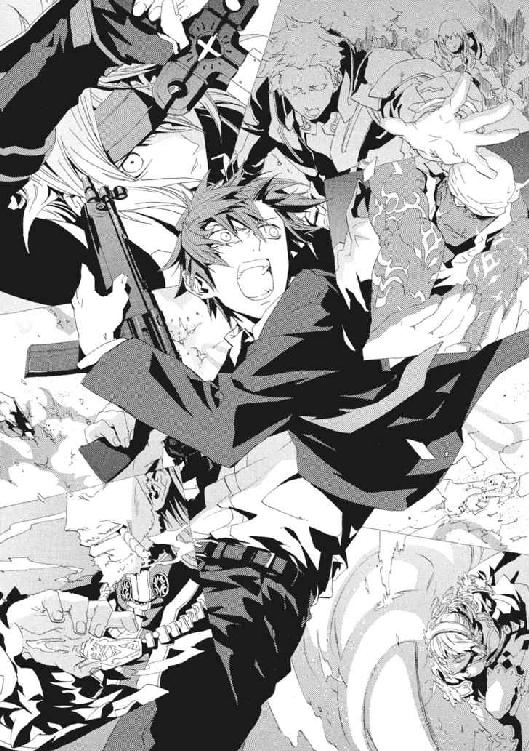
†
そのとき、お台場海浜公園はじめ、湾岸地区の各所から、すさまじい爆炎と、巻き上がった土柱が観測できたという。
魔法使いたちが歴史の表舞台から姿を消したのは、大人数からの魔法消去に耐えられないためだ。だから、魔法使いたちは、暗がりに隠れ、地底に広大な武蔵野迷宮を掘った。
だが、東京には、人口一千万人を超える人の目で観測されていない場所が、地底以外にもひとつあった。
海中だ。
仁たちがいた東側第三ホールから海までの間には、駐車場と道路と公園しかない。直線距離で百メートルほどにすぎない。《九位》たちは、埋め立て地の地下を魔法で海側から掘り抜いて、施設の地下に爆薬を仕掛けたのだ。
十崎京香は、衝撃であらゆる機材が倒れた司令所で、ようやく体を起こした。彼女は運良く無事だったが、まわりはひどい状況だった。潜り込んだことで机が床を弾んで倒れてきて潰された者、機材の下敷きになった者、天井からの落下物で重傷を負った者。
彼女の体も打ち身だらけだった。気分が悪かった。頭を打ったようだった。胃の中のものを残らず吐きたかった。
それでも、荒い息をつきながら彼女は立ち上がった。敗戦だとしても京香たち司令部が意志決定しなければ、現場で戦う者は動きがとれないのだ。そして、防御態勢を一度整えた後だったからこそ、陣を敷き直す余地はないように見えた。
国際展示場の爆炎は、どこかしらのテレビ局に報道されて、世界中に知られているはずだった。警察の一存で処理できる規模でなくなっていた。
極限状態に慣れた京香が比較的落ち着いていることに気づいて、司令所の警察官僚が、彼女に意見を求めてきた。
「撤収するべきではないか」
床に落ちたボールペンが、海側へ向けて勢いよく転がっていた。施設が爆発で傾いたのだ。通信機はまだ不通のままだった。動きださねば、多大な犠牲を出すことは確実だった。
京香は、会議の主催者の責任をいったん棚上げした。
「東展示棟からの退避に賛成します。書類のみ持ち出して、おおきい機材は捨てましょう。後から回収できます。会議の参加者については、消防と合流してから、改めて救助計画を立てるほうが現実的でしょう。まず警備担当者への連絡をお願いします」
この敗戦から迅速に立ち直るため、彼女は《公館》職員とちがって殉職が報道される警官を、損耗したくなかった。《公館》が管理する現場なら、必要がなかった撤退だ。もしも彼女の傍らにあの《鬼火》東郷永光があったなら、ひとりでもこの場に残ったはずだった。
窮地にあってこそ存在感の光るその男を、京香はこころから惜しんだ。だが、彼女の仕事は、多数の矛盾する義務を負う警官たちを機敏に動かすため、状況を単純にすることだ。
「現状、〝魔法使い〟たちの救助には、戦闘中のホールに突入する必要があります。ですが、最後に確認できた彼らの意志では、我々の介入は求められていません。経験上、これを一時捨ておいても問題ありません」
清水健太郎は、頭から血を流して意識がなく、機動隊員に肩を借りていた。警備責任者は、モニタ機材の下敷きになっていた。速度が生死をわける状況だった。だから、命令を出す責任は、彼女が背負った。
「全隊員に命令を出してください。動ける人員は、全員、負傷者の搬出に参加すること。警官でも施設職員でも魔法使いでも、目に付いた者は施設の外に出すこと。五分以内での撤収を目指して、ベストを尽くしましょう」
京香たちは、魔法使いたちとちがい、崩れてゆく建物の中に留まれば、死ぬしかない。彼女たちはただの人間だ。ましてや、仁が望むようなヒーローでは絶対にない。京香は、彼女たちを護衛して戦場のホールを出た《魔獣使い》が、姿を消しているのに気付いた。こんなことなら、政治的な結びつきを会議の参加者たちに疑われても、倉本きずなもいっしょに連れてくるべきだったかと後悔した。
厳しい訓練を積んだ機動隊の精鋭は、即座に体を動かしはじめた。だが、制服の幹部たちは、人間味がない合理性に、意義をはさむか従うかを迷って、棒立ちだった。
「何をしているのですか。仲間を救いなさい、早く！」
そのとき京香は、男の野太い悲鳴を聞いた。ホールの外周に配置していた機動隊員が、血相を変えて飛び込んできた。
「全員退避だ、東展示棟は崩れるぞ！」
倉本きずなは、横転したバスの中で意識を取り戻した。
ガソリンの臭いがした。ガラスが割れていた。そして、手のひらに、その破片がめりこんで大ケガをしていた。
座っていた座席から足を引き抜いた。口の中を切ったようで、唾を飲み込むと血の味がした。何もかもがイヤで仕方なかった。
「助けて......助けて......」
どうしてこんなひどいことになるのか、わからなかった。血の臭いと、土埃の気配と、どうしようもない暴力の気配に、頭がおかしくなりそうだった。
襲撃があったとき、彼女はまっさきに休憩所から外へ逃げ出した。何かあったら、非常口から出れば警察がいるからと、事前に言われていたからだ。
警察に頼るとは、魔法消去で魔法を使えなくなるということだ。だが、倉本きずなは、あの場で唯一、魔法に未練のない魔法使いだった。だから、最初に《魔炎》が見えてすぐ、警察と《公館》のえらい人の脱出を警護する神和瑞希と別れなければならなくなったとき、後から合流すると約束して、この避難用バスに乗った。
もうこれで安心なつもりだったのだ。
きずなは、スカートがまくれあがるのを気にする余裕もなく、座席を乗り越えて運転席を目指した。そこに、運転手がいるはずだった。
席ふたつぶんほどようやく前に進んだころ、彼女は、白い足が座席に投げ出されているのに気づいた。まるで死体のように、力のない体は、太ももまで肌がむき出しになっていた。
「い、いやぁっ、いやぁっ」
悲鳴をあげた彼女の目の前で、死体が起き上がった。白金色の髪をした、目元も涼やかな美女だ。きずなは思い出した。《無双剣》セラは、敵を求めて飛び出し、全裸だったから問答無用でバスに押し込まれたのだ。
「わっ、わっ、......ほんと、びっくりさせないでくださいよ」
「勝手に驚いておいて、文句をつけるな。だが、こうも血みどろでは、死体と間違えられてもしかたがないな」
服を着ていないセラは、金具で腕をざっくりと切っていた。見ている間にも、傷口から赤くかすかに粘りがある液体がわき出ていた。
「心配にはおよばない。どうやら運転手は気絶しているらしいな。魔法が使える」
セラの魔法、錬金大系は、ものとものの境界面に魔力を見いだす。その魔法は、触れたものの性質を変化させることを得意とする。だから、セラにはバスの車体を切り裂くことはたやすい。魔法消去で燃やされることなく、天井を切って大穴をあけて、彼女たちは横転したバスから這い出した。
そして、海側からの風に乗って降り落ちてくる大量の土埃に打たれて、きずなは呆然と立ちつくした。
戦争映画の一場面に取り込まれたのかと思った。
燃えていた、崩れていた。車も木もひっくり返っていた。ガラスの破片が散っていた。そして、きずなが逃げてきた巨大な東展示場が、明らかに傾いていた。地盤が沈んでいるように見えた。アスファルトにも、海側から波打つような巨大な山型のたわみや、長いひび割れが、いくつも現れていた。
「武原さんが、まだ中に！ 神和さんも、きっとまだ戦ってます」
セラは、血を失いすぎたか、真っ青な顔をしていた。全裸のまま、木立のそばの駐車スペースまで歩き、そこに座り込んだ。
「そうか。後は頼むぞ」
きずなは、何をまかされたのかわからなかった。すぐに、セラの脇腹にも大きな傷があるのに気づいた。魔法使いすべてが治癒魔術にたけているわけではない。セラはもう動けず、そして、バスの運転手は意識を失ったままだった。
気持ちの悪い臭いの爆炎と、土煙が風で押し寄せてきていた。道路は、いつの間にか土埃だらけで、黒く油が広がっていた。
ひとりの命くらい救えなければ武原仁に申し訳が立たないと、こころが駆り立てられた。
「勇気をださなきゃ。がんばらなきゃ」
きずなは、まだ仁へのわだかまりをどうにもできなかった。けれど、彼が、苦しいときこそ動けと叱咤しているようだった。きずなは、何度も助けてくれた仁を責めた。目の前で死ぬかもしれない人から逃げたら、彼女は、ただの恥ずかしい人間だ。
左肩を思い切りぶつけてしまったようで、歩くたびにずきりと響いた。腕が肩より上にあがらなかった。
バスの運転席側に回ると、さいわいフロントガラスが割れていた。
「武原さんは、やさしくないから、苦労してるわりに、感謝される前に怒られるんですよ。......意地を張れないくらい甘えさせてくれたらいいのに。そうしたら......」
意識のない運転手を、バスに上半身を突っ込んで引きずり出しながら、きずなは半分泣いていた。痛くて苦しいときに人のためにはたらくのが、つらかったのだ。
そして、きずなは、背中に人の気配を感じた。振り返ると、かつて会ったことのある男性がいた。
「またこんな惨状を招いたようだな。〝呪われた魔法使い〟よ、君はいつまでこんなことを繰り返すのだ」
きずなの義父、倉本慈雄のかつての親友を名乗った男、ベレーノ・ネロだった。そして、ベレーノには、もうひとつの顔があった。
「神聖騎士団の人が、どうしてこんなところに来るんですか」
機械化聖騎士師団の参謀としての、冷徹な目で、彼がきずなを見下ろしていた。宇宙服のような防護服を着た騎士が十人、いずれも腰に長剣を佩いていた。ベレーノは、きずなを取り囲んでいたのだ。
「私がここに来てはいけないと？ 《協会》の反主流派と、《公館》が結んで、そこらじゅうの野良魔導師を集めて、会議を行おうとしている場に、来てはいけないと？ これだけ大きく状況が動いて、神聖騎士団が介入しないと考えるほうがおかしいだろう」
きずなは、気づいた。木立の向こう側の道路に、十台近くも乗用車やミニバンが路上駐車していた。この全部に聖騎士が乗っているのだとしたら、何十人がここにやってきたのだろうと、恐ろしくなった。
ベレーノの怒りに濁った瞳が、彼女の体が震えているのをじっと見下ろしていた。
「心配にはおよばない。そのけが人は、きちんと警察にお届けしよう」
そして、ベレーノが鞘から長剣を抜き払い、きずなの首に刃を当てた。
「だが、君には、もう帰る場所はない。せめて、これまで生をむさぼるために積み上げた骸の重さぶん、世界の役に立って見せろ」
†
東展示場は、《九位》たちが狙ったポイントであったがゆえに、その被害規模ももっともはなはだしかった。
仁は、数十秒が終わった後のホールの光景を、台風の後の浜辺のようだと思った。
床には、ブースの机のなれの果てである木片が、大量に散乱していた。床が坂道になっていた。坂のてっぺんにある第一ホールと第二ホールの会議場と、この第三ホールは、耐火性のボードで鉄板をはさんだ仕切り板で、区切られている。この巨大な板が歪んでいた。
そして、あふれた海水が海側を浅く浸していた。建物の土台が崩れて、東展示場そのものが微妙に傾いているのだ。
「メイゼル、無事か」
ひび割れだらけの床から五十センチメートルの空中に、メイゼルが漂っていた。磁力で体を浮かばせていた彼女は、床からの衝撃を直接は受けなかった。だが、浮遊していても天井から落ちた照明や鉄骨の下敷きになった者もいた。ちいさな魔女が大ケガをしなかったことにほっとした。
ドレスのすそが乱れて、細い太ももまでストッキングがまるだしになっていた。少女が、体を起こすと、さりげなくすそを直した。
「いったいどうしたの？ 魔法じゃないわ。何が来たの」
ホールががらんどうだったせいで、もう跳ね回るものがなかったことがさいわいした。
「爆弾だ。完全にやられた。核爆弾でテロをやる連中だ。普通の爆弾も作ってたんだ」
話しながら、仁は、思考より早く、呼吸程度の自然さで引きがねを引いていた。立ち直れない会議の参加者に、剣で斬りかかろうとしていた電飾甲冑の騎士が、横倒しに斃れた。
爆破は、襲撃者たちには計画どおりのものだ。襲撃側の円環魔導師たちが、自己円環の防御で完璧に耐えきっていたからだ。つまり、追撃があるということだった。
「メイゼル、消去をくらってもいい。ドアをぶち抜け！」
きゅりきゅりと、鉄骨のきしむ音が天井から響いていた。この埋め立て地の地下に、《九位》たちがどんな規模の空洞を掘り、どれだけ爆薬を仕掛けたか、想像もつかなかった。
かつて、麻薬中毒の円環魔導師アラクネ・ショージャも、口の中を化学工場がわりに薬品を合成していた。敵が爆薬を大量生産できても、おかしくなかったのだ。
「でも、せんせ！」
ドアを開ければ、機動隊からの魔法消去を受ける可能性があった。だが、状況が変わった。
「施設が傾いてるのは、たぶん、地盤の土が、衝撃で海水と攪拌されて液状化してるんだ。この展示場は崩れる」
「いい分析ですね」
《導師》アリーセ・バンシュタインだった。五百年以上の闘争を生き抜いた〝怪物〟が、血と瓦礫の土埃の底で微笑んでいた。今このときまで、魔法で姿を隠していたのだ。
「雇い主に言うのもなんだが。笑って見てないで、手伝ってくれないか」
自己円環で身を守る円環魔導師たちは、まだ不動の状態をくずさない。それを盾にして、電飾甲冑の他大系の魔導師たちが斬り込んできていた。撃っても足止めにもならなかった。襲撃者たちは、負傷し倒れた参加者たちに止めを刺して回り始めたのだ。
だが、少女のかたちの〝怪物〟が、血しぶきと断末魔と銃声の中、平然と語り続けた。
「あなたがた《悪鬼》は、わたしたちを〝魔法使い〟と呼びます。けれど、この会議に参加した者は、皆、利害関係も土台もちがうんですよ。だから、ほら、命の危険にあっていても力を合わせられない」
《連合》を導いてきたアリーセが、繰り広げられる闘争を指さした。役割分担をしてみんなで助かろうとは考えず、ただ生き残るために目の前の敵を打ち倒す、非効率的な戦いが繰り広げられていた。
「《公館》は、この会議で、《九位》が消えたらみんな得をすると言っていたけど、このありさまを見て、本当にまとまると思います？ 算盤の利害を、永遠に生きる魔法使いは、永遠に我が身がかわいいから、かならずひっくり返すんですよ。自覚のない者を仲間にするより、集まらずに身軽でいるほうが、生き残るには正しいんですよ」
仁は、半分聞き流しながら、短機関銃で敵を撃っていた。ホールはひどい有様だった。悲鳴や呻きばかりが、響いていた。
「こういう無様をさらしていると負けるから、魔法使いの戦争では、強力な魔導師が『自分にならえ』って先頭に立って敵を蹴散らすんです。同盟を組んだって、この関係はおんなじ。後ろがついてくるか不安に確かめながら、《公館》が先頭に立って《協会》をたたくだけです」
アリーセの周囲の《自律する魔力》が、戦場との〝関わり〟に反応して、襲撃者をおいしそうに捕食していた。彼女は、すでに狂っているとも言われる。だが、仁には、すくなくとも、彼女が姿を隠していた理由はわかった。ホール内で最強の魔導師であるアリーセが先頭に立つと、期待されないようにしたのだ。そうして、参加者たちの乱戦の中での行動を、観察していたのだ。
「今いる仲間を守ることが一番大事なら、それでいい。けど、手を伸ばして仲間を作ろうとしてるヤツを笑わないでくれ。そいつとどんな関係を作れるかなんて、飛び込んでみなきゃわかんねえだろ」
仁は、京香を笑われているようで不愉快なのだと思った。血まみれの戦いのうちで〝関係〟は複雑に結ばれ、混沌大系の《魔力》はふくれあがりつつあった。目に映らない死角がすべて闇で覆われているような、動物じみた〝恐怖〟が襲ってきた。
人食いの魔女が、影の底で、きずなを魔法使いの敵だと扇動した口を微笑ませた。
「《悪鬼》よ、あなたたちは、手を伸ばして、わたしたちの友になりますか？ 永遠に生きる魔法使いと、永遠に友だちでいることはむずかしいですよ。......でも、《悪鬼》なら、友情の前に寿命が尽きるから大歓迎です」
仁のところに王子護ハウゼンがちいさな舞花を連れてきたことを、ふと思い出した。難題ばかり集まってくるかのようだった。
アリーセの金髪の巻き毛に、頰に、雨のように噴き上げた血が跳ね飛んでいた。
仁は、どうしようもないやるせなさに焼かれて奥歯を嚙んだ。
「《鬼火衆》！」
吠えずにいられなかった。暴力と死の臭いにあてられて、頭がおかしくなりそうだった。馬鹿げていると思った。何もかもぶちこわしてやりたかった。
「けが人を助けるぞ。手の空いてるヤツは、動けないヤツを出口に引っ張れ！」
最初に反応してくれたのは、《黒鯨》マランキシュだった。体に刻んだ入れ墨を魔法で鎧に変えて、雄々しい体を乱戦の中に飛び込ませた。仁は、《黒鯨》へと殺到した電磁騎士を撃った。同時に、もう一度、鈍い揺れがホールに響いた。メイゼルが、落ちていた鉄骨を強烈な磁力で弾き飛ばしたのだ。
ドアが破れると、もうもうと、土煙がホール内に吹き込んできた。さっきの大爆発で巻き上げられた土砂が、まだ地面に落ちきっていないのだ。
外の陽光が漏れ入ってきた。それだけで、生き残る希望がわいてきた。
マランキシュが、仁へと叫びかえした。
「さっき、エライ人が小難しいことを言ってたっすけど、無視していいんすか！」
「知ったことか。ここに倒れてる連中は、襲撃が来る前にさっさと逃げなかった。留まってくれて、ヤバイことになった連中だ！」
メイゼルが、仁の腰にすがるように抱きついてきた。メイゼルと仁の足下に円環魔術の魔法陣が浮かび、乱暴に体が弾かれた。彼らの立っていた場所を、仁には見えない何かが薙いだ。それが当たったのだろう水面が、超高熱で熱せられて爆発した。
そこかしこで発動している治癒魔術を破壊してしまうから、仁は魔法消去を使えない。今の彼は、この場の誰より脆弱な存在だ。それでも、意志は曲げなかった。
「俺は、こいつらを、命をかけて救っていいと思う」
もしも京香たちが近くにまだいるなら、メイゼルがドアを破った魔法で《魔炎》が散ったはずだった。警察は先に退避した。だが、この状況では、避難してくれたことのほうが、手間と心配事を省くフォローだった。
仁たちに、彼らの命がかかっていた。主催者である京香たちですら退いた今、仁たちがそれにならっても、非難を受けることはない。
だが、爆発の衝撃で足の骨を折り、落下物や襲撃の傷にさいなまれた三、四十名もの魔法使いたちが、仁を見上げていた。誰もが人間だった。仁に、助けは不要だとは言わなかった。
「ここは《地獄》じゃない。お互いに踏みつけ合って、こんなことになってまで見捨て合うのはごめんだ」
「親分！ 要救助者、ひとり出します」
《黒鯨》マランキシュが、腹を刺された男を、メイゼルがぶち抜いたドアへと引きずった。元々、この入れ墨の大男が、避難誘導役だった。仁は、砂埃と光の吹き込むドアへ向かうふたりに声をかけた。
「《再帰迷宮》の範囲から出たら、とりあえず転移魔術で安全なとこまで行かせろ」
この転移魔術封じは、この世界の秩序に干渉しないからこそ魔法消去を受けない。裏を返せば、魔法を使わない方法でなら範囲外に出られる。
ぽつりとアリーセがつぶやいた。
「──《再帰迷宮》を張った魔法使いは、張った罠から逃がす気などあるでしょうか」
陽光の中にかすれるように、マランキシュが戦場から自由で安全な場所へ脱出しようとしていた。その明るさを、一瞬、仁は白昼夢のようだと思った。
「それでは、皆さん、ご健闘を──」
夜の女王が影のような《魔力》に吞み込まれて消失した。
同時に、マランキシュの上半身が、引きずっていた要救助者の頭ごと炎上した。
恐怖で振り返ると、仁は魔法消去の停止を解いていた。結果的に、それが多くの魔法使いの命を救った。
猛火だった。
仁たちを、爆発音と、爆風の熱気と炎の奔流が襲った。おとぎ話の火龍の吐息のような、地を吹き払う火の洪水だった。
熱気を避けるため顔を覆った指の間から、仁ははっきり見た。会議場と休憩場所を区切った分厚い仕切り板に、大穴が空いていた。仁たちのいるホールと隣り合っていた大会議場が、大火事を起こして燃えていたのだ。
噴火する火口のように、仕切り壁の穴から、黒煙と炎が噴き出していた。火の粉が、吹雪のごとく押し寄せた。ホール自体が大きすぎたことと乱戦の物音で、すぐ隣の火災に気づかなかった。さっきの爆発は、仕切り板が撃ち抜かれて火災の起こっていた密閉空間に空気の通り道が開いてしまったことによる、逆炎上現象だったのだ。
急激に空気が薄くなったように、肺が痛んだ。仁は、体を折って咳き込んだ。目に針金を差し込まれたようだった、喉が締め付けられた。
「《沈黙》、魔法消去を解除しなさい」
エレオノールの叫びが耳に入った。仁の魔法消去のせいで、休憩場の魔法使いたちは、火災の熱気と煙から身を守れないのだ。
仁が魔法消去を停止すると同時に、仕切り板の大穴から、また火の嵐が襲ってきた。爆炎の第二波だった。自然現象ではありえない動きで、正確に仁たちを狙って炎の弾丸が飛んだ。
「せんせ！」
彼にしがみついているメイゼルが、磁力で仁の体を滑らせてくれた。そのおかげで、仁は火だるまにならずに済んだ。床に衝突して弾けた炎が、そのまま水のように床を流れて、防御魔術の薄かった参加者をひとり焼いた。
襲撃側の騎士たちすら、恐怖で動きが固くなっていた。死んだ《黒鯨》の魔法とはレベルがちがう、宣名のような手続きなく圧倒的な力を操る暴威だった。
「......《雷神》か」
仁は、こんなことができる魔法使いをひとりしか知らなかった。プラズマの制御を極め、稲妻を受け止めた男がいた。そして炎の発光もまたプラズマだ。
金属質の銀色の髪をした男が、仕切り壁の開口部を背にして立っていた。炎の蛇が、百条もの赤布のように、色鮮やかに軽やかに中空を飾った。
襲撃側の最大戦力が、仁たちのかすかな希望を折るべく、姿を現したのだ。
「《雷神》クレペンスと呼べ」
仁たちにそうしたように、《雷神》が律儀に名乗った。魔法使いたちにとってすらおとぎ話である英雄が、炎を背負って立っていた。
暴れ回っていた百人の騎士の存在感が、芥子粒ほどに縮んだかのようだった。それほど、輝く銀と黒の鎧に身を包んだ《雷神》は、圧倒的だった。
燃えるものに片っ端から火が付いて、あたりは火の海だった。
「壁でもどこでもいいから突破口を開け！ 死にたくなかったら、選択肢を増やせ」
仁は、メイゼルが周囲だけ温度を下げてくれた空気を吸い込み、叫んだ。
《雷神》の魔法は派手なのに、外からの魔法消去で破壊されていなかった。会議室の大火災が、膨大な黒煙と轟音をあげているせいだ。自然秩序に従ってあがる煙と音が、このホールの魔法を観測させない壁になっているのだ。《雷神》は、この世界での戦い方を心得ていた。
彼の声に、《逆天》ユリアが動いた。
「魔法を存分にふるえるならば、皆は、まわりの小物たちをさきに片付けてください。活路は私がひらきます」
白い騎士の秘術が、ホールの床を揺らした。広大な展示場の、熱せられてゆるんだ鉄骨が、不気味にみしりときしんだ。
「なにやってんだ、崩れるぞ！」
仁はユリアへと視線をやった。飾り鞘におさめたままの剣を抱いた白い騎士が、重力を無視して空中に静止していた。彼女の周囲に大量の水が凝集し、水晶のように火明かりを屈曲する機械部品のようなものをかたちづくっていた。ユリアたち因果魔導師は、魔法を組み合わせて魔法機械を構築することで、巨大魔術を効率よく運用する。
因果巨兵と呼ばれるそれを、ユリアは水で構成しようとしていた。しかも、爆破でわき出た海水では足りず、重力制御で床をぶち割って汲み上げすらしたのだ。展示場の土台が砕ける不気味な感触が、靴の裏から不気味に伝わってきた。
仁にしがみついていたメイゼルが、爛々と目を輝かせた。
「せんせ、イケルわ。そこがたぶん一番いいのよ」
仁に説明するより前に、メイゼルが〝分裂した〟。円環大系の《破滅の化身》で、一気にメイゼルが十五人の分身を作ったのだ。《逆天》ユリアへと殺到した電磁騎士を、少女のはなった瓦礫の弾雨が弾き飛ばした。
仁は、《雷神》と同じ円環魔導師であるメイゼルの感覚を信じた。
「生き残りたかったら、《逆天》に乗れ！」
《鬼火衆》が、また〝悪人〟である彼を信じて、雄叫びをあげてくれた。仁の視線は、刹那、《黒鯨》マランケシュの屍体に縫い止められた。結果的に、彼をオトリに《雷神》を引きずり出したも同然だった。胃のあたりに鈍痛が宿り、口の中に苦いつばがわいた。仁の指揮で刻印魔導師を〝死なせた〟のは、これがはじめてだった。
仁は短機関銃を撃った。《破滅の化身》展開中で、かすり傷ひとつで死ぬメイゼルを、援護し続けた。暑くて暑くて、死んでしまいそうだった。目が乾いた。
「バカものめ、熱気から体を守らんと死んでしまうぞ」
もうまぶたを開けていられないと思ったとき、涼気を首筋に感じた。調整官ベルニッチの、鎮静剤の葉巻の匂いがした。精霊大系の魔法は、防御能力にすぐれる。感謝していたが、憎まれ口しかことばにならなかった。
「こんな大火事の中で、暢気に葉巻なんか吸ってんなよ」
「こんな臭い空気など、一秒でも吸っていられるものか」
完成した因果巨兵が、ホールに降り立った。それは、水晶を切り出して作ったような、身の丈五メートルにも及ぶ巨人だった。優美な曲線で構成された因果巨兵は、胸部に《逆天》ユリアを収納していた。高位魔導師自身が、この魔法機械の動力源なのだ。
「穿て、《逆天王》──」
《逆天》ユリアが、飾り鞘の剣をくるりと回した。《逆天王》が、同じ形状をした、刃渡り八メートルを超える巨剣を同じように持ちかえた。それが宿す途方もない破壊力を、武蔵野迷宮で彼女が生み出した破壊を見ているからこそ、仁にはありありと想像できた。
だが、炎を背に立っていた《雷神》の姿が、そのとき消えた。高速機動に入った超高位魔導師の動きを、仁たちの目で追えなくなったのだ。
「散れ、《逆天》」
《雷神》の反応速度は人間のそれの枠外にある。そして、その絶対的な〝速度〟は、魔法だけに発揮されるわけではなかったのだ。
だが、まったく目にとまらない速度で宙を駆けた《雷神》は、《逆天王》の首を狩る寸前ではじき返された。
空中に足場があるかのように、微笑を顔に貼り付けた少年が、何もない中空を踏みしめていた。神速の騎士を迎え撃った残心の姿勢から、峰に鬼の顔がついた巨大な刀を血振りした。その少年は、誰もが煉獄から逃げようとしている中、義理堅くもここに突っ込んできた。
展示場の外を見回っていた《笑い顔》虎坂井レイだった。
「大将。ひどかぁありませんか。ぼくがいるってこと、忘れてましたね」
そして《逆天王》が、巨剣を振りかぶって、深々と床に突き立てた。三度目の、強烈な縦揺れをもたらした巨人の突きは、さすがに東京の人々に観測された。魔法の断片である《魔炎》が、ホールじゅうに爆炎となって広がった。
だが、それでも超高出力の魔法は削られきれず残った。水の因果巨兵が、身体各部の鎧を開くと、急激に自身の機体を熱しはじめた。ユリアが、おそれを振り切るように絶叫した。
「砕けぇッ！」
巨剣自体が魔法消去されにくい水蒸気爆発を起こし、衝撃を床に直接打ち込んだのだ。今度は、最初の爆破に次ぐ強さの大地震だった。仁は、立っていられず、床に転倒した。
だが、仁は、コンクリートの砕けた土埃を大きく吸い込んで、目を見張った。空気の匂いが変わった。潮の香りがしたのだ。
ホールの床の海側半分が、完全にひび割れて不気味に崩落していた。今にも展示場自体が倒壊しそうなほど、屋根と柱が悲鳴をあげていた。
だが、傾いた展示場に開いた大穴の底は、黒々とした水をたたえる海だった。
《逆天》ユリアが破壊した床の下は、もう海だったのだ。展示場の地下に空洞を掘って爆薬を仕掛けたのだろう襲撃者たちの爆破は、埋め立て地をえぐって海を浸食させていた。因果魔術が穿ち抜いた縦穴が、その深すぎた傷口と繫がったのだ。
これが、メイゼルの見た脱出口だった。仁の全身に、興奮で鳥肌が立った。
「ここが、《雷神》に追いかけられない出口だ。蓋は、俺がしてやる。死にたくないヤツは、海に飛び込め！」
人間の視力では、透明度の低い水を数メートルも沈んだら、ものを観測できない。だから、潜ってさえしまえば、魔法使いは追撃を防ぐ鉄壁を得たのと同じだ。仁が魔法消去を使うことで、脱出口である〝海面〟にかけられる追撃の魔法を破壊してやれるからだ。もはや《雷神》の出力であろうと、そう簡単には海面を貫通できない。
「後詰めはまかせろ。おまえらは、ここから海中に入れ。人間が通れる隙間がなくなったら、魔法で適当に穴を掘り進めろ。五メートルも潜れば、もう魔法消去は通らない！」
ホールじゅうの魔法使いが、それぞれに声をあげていた。これは、魔法使いが〝魔法を使って〟自分の運命を打開でき、かつ多人数で押し合いせずに使える、唯一の脱出口だった。会議では出なかった妥協案が、今、ようやく現れたのだ。
魔法の着弾の音までもきれいに合わさって鳴り響いた。仁の視界に、襲撃者の姿が入らなくなった。撤退に入った会議の参加者たちが、ここに残る仁のために電磁騎士を撃ち減らしてくれていた。
指示を出したり煽ったりする必要はなかった。〝恐怖〟が彼らをひとつにまとめたのだ。かつて円環大系世界で、イリーズ・アリューシャに対する恐怖が奇蹟の王者たちをまとめたのと同じだった。
仁を斬りに横合いから突っ込んできた電磁騎士が、三人、軌道のない見えない魔弾で打ち倒された。
さっさと海に逃げればよいのに、戻ってきたのだろうエレオノールの声が聞こえた。
「あなたも、迷うことをやめたのですね」
仁は、振り返らなかった。人間関係に振り回される凡夫である仁と、神意を追うエレオノールの道は、同じ方向へは向かわない。すくなくとも、彼はそう思う。
「今でも迷っているよ」
「いいえ、変わりました。きっと今のあなたなら、倉本きずなと、もっと深く話し合ってよい答えを出してゆけるでしょう」
いつの間に、神意に透明だった彼女は、こんなにもお節介な人になったのだろうと思った。
《鬼火衆》に指示を出した。
「《雷神》は、俺がやる。おまえらは、会議の参加者が無事に帰るまで見届けろ」
メイゼルを抜けばもう八人しか残っていない勢力だ。仁では手の回らないことを頼むほうが合理的だった。そして、虎坂井たちも退き時をわかっていた。
「わかりました。それじゃ、ぼくらの連携に慣れてない姐さんは邪魔ですから、大将のところに置いてゆきますよ」
突然、予想外の話が出てきて、修羅場だというのにあっけにとられた。虎坂井が、本当は他意があるのではないかと疑うほど清々しく言い切った。
「ほら、大将の魔法消去も、ぼくらと合わないでしょう。前にも言ったでしょう。東郷先生は、消去の強度が段々強くなったり弱くなったりしてたから、先触れに合わせられたんです。発動した瞬間に、ゼロから最強まで強度が跳ね上がる変態仕様じゃ、姐さんでもないと無理なんですよ」
仁の体が、突然、ふと楽になった。大きな手が仁の背中に当てられた。精霊大系は、魔法治療にすぐれる。この生命精霊の魔術で、仁はかつて命を救われたのだ。
「愚か者め、礼は言わんぞ。今日の借りは、これで帳消しだからな」
ベルニッチは、最後の最後まで尊大だった。
体を真っ二つに裂くファスナーを開きっぱなしにして、《金庫室》ペンローズが、声をあげた。
「こいつを使ってくだせぇ。マランキシュの野郎やりやがって、ぶちのめしてほしいス！」
仁へ向けて、重いものが思い切りぶん投げられた。それは、借り受けるとき、京香にできるだけ使わないよう釘を刺された軍用武器だった。
ずっしりと重い分隊支援火器を、片手で受け止めてしまって、仁の肩が衝撃にきしんだ。撃っていた短機関銃を、同時に足下に置いた。
歩きながら汎用スリングで新しい銃を肩にかけ、続いて放られた弾薬ベルトを、機関部のフィード・カバーを開きながら受け取った。手品じみた滑らかさで手は動き、トレイに弾薬をのせてカバーを閉じる。
《雷神》は、燃える会議室との仕切り壁の前に立っていた。炎の光と煙が強く、施設外からの魔法消去で魔法を破壊されにくい場所だったからだ。
数秒間、動きがなかった《雷神》が、右の手を地面にかざしていた。床と地面の存在を無視して、海中を直接狙い撃とうとしている射線だった。今、撃つなら、放てば殺せる攻撃であるはずだった。
だから、猛火の中にまた生身で立つ恐怖を振り払わんと咆哮しつつ、魔法消去を発動した。
間一髪で、射撃の瞬間に間に合った。すさまじい爆風と瓦礫の嵐が、《雷神》の足下からあがった。それがおさまるより早く、仁は銃身を《雷神》へ迎え上げると、分隊支援火器のフルオート射撃を開始した。
五・五六ミリ弾が、炎と煙を背に立つ《雷神》へと吸い込まれてゆく。同時に、大量の空気を吹き込まれたか、発光する燃焼ガスと膨大な火の粉が、《雷神》の背後で爆発した。輝くオレンジ色に包まれて、仁には弾丸が当たったかどうかもわからなかった。
跳ね上がる銃身を、ハンドガードを握りしめる力と体重で押さえつけた。全身が、オーブンの中に生身で投げ込まれたような火傷の激痛できしんだ。だが、炎の中で、《雷神》クレペンスはかならず生きている確信があった。
《雷神》クレペンスは、メイゼルの話が正しければ、神話に、神の祖型として痕跡を残した本人である可能性すらあった。
ホールの中は炎をあげて燃え続けていた。人間には、火災現場で生き続けることなどできない。熱気の中で、人は目を開け続けることすらできず、煙に巻かれて正常に音を聞き取ることもない。匂いも、触覚も、味覚も、すべてが燃えていた。
ただ立って、引き金を引き続けるだけで限界だった。
火災の熱の中で、射撃を続けること自体が、暴発と隣り合わせの賭けだった。
機関銃の引き金を引きながら、その暴れる銃口を躾け、弾帯をさばきながら、仁は《雷神》の姿を確認して止めを刺させて欲しいと、いもしない神に祈っていた。轟炎を凝視した。
何秒持つだろうと思った。その間に、脱出が終わればいいと思った。
息をするたび咳き込みそうで、血が出るほど奥歯を嚙みしめる。何にしがみついているのだろうと、熱に浮かされながら思った。切れ切れになる思考をつなぎ止めるように、叫んだ。
「それでも、あいつらに、夢を見せてやるんだよ。夢を見せてやるって言ったんだよ！」
すがりつくように、よろけそうな足を踏ん張り、突っ伏しそうな体を起こして、撃ち続けた。銃声が、体をバラバラにしそうなほど、直接血を揺らして響いた。
二百発の弾薬ベルトを撃ち尽くした。もう弾丸は出なかった。仁は、突然反動を失ったことでかえってバランスを崩して、膝をついた。
風が吹いていた。ひどく静かだった。視界が焼け付いたように白くなっていた。人の足音もなく、銃声もなかった。声もなく、ただホールの屋根がきしむ感触だけが頭の上で響いていた。
戦いの果てに、いつかこんな静かな光景にたどり着ける気がした。
「せんせ」
遠くで、囁くような声がした。純白の闇が揺らめいた。
息をしていた。仁は、荒々しく口で呼吸をしていた。喉を焼いてしまうのではないかと、恐怖にとらわれて息を止めた。思い切り咳き込んだ。
「せんせ、もうだいじょうぶだから」
泣き声のようだった。仁は、熱で溶けて張り付いてしまったかのようなまぶたを、無理やり開いた。乾いていた眼球を湿らせようと、体が涙をあふれさせた。両目を中心に顔じゅうに激痛が走った。
何度も目をしばたたかせた。視界が戻ってきた。ぼやけた視界の中心に、忘れ得ない少女の姿があった。
世界に色が戻った。
メイゼルが、仁の正面に膝をついて、彼の顔を両手ではさんでいた。
「もう、みんな行ったわ」
弾丸の切れた機関銃を杖にして、仁は燃えるホールにひざまずいていた。撃ち切った銃のように、力尽きていた。だが、戦いは終わってなどいなかった。ちいさな魔女の言うとおりなら、会議の参加者たちはみんな逃げられたことになる。だが、《雷神》はまだ残っていた。
仁は、銃を杖に再び立ち上がった。体があまりに硬くて、乾いていて老人になった心持ちがした。彼がまだ生きているのは、メイゼルが周囲の気温を下げてくれているせいだ。いつ魔法消去を停止したのだろうと思った。いもしない神に、彼が祈ったときかもしれなかった。
「治療は、おまえがやってくれたのか」
銃を握っていた手は、焼死体のように真っ赤に火傷していた。それでも痛みは気絶しそうなほどではなくなっていた。魔法で代謝制御を受けて、皮膚の奥の真皮が自然治癒しはじめていた。
メイゼルが、泣きそうに顔を歪めた。
「あたりまえじゃない。他の誰が、せんせに、ここまでつきあってくれるの？」
そして、ちいさな魔女が、感情をそうする以外に吐き出しようがなかったように、しがみついてきた。だが、細い腕を首に回されて抱きしめられても、火傷で浮腫んだ肌は、悲鳴をあげたいほどの激痛しか感じなかった。鼻孔は、火事の臭いが焼き付いて離れなかった。仁の体は、彼自身が想像した以上に火傷だらけだった。皮膚が焼け溶けた彼は、ひどい臭いがしているはずだった。
不安をなぐさめてもらいたい欲が押し寄せ、仁はたまらず彼女の体を押し離した。しなやかな曲線を描く少女の背中に回してしまいそうだった手を、彼女の肩に置いた。
「勝って、家に帰ろう」
重い分隊支援火器を、負い革を外して床に落とした。弾丸を、さっきの射撃ですべて撃ち尽くしたからだ。
倒すべき敵は、そこにいた。電磁騎士団はすでに後退していた。だが、《雷神》が、まだいっこうに燃え尽きる気配のない会議室から、仕切り壁の穴を通って歩いてきていた。
仁は、《雷神》が現れるまで使っていた短機関銃を、三歩後ろの床から取り上げた。焼けた床に置きっぱなしにしたのに、銃の各部は正常に作動した。仁の胸に、深い感謝がわいた。
「ありがたいことだな。さすがは『騎士さま』だよ」
武器をふたたび拾い上げるまでの数秒間を、《雷神》クレペンスは待ってくれたのだ。
「貴公も、また、騎士だ。《真なる悪鬼》よ」
クレペンスにほめられたことが、くすぐったくて居心地悪かった。
襲撃開始から今に至る流れは、集団戦術としては《雷神》の大失策だったからだ。《九位》たちは、最初に仁たちに魔炎を見せて、会議の参加者をこのホールに集めた。そして、暗殺部隊を送り込んで攪乱して、最後の魔法攻撃にうってつけの密閉環境を戦場として印象づけた。斬り込み隊を囮として送り込み、参加者たちを釘付けにし、劣勢に陥って攻撃に釣り出すところまで成功させた。
だから、展示場を傾けた爆破の瞬間、《雷神》が魔法消去を押し切る円環大系の超高出力でぶっ放していれば、ホールの参加者たちは不意打ちの一撃で壊滅していた。すくなくとも、なすすべなく転がっていた仁は死んでいた。だが、《雷神》は、同じ超高位魔導師であるアリーセが姿を隠していたことを深読みしたか、決定機を逃した。原始的な戦いを三千年間続けた男は、最高のお膳立てを無駄にしたのだ。
だから、《九位》に踊らされた仁と、集団戦には時代遅れな《雷神》が向き合う戦場では、すべてが道化めいていた。
「俺は、そんな立派なもんじゃない」
「幼い女王のために、貴様は、現世の地位も、仲間も声望も、果ては誇りに至るまで、すべて捧げたそうだな。それを魔法使いの世界では、真の騎士の献身と呼ぶのだ」
《雷神》は〝おとぎ話の英雄〟だった。その実力でも、誇りの高さでも、そして兵士になりきれないことでもだ。
幼い女王とほめられたメイゼルが、胸に手を当てて、微妙に得意げだった。
「だから言ったでしょ。せんせは、あたしの選んだ人なんだから、誇りを持っていいのよ」
《神》を殺してすべての引き金を引いたイリーズはもういない。ここには、災厄のような現実を刻印のごとく背負う、クレペンスとメイゼルだけが残っていた。
そして、これから殺し合いをするのだ。
「メイゼル殿。此度は、《九位》より、あなたを殺す許可を受けております」
ちいさな刻印魔導師の体がこわばった。《雷神》は、彼女の母イリーズを殺した仇のひとりなのだ。だから、仁は手を差し伸べる。
「こわいか」
誇り高い少女が、仁の手を握った。仁の手の、火傷が一番深かった人差し指の皮がずるりと剝けた。
メイゼルが、火傷だらけの彼の手を頰に当てて、晴れやかに笑った。
「こわくなんてないわ。今日ここでおわったって、あたし、こわくないわ」
仁も、昂揚に浮かされていた。会議場の参加者たちは、おのおの大事なものを守って去った。だが、エレオノールやベルニッチや《鬼火衆》が、仁たちを捨て石にしたとは間違っても思わなかった。《雷神》を相手に、勝算があると信頼してくれたのだ。
「俺も、こわくない。ああ、こわくない」
仁と《雷神》の目が合った。
「メイゼル、こいつと、ここでカタをつけるぞ」
もっとちいさなころ、メイゼルが従えることを夢見たという英雄が、足下に魔法陣を開いた。
「よくぞ言った」
ホールには、倒れた魔法使いたちの屍体が何十体も転がって燃えていた。彼らの道が、話し合いで片付くものなら、こうはならなかった。
そして、世界に、光と熱があふれた。
それは、人間にとっては速すぎる戦いだった。
メイゼルが、磁力で仁ごと体を弾いて空中へ跳んだ。
《雷神》のプラズマ制御力ならば、ホールじゅうの炎を操れる。魔法で鎮火させられない以上、火災のまっただ中という《雷神》優位の環境で戦うことになる。
仁が撃っている銃器の銃声は、外にも漏れている。消防も、もうすぐ来る。あと数分の勝負になるはずだった。
「せんせ、あたしがしてって言ったら、危ないと思っても魔法消去を使って。あいつの攻撃、たぶん《魔力》が見えないと感覚できないわ」
メイゼルが、仁の両手が銃でふさがっているから、腰にしがみついていた。高速で視界は流れる。戦闘機動が速いせいで、一辺九十メートルほどのホールを一秒ほどで端から端まで行き来していた。逆に、移動するときはそのくらいの速度を出せないと、《雷神》の攻撃範囲から逃れられない。
《雷神》は、失望を露わに腕を軽く振る。
「魔法使いが、《悪鬼》を頼るなど」
超高位魔導師の腕の動きをなぞるように、あたりじゅうの炎が分裂した。
メイゼルが、その炎をにらみながら、のどから怒りをほとばしらせた。
「あんたも本当はわかってるんでしょ。魔法使いが特別だなんて、自分のものでもない力をかさに着た、卑怯者のことばよ。だって、その本当に『神と対峙した魔法使い』の前じゃ、みんな、ぜんぜん耐えられなかったじゃない！」
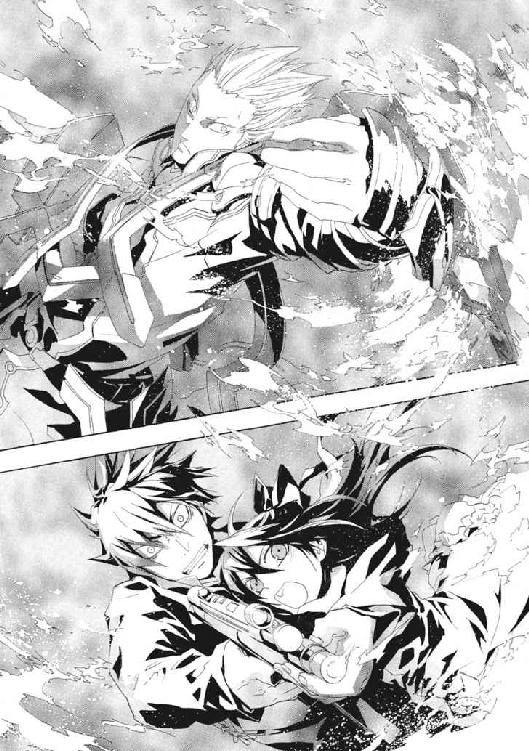
背約者イリーズの娘だから、メイゼルは刻印魔導師として追放されたのだ。
《雷神》の表情が、近い軌道を飛ぶときしか見えないのに、仁には胸にせまった。男は、炎のあかりの中、深い悲しみに沈む目を、意志力で眉だけつり上げていた。
「だからこそ、円環世界のために、イリーズ殿は死なねばならなかった」
「あんたは、神と対峙なんてできないわ。《九位》にもね。円環世界に住んでるみんなにも、きっとムリよ」
ちいさな魔女が、仁の背中を手でたたいた。仁は、魔法消去を発動した。ゼロから一瞬で強度を最高にあげる《真なる悪鬼》の消去に、《雷神》もついてこられなかった。
魔法の発動に失敗した《雷神》を、メイゼルが嗤った。魔法の防壁を失って、仁たちの体は大気の摩擦にもてあそばれた。少女が、怒り、泣きながら、嘲笑っていた。
「魔法世界じゃ〝ただの人間〟だったくせに、この世界でだけ〝魔法使い〟の顔？ 本物の〝魔法使い〟になんて、なりたいとも思ってないくせに」
魔法の推力を失って慣性で吹っ飛んだ仁は、壁にたたきつけられる寸前、魔法消去を停止した。少女の体が、関節がやわらかいからこそ、衝撃への反発で仁の腕の中で弾んだ。メイゼルが絶妙のタイミングで、ふたりの体をもう一度磁力で拾い上げた。
金属質の銀色の髪をした《雷神》が、その瞬間、二十人に増えていた。《破滅の化身》だった。
ひとりでも絶望的な《雷神》の火力が、二十倍に増える。仁は、その破滅的な威力を悟って、鈍い冷気に腹の底を塗りつぶされた。
仁は、反射的に銃口を敵へ向けていた。だが、彼の体は、気絶しそうなほどの加速度で横殴りに引きずられた。円環魔術で戦闘機動を担うメイゼルが、逃走を選択したのだ。
その〇・五秒ほどの時間が、命を賭けた選択のときだった。
仁は、火明かりの暗いホールではなく、流れる青空の下にいた。まぶしくて、幻覚を見ているのかと思った。
周囲は、もう息苦しくなかった。だから仁は、太陽と空が、東展示場の広大な回廊の、ガラス張りの天井越しに見えた風景だと知った。メイゼルは、ホール内では《雷神》の攻撃をかわしきれないと判断して、展示場の回廊へと飛び出したのだ。大扉の脇にあったちいさなドアが、たびかさなる衝撃で開いていた。
ズンと鈍い音がして、世界が揺れた。ついに休憩場の屋根が崩落した。鈍い音と地響きが回廊の大気を埋め尽くした。二十倍火力の魔法が、ついに構造物を内側から破壊したのだ。《雷神》の魔術が観測され、砕けた魔炎が、彼らの脱出したドアから洪水のごとく押し寄せた。
仁は、このときに勝機を見た。
「メイゼル、地面におろせ！ 《雷神》が扉を抜けるところを狙い撃つ」
強引な停止で吐きそうになりながら、仁は、割れたガラスが散乱する床に、滑り込むように降り立った。石材の冷たさに、ホールとの温度差を覚えてひやりとした。
魔法消去を発動し、回廊に規則正しく並ぶ巨大な円柱の陰に隠れた。休憩場からの出口は、どれも近い場所に固まっていた。出てくるところを射殺できる可能性があった。
「会議場側から回られたらどうするの？ それに、二階に回られるかも。それに、《再帰迷宮》をあいつが自分で解いたら、魔法で位置移動だってできるのよ」
「《雷神》は、〝魔法使い〟らしさを見せられる方法で来るよ」
子どものメイゼルに虚仮にされて後ろに回れるくらい冷静なら、《雷神》は不意打ちで会場の魔導師たちを皆殺しにできていた。
英雄の選択は、明快で魔法使いらしかった。
回廊が揺れ、魔炎の渦が大気を埋めた。扉ではなく、壁を打ち壊しにきたのだ。割れ残っていた天井が、青空を映したままこぼれ落ちてきた。空を落とすような衝撃が、続けてもう一撃きた。
建物を魔法で破壊するのは、魔法消去環境下では至難だ。だが、分厚い壁に埋め込まれた主催者事務室を貫徹して、わずか数発で、超高熱が回廊側に到達した。
「こんなもの見せつけられると、たしかに不公平だよな」
仁は、壁に開いた大穴へ向けて、魔法消去を発動したまま短機関銃を連射した。規格外の破壊力を見せつけられた後では、貧弱な豆鉄砲に思えた。
「《悪鬼》、それでは私は殺せぬ」
《雷神》が、瓦礫の積み重なるホール側から、難なく回廊まで歩いてきた。仁を一瞥した。石や鉄の破片が周囲に不自然に跳ね散っていた。《雷神》は周囲にある手頃なもので、銃弾を迎撃したのだ。仁もそうであるように、人間の感覚にはかならず死角がある。その死角から弾道計算して瓦礫を射出すれば、理論上は銃弾を撃ち落とせる。だが、あくまで理論の話だ。
「このクラスの魔法使いは、全員、銃弾がきかないんじゃないだろうな」
思わず嘆息していた。仁としては、今後の身の振り方を真剣に考えたくなる光景だった。
三千年を戦い抜いた英雄が、壁の開口部から堂々と歩み出ようとしていた。
「機関銃には、九十年前の大戦ですでに出会った」
据え付けの機関銃を対策済みなら、それに威力で劣る彼の短機関銃で突破は不可能だった。消去環境でも手持ちの武器で死なない相手を前に、仁の息は、極限の緊張で浅くなった。どうしようもない劣勢だった。
メイゼルが、銃から離れていた仁の左手をきゅっと握っていた。窮地だというのに、安心した目で仁を見上げた。
「せんせ、あたし、ちゃんと気持ちいいから」
強い感覚を悦ぶ少女が、顔を冷や汗で濡らしながら、彼を勇気づけてくれていた。仁に、絶望している暇などなかった。
「移動するぞ」
魔法消去を切ると同時に、メイゼルが回廊の吹き抜けの二階まで二人の体を飛ばした。磁力を利用した跳躍に慣れて、だんだん仁も浮遊感が楽しくなってきた。
彼らがさっきまで立っていた場所に、爆竹を鳴らすような破裂音が響いた。《雷神》が、粉塵に高圧の電流を通して、空間ごと高熱で包んだのだ。魔法消去があっても、そこに留まっていれば大やけどを負っていたはずだった。
メイゼルが壁面に磁力のレールを複雑に敷き、それに足を置いて軽やかに滑走した。その後ろを追いかけるように、壁面のガラスが焼き切られて落下した。レーザーだった。
「せんせ！」
切羽詰まった声を聞いて、仁は魔法消去を発動した。階下から、雨のように不可視の光槍が壁を打った。《雷神》が、また《破滅の化身》で膨大な分身を作っていたのだ。レーザーを寄せられる直前に魔法消去が間に合わなければ、仁たちは逃げ場を失って切り刻まれていた。
仁が、重力に引かれはじめた肉体を、壁面を思い切り足で蹴って飛ばせた。
東展示場の回廊は、幅広の中心だけに、幅五メートルほどの二階がある。だが、人間の脚力ではそこまでは届かない。
「メイゼル！」
落下の寸前、魔法消去を解いた。メイゼルが仁たちの体の下に、絶妙の呼吸で磁力のスロープを敷く。ギリギリで墜落をまぬがれた勢いを利して、仁は風を突っ切るような速度の中、ちいさな少女の体を抱き上げた。
超高速でエスカレーターの上を滑り、二階スペースに一気に乗り上げる。追いかけて、魔炎の嵐が押し寄せた。階下を見下ろすと、《破滅の化身》で《雷神》が百人以上に増えていた。
プラズマ制御魔術が必然的に発生させる閃光が、太陽が破裂したように爆発した。
仁は、東京中から観測されていないはずがない光の洪水の中、恐怖に溺れそうだった。この規模の魔法ならば、完全に消去されていなければならなかった。仁も魔法消去を発動した。円環大系が消去に強いとはいえ、日中にここまでの奇蹟をあつかえるはずがなかった。
逃げ場などなかった。仁は、それでも目を見開き首筋の筋肉を強張らせたまま、メイゼルをかばって伏せていた。
回廊の二階廊下を、光が吞み込んだ。まぶたを閉じても容赦なく透過した閃光が、まぶしすぎて眼球が痛んだ。轟音が、足の下で響いていた。
「なんだこれ、くそ、なんだこれ」
視力を回復させたくて、何度も目をしばたたかせた。網膜が緑に焼き付いた視界に、おぼろげに見えた風景があまりにも絶望的で、はっきり確認しないと安心できなかったのだ。
回廊の二階廊下の半分が、蒸発し、溶解し、あるいは自重に耐えきれず崩れていた。屋根を支える鉄骨は溶解し、透明な屋根自体にいくつもの大穴が開いていた。
単純な出力で、魔法消去を突破したのだ。消去で減衰されていなければ、おそらく周囲一帯が全滅した威力の一撃だった。
《雷神》の戦い方が、仁にも理解できてきた。大きい破壊力が欲しいときだけ、超反応で《破滅の化身》を展開し、射撃後、即座に戻しているのだ。《破滅の化身》のリスクをほぼゼロにしつつ火力だけを数十倍にできる、単純だが隙がない戦い方だった。
「これが、円環大系の超高位魔導師の正統派ってことなんだろうな」
仁は、よろけながらも必死で次の一手を探していた。これまでは、二階を利用して隠れながら、魔法消去を盾にしてなんとか生き残っていた。だが、こうも見通しがよくなっては、火力と反応速度で圧倒的に勝る《雷神》に狙い撃たれるだけだ。
これだけ戦って、《雷神》に傷ひとつつけられていなかった。白銀の髪と鎧のその男は、実力もおとぎ話の英雄だった。
「勝負は付いた。なぜ、負け戦に、そうまでしてしがみつく必要がある。刻印魔導師ではなく、戦うことを期待されてすらいないおまえが」
《雷神》はもう勝ったつもりの様子だった。仁は、この男がもたらした破壊の跡を前に、恐怖で吐きそうな腹をおさえた。
「誰だって死ぬさ。だけど、いつ終わるかを決めるのは、おまえじゃない」
「向き合った敵手のほかに、誰が運命を決める」
仁のこころの底に、アパートに置いてきたちいさな舞花の姿が揺らめいた。だから、正論であるそのことばを、絶対に認められなかった。
「そいつのまわりの全員があきらめたとき、運命が決まるんだよ。俺は、今度は間違えない。こいつがしあわせになることをあきらめない」
「メイゼル・アリューシャは、イリーズの戦いを引き継いだ。ゆえに、その娘は、刻印魔導師として、円環大系のために死なねばならぬ」
メイゼルの話を会議で聞いてから、腹の底でもやもやしていた。少女の戦う理由が、イリーズの道を完遂することのように思えたからだ。
「世界とか歴史とか、子どもに押しつけて、エラそうな面してんなよ。どいつもこいつも！ イリーズだってそうだ。どうして、勝つつもりがあったなら、メイゼルにもっといろんなことを教えてやらなかった」
ことばにしていて、怒りの理由がかたちになってきた。仁は、ようやく、本当に戦わねばならないものを見つけたのだ。
「イリーズは、もっと広い世界を、どうして見せてやらなかった。どうして、進んだ先にしあわせになれる道を用意してやらなかった！」
彼の体にしがみつくメイゼルを、刻印魔導師などという理由で戦わせたくなかった。縛られたまま、彼女が死ぬのも誰かの命を奪ってしまうのも、あってはならないと思った。それでは、あまりに無惨すぎた。
「その娘は、おまえのものではない」
「おとぎ話の英雄なんだろ！ 女の子が、こんなふうに目の前で戦ってんだぞ。《神》だろうが俺が殴ってやるくらい、言ってみろよ」
仁のこころの底から、叫びが噴き出た。
「こんなふうに戦わなくたってしあわせになれるってことを、どうして、おとなが見せてやれない！」
彼の中で、振り捨ててきたものが泣けとばかりに胸を熱くしていた。捨ててきたものは、あまりにも残酷な世界への、信頼だった。中学生のころ、アパートに妹と引っ越してきた仁と、おとなになった彼は、一直線につながっていた。メイゼルのしあわせの向こう側にしか、仁の救われる場所はないのだと思った。
だが、円環世界を守り続けた男は、揺らぎもしなかった。自然の秩序を語るかのように、《雷神》は断言する。
「見捨てられた《悪鬼》が、《神》を語るな。それは、栄光とともに歩き、苦難した魔法使いのものである」
相手にもされずはねつけられ、仁はことばの接ぎ穂を失った。ことばが届かない失望と、うなじの毛が逆立つほどの憤激にかられた仁を、《雷神》は憐れんでいた。
空は、きっと円環大系世界でも同じ色なのだろう、澄んだ青空だった。
「来られよ、メイゼル殿。そして、《真なる悪鬼》──。《神》をも殴ると言うなら、その力を示してみよ」
仁は、回廊の二階部分の端にいた。そして、《雷神》は、そこから崩れた二階廊下越しに見下ろせる一階部分にいた。仁と《雷神》の間にあるものは、直線距離で三十メートルほどの空間だけだった。
だから、仁は、メイゼルの腕を腰からほどくと、思い切り走った。そして、躊躇なく二階の床の切れ目から《雷神》を目指して跳んだ。
人間の脚力で二十メートル以上の距離は跳べない。だが、仁の体は、彼が背中に衝撃を感じると同時に急加速した。メイゼルが、後ろから魔法の磁力で押してくれたのだ。
急速に白銀の髪に銀の甲冑の《雷神》が、視界のうちで大きくなってゆく。魔法消去を発動しつつ、体をひねるようにして、腰から神人遺物の《剣》を引き抜いた。《剣》が、鉄棒のかたちに形成していた魔術を焼かれ、真の姿である黒い刃の剣に戻る。
「かァッ！」
落下の勢いと、磁力で弾かれた勢いを相乗して斬撃に載せてたたきつけた。
かわされた後のことは考えていなかった。《神に近き者》グレンと戦ったとき、最後の突進をしかけたときもそうだった。
ただひとつ決定的にちがったのは、《雷神》の反応速度だ。
「見えているぞ」
そんなことばが、当たったと確信した剣尖の数ミリ外から聞こえた。勢い余った刃で、コンクリートの柱を切り裂き、それでも止まれず床を滑った。仁自身でも出来すぎだと思うほど、完璧に重心移動を果たし、軸足の逆足を滑らせ、転倒せずに体勢を立て直した。止められない体の回転にすこしでもブレーキをかけるため、《剣》の先を床にぶっ刺して剣尖に円弧を描かせても、腰と背骨と両脚が勢いを吸収しきれず、きしんだ。
それでも、余った勢いを体重ごとたたきつけるように、体をひねりつつ更に一歩踏み出した。水面を切るように床材を裂いた黒剣を、力の乗った軌道で斜めに斬り上げる。
仁にとっては入神と言ってよい、完璧以上の一打ちだった。だが、黒い刃のとどく範囲の数ミリ先に、《雷神》はいた。
剣の師である《鬼火》東郷をすら上回るほど、完璧に見切られたのだ。
仁の手首と肩が、みしりと嫌なきしみ方をした。重い《剣》を、無茶な振り方をしたせいだった。ここまで完璧にかわされた意味を、理解しはじめていた。仁の動きなど、雷をつかめる《雷神》の超反応の前では、止まっているも同然だということだ。至近距離でも、超高位魔導師が体内に隠した反応強化魔術は破壊できないのだ。
「おまえたちの神話でも、雷神はしばしば闘神だ。〝歴史〟的に、《悪鬼》との戦いの矢面に我々円環大系が立ってきたためだ」
《雷神》には、〝見えている〟。魔法消去環境での斬り合いに、ここまで絶望的に強い魔法使いははじめてだった。
「本当に、神話の〝雷神〟の原型ってことか。くそ、斬り合いで負けたら、どこで勝つんだ」
仁は、全身の関節が砕けそうな痛みをこらえて、踏み込んで黒刃をたたきつける。一撃、さらに追撃と、思い切り打ち込んだ。これだけ〝目〟に差があるのでは、主導権を奪われれば終わりだった。カウンターが絶対に決まらない以上、攻めて追い詰めるしか勝ちがなかった。
荒い息を吐きながら、仁はそれでも手をゆるめなかった。消去を止めた瞬間、確実に魔法で焼き殺されると思うと、恐くて魔法消去を切れなかった。
腕力と《剣》の重さで、《雷神》を押し込んだ。すくなくともひとつは勝機があった。甲冑で身を固めた《雷神》は、私服の仁より小回りがきかない。強化されているのが目だけなら、体勢さえ崩せば仕留めきれるはずだった。
「剣の戦いでも、幾千年も生き残っているのだぞ」
かつての神話の英雄が、大振り気味の仁の腹を狙って、牽制に剣を切り払った。
「古代とは、武術だってレベルがちがうんだよ！」
仁は、その《雷神》の内懐に、逆に潜り込んだ。仁も《雷神》も、二本の手足で戦う条件は同じだ。〝見えて〟いても、肉体の詰め将棋に負ければ死ぬしかない。体当たりで突き飛ばした《雷神》ののど笛と、仁の手元に一直線に空間が空いていた。体のひねりと呼気の爆発とともに、急所を串刺しにせんと突きを押し込む。
突き込む剣尖と同じくらい細く、敵ののど元に全神経を集中させた瞬間だった。
「せんせ、ダメ！」
メイゼルの悲鳴が二階からあがった。
仁の右腕が、肘からひしゃげた。
激痛に、仁は肺から空気を吐き出しきって悲鳴をあげられず、膝から崩れ落ちた。意識が一瞬、飛んだのだ。無防備になった仁の体に、爆発するように幾つもの追撃が突き刺さった。
呼吸が止まった。目の前が真っ赤になった。後頭部に衝撃が突き抜けた。後ろへ吹き飛ばされて、仰向けのまま床に落ちたのだと知った。
「はぁ......はぁ......」
今にも力尽きそうな、不規則な息が聞こえた。彼自身の息だった。頭が割れそうで、どこに傷を負ったかわからないほど気分がただ悪かった。吐き気がした。
魔法で飛ばした石で、仁の剣が迎撃されたのだ。数分前、仁が銃を撃ったとき、《雷神》は、手近にあった瓦礫を射出して弾丸を撃ち落とした。今度は、集中してせばまった視界の死角から、《剣》を持つ仁の腕を砕いたのだ。
体を起こした。
まったく右手が動かなかった。《剣》は、《雷神》の足下に落ちていた。
シャツが真っ赤に血で汚れていた。磁力で飛ばされた石が、仁の体にめりこんでいた。実力ではまったく届かなかった。遠い昔、高校一年生のころ妹の舞花に腕を折られたことを思い出した。
「くそ、......また右腕か。進歩ねえな」
体に力が入らなかった。あのころから何が変わったろうと思った。
「魔法使いが《神》とともに積み重ねてきた〝歴史〟の重さ、いかばかりか想像もできまい」
《雷神》が、動けない仁へと告げた。彼を完全に無力化したと判断されていた。
もはや命運は尽きたかと思った。それでも、仁は、逃げろとは言わなかった。
「知るか、俺は、あいつに夢を見せてやるって言ったんだよ」
だから、血を吐きそうな胸のむかつきを押さえつけて、筋肉をみずから引きちぎるようにして、立ち上がった。夢には、簡単に失望してはならない責務があるように思えた。
全身から血が漏れ出しているようだった。体が冷たくなっていた。
高校生だったころ、骨を折られて妹に去られた仁が、今度は足を踏ん張って戦えた。
「腕を折ったくらいで勝ったつもりか」
距離は離れていなかった。手足の届く距離でなら、魔法使いをとらえられれば殺せる。
仁は目を閉じた。盲目の師、《鬼火》東郷なら、きっと死角からの飛礫に対応できた。聴覚や皮膚感覚の消去で、石を弾く空気の流れや音をとらえていたはずだった。仁には、そんな技倆はない。目をつぶっただけで、全身の火傷がうずいて悲鳴をあげそうだった。
それでも、やらねばならなかった。
「昔に負けたのを覚えてるってのは、良いことばっかじゃないな。引いたらダメな戦いが、どれなのかわかっちまう」
一歩、踏み出した。
《雷神》が息を吞んだ気配が、冷たい闇の中、引き攣れのように伝わった。
仁にも、その理由が一拍遅れて理解できた。
彼の頭上に、ふわりとあたたかいものが落ちてきたのだ。
慌てて仁は、その心地よい重さを受け止めた。仁は両手に、熱く若すぎる生命を抱きかかえていた。両手のふさがった仁を、腕の中の〝彼女〟が華奢な腕を回してつかまえた。
殺伐とした仁の時間を、しなやかで胸をうずかせる、愛おしいものが包んだ。こんな感触を前にも経験した。
それが誰かはわかっていた。
目を開けると、ちいさなメイゼルの顔が、仁の顔に触れそうなほど間近にあった。そのことに驚いて、彼女が怒っていたか笑っていたかも見逃してしまった。
「ほんとに、せんせって、つかまえてないとすぐ変なところへ行っちゃう、ダメな人だわ。せんせは、犬だったら、嚙みぐせのある駄犬なのよ」
そして、極まった興奮をことばにしきれなかったように、仁の首筋に少女の歯が立てられた。そして、さすがに恥ずかしかったか、ドレス越しの体が急にほこほこと熱くなってきた。鼻から抜く子犬のようなうなり声で、彼女が、仁の鼓膜をくすぐった。
真っ赤になったまま、彼女が白いストッキングの足を蹴っておろすよう催促した。仁が、そっと彼女の体をおろした。
隣に立ったメイゼルは、だが、仁の左腕をしっかりつかんで離さなかった。
《雷神》は、動かなかった。撃てば殺せただろうそのとき、仁たちの時間を待っていた。
そして、半年ですこし背が伸びた少女へと問いかけた。
「これが、メイゼル殿がこの世界で手に入れたものか」
メイゼルは、仁の左袖を指でかわいらしくもてあそんだまま、空いていた手を優雅に胸に当てた。
「そうよ。お母さまにだって、円環世界の人たちにだって、自信をもってせんせのこと紹介できるわ。......でも、あんたはどうなの？」
超人として振る舞う《雷神》が、少女になじられるときだけ人間に戻るようだった。
ちいさな魔女は、母の戦いを理由に刻印を刻まれ、この世界で戦い続けた。だから、《雷神》の欺瞞を真っ向から張り倒した。
「〝歴史〟とか《神》とかのお話はよく舌が回ったのに、どうしてだまってるの？ 円環世界を守るおとぎ話の騎士が、ここで核爆弾なんかにかかわってるのはどうしてって聞いてるの」
「《九位》が、私に、世界の守護者ではなく、兵士として命令に従うことを望んだからだ」
兵士になりきれない男の目元は、苦悩に落ちくぼんでいた。この白銀の髪の騎士は、見た目は若者だが老人なのだ。だから、時の流れにあらがう精力はなかった。
「〝歴史〟は、守られねばならぬ。恥知らずな手段に頼ることになっても、何よりも未来のために、受け渡されねばならぬ。血で綴られたものを〝歴史〟と呼んで未来へ積み重ねることなしに、戦う者たちは、それが無駄ではなかったとどうして信じられる」
星霜を重ねて自然と一体になった、おとぎ話の龍のようだった。戦いは、自らを縛ったクレペンスをしあわせにしない。だが、常に円環世界の大義の側で戦場に立つ男を目印に、他の円環魔導師たちは〝戦い〟がどのようなものか位置づけることができた。
メイゼルは幼い。だからこそ真実を残酷に突いた。
「あんたは、戦う〝敵〟を自分の頭で選ばないことに、理由をつけただけよ。魔法とジョウシキの間を行ったり来たりするあんたたちより、この世界の人たちのほうが、よっぽどいいわ。《地獄》だとか、どうしてバカにできるの？」
「神判に立ち会った者も、このようなことになっていると知れば驚愕しよう。宣言どおり、円環世界に《地獄》の軍勢を引き連れてくるおつもりか」
仁は、《雷神》を笑えなかった。それでも、言わずにいられなかった。
「おまえは、世界じゃなくて、ただの人間だ。望まれて従って、戦って、おまえは一体どこにいる？ おまえみたいなやつに、メイゼルはやれない」
歴史でも社会でも義理でもなく、仁には、その人間をどうしてやりたいかが、一番大事だった。
《雷神》の右手に、光が点った。話は尽きた。〝おとぎ話の英雄〟に、今さら、きれいなことばで決断を翻す余地はない。
仁は、またいつの間にか意図せず魔法消去を切っていた。明らかな異常に焦った。魔法消去なしでは、焼き殺される火力が、まさに放たれようとしていた。
だが、彼の手をメイゼルがぎゅっと握ってきたのだ。
「せんせ、最後まで必要なときに手をつなげないのは、魔法使いの限界よ。せんせと、あたしが、そんな失敗をすることないわ」
信じろと、緊張に汗ばんだちいさな手が言っているようだった。だから、仁は命を彼女に預けた。
人間の頭ほどもある高熱のプラズマの弾丸が、仁たちに投げつけられた。真っ白に発光する、光の弾丸が超高速で飛来し、そして、空中でなぜか静止した。
《雷神》の顔が驚愕で歪んでいた。
「バカね。《魔力》は、あんただけのものじゃないわ」
メイゼルが、左手を前にかざしていた。ちいさな手が、空中の何かを握り潰した。白い光球が花火のように鮮やかに爆散した。プラズマ弾は、同じ性質の魔法を使うメイゼルにとっては魔力の塊でしかない。
《雷神》の魔法を構成する魔力だけを、彼女は直接制御して分解したのだ。一種の疑似魔法消去とも言うべきものだった。
「あんた、反応速度に甘えて、単純な魔法ばっかり使いすぎなのよ！」
続けて超反応で撃ち込まれた二発目をメイゼルは絡め取って、《雷神》の三発目にぶち当てた。
砕けた魔力の塊が、空間を光と熱で満たした。浮いた魔力に、《雷神》がまず干渉した。だが、メイゼルが、超高位魔導師が集めた力を逆に引っ張り戻した。必要な魔力を集められず、魔術の構成が止まった。
円環魔導師の知覚の影である魔法陣が、メイゼルと《雷神》の足下に展開していた。
「どんなにバカ火力があったって、魔法を発動できなきゃ同じよ」
魔法の撃ち合いの前段階、周囲の魔力の奪い合いだった。メイゼルは、仁の経験から判断しても、おそらく天才だった。超高位魔導師の制御下から魔力を略奪するなど、並の魔法使いには夢のまた夢だ。
「これほどの才とは。では、これでは如何に」
《雷神》が五十人に分裂した。《破滅の化身》で自身を増やし、手数を増やす競争に切り替えたのだ。対するメイゼルは、三十二人の分身を作り出すのがやっとだった。
だが、この綱引きも拮抗する。円環魔導師の人数が《化身》で増えても、周囲の魔力は増えない。あっという間に、メイゼルと《雷神》の間にあつかいやすい魔力は枯渇した。
「せんせ！」
メイゼルが、切羽詰まった声をあげた。仁は走り出していた。
実際には、少女のこの戦い方は、実戦での有効性は低い。《破滅の化身》展開時の防御力に差がありすぎるからだ。《雷神》は、すべてを、強固な自己円環の防御を維持しながら行っている。だから、魔力が集まりすぎて落雷が起こっただけで、《雷神》は平気だがメイゼルは死んでしまう。
「魔法しか見てないから、大切なことがわかってないんだよ！」
血のしずくを足跡のように床に落として、仁は《雷神》へと走る。状況を複雑にして、メイゼルを掩護してやりたかった。
《雷神》の周囲で、破壊された魔法の破片である《魔炎》があがった。
「すぐれた資質を賞賛せぬのか」
仁にとって、メイゼルの強さとは、立ち向かう意志であり、新しいことから逃げない勇気だった。人間と関わることをあきらめない、握ってくる手の感触だった。
「おまえの目は節穴だ」
円環魔導師である以上、超高位魔導師であろうと防御力は絶対ではない。だから、手に触れて捕まえさえすれば、《雷神》を魔法消去で封殺できると信じた。
魔法消去を発動せずに《雷神》の至近距離に入れた。メイゼルが牽制してくれていた。
走る仁の視界は《魔炎》で埋まっていた。近づきつつある消防車のサイレンが聞こえた。報道だろうヘリコプターのローター音が、仁の肌に響いた。
展示場の瓦礫だらけの回廊が、《魔炎》のオレンジ色の光で染められていた。その熱なき炎の中心に、奇蹟の王者たる《雷神》がいた。雷をつかみ取る闘神へと、仁は、また肉体の詰め将棋を仕掛けた。
瞬間の判断勝負を迷わず挑んだ仁を賞賛し、《雷神》が剣を振りかぶった。
「仕掛けが速い。勇敢だな」
仁の右腕は折れ、《剣》は手になかった。《雷神》の刃に、なすすべなく肉を切り裂かれた。だが、血しぶきを上げながら、なおも後退しなかった。魔法消去すら発動していない仁は、いつ魔法で焼き殺されてもおかしくなかった。それでも、一瞬先のわからない、全身が麻痺しそうな恐怖へ、足を踏み出し続けた。生きた心地がせず、吠えずにいられなかった。
「まだ俺がひとりで戦っているように見えるか！」
事実、メイゼルは、《雷神》の魔法をほぼ完璧に封殺していた。
「バカね。円環世界と同じようになんて、この世界で魔法を使えると思ったの？」
ちいさな魔女は、《雷神》の魔法から魔力を引っこ抜き、あるいは土壇場で魔力のバランスを崩した。そんな生煮えの出力でも、円環魔術の高熱は仁の体を焼いた。生の魔力が、仁の体に流れ込めば筋肉は痙攣し、意識を手放しそうになった。だが、全身から血を散らせながら仁はもう一歩距離を詰めた。
「まだ生きているぞ。《雷神》！」
歴戦の〝神話の原型〟は、挑発に乗らなかった。むしろ、仁よりもメイゼルへ意識を向けていた。
「かくも高度な魔力制御を、この短期間で学ばれたとは──。魔法世界中の俊才英才が《地獄》に集まるはずだ」
円環魔術は、この世界では、出力が大きすぎて観測されやすい。だから、この半年間、メイゼルは、本来大出力で敵を押し切る円環魔術を生かし切れず、戦闘で負け続けた。だが、少女は、苦杯をなめさせられる中で、自然秩序が魔力を動かす振る舞いを把握していった。地道な積み重ねが、花開こうとしていた。
「この世界には調整してくれる《神》がいないから、円環世界ではテキトウでよかったことを、ていねいにわけないといけないの。魔力は、電子で、電磁波で、磁力なのに、バカぢからで押し切ってるだけだから、あんた、制御のコウリツがわるいのよ」
「──二十年、否、せめて十五年の猶予が与えられていれば、イリーズ殿にせまる魔法使いともなれただろうに」
《雷神》の剣尖が、集中しきれていないせいで厳しさを失った。仁は、極微のゆるみにねじこんで、白銀と黒の鎧へと手を伸ばした。《雷神》の表情がわかりにくい顔に、焦りが浮かんでいるのを、はっきりと見て取った。
「忌々しい《地獄》の呪いか──」
メイゼルが吠えた。
「世界が悪いんじゃないわ！ あんたの技が甘いのよ!!」
《雷神》は万能ではない。〝おとぎ話〟の中なら、巨軀の龍でも翼で空を飛べる。だが、この世界では、それは翼面積と筋力と体重の関係だ。円環世界でならできたことをうまく処理できない、《雷神》は、体の重さを思い知った龍だった。
龍が、仁たちをまとめて吹き飛ばす大魔術に入るべく、三歩ぶん体を滑らせて後退した。
「メイゼル殿。だが、ただの魔力制御では、勝負を決定づけられない──」
仁は、傲慢な判断が空けさせた空間を埋めるべく突進した。ようやくたどり着いた。彼が取り落とした《剣》が足下にあった。
「おまえの目は節穴だって言ったの、覚えてるか？」
魔法消去を発動する。仁の視界から、奇蹟は吹き払われた。
あらゆるものが崩れかけた展示場の床に、黒い刃の神人遺物があった。横薙ぎに空を裂いた《雷神》の剣を、後先を考えない前転で下をくぐり、左手で重い《剣》を引っつかんだ。
ただ一度きりの勝機だった。
仁と《雷神》の間は、なおも一メートル以上の距離が離れていた。だから仁は、尽きかけた体力を爆発させて、なお前へと踏み出した。速度と威力だけに全霊を捧げた、上段からの切り下ろしだった。
「せんせ！」
振り絞るようなメイゼルの声が、背後で聞こえた。
勝負はさっきと同じように、《雷神》に瓦礫を撃ち込まれて終わる。左腕も潰されれば、仁には武器を持つ手がない。頭や胴体の急所に当たっても、治療の暇などない。
頭では、死が待っているとわかっていた。だが、仁は理性と経験をすべて捨てて──。
メイゼルを、信じた。
そして、誰にとっても理性と恐怖の限界だった一瞬は過ぎた。
仁は、体を折って大きく咳き込んだ。口を押さえた左手の甲に、鮮血が飛んでいた。
《雷神》は、鎧を左肩口から脇腹まで一直線に断ち割られて、倒れていた。超反応で受けようとした剣ごと、仁は一刀で英雄を斬り伏せたのだ。《剣》による傷は、その体が倒れた衝撃でようやく流血がはじまるほど鋭かった。
大の字になってぴくりとも動かず、《雷神》が嘆息した。
「お見事だ──メイゼル殿」
こころの底からの賞賛だった。
生死の瞬間、百個近い瓦礫が、噴水のようにいっせいに仁を目がけて飛んだ。だが、その石の弾丸は仁を貫くことなく、遥か手前で落ちて終わった。メイゼルが、高速のこの防御すらをも、封じきったのだ。
魔法消去中の仁の視界には、死角があった。《雷神》は、それを見切った。だが、仁を背後から見るメイゼルからも、《魔炎》が、死角の位置を教えた。だから、少女には、人間離れした反応力がなくとも、《雷神》がどの破片をどう飛ばすか先読みできていたのだ。
「あたしだけが勝ったんじゃないわ」
ちいさな女王が、いつしか仁に寄り添っていた。そして、《剣》を握った血みどろの手に、そっと白い手を重ねた。
「ひとりじゃなかったから、あたし、強くなったの。お母さまはひとりで戦ったけど、あたしが一番になれるのは、ふたりのときなの。聞いて......。あたし、せんせといっしょだと、何だってできるのよ。あたし、せんせとふたりでも、きっと《神》と世界に立ち向かえる」
寂しかったメイゼルの手が、かつて大切なものを救いそこなった仁の手を握った。
それは、たぶん、仁たちにとって、考えている以上におおきな答えだった。
円環世界は、森羅万象を単身でねじ伏せようとしたイリーズを、受け容れられなかった。だが奇蹟の王者たちも、最後まで誰かと本当に手を繫ぐことがなかった。
《雷神》も、そうしてひとり、展示場の床に倒れていた。
おとぎ話の英雄は、その栄光の歴史とは対照的に、ひっそり息絶えようとしていた。魔法による治療や生命維持なしで助かる傷ではなかった。だから、仁が魔法消去を解かない限り、《雷神》クレペンスは死ぬ。
仁は、力を使い尽くし、立っていることもつらかった。だが、《雷神》はそれ以上に、生気を失っていた。
「もう疲れたか」
仁は、神話の生き残りに、声をかけた。倒れてなお捨て置きがたい威厳が、この男にはあった。
空は遥か遠く、東展示場を傾けた爆発の粉塵ももう海風に吹き流されていた。
戦い続けた男は、その悠久の時にも変わらぬ蒼を、惜しむように眺めていた。
「疲れなどもはや感じぬ。長すぎる戦いは、果てのない旅と同じ、すべてを捧げ尽くして歩む巡礼の道だ」
仁は、《雷神》のたとえがわからず、だが聞き返すこともできなかった。長寿の魔法使いもこんなふうに死ぬのかと思うほど、血を失い過ぎた《雷神》の全身が痙攣しはじめた。
「《悪鬼》の騎士よ。若き騎士は、この世に、おのれを焼き尽くして明かりを灯せばよいかのように戦う。......だが、そうした旅はいつも短い」
円環世界を守り続けた騎士が、絶えそうな息の下から、積み重ねた戦いの星霜を想うように目を細めた。
「俺のことを、知っているみたいに話すのはやめてくれ」
「おまえのような騎士を、数多く見てきた。後のことを大切な者に託して、次々に逝った。そうした積み重ねを、託された者は歴史と呼んできた」
ちいさな魔女が、淡々と最期を迎えようとしている《雷神》へと報告した。
「魔法使いだもの。あたし、責務は、果たすわ」
彼女は、ちいさな体を戦場に飛び込ませて、〝魔法使い〟として戦い抜こうとした。仁は、その戦いを見続けた証人だった。だから、言って置いてやらねばならない気がした。
「メイゼルは、魔法使いとしてラクをしたわけじゃない。それだけは、誤解しないでやってくれ」
こんなことを死んでゆく男に話してもしかたなかった。ただ、半年間、メイゼルが多くのことを乗り越えてきたことを、彼女を知る者に聞いてほしかったのだ。
「こいつは、俺たちの世界で小学校に通い続けて、何人も友だちを作ってくれた。こいつだって、魔法使いなんだから、《地獄》や《悪鬼》が恐くなかったはずがないんだ。それを、生身で飛び込んで付き合ってくれた」
彼女だけにそれができたのが、子どもだったからか、すべてを失っていたせいか、仁は知らない。
ただ、おのれを打ち破ったという事実のみで、《雷神》はメイゼルを評価した。
「よくぞ、この短い期間で、これほどの成長を遂げられた。神判の後、私が言ったことを覚えておいでか。あるいは、本当に、あなたは稀代の女王になられるかもしれない」
そして、苦悶のしわを顔に刻みながら、《雷神》が微笑した。
「あるいは、私も、イリーズ殿とともに、世界をたたき潰す戦いにくわわっていれば、燃え上がって散ったかもしれぬな」
仁にすら、その道は最初からなかったと思えた。だから、それは、運命のいたずらを笑い飛ばす、ただの老人の稚気だった。
メイゼルが、仁のジャケットの袖を、すがるように指でつかまえた。
消防車のサイレンはますます近づき、ヘリコプターのローター音は大気をまたたかせ続けていた。
「メイゼル、手を離してくれないか。俺の仕事がある」
転移魔術を封じている《再帰迷宮》が解かれない限り、仁たちはここから人に見られず移動することはできない。だから、仁は、この失血の度合いだとあと十分ほど生きる《雷神》に、止めを刺さねばならない。
だが、仁の前に、いつの間にかローブ姿の少女が居た。《連合》の《導師》アリーセ・バンシュタインだった。
「《沈黙》、あなたは、人に死を受け容れさせるのがお上手ですね」
魔法での位置移動は封じられていた。だから、《雷神》の出現とともに消えた彼女は、存在を完璧に隠蔽しただけで、本当はすぐそばにいたのだ。高みから見物されていたようで、無性に腹が立った。
「死んでもいいと思ったときに死なせてやるのは、戦う人間の情けだ。〝そのとき〟まで生きられた運のいいやつには、満足して逝かせてやるくらいの報酬は、与えられてもいいんじゃないか」
仁は、アリーセの脇を通り過ぎようと回り込んだ。これから《連合》の議長と込み入った話や戦闘をする気力などなかった。疲れ切っていたのだ。
その彼の、折れた右腕のほうをアリーセが無造作につかんだ。仁は、激痛に足を止めた。少女の姿をした〝怪物〟が、無邪気に微笑んだ。
「わたし、ひとつ提案があるんですが、よろしいでしょうか」
仁は驚いていた。アリーセが与えた痛みにではない。魔法消去中の仁に、彼女が無造作に触れたことにだ。《悪鬼》と体が接触した状態では、《神に近き者》グレンですら、ほぼすべての魔法を封じられる。魔法使いにとって命を握らせるのと同じ意味なのだ。
「人がいっしょうけんめい戦ってた間は、隠れてたくせに。今になってしゃしゃり出てくるなんて下品だわ！」
メイゼルが、案の定、怒り狂った。少女は、アリーセが仁に触れた意味を察するには、幼すぎた。
魔法を使えない状態のアリーセが、しれっと、真っ黒なことを言い切った。
「さっきはいいことを言ったのに、今度は子どもっぽいこと。ひとりでやらないということは、結果をひとりのものにしないということなのです」
「戦ったのは、あたしとせんせよ。あんた、隠れてただけじゃない」
《連合》の代表者にここまでさせて、彼は、それをむげにあつかえる立場ではなかった。
「いや、アリーセの〝提案〟を聞こう。《雷神》クレペンスの処遇のことだな。たしかに、《雷神》の命は、俺たちが感傷であつかっていいほど軽くない」
《雷神》は、仲間になったばかりの《黒鯨》マランキシュを殺した。だから、命を奪うべき個人的な動機も、仁にはあった。だが、仁たちが生き残るには、政治が必要だった。誇りや意地といった、〝おとぎ話〟じみたものの外にある現実は、過酷だ。〝悪人〟である仁と、彼に従う刻印魔導師たちは、一転がりで社会からこぼれるアウトローなのだ。
《導師》アリーセが、おいしいものを食べたような笑顔で、仁の手を離した。
「あなたなら、そう言ってくださると信じてました。苦しいときはひとりで戦うことを避け、結果もひとり占めしない。今日の会議で、東京が出したかった結果も、こういうことですよね？」
メイゼルは、思い至ることがあったように、唇を嚙んでいた。仁は、少女の純粋な動機を、おとなの論理に両替しているようで、申し訳なくなった。
「それで、《雷神》の身柄をどうするんだ」
「ここに放置します」
「俺でも納得がいかないな」
「《雷神》を失えば、《九位》は、核爆弾と心中するでしょう。魔法世界では、《九位》は、《雷神》クレペンスと核爆弾の二枚看板の政権ですもの。片方が倒れたら、核爆弾のほうだけでイケるって支持者に見せるためにどうするかしら？」
仁は、頭で理解していてもことばが出なかった。あるのはボタンを押す状況判断だけで、仁たちの存在はゼロと同じだった。
魔法世界の権力者が把握する勢力図は、ひどくシンプルだ。
「機械装備と相性の悪い《雷神》が消えると、近くにいる《至高の人》アンゼロッタ・ユーディナが、よろこんで動き出しますよ。神聖騎士団が、この展示場の周囲に展開して、逃げた子たちを追撃しようと網を張ってますし」
仁は、倒れてなお影響力のおおきい《雷神》へ、魔法消去の視線を向けた。メイゼルの疑似魔法消去も、再戦のときは確実に対策を立てられる。勝算はほとんどない。見逃すなど、甘いを通り越して愚かだった。
魔法世界の老龍が、苦悶の相を浮かべながらも忠言した。
「今のうちに殺せ。勇敢なる《悪鬼》よ、これはまぐれ当たりだ。二度目はない」
誰よりも魔法使いらしかったイリーズではなく、《九位》を選んだ男は、死に瀕してなお誠実だった。
「魔法使いにとって、《悪鬼》など人のうちに入らぬ。人でないものへの義理など捨てても、奇蹟の王の信義は傷つかぬのだ」
メイゼルが、左手に《剣》を握ったままの仁へ、じっと視線を注いでいた。彼を信じてくれていた。
だからこそ、戦いを支える生々しすぎる現実を、誇り高い少女にまだぶつけたくなかった。
「メイゼル、おまえは戦いの後処理のことを、あとすこしだけ考えないでくれ。もうちょっとだけ、俺に、おまえを、このくだらないことから守らせてくれ」
不意に、仁は、メイゼルが《雷神》へ向ける視線に恨みがないことに気づいた。あどけない瞳が、今ここの修羅場ではなく、先を見ていた。仁が出す答えを通して、彼女自身が歩くべき道を見据えていた。
よろこばしいことのはずだった。なのに、仁がムリに微笑ませた頰は、表情をもう動かせないほど強張っていた。
わきあがった気持ちは、未来が不安でたまらなくなる恐怖だった。
いつかメイゼルを、ニセ教師にすぎない彼から卒業させてやるつもりでいた。だが、その可能性を現実に見た仁は、胸郭が押しつぶされそうだった。
仁は、未来が無明の闇だった少女に、いっしょに生きようと手を伸ばした。信じ切った笑顔で、メイゼルがあどけない手を握りかえしてくれた。彼にとっても、少女のちいさな手は支えだった。いつまでも闘争の怒りと恨みから抜け出せない仁は、今、メイゼルを送り出す日が、目の前が暗くなるほど怖かった。
本当に、この暗闇へ向けて飛ぶことなどできるのかと疑った。だから、奥歯を嚙んだ。精一杯の力を、目のまわりの筋肉に込めた。
「ああ、俺たちは前に進もう。どんな結果になってもかまわない。バカバカしくても、その先が暗闇でも、前に進もう」
息をするたび、わけもわからず涙がにじみそうだった。
だからこそ、仁は、動けなくなる前に決心した。
「行け、《雷神》クレペンス。俺は、おまえを殺さない。義理もいらない。もしそんなものがあるなら、俺じゃなく、メイゼルに果たせ」
《雷神》がにらみつけたのは、仁ではなく、同じ長寿の魔法使いであるアリーセだった。
アリーセが、見た目に合わない老婆のような仕草で肩を揺らして笑った。
「あら、わたしが、あなたの命を救いに来たとでも思いますか。ずいぶん昔からの仇敵ですのに」
仁は、魔法消去を停止した。死に場所を得なかった《雷神》は、去った。
長いようで、最初の電磁騎士の転移からせいぜい二十分ほどだった戦いは、終わったのだ。
彼は、アリーセに聞いてみたかった。
「結局、俺たちは、手を取り合う相手として合格だったのか」
会議が成功だったのか、老練の魔女は教えてくれなかった。
「そろそろ、本格的に、魔法消去が強くなってきましたわね」
そして、多数の悪鬼に強く観測されるようになった証である《魔炎》の渦を嫌って、アリーセもまた消失した。ちいさな魔女へと、ただ一声だけかけて。
「おいしい〝関係〟、ごちそうさまでした。おしあわせに。メイゼル・アリューシャ」
人食いの魔女が消え去って、消防車や警察車両のサイレンが鳴り響く回廊には、仁とメイゼルだけになった。
すくなくとも彼らの間には、手に入れたものがあった。
「また、ふたりっきりね、せんせ」
仁は、メイゼルのそばに歩いていって、砂埃だらけになった頭に、ぽんと手を置いた。
「おまえ、気づいたか」
仁は、まばゆいほど活気に満ちた少女に、たずねてみた。
「どうかしたの？」
彼に頭をなでさせていた魔女が、あめ色の目をまたたかせた。メイゼルは、まだアリーセが自分を『イリーズの娘』と呼ばなかったことに気づいていなかった。《連合》の議長が、イリーズと行く道のちがうメイゼルを、ひとりの魔法使いとして認めたのだ。
それが、自分のことのようにうれしく、同時に身を切るように寂しかった。メイゼルが仁から卒業する日が、近づいたということでもあるからだ。
「ああ、しまった。右手を治してもらってから、行かせばよかった。この手じゃ、リボンも結んでやれないな」
†
倉本きずなにとって、そのときが運命のときだった。
休憩場で襲撃を受けたきずなは、いちはやく外へ逃げ出した。なのに、保護してもらっていたバスが駐車場の爆発で横転し、聖騎士たちに取り囲まれた。
そしてきずなは、呆然と、約束どおり合流してくれた友だちが切り刻まれるのを見ていた。
きずなにとって、神和瑞希は高校のクラスメイトで友だちだ。だが、瑞希は、魔導師公館の専任係官で、元々はきずなを護衛するために転校してきた。
だから何度も、瑞希は彼女を助けてくれた。《無双剣》セラに命を狙われたときも、地下通路で機械化聖騎士と狩猟魔導師の戦いに巻き込まれたときも、地下都市へ向かう道中でもそうだ。そして、今日も、聖騎士たちにつかまりそうになったきずなを救おうとしてくれた。
肉に銛が食い込む音が、はっきりと聞こえた。友だちの体に、鯨に撃ち込む銛が突き立っていた。血が噴き出していた。動脈血が、きずなの服にまでかかった。
騎士たちは、宇宙服のような白い防護服を着て、太い保護ケーブルを接続した銛の射出機を抱えていた。《魔導師殺し》の武器は、防御魔術で防ぐことができない。強力な防御魔術を簡単に貫通して、瑞希を展示棟の壁に磔にしていた。
「誰か！ 誰かいませんか」
きずなは、このあたりにたくさんいたはずの警官を呼ぼうと悲鳴をあげた。誰も来てはくれなかった。
顔の見えない防護服姿の騎士たちの中、ひとりだけ高級スーツを着こなす男性がいた。聖騎士ベレーノ・ネロが、感情をこめず、腰が抜けて立てないきずなの頰を裏拳で打った。
「魔導師公館に期待しても無駄だ。展示場に崩落の危険があるため、一時後退した」
国際展示場は、道路に面している。なのに、一台の車も通ってはいなかった。遠く、消防車のサイレンが聞こえた。だが、きずなには、もっと近い助けが必要だった。
「どうして！ どうして、こんななんですか」
答えはなかった。
白い防護服の騎士のひとりが、《魔炎》に包まれた。きずなが敵を操ろうとした再演魔術が、魔法消去を受けて破壊されたのだ。きずなの魔法は、身につけた集音器の音を魔法消去者に聞かせる程度の単純な機械装備で、簡単に間接消去されてしまう。
足音高く、一隊の騎士たちがいっせいに銛の射出機を瑞希へと向けた。きずなを助けようとしてくれたばかりに、友だちが、嬲り殺しにされようとしていた。
「魔法汚染環境適応試験小隊、攻撃します」
「どうしてこんなことするんですか！ わたしが、なにかしたんですか！」
きずなには、こんな目に遭う理由がわからなかった。騎士たちも、会議で彼女を責めたアリーセも、どんな恨みがあってそこまでするのかと腹が立った。
「それすら知らないことが、罪なのだ」
ベレーノが、きずなの頰骨に、剣の柄を思い切りたたきつけた。魔法使いにかかわるまで、こんなふうに殴られたことなどなかった。だから、理不尽で、悔しくてたまらなかった。
「勝手なこと言わないでよ！ わたしは、普通に高校に通ってただけなのに」
きずなは、両腕をつかまえられた。制服の右腕の袖をまくりあげられた。防護服の騎士が、注射器を持ってやってきた。
「いや、助けて!! 誰か助けて！」
「君自身より、そんな情けない君を救いに来てくれた《魔獣使い》を心配してやるといい」
押さえつけられたまま、首をあげた。
壁に縫いとめられた友だちの体に、太い金属の銛がたくさん刺さっていた。いろんな角度で、人形のように整った体を貫いていた。血が、その銛を伝って垂れ落ち、道路に赤黒い水たまりを作っていた。
「人殺し」
きずなの口から、そんなことばが出た。殺意を向けられたり、傷つけられたりするこんな世界から逃げ出したかった。
ぼろぼろと、目から涙がこぼれた。何もかもが嫌だった。あの武原仁に、あんなぼろくそになじったのに助けてもらいたかった。それは「きずな自身のかわりに仁がベレーノを殺して」ということだった。人殺しに、彼女は助けられてきた。
つややかな黒髪を頭の左右でくくって長く垂らした瑞希が、ピン留めされた虫のようにもがいていた。血を吐きながら、何かを伝えようとしていた。だが、聞こえなくても彼女にはわかった。まだきずなに逃げろと言っているにちがいなかった。
だから、頭蓋骨の裏側に、もうやるしかないと、冷え切った理解が訪れた。
きずなにとって、仁は目上のおとなで頼ってよい相手だった。だから、彼にまかせて逃げられた。
だが、同性で同級生である瑞希は、ちがった。友だちが危険なとき、きずなはその横を離れられなかった。
彼女にとって、瑞希は、助けてくれる人だが、同時に、決定的な扉を開けさせてしまう弱みでもあったのだ。
瑞希の、ちいさなかすれ声が、聞こえない距離のはずなのに、はっきり耳に届いた。
「......その魔法、......正しく......使う......こと............だれ......も......できない......」
海風が吹いた。
駐車場の爆発からまだ空中に残っていた砂埃の柱が、流されてきた。彼女たちは、それに吞み込まれた。視界がほとんどない砂嵐の中、オレンジ色の《魔炎》が爆発した。
彼女の再演大系は魔法消去にとても弱い魔法だ。だから、まわりの目から隠れ、砂粒がぶつかる音に大気が埋め尽くされた今が、魔法を使う最後のチャンスだと思った。再演魔術の使い方は、体が知っていた。術者自身のしぐさを〝索引〟にして奇蹟の力を引き出す再演魔術は、手首から先が空いているだけでもかなりのことができる。
彼女の召還した魔法構造体《無色の手》が、間接消去の守りを一時的に失った騎士たちを突き飛ばした。きずなは、自分の身を自由にした。たぶん、全身の仕草で、よりおおきな魔法を使うためだ。
注射器を持った体格のよい騎士が、きずなを捕まえようとした。砂煙の中、怒号が飛んだ。
「動きを止めるだけだ！ まだ、殺すな」
きずなは、生きたいと、こころから願った。友だちを死なせたくないと欲張った。
そして、そのためにどんな結果になっても知ったことかと、開きなおった。
魔法には、概念魔術という、〝結果〟を世界に押しつけて〝経過〟を逆算する高等技術がある。
きずなには、願いを魔法として世界に押しつける方法がわかった。
だから、彼女はそうした。
砂柱の中、防護服の騎士たちがきずなへと銛の射出機を向けた。そして、躊躇なくそれを射出した。鉄製の銛が、《魔炎》の鮮やかなオレンジの炎を曳いて、超高速で飛んだ。武器に各種センサーを仕込み、得られた情報を魔法消去者に観測させた間接消去で防御魔術を貫通する、必殺の対魔導師武器だ。
その八本の銛が、きずなは微動すらしなかったのに、紙一重で狙いを外した。
何百万にひとつの偶然が微笑んだのではない。
きずなが、再演魔術で、銛が命中する〝未来〟を破壊したのだ。何百万にひとつの奇蹟をつかんだ〝更に未来のきずな〟が、望まない結果の枝世界を破棄した。歴史上、幾度か現れた彼女たちがもちいた、《不可侵聖域》という防御魔術だ。
きずなの体を取り巻くように、虹色の星が十二個発生した。破棄した〝未来〟の中に、その後もきずなが生き延びて先の人生を紡げた可能性が、十二個あったのだ。
あり得べき未来を砕いた破片である《賢者の石》を、きずなは、体験したことのなかった速度と精度でつかみ取った。
そして、流れるように体が勝手に動き、すべての《石》を、彼女の肉体の限界を超えた動きで投擲した。
投じられた十二個の《賢者の石》は、騎士たちの体に命中する寸前、空中で、すべてが剣に成形し直された。きずなの概念魔術が、再帰してはたらいてきずな自身を操り、彼女の知識にない魔法を使わせたのだ。
再演魔術は、魔法使いを操ることに特化した、唯一の魔法だ。そして、再演魔術は術者の仕草を索引にして奇蹟を引き出す。あってはならないレベルに到達した概念魔術自体が、きずなを操り人形のように操作して、必要な魔法を使わせる、逆転現象を起こしていた。
きずな自身すら、有無を言わさず組み込まれるしかなかった魔法循環が止まったとき、そこは血の海だった。
願いを叶えた魔法機械が霧散し、きずなは望んだ世界に放り出された。
きずなは生き残り、瑞希は死なずに済んだ。
かわりに、聖騎士全員が、彼女が《賢者の石》から生成した剣で串刺しになっていた。
《導師》アリーセ・バンシュタインは、きずなを「呪われた〝最後の魔法使い〟」「鉤十字の娘」と非難した。《魔術師》王子護も、彼女を「破滅を織りあげた綾糸の終端」と呼んだ。
今、胸を剣で貫かれたベレーノが、血を吐きながら彼女を嘲った。
「──〝最後の魔法使い〟。そうだ、そうやってマルクも、貴様が操ったのだ」
そして、明らかに不自然な崩れかたで仰向けに倒れた。目を見開いたままで、口を半開きにして、もはやぴくりとも動かなかった。
ベレーノ・ネロは死んでいた。
砂煙の塊は、すでに風で流れ去っていた。
武原仁を人殺しとなじった彼女が、こんなにも簡単に人を殺せてしまった。
巨大な運命の歯車が、まさに動きはじめた音を、きずなは聞いた。
†
濃密な砂煙が吹きすぎたとき、そこには十二体の死体があった。
東展示場外周に人が残っていないか捜しに来た仁たちは、血だまりに足が萎えたようにへたりこむ倉本きずなを発見した。仁にも、じわじわと状況が察せられてきた。どう見ても、《魔獣使い》の手口ではなかったからだ。
運と間の悪い男が、ずぶ濡れで呆然としていた。海に逃げたはずが、一番戻ってきてはいけない場所に浅利ケイツがあがってきていたのだ。相似大系の高位魔導師のはしくれであるケイツが、長身を子鹿のように震わせていた。
「やってない......私は、あんな魔法を使っていないぞ！」
十二人の人間を刺し殺した凶器である剣に、相似弦がつながっていた。十二本すべてが、仕立てのよいスーツを着た男が握る剣に、結ばれていた。その男の顔に見覚えがあった。機械化聖騎士師団の参謀ベレーノ・ネロだ。
「おい、あの剣を操った魔法は、おまえが〝使わせられた〟ものか？ おまえの相似魔術が、あれをやったのか！」
きずなが浅利ケイツを〝操って魔法を使わせた〟ように見えた。だが、それは仁が知る魔法の常識を明らかに超えていた。
ケイツは、海に還ることもできず、八つ当たりのように瓦礫を蹴っていた。
加害者であるきずなのほうが、立ち直りは早かった。よろけながら、たくましくも彼女が守ったものをきちんと救うため、歩き出した。
神和瑞希が、太い銛を十本近くも撃ち込まれて、意識を失っていた。消防車のサイレンが、もう通りの向こうから聞こえていた。このままではここは魔法消去環境に入り、魔法で生命維持もできなくなる。
仁は、撤収を迅速にするため、命令をくだした。
「神和をおろせ」
会議の参加者たちのエスコートを終えた《鬼火衆》が、戻ってきていた。廃墟のようになった東展示場に集結した男たちが、協力して銛を引っこ抜きはじめた。仁は、駐車場の隅に倒れている全裸の女に気づいた。《無双剣》セラも瀕死だった。
「《無双剣》も回収しろ。すぐにここを出るぞ」
仕事を奪われたきずなが、うつろな目で仁を振り返った。
明るい世界から自分を取りのけてしまったような、仁にはなじみ深い表情だった。
彼は、正解がわからないながら、せめてその孤独から救ってやりたかった。
「俺も十七歳のときだった」
彼は、きずなと同い年のとき、はじめて人を撃った。言ってから、なぐさめにもならない気がした。彼女は、仁を異常だと非難していたのだ。
いつかこんな日が来ると覚悟はしていた。だが、きずなだとは思わなかった。何の根拠もなく、再演魔術が最後にはきずなをしあわせにすると信じ込んでいた。
「そうしなきゃ、きずなは生き残らなかった」
仁は、人を殺した彼女を〝ちゃん〟づけで呼ぶことを、自然に避けていた。
きずなは、彼の呼び方が変化したことを、敏感に察知した。そして、彼の後ろにいたメイゼルへ話しかけた。
「出会ったときと、立場が逆になっちゃったね」
きずなの頰は、砂埃と涙で泥だらけだった。
気丈なメイゼルが、絶句していた。話しかけられたのは自分だと、一呼吸おいてようやく気づいた。
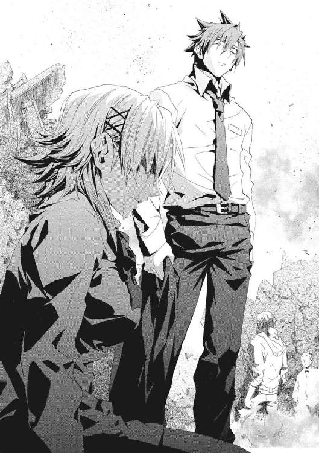
きずなは、再演魔導師という運命に引きずられて、望ぬまま人を手にかけた。メイゼルは、魔法世界から戦いにきて、仁に引き留められている間に、普通の女の子だったきずなが人を殺したところに立ち会った。
何もかもが、変わってしまったかのようだった。きずなが、仁を見上げた。
「〝悪人〟になれば、楽になれるんですか」
仁は、目をそらしたい気持ちを、苦い唾を吞んでこらえた。答えてやらねばならなかった。
「〝悪人〟だと気づいても、楽にはならない。後戻りする道がなくなって、それがどんな意味か見いだすしかなくなるだけだ」
「そっか......」
きずなの涙を止めてはやれなかった。
彼自身の意志で人を斃している〝悪人〟だと認めたから、メイゼルの前で筋を通せた。イリーズ・アリューシャは、すべてを踏みにじって前進した。だが、今、きずなに〝悪人〟になれと言うのは、いつか袋小路に行き当たる道を示す無責任に思えた。
迷うきずなを、偽善を承知で、仁は引き止めるしかなかったのだ。打ち砕かれない信念など、存在しないかのようだった。
それでも、彼女に、自分の答えを見つける時間を与えることならできた。だから、恥知らずでも手を差し伸べた。
「今は、ひとりになるな。帰ってこい」
正解がない、世界の果ての荒野で、他に何を言えるだろう。
魔導師公館の事務官十崎京香は、大型トラックに偽装した司令所にいた。隣のパイプ椅子には、火傷の痛みに顔をしかめて清水健太郎が座っていた。
銃を持った機械化聖騎士が、背後のドアを守っていた。
この司令所は、警察のものではない。後退するために乗った車両が包囲され、彼女たちだけが、ここに連れ込まれたのだ。
東京にいる魔法勢力は《協会》だけではない。その宿敵である神聖騎士団も、機械化聖騎士師団の大部隊を駐留させている。
「聖騎士が、銃器を装備するようになったとは驚きですね。それと、警察幹部を誘拐するほど大胆になったとも、知りませんでした」
京香の皮肉に、司令室のあるじである聖騎士はまったく動じなかった。聖騎士将軍アンゼロッタ・ユーディナは、世界の中心を貫く軸であるかのように、背中をまっすぐにのばして立っていた。機械化聖騎士師団の師団長と、直接会話するのははじめてだった。
アンゼロッタの声は、京香よりやわらかい。
「誘拐ではなく、《協会》の魔導師からの襲撃を受けないよう〝護衛した〟のだとご理解ください」
長い黒髪の聖騎士将軍は、高い地位につき、目を見張るほどに美しく、最強の聖騎士のひとりでもある。だが、彼女自身と同い年だからこそ、京香には、身の丈を基準にアンゼロッタを厳しく判断できた。
「日本の警察を舐めているのですか。それとも、お若いあなたご自身の傲慢ですか」
「実際、危険だったのです。我が騎士団でも、前線をまかせた参謀ベレーノ・ネロ戦死の報が届いております。あなたがたが後退してからも、依然、展示場では戦闘が続いたようです」
アンゼロッタたちが国際展示場のすぐそばにいた理由は、はっきりしていた。神聖騎士団にとって、京香たち《公館》が《連合》や中間勢力と結びつくことは事態の複雑化を招く。だから、襲撃から逃げた会議の参加者を狩りに来たのだ。
「呼ばれもしないのに、神意に忠実な騎士らしい、本当にご立派な最期でした。我々をご招待いただいたのも、彼のアイデアでしたか」
京香は、彼女が考えた立派な神聖騎士団流のお悔やみを言っておいた。参謀ベレーノは、三年前の聖騎士侵攻の計画者で、京香たちの暗殺リストの最上位のひとりだ。
アンゼロッタは、側近を失っても、世界が自身を中心に回っているような態度を崩さない。
「ご理解いただき光栄です。これが神意です」
聖騎士の信仰とは、ひどく人を試すものに思えた。
そして、予定をひとつ消化しただけのように、聖騎士将軍は死を片付けた。
「日本の魔法使い行政にかかわるかたがたを〝ご招待〟した要件なのですが──」
アンゼロッタの提案を聞いて、彼女は耳を疑った。
「神聖騎士団は、魔導師公館と、協力関係を築くことを望みます。その関係を確かなものとするために、再演魔導師を引き渡していただけませんか」
また倉本きずなかと、正直うんざりもした。そして、警察に市民の略取に協力させようとしている魔法使いらしいズレかたに、逆に安心した。
「本来、清水副局長がいる席で若輩の私が発言するのは僭越ですが、魔法使い情勢のことなので、よろしいでしょうか」
答えがわかりきっている話だから、隣の清水が許可をくれた。
「法治国家の一機関である《公館》を、魔法使い集団といっしょにしないでください。協力する理由がありません。そもそも、公館本館を実質的に陥落させたのは神聖騎士団でしょう」
だが、アンゼロッタは、部下に一台のノートパソコンを持ってこさせた。そして、その画面を彼女たちへ向けて、折りたたみ式の机に置いた。
「そのような遺恨を、言っている場合でしょうか」
画面には、テレビのニュースが表示されていた。
外洋に浮かんだ巨大な島が映っていた。太平洋上に、つい数時間前、突如としてこの島が現れたのだと、女子アナウンサーがニュースを読んでいた。常識で考えればあり得ないことだった。京香は、みずから報道機関に接触してきたというこの島を、どう判断してよいかわからなかった。
京香は、出されていたコーヒーを一口飲んだ。
そして、その液体を、大写しになったうさん臭い白いスーツを着た眼帯の男を見て噴き出した。
〈世界のみなさーん、ここは、《アトランチス》でス。よみがえった神話へようこそデス〉
どう見ても、王子護ハウゼンだった。
京香は目を疑って、眼鏡を外してまぶたの上から眼球を押さえ、もう一度眼鏡をかけなおした。
〈ボクは、アトランチス人デス。えーと、突然島が沈んじゃって驚きマシタが、なんとかみんなの友情パワーを結集して浮上に成功しまシタ〉
画面の左上に時刻が表示されていた。何度見直しても、国内のニュースの緊急特番だった。
何の冗談だと、あまりに混乱して涙の粒が目頭に浮かびそうになった。
空港の滑走路のような真っ平らな平地に、何百人という人々が集まっていた。魔法世界の民族衣装の者あり、ローブ姿の者あり、全裸の者あり、京香にはなじみのある魔法使いたちの姿だった。
王子護は、満面の笑顔でカメラに向かって手を振っていた。
〈ぼくたちアトランチス人は、地上の皆サンと、お友だちになりタイ〉
それは、奇術師の一世一代のステージだった。
彼らは、アトランチス人だと言い切って、この世界に〝元からあったものだ〟と主張しようとしている。王子護たちは、「アトランチス人の風習だ」と理由をつけて、魔法使いのこの世界に合わない風習や文化を全部押し切るつもりなのだ。
〈友情パワーで島を浮上させたそうですが、友情パワーとは何ですか？〉
日本人のレポーターが、王子護にマイクを向けていた。このアトランチスだという島は、日本に極めて近い公海上に浮上したようだった。
〈自然秩序の微妙なゆがみに、友情のパワーをぶつけて不思議なキセキを起こすことデス。けれど、人に見せるとうまくいきまセン。友情は秘するものデスカラ〉
魔法のことだけ正確だった。魔法もアトランチスで押し通す腹のようだった。
魔法使いたちとこの世界の間のあらゆる悲劇を、喜劇へひっくり返したようだった。
アナウンサーが、興奮しきったうわずった口調で、原稿を読んでいた。
〈皆さん、私たちは、現在、太平洋の公海上に突如あらわれた島へ、世界ではじめて訪問を許され、中継をしています。これから、──〉
そして、ニュースは今日のもうひとつのトップニュースである、国際展示場の爆破事件に移った。画面に、京香たちが撤退した東展示場の空撮画像が映っていた。ふたつが魔法使いという同じ根を持っていることを、報道の人間は知らない。
京香たちの暗闘の根源は、この世界の住人と異世界人の間の、文化と倫理のちがいだ。だが、公海上のこの島の上では、王子護たちはこの世界の一民族、アトランチス人になる。だから、彼らのすることはアトランチス文化だ。国家として認めさせられれば、アトランチス文化は地球文化のひとつとして組み込まれることになるのだ。
史上最大のペテンだった。だが、諸国家は裏では魔法使いたちと交流がある。こんな見え透いたペテンを、黙って認めるはずがなかった。
京香は、こめかみが猛烈に痛んで、指で押さえた。清水にたずねられた。
「知っている顔かね」
「《魔術師》王子護ハウゼン。魔導師公館の元専任係官です」
事態が巨大すぎて、彼女の手に負えなくなっていた。北太平洋の覇権は、現在、米国と中国の間で微妙な緊張をはらんでいた。たとえば、この自称アトランチスが中国と軍事同盟でも結べば、アメリカの覇権が揺らぐ。日本は、海からの物資の輸入がなければ干上がる海洋国だから、海運の航路帯の不安定化を避けねばならなかった。
だが、アトランチスは、太平洋情勢を混沌に叩き落とす可能性があった。いや、王子護はやる。
〈アトランチス人は、地上の皆サンとお友だちになりたいデス。転校してキタ、ちょっと小粋な転校生をちやほやするヨウニ、親切にしてくだサイ〉
王子護が画面の中で笑顔でコメントするたび、気温が一度ずつ下がってゆくようだった。
米軍と協力関係にある神聖騎士団が、日本とも結ぶシナリオが、京香の目にも現実味を帯びてきていた。
「神聖騎士団は、王子護ハウゼンの頭を叩き割ってやりたいのですね。気持ちはわかります。ですが、それと、あなたがたがパートナーとして適切かは話が別です」
アンゼロッタは、神聖騎士団の軍事の長の一角だった。
「ワイズマンの商品リストに核爆弾があったことはご存じでしょう。あなたがたの隣国になった〝アトランチス〟は、核武装していますよ」
†
そのテレビ放送を、仁たちは、戻ってきたアパートの居間で見た。
国際展示場に集まってきた報道陣につかまる前に、《鬼火衆》ともども魔法的転移で撤退した。迅速に、魔法での生命維持が最低限必要だった。
必要なものをかき集めたせいで、仁たちの部屋はひどいことになっていた。
重傷のけが人を、メイゼルたちが寝ている四畳半で魔法治療していた。神和瑞希が、ゴミ袋を何枚もつないで作ったシートの上に寝かされた。カオティックファクターである《魔獣使い》の自己治癒能力はすさまじい。二時間もすれば行動可能になるはずだった。《無双剣》セラも一命をとりとめていた。
だから、仁は、テレビ画面に〝アトランチス〟の風景が映ったとき、魔導師公館に電話をかけている最中だった。現地から《黒鯨》マランキシュの死体をアパートに持ってくるわけにはいかず、回収を頼んでいたのだ。
「今晩は、カレーにするわ」
メイゼルが、治療から戻ってくるなり宣言した。
昔、《鬼火》東郷永光の屋敷では、戦闘で死者が出ると宴が開かれた。仁たちの経済状況ではあまり豪華なことができないからこその、カレーだった。
前にカレーを食べたのは、ちいさくなった舞花が連れてこられた日だったと思い出した。おとなしく留守番をしていた舞花が、テレビをつけた。
王子護にしか見えない中年男が画面に大写しになったのは、そのときだった。
居間にいた全員が、あまりのことにどう反応してよいかわからなくなっていた。
《笑い顔》虎坂井レイが、『アトランチス市民、ハウゼン・Ｏ・ジモリー氏』というテロップを指さした。
「大将、これ、笑っていいんですかい」
「笑っていいのか泣けばいいのか、どっちなんだろうな......」
阿呆がひとり悲劇に混じると、風景はナンセンスなコメディに変わる。それは、神話と世界を笑い飛ばす〝奇術師〟王子護の、一世一代の晴れ舞台だった。
だが、魔法使いとこの世界の住民の間には、あまりにも多くの血が流れ、骸が積み上がりすぎていた。
居間の隅に、倉本きずなが、毛布をかけられて横になっていた。きずなは意識を失っていた。疲労と精神的打撃で、瑞希たちが助かりそうだとわかった途端、張っていた緊張の糸が切れて崩れ落ちたのだ。テレビの中で、王子護がいけしゃあしゃあと、地球人類へのメッセージを語っていた。
〈戦いはいけまセン。戦いは何も生みだしまセン〉
仁は、彼女の寝姿を見下ろした。魔法使いにかかわるまで普通の女子高生だったきずなの手の、血の汚れは、もう黒く乾いていた。彼女はそのうち目を覚ます。そして、王子護の皮肉を聞くことになる。彼女は、ずっと仁に戦いをやめさせようとしていて、それでも戦うしかなかったのだ。
「いや、俺たちは、これを笑うのはやめておこう」
これが、死を笑い、犠牲を笑い、祈りを笑い、罪を笑い、努力を笑い、知恵を笑い、信念を笑い、妥協を笑い、苦痛を笑い、労働を笑い、献身を笑い、刻苦を笑い、そして世界を笑う暗闇へ落ち込んでゆく道に思えた。
彼らは、積み重なったものを笑い飛ばさねば、もはや先に進めないかもしれなかった。だが、それでも多くの敵を斃して生き残っているからこそ、敬意を忘れたくはなかった。
テレビ画面の中の王子護の、目は笑っていなかった。魔導師公館で百年間専任係官を務めた男が、脱いだ帽子を振って愛嬌を振りまいていた。
〈アトランチス文化は深遠デース〉
メイゼルが、狂騒の居間からエプロンをとって台所に入った。
ちいさな舞花が、壁にもたれて絵本を開いた。
「たくましいね。もう食欲あるんだ」
舞花がはじめて人を殺したとき、どうだったか、聞いてみたかった。だが、きずなが話の途中でもし起きたらと思うと、話題が不謹慎な方向へ広がってほしくはなかった。
「おまえは、つらかったか」
仁は、妹の隣に腰を下ろした。舞花が、高校生のとき一度だけ戻ってきた日のように、笑った。
「あはは、この部屋に、帰って来ちゃった」
「そうだな。そんなこと、あったよな」
彼ら兄妹は、高校生だったころから、変わり果ててしまった。
「バカみたいだよね。あのときのわたし」
妹が、乗り越えたのではなく、そうするよりなくなったかのように、追い詰められて噴き出した。この世に苦痛しかないのなら、悲劇に酔うことを咎める者もない。だが、彼らのどんな惨苦も、他人や〝いつか〟未来の自分自身から、喜劇として笑われるものでしかないのだ。
テレビの中で、《アトランチス流あいさつ》だと、王子護がデタラメを教えていた。広大なアトランチスの陸地を信用して、一流大学を卒業した女子アナウンサーが、冗談のようなポーズをとらされていた。
どこの国籍でもない住人が大量にいる陸地が公海上に浮上したとき、それをどうあつかえばよいのか、仁は知らない。だが、このまますんなり済むはずがなかった。王子護が、その程度のことを承知していないはずがなかった。
アトランチスの大地は、青空の下、まるで飛行場の滑走路か空母の甲板のように、真っ平らに広がっていた。遠くに、小山のようなこんもり盛り上がった区画があった。
メイゼルが、つぶやいた。
「これ、あたしの家だわ」
「「ええっ？」」
居間じゅうの目が、ちいさな魔女に集まった。メイゼルが、テレビ画面にかわいらしく顔を近づけていた。そして、地面に彫られた、輪になった枝を引き裂く鴉の紋章を指さした。
「これ、アリューシャ家の浮遊城だと思うんだけど。うん、紋章もあるし、あたしんちだわ。この世界に流されてきたのかしら。《神》が死んだとき、《九位》といっしょに弾き飛ばされたのかしら」
十三年前にしては古びちゃったわねなどと、メイゼルが首をかしげていた。
仁も《鬼火衆》も、あまりのことに、疲れ切った口元に笑みが浮かんだ。王子護が立つこの〝アトランチス〟が、ほどなく熾烈な戦場になる臭いを、確かに嗅いだのだ。
幾万の魔法世界で、ただひとつ魔法に見捨てられた世界。ここは《地獄》──はげしく色を変える運命に衝突して、生身の自分が問われる場所。
〈ＦＩＮ〉
あとがき
九巻から半年のごぶさたです。長谷敏司です。
今回の十巻も、さらに物語を広げての一冊になりました。冷静に考えると、一巻の状態からすごいことになっていますね。旧約聖書のバベルから、十巻かけてとうとう古代ギリシアの伝説までやってきました。
懸案だったことに、ようやく手をつけられました。シリーズ中のできごとは、おおむね一巻を書く前に組んだ全体プロットに沿って進んでいるのですが、遠くへ来たものです。武原さんは今回も元気に転落し続けています。この落差だけは想定外です。
そして、展開も佳境へ向かってきております。そのおかげか、メイゼル以外は表紙と口絵が全部新登場のキャラクタという、十巻目としては異常事態になりました。
ある意味一巻目に入っていてもよかった内容だと考えると、長編シリーズの構成は難しいですね。暗くも明るくもなりきらず、微妙に中間を縫ってゆくところは、円環少女らしい気もします。
あと、今回はいつもよりキャラクタ関係の描写はひかえました。さすがに、いろいろ台無しになる匂いがしたので。
最後に謝辞を。最後までお手数おかけしました。担当編集者さん。支えていただきました、家族へ、友人へ。山根さん、英語のことなど助けていただきありがとうございました。
そして、イラストの深遊さん。《九位》のときもそうでしたが、某キャラのデザインを見て、こうきたかと驚きました。本当に毎回私も楽しみにしております。
次巻からは怒濤の展開になってゆく予定です。ここ数巻は、ずっとえらいことになりっぱなしですが、実はここからが本番です。
今年中には次巻が出る予定ですので、また十一巻でお会いしましょう。
カバー・口絵・本文イラスト／深遊
カバー・口絵・本文デザイン／中デザイン事務所
円環少女
⑩運命の螺旋
長谷敏司
平成25年9月1日 発行
発行者 宍戸健司
発行所 株式会社角川書店
〒102-8078 東京都千代田区富士見2-13-3
http://www.kadokawa.co.jp/
(C) Satoshi HASE 2009
本電子書籍は下記にもとづいて制作しました
角川スニーカー文庫『円環少女 ⑩運命の螺旋』平成21年7月1日初版発行